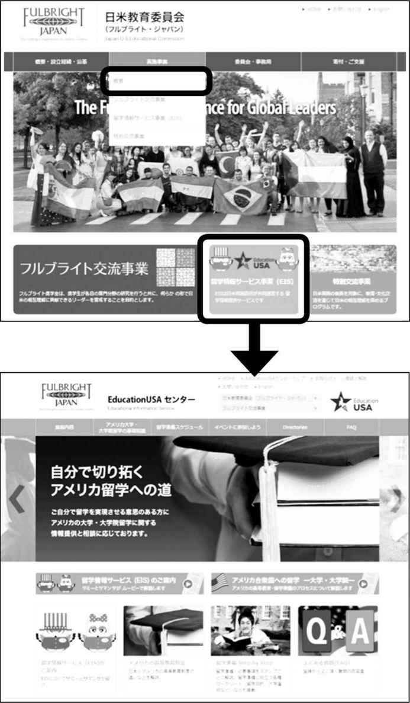
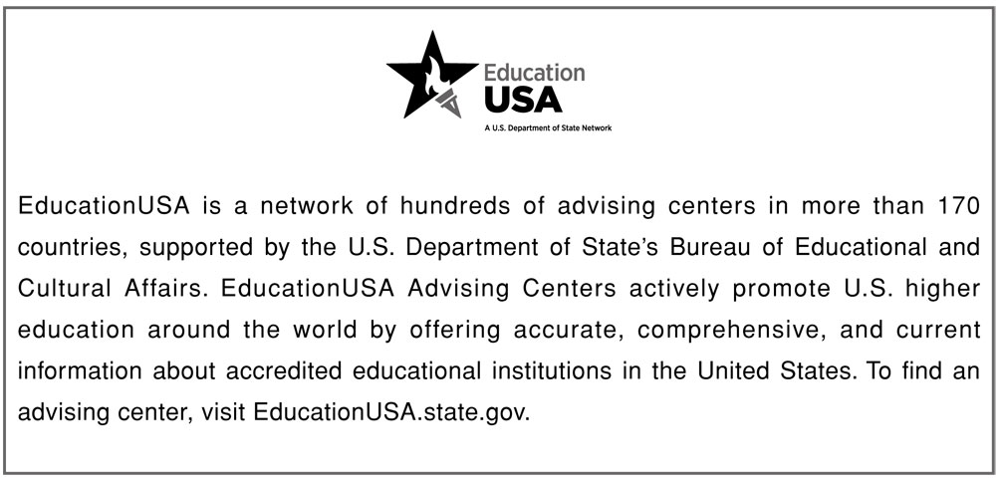
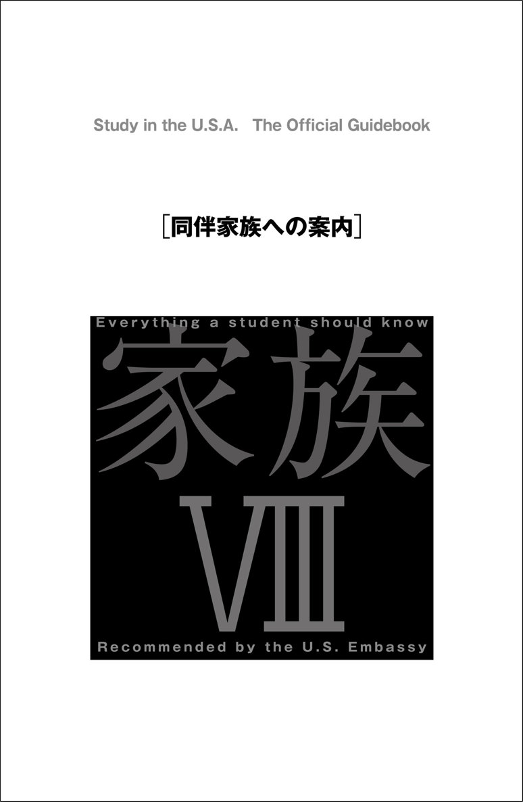
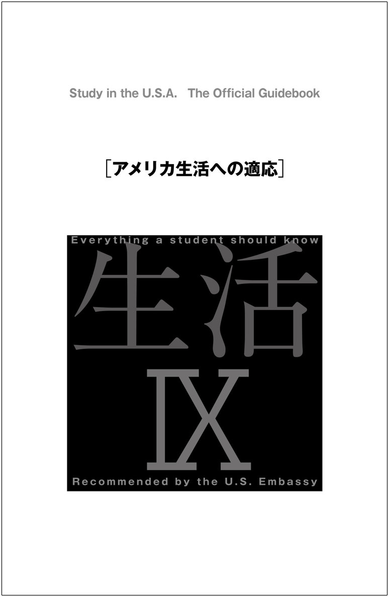

| アメリカ留学公式ガイドブック | |
| 日米教育委員会 | |
| (2015) | |
参照項目から元の箇所に戻るには、お使いのビューワーの仕様に従ってください。または一旦目次を表示し、戻りたい箇所の近くの見出しをタップして戻ってください。
はじめに
本書は、過去30年弱、『アメリカ留学オリエンテーションハンドブック』という書名で、アメリカの大学・大学院へ留学される方への渡米準備・渡米中の手引書として、毎年改訂されておりました。その後、2003年に渡米準備だけでなく留学手続きも含めた総合的な手引書として、『アメリカ留学公式ガイドブック』という書名で新しく出版され、2014年まで毎年改訂しておりましたが、このたび『アメリカ留学公式ガイドブック』として出版することとなりました。
前半は、アメリカ留学を実現する際に必要な情報・ステップ（留学生の動向、アメリカの教育制度、留学・出願手続き、留学ワークシート等）をわかりやすくまとめ、後半は、留学が決定した方に向けて、ビザ取得などの渡米前準備や留学中の注意点、留学生の法的義務などをまとめてあります。
アメリカの大学は多様で、教育内容や種々の手続き方法は大学により異なります。従って、各大学特有の内容は、大学の公式ウェブサイトでお調べいただくことを前提としています。アメリカはさまざまな選択肢を与えてくれる可能性に満ちた国ですが、同時に常に自己責任を問われる国でもあります。留学決定者が渡米前後になすべき情報収集や手続きの方法を知るための案内書として、またアメリカで勉学・生活する上で準備すべきさまざまな事柄や起こりうる諸問題に対応する際の指南書として、本書が皆さまのお役に立てば幸いです。
本書に記載されている事項は、出版時点で内容が正確であるように最大限の注意を払って作成しておりますが、日々変化する内容のものにつきましては、情報が変更されている可能性があることを、あらかじめご了承ください。最新情報に関しては、随時各項に紹介されている情報源でご確認ください。特に、ビザや国の規制に関する事柄につきましては、関連機関のウェブサイトや大学の留学生アドバイザーに必ず確認するように心がけてください。なお、本書に掲載されている団体・書籍等につきましては、あくまで情報掲載の目的で記載されており、当委員会が推薦するものではないことをご了承ください。
アメリカ留学中、あるいは帰国後に、本書についてのご意見・ご感想などございましたらどうぞお知らせください。今後の改訂の参考にさせていただき、より充実した内容になるよう努力していきたいと存じます。
本書制作にあたりまして、青島宏一郎氏（San Francisco State University）、得字由紀氏（University of Minnesota）ほか多くの方々にご協力いただきました。深く御礼申し上げます。
日米教育委員会（フルブライト・ジャパン）
EducationUSA
E-mail: educationusa@fulbright.jp
http://www.fulbright.jp
※「情報は、常に更新されています。本書に関する最新の更新情報は、
「フルブライト・ジャパン」のホームページ内
http://www.fulbright.jp/study/service/index.html#book
にある『アメリカ留学公式ガイドブック』の特設ページでご確認ください。
Contents
Study in the U.S.A. The Official Guidebook
日米教育委員会（フルブライト・ジャパン）／日米間のプログラム運営体制と交流実績
1）Multidisciplinary / Interdepartmental Degree Program
2）Internships / Cooperative Education（産学協同）
3）プラクティカルトレーニング(Practical Training)／アカデミックトレーニング（Academic Training）
4）産学協同教育プログラム（Cooperative Education---Curricular Practical Training）
4）アカデミックトレーニング（Academic Training）
6）母国居住必須条件（Foreign Residence Requirement）
Column アメリカ留学質問箱
「Athletic (sports) Scholarships」とは
フルブライト・プログラムの歴史
フルブライト・プログラムは、第二次世界大戦終了直後の1945年、「世界平和を達成するためには人と人との交流が最も有効である」との信念のもとにJ.ウィリアム・フルブライト上院議員が米国議会に提出した法案に基づいて発足した、米国と諸外国との相互理解を目的とする人物交流事業です。
その後フルブライト・プログラムは、世界で最も知られた権威ある人物交流事業として発展し、これまで半世紀以上にわたり約36万人以上の人々に、米国と160カ国以上の相手国との間で研究や教育の機会を提供し、あらゆる分野のリーダー育成に大きな役割を果たしてきました。グローバル化する人類社会がさまざまな課題に直面している今日、フルブライト・プログラムのもつ意義はますますその重要性を増しているといえます。
教育交流は、「国家を人々に変える」、すなわち国際関係を人間的にすることができます。それはほかのどんなコミュニケーション手段もできないことです。私は教育交流が人々の間に必ずしも友好的な感情をもたらすものだとは思いませんし、またそれを目的とすべきだとは思いません。ただ、人間として共通の感情を喚起できること、言い換えれば、ほかの国々に自分たちが恐れる教条があると理解するのではなく、自分たちの国で育った人々と同じように喜びや悲しみ、残酷さや優しさを共感できる人々が住んでいる、ということが実感できれば十分だと考えます。
J. ウィリアム・フルブライト上院議員
日米教育委員会（フルブライト・ジャパン）／日米間のプログラム運営体制と交流実績
日米教育委員会（フルブライト･ジャパン）は、日米間の教育・文化・学術交流を促進するため、1951年に日米両国間の協定に基づき発足したフルブライト交流事業を実施している国際機関です。以来、フルブライト交流事業に加え、米国高等教育に関する情報提供、ならびに特別教育交流プロジェクトを実施しています。
日本においては、占領下にあった1949年から1951年までの間、米国政府のガリオア・プログラム（占領地統治救済事業）の奨学金により約1,000名の日本人が米国に留学しました。その後、講和条約を控えた1951年、日米両国政府の間で人物交流に関する覚書が交わされ、翌1952年には米国政府により在日合衆国教育委員会が設立されて、ガリオア・プログラムを継承する形で日米間のフルブライト・プログラムとしての人物交流が開始されました。
このプログラムは当初、米国政府からの資金で運営されていました。その後1979年からは日米両国政府で運営資金を折半することになり、新たに日米教育委員会（フルブライト・ジャパン）が設置されて事業運営の責任を担うことになりました。フルブライト・プログラムの基本的運営資金は両国政府の拠出金によっています。それに加えて、1982年に設立された全国ガリオア・フルブライト同窓会が公益財団法人日米教育交流振興財団を1986年に立ち上げ、民間からも資金援助を受けるようになりました。歴史ある人物交流プログラムとして世界的に認知されている「フルブライト」の名前を日本でも広めることを目的に、2007年より日米教育委員会はその通称名として「フルブライト･ジャパン」を採用しています。
フルブライト奨学金で派遣される日本人および米国人の数は毎年それぞれ約40〜50名です。フルブライターと呼ばれる同窓生の数は、日本人が約6,400名、米国人が約2,600名にのぼり、その多くは教育、研究、行政、法曹、ビジネス、ジャーナリズムなどさまざまな分野で活躍しています。
日本人対象のフルブライト奨学金
■ フルブライト奨学金
対象となる学術分野は米国および日本、さらにはグローバル社会に関連した人文・社会科学分野。特に以下の5つの領域に当てはまる研究を奨励します。
１．米国の研究
２．環太平洋地域の政治・経済関係
３．現代社会の諸問題
４．グローバル社会の課題
５．教育
毎年約40〜50名の日本人奨学生が選ばれます。奨学金は原則として全額支給で、下記のプログラムがあります。
【大学院留学（学術系学位）プログラム】
フルブライト交流事業の目的を十分理解し、人格面および学業面で優れた若者に米国大学院での研究の機会を与える。米国の大学院博士課程・修士課程に正規の学生として在籍し、学位取得のための科目履修を通して研究を行う。
【大学院留学（専門職学位）プログラム】
次世代の日米関係を担うリーダーとなりうる優れた人材に、米国の経営大学院などの専門職系大学院（プロフェッショナル・スクール）での研究の機会を与える。米国専門職大学院に正規の学生として在籍し、専門職学位（プロフェッショナル・ディグリー）取得のための科目履修を通して研究を行う。
【大学院博士論文研究プログラム】
若手研究者を対象とし、日本の大学に博士論文を提出することを目的として、米国の大学等で単位取得を伴わない研究を行う。
【研究員プログラム】
大学教員、政府機関あるいは非営利研究機関勤務者を対象とし、米国の大学等で、各自の研究テーマに沿って単位取得を伴わない研究を行う。
【ジャーナリスト・プログラム】
経験5年以上の現役ジャーナリストを対象とし、米国の大学等で、各自の研究テーマに沿って単位取得を伴わない研究を行う。
全プログラムに共通する応募資格要件
１．日本国籍を有すること。（日米の二重国籍者あるいは米国永住権を持つ者は応募不可）
２．日本在住の者。
３．米国で支障なく学術活動が行えるだけの十分な英語能力があること。また、学術的能力のみならず、高いコミュニケーション能力があること。
４．米国で研究を計画しているテーマに関する専門知識に限らず、広い視野と関心を有すること。
５．米国で支障なく学術活動が行えるよう、心身ともに健康であること。
そのほかにプログラムごとの資格要件がありますので、詳細はウェブサイトをご覧ください。
応募資格、選考日程の異なるプログラム：
■ フルブライト語学アシスタントプログラム（FLTA）
フルブライト語学アシスタントプログラム（FLTA）とは、派遣されるアメリカの大学で日本語を教えながら、英語教授のスキルおよび自身の英語力を高め、またアメリカの文化や習慣についての知識を深めることを目的とした9カ月間のアメリカ留学奨学金です。資格要件などの詳細は、ウェブサイトでご確認ください。
●日米教育委員会（フルブライト・ジャパン） フルブライト交流部
〒100-0014 東京都千代田区永田町2-14-2 山王グランドビル207号
Tel: 03-3580-3231
http://www.fulbright.jp/scholarship/index.html
Facebook: https://www.facebook.com/fulbrightjapan
EducationUSA
フルブライト・ジャパンは、日本におけるEducationUSA事業をサポートしています。フルブライト・ジャパンは、1964年以来、公的サービスとして、日米両国における勉強・研究の機会を求める問い合わせに応じています。
EducationUSA、フルブライト・ジャパンは、アメリカ大学・大学院への留学に関する情報提供と相談を無料で行っており、米国国務省・教育文化局ECA (Bureau of Educational and Cultural Affairs) の支援を受けた EducationUSAセンター（こちら参照）として活動しています。
●日米教育委員会（フルブライト・ジャパン） EducationUSA
[センター所在地]
〒107-0052 東京都港区赤坂 1-1-14 NOF溜池ビル8階 アメリカンセンターJapan
Tel: 03-5545-7435（スタッフ対応時間 月・水・金 13:00～17:00）
http://www.fulbright.jp/study/index.html
Twitter:@fulbrightjpeis LINE:@fulbrightjp
Facebook: http://www.facebook.com/fulbrightjpeis
Youtube: https://www.youtube.com/channel/UCy7aSS74Akv6VlC2zvBerkA
調べる
インターネット／ウェブサイト
フルブライト・ジャパン EducationUSA ウェブサイトには、アメリカ高等教育の基礎知識、留学準備、奨学金情報、ビザ申請方法、留学に関するリンク集など、随時最新情報を掲載しています。
フルブライト・ジャパンのウェブサイトを活用しよう！
http://www.fulbright.jp
■ トップページ
「EducationUSA事業」をクリック。
■ EducationUSA

■ アニメーション
2種類のアニメーション。アメリカ大学・大学院留学に必要な基礎知識（約30分）と EducationUSA、フルブライト・ジャパンの案内（約5分）を音声付きアニメーションで紹介。
■ 留学準備スケジュール
留学に必要な準備と時期の目安。
■ Directories
リンク集：学校検索や米国における高等教育に関連するリンク集。
テスト情報：英語力テスト（TOEFLなど）や適性能力テスト（SAT、GREなど）の申し込み方法・問い合わせ先一覧。
アメリカ留学奨学金制度一覧：日本国内で公募されているアメリカ留学奨学金制度一覧。
用語集：留学関連情報で登場するキーワードを集めて解説。
アメリカにおける留学生の統計：留学生全体と、その中における日本人留学生に関するデータを紹介。
資料閲覧可能な国際センター：アメリカ留学に関する英文の参考図書が閲覧できる都道府県の国際交流センター・協会一覧。
■ FAQ（よくある質問）
奨学金の探し方、英語学校について、編入について等、皆さまからよくいただく質問とその回答集。
各種SNSでも情報を配信
■ FJ ニュースブログ http://fj-news.net
フルブライト・ジャパンのオフィシャル広報ブログ。アメリカ留学関連イベントの案内や奨学金情報などアメリカ留学に関するさまざまな情報を掲載。
■ Facebook https://www.facebook.com/fulbrightjpeis
■ Twitter @fulbrightjpeis
■ Youtube https://www.youtube.com/channel/UCy7aSS74Akv6VlC2zvBerkA
■ LINE @fulbrightjp
EducationUSAアドバイジングセンター（東京）
アメリカンセンターJapan内にあるEducationUSAルームでは、アメリカ留学に関する英文蔵書を閲覧できます。
■ ご利用時間
月～金：13:00～17:00
休館日：土日、日米の祝祭日
また年末年始や行事による臨時休館日がありますので事前にウェブサイトでご確認ください。
■ 所在地
〒107-0052
東京都港区赤坂 1-1-14 NOF溜池ビル8階
■ 地図
http://americancenterjapan.com/access/
■ アクセス
溜池山王駅（銀座線・南北線）8番または9番出口
情報収集時におさえておくべきポイント
本書に記載されている事項は、出版時点で内容が正確であるように最大限の注意を払って作成していますが、日々変化する内容のものにつきましては、情報が変更されている可能性があることを、あらかじめご了承ください。情報は最新かつ正確なものでなければ役に立ちません。最新情報に関しては、随時各項に紹介されている情報源でご確認ください。「大学調査・情報収集時の注意点」もご参照ください。
プログラムに参加する
フルブライト・ジャパン EducationUSA は、留学説明会や、各種セミナーを開催しています。日時等の詳細は、ウェブサイトをご覧ください。イベントの案内は、随時、オフィシャルブログ・FJニュース〈http://fj-news.net〉など、各種SNSでも配信しています。
アメリカ留学説明会・相談会
アメリカの大学・大学院留学の概要、留学情報サービスの活用方法の説明、留学の体験談を聞くことができます。
説明会は東京で年間を通じて定期的に開催され、東京以外の全国主要都市には、海外留学フェアなどで年1回はアメリカ留学に関する説明を行っています。
EducationUSA EXPO（東京）
アメリカ大使館主催、フルブライト・ジャパン協力で、秋（実施例：2015年9月12日（土））に、東京で開催します。EducationUSA EXPOでは、カレッジフェアや留学セミナーが開催されます。カレッジフェアでは、アメリカから大学関係者が来日し、各大学がブースを設けて大学の説明や資料の配布を行います。
http://www.americaexpo.jp
渡米前オリエンテーション（東京）
渡米準備のためのオリエンテーションで、秋学期からのアメリカ大学・大学院留学が決定している方を対象に、毎年6月上旬に東京で大学・大学院別に開催されます。
なお、例年、オリエンテーションのいずれか１日、全国のEducationUSAセンター（こちら参照）に生中継しています。
渡米前オリエンテーション実績例（2015年）
2015年6月3日（水）大学学部課程
2015年6月4日（木）大学院
その他のセッション・セミナー
■ 特別セッション（東京）
アメリカの高等教育に詳しい専門家や、留学情報サービスのアドバイザーによる、専門分野別、またはトピック別のアメリカ留学セッション。不定期開催。セッションによっては、全国のEducationUSAセンター（こちら参照）に生中継します。
■ ビジターズ・セミナー（東京）
アメリカから来日した大学関係者によるセミナー。不定期開催。
■ アドバイザートレーニング・セッション
アメリカ留学相談に応じるアドバイザーのためのセッション。不定期開催。
相談する
本書をお読みになった上でご質問・ご相談のある方は、電話／E-mailでお問い合わせいただくか、または資料室に直接おいでください。
当方は、中立的な立場から、正確で最新、かつ公正な情報提供をすると同時に、留学するご本人が、ご自身で大学選択・留学手続きなど全てを完遂できるように、「どのように調べて情報収集するか」という手段を提供することを主眼としています。よって、特定の学校のご紹介・斡旋、手続きの代行は行っていません。詳しくは、相談に際してのお願いと諸注意〈http://www.fulbright.jp/study/service/consult.html〉をご参照ください。
電話、メールでの相談
■ 電話
下記電話番号におかけください。
［電話番号］03-5545-7435
［相談時間］月・水・金 13:00～17:00
（休館日を除く）
次のウェブサイトのお問い合わせフォームをご利用ください。皆さまからよくいただくご質問への回答は、「よくある質問：FAQ」〈http://www.fulbright.jp/study/res/faq.html〉にまとめてありますので、お問い合わせの前に、ぜひ一度ご確認ください。
［お問い合わせフォーム］https://www.fulbright.jp/contact
資料室での個人相談
ひとり最長30分で、事前予約が必要です。
［相談時間］月～金 13:00～16:30 (休館日を除く)、要事前予約
［予約方法］電話 03-5545-7435 （月・水・金 13:00～17:00）またはeducationusa@fulbright.jpまでご連絡ください。予約状況を確認後、お返事申し上げます。状況によりご希望に添えない場合もございます。
Column
アメリカ留学質問箱「留学エージェントについて」
アメリカ留学手続きは、必ずしも斡旋業者を通さなくても、注意深く行えば自分の力で行うことが可能です。しかし、自分で手続きをするためには、必要最低限の英語力や情報収集能力が要求されます。一般にアメリカ留学を遂行するには、①学力、②英語力、③経済力、④（基礎的な）コンピュータースキル、の４つの条件を満たす必要があるといわれています（「留学に必要な条件」参照）。
入学手続きを代行する留学斡旋会社は数多く存在し、サービス内容や代行手数料もさまざまです。よって、業者に代行を依頼する場合は、複数の会社を比較・検討するとよいでしょう。また、最終的にどの業者を選ぶかは、利用者（消費者）の判断・責任に委ねられるという点も理解しておきましょう。
留学は、留学準備を開始した段階から始まっています。自分の力で留学準備を進めることは、大変ですが、そのプロセスが結果的に留学する本人の能力を高めてくれます。このガイドブックを案内書として、是非、自分の力を信じて、準備を進めてみてください。
■ 関連サイト
独立行政法人日本学生支援機構(JASSO)「留学斡旋業者の利用について」
http://ryugaku.jasso.go.jp/oversea_info/basic/agency
米国国土安全保障省(DHS) "Study in the States─Information on Commission-Based Recruiters"
http://studyinthestates.dhs.gov/2014/04/information-on-commission-based-recruiters
アメリカにおける留学生の統計は、毎年、IIE (Institute of International Education)がOpen Doorsとして発表しています。Open Doorsは、米国国務省・教育文化局ECA（Bureau of Educational and Cultural Affairs)からの助成金をもとに作成されており、アメリカの高等教育機関における留学生・研究者の受け入れおよびアメリカからの海外留学（派遣）に関する包括的な情報として知られています。Open Doorsは、毎年、米国国務省（U.S. Department of State）と米国教育省（U.S. Department of Education）によって定められたInternational Education Week （通常11月第３週）期間中に発表されます。
なお、日本における留学生交流に関するデータは、文部科学省が毎年発表しています。
■ 関連サイト
IIE (Institute of International Education) "Open Doors"
http://www.iie.org/Research-and-Publications/Open-Doors
米国国務省・教育文化局ECA（Bureau of Educational and Cultural Affairs)"International Education Week"
http://eca.state.gov/programs-initiatives/international-education-week
文部科学省「留学生制度の概要及びデータ関係について」
http://www.mext.go.jp/a_menu/koutou/ryugaku/1306884.htm
A. 留学生全体の動向
1. 留学生の構成比（2013--14年）
アメリカの大学・大学院に在籍する留学生総数
886,052人（前年比8.1％増、全米大学生数の4.2％）
学生の出身国数
約220カ国
アジアからの留学生（こちらのグラフ参照）
568,510人（留学生の64.2％、国別留学生数の上位10位の半数以上を占める）
留学生出身国上位10カ国（こちらの表参照）
1. 中国、2. インド、3. 韓国、4. サウジアラビア、5. カナダ、6. 台湾、7. 日本、8. ベトナム、9. メキシコ、10. ブラジル
学位レベル
大学学部：41.7%、大学院：37.3%
Non-Degree（学位を取得しない）：8.9%
OPT（Optional Practical Training）：12.0%
男女比
男性55.9％、女性44.1％
出典：Open Doors 2014, IIE (Institute of International Education)
アメリカ留学で得た一番の経験は何かという問いに、「勉強だけでなく、世界各国からの留学生と知り合い、友人となれたことが一生の財産」という答えが多く返ってきます。留学生大国と呼ばれるアメリカでは、世界約220カ国から約89万人もの留学生が大学・大学院で学んでいます。アメリカにおける留学生数は、1971年と2003-05年の4年間を除いて、増加の一途をたどっています（グラフ「留学生数の変遷」参照）。
アメリカにおける留学生の歴史を見てみると、1980年代には、アジアからの留学生が著しく増えて留学生全体の5割以上を占めるようになりました。2013-14年では、アジアからの留学生は全体の64％にのぼっています。
留学生の大学学部・大学院別の人数の割合は、年代により異なった傾向が見られます。1960年代では、学部留学生数と大学院留学生数の割合がほぼ同じであったのに対し、70年代から80年代半ばにかけては、学部の割合が大学院を大きく上回りました。80年代後半からは、再びその差異が縮まり、90年代半ばでは、学部留学生と大学院留学生の割合が近接していました。これは、中国やインドなどの国々から、大学院へ留学する学生が増えたことが要因と考えられます。2002-03年度以降この割合が逆転し、2010-11年度までは、大学院で学ぶ留学生が、大学学部課程で学ぶ留学生の数を上回っていました。しかし、2011-12年度より再びこの割合が逆転し、2013-14年度では、大学学部課程で学ぶ留学生が41.7%（370,724人）と大学院で学ぶ留学生数（37.3%、329,854人）を上回っています（出典：Open Doors 2014, IIE）。
2. 人気志望専攻分野
アメリカがビジネススクール発祥の地であるためか、留学生の間ではビジネス分野が一番の人気を占めています。工学も、伝統的に留学生に人気の分野です。
留学生全体（大学・大学院含む）上位5分野
1. ビジネス（21.2％）、2. 工学（19.2％）、3. その他（10.7％）、4. 数学・コンピューターサイエンス（10.3％）、5. 社会科学（8.2％）
出典：Open Doors 2014, IIE
3. 留学生の多い地域・大学
留学生全体の約43%が、次の5州に集中しています。
留学生の多い地域（州）上位5州
1．カリフォルニア州
2．ニューヨーク州
3．テキサス州
4．マサチューセッツ州
5．イリノイ州
出典：Open Doors 2014, IIE
留学生の多い大学は以下の通りです。留学生全体の64.5％は、公立大学に在籍しています。
留学生の多い大学上位5校
1. New York University (New York, NY)
2. University of Southern California (Los Angeles, CA)
3. University of Illinois - Urbana-Champaign (Champaign, IL)
4. Columbia University (New York, NY)
5. Purdue University - Main Campus (West Lafayette, IN)
出典：Open Doors 2014, IIE
4. 留学資金財源
留学生全体を見ると約6割の人が、大学学部課程に在籍する留学生に至っては、約8割が自己（家族）資金でアメリカ留学に必要な経費を賄っていることがわかります（こちらの表参照）。アメリカ留学に必要な経費に関しては「経済力」を参照してください。
B. 日本人留学生の動向
1. 日本人留学生の構成比（2013--14年）
日本人留学生総数
19,334人（前年比1.2％減、全米の留学生総数の2.2％、国別では第7位）
学位レベル
大学学部：47.4％、大学院：18.4％、Non-Degree（学位を取得しない）：26.7％、OPT：7.5％
出典：Open Doors 2014, IIE
日本人留学生は、ほかのアジアからの留学生と同様、1980年代半ばから急増し、5年間でおよそ3倍になり、その後十数年間、日本人留学生の数に大きな変動はありませんでした。しかし、日本人留学生は1994-97年度まで国別では第1位を占めていましたが、中国やインドからの留学生数が急激に増えた結果、1998-99年度国別順位第2位、2000年度第3位、2001-07年度第4位、2008年度第5位、2009年度第6位、2010年度以降は第7位へと下降しました。
アメリカの英語研修プログラム（Intensive English Program）における日本人留学生数は、2005年までの過去20年間、国別で第1位を占めていましたが、サウジアラビア、中国からの留学生が急増した結果、2005-08年度は国別順位第2位、2009-12年度第4位、2013年度は第3位になっています。
近年の日本人留学生の特徴としては、1）大学学部に留学する学生が大学院に留学する学生よりも多いこと、2）non-degree（学位を取得しない）で留学する学生が増えていることがあげられます。
アメリカで学ぶ留学生全体では、大学学部課程と大学院課程で学ぶ留学生数の割合は、ほぼ拮抗していますが、日本人留学生の場合は、大学学部課程で学ぶ割合が4割以上と大学院に留学している日本人（18.4%）を大きく上回っています。
また前述のように、non-degree（学位を取得しない）で留学する日本人留学生数は、近年、増加傾向にあります。non-degree（学位を取得しない）留学生全体のうち日本人留学生の占める割合は6.5%（第4位）となっています。
出典：Open Doors 2014, IIE
2. 日本人留学生の人気志望専攻分野
日本人全体（大学・大学院を含む）上位5分野
1. その他（20.9%）、2. ビジネス（18.8％）、3. 集中英語（15.2％）、4. 社会科学（10.3％）、5. 芸術（7.7％）
出典：Open Doors 2014, IIE
なお、留学生データベース SEVISの統計によれば、2009年の時点では博士課程に在籍する日本人留学生のうち、理工系分野専攻の方が他分野（文科系）に比べて割合が高く、博士課程在籍者の約7割が理工系を学んでいる傾向が見られます（出典：INFOBRIEF Science Resource Statistics July 2010 "Foreign Science and Engineering Students in the U.S.", National Science Foundation）。
3. 日本人の志望理由・動機
2013-14年に留学情報サービス利用者（1,065名）を対象に実施した「アメリカ留学志望理由に関する調査」によると、日本人がアメリカ留学を志す理由として以下のような結果が現れました。
1. 国際性を身に付け、視野を広めたい。
2. アメリカの大学で学ぶ経験をしたい。
3. 英語力を向上させたい。
4. さまざまな人々との交流を通じてネットワークを築きたい。
5. 留学経験を将来の仕事に役立たせたい。
6. 日本より学ぶ機会が多く、教育内容が多様で魅力があるから。
7. 将来、外資系企業、または外国で働きたい。
8. ある特定の専門分野の教育の質・内容が日本より優れているから。
9. 学位を取得したい。
10. 外国、特にアメリカで暮らすことに憧れていた。
（注：データ転載禁止）
過去5年間の調査では、「国際性を身に付け、視野を広めたい」、「アメリカの大学で学ぶ経験がしたい」、「英語力を向上させたい」、「さまざまな人々との交流を通じて、ネットワークを築きたい」、「留学経験を将来の仕事に役立たせたい」が上位5位を占めています。
近年、大学院留学志望者数が増えているものの、実際にアメリカの大学院に留学している人数は、それほど増えていません。その理由として、留学への熱意はあっても、英語力・学力・経済力の面で大学院入学資格を満たせない、厳しい家庭経済状況、留学後の就職への不安など、留学志望者をとりまく現実と希望が折り合わずに、実際に留学するには至らないという現状があると推測されます。
■ 参考文献
Open Doors 2014
IIE (Institute of International Education)
Motivation Survey 2014
日米教育委員会（フルブライト・ジャパン）
A. 日本との制度の違い
1. 入学資格・条件の違い
アメリカの大学には日本的な入学選抜試験というものはなく、全て書類審査で選考されます（詳しくは、「出願書類の準備」参照）。各大学が定めた必要事項・書類を、締め切りまでに提出しなければなりません。締め切り日は、大学によりさまざまで、早いところでは前年の11月末に締め切ってしまう大学や、rolling admission といって特に締め切りを設けず随時願書を受け付ける大学など、多岐にわたっています。従って、アメリカ留学には1年〜1年半の準備期間が必要です。また、過去の自分の業績（成績）などが評価されるため、普段からの地道な勉学努力が問われます。
2. 学期制度／単位制度
アメリカの大学は、日本とは異なり、一般に9月から翌年の5月までの9カ月間を1学年（academic year）としています。6〜8月は、夏休みか夏学期（summer session / school）です。その1学年間（9カ月間）を2期に分けるのがセメスター（semester）制で、1年間（12カ月間）を4期に分けるのがクオーター（quarter）制です。1セメスターは17～18週間（秋：8月下旬～12月中旬、春：1月上・中旬～5月上・中旬）、1クオーターは11～13週間（秋：9月下旬～12月中旬、冬：1月上旬～3月中旬、春：3月下旬・4月上旬～6月中旬）です。そのほかにも、大学独自の学期制度を設けている場合があります。
成績は、多くの日本の大学のように通年制によって学年の終わりにつくシステムとは異なり、単位（クレジット）制で、各学期が終了するごとにコースが修了し、成績がついて単位を取得します。1単位（クレジット）とは、セメスター（semester） 制の場合、計37.5時間の学習（週1時限50分の授業と、週2時限100分以上の授業時間外の学習）で構成されています（参照：米国教育省［U.S. Department of Education］〈http://ifap.ed.gov/dpcletters/GEN1106.html〉）。
アメリカでは、freshman（1年生）、sophomore（2年生）、 junior（3年生）、 senior（4年生）という学年の分け方も日本のように在学年数によって決まるわけではなく、取得した単位数によって学年が決まります。
この学期制・単位（クレジット）制により、アメリカの大学では、個人の希望に応じた柔軟な計画を立てることが可能となります。例えば、一般的に新1年生（freshmen）以外は各学期に入学が可能ですし、取得した単位を持って別の大学に編入（transfer）することもできます。 また、一定期間休学（leave of absence）して残りの単位を復学後に取得することや、 途中で専攻分野を変更すること、夏学期（summer session）も単位を取得することで4年在籍せずとも卒業することなども可能です。
3. 文部科学省の不在・認定制度
アメリカの高等教育（大学、および大学院課程）では、日本と異なり、厳密な意味で文部科学省のように中央で教育を統括する政府機関は不在です。そのために、教育の質をコントロールするための独自の認定制度（accreditation）が生まれました。この認定制度はあくまでも任意団体による認定で、法律的な規制ではないため、認定団体による認定を受けていない大学も中には存在します。認定団体からの認定を受けていなくても大学と名乗ることは違法ではありませんが、留学を考える場合、留学先大学の認定の有無を確認することが重要です。
１）認定制度について（Accreditation）
日本での大学の認可は、文部科学省に一任されていますが、アメリカでは民間の複数の認定団体(accrediting associations)がその任にあたっています。認定団体は大別して、A）大学を教育機関として全般的に評価する団体と、B）大学の専門性を評価する団体の2種類があります。そして、それらの認定団体を評価認証する組織にCouncil on Higher Education Accreditation (CHEA)と米国教育省（U.S. Department of Education）があります。
新たに設立された大学が認定を受けるには、大学側が自らCHEA（または米国教育省［U.S. Department of Education］）によって認証を受けた認定団体に認定の評価申請を出します。申請を受けた認定団体は、その大学の教育理念・目的・指針に応じた教育内容と質が提供されているか、そして大学の規模・教育内容等が認定団体の定めた基準に達しているかを数年かけて審査し、適合した場合に認定を与えます。
この認定は一度受ければ永久的に有効といった性格のものではなく、定期的に調査・審査が行われます。再調査・審査で、基準に満たない場合、一定の猶予期間（probation）が与えられますが、その間に改善されなければ、認定は取り消されます。
A. 教育機関としての評価認定（Institutional Accreditation）
申請に基づき、大学を教育機関として評価するのが、「地域認定団体（regional accrediting association）」と呼ばれている機関です。全米を6つの地域に分け、地域内に所在する大学の評価を担当する認定団体がそれぞれの地域にあります。各認定団体とその管轄州は以下の通りです。
地域認定団体（regional accrediting association）と管轄（※）
Middle States Commission on Higher Education
（DE, DC, MD, NJ, NY, PA, PR, VI）
http://www.msche.org
New England Association of Schools and Colleges Commission on Institutions of Higher Education
（CT, ME, MA, NH, RI, VT）
http://cihe.neasc.org
Higher Learning Commission
（AZ, AR, CO, IL, IN, IA, KS, MI, MN, MO, NE, NM, ND, OH, OK, SD, WV, WI, WY）
http://www.hlcommission.org
Northwest Commission on Colleges and Universities
（AK, ID, MT, NV, OR, UT, WA）
http://www.nwccu.org
Southern Association of Colleges and Schools Commission on Colleges
（AL, FL, GA, KY, LA, MS, NC, SC, TN, TX, VA）
http://www.sacscoc.org
Western Association of Schools and Colleges
（CA, HI, GU, AS, MP）
http://www.wascsenior.org (Senior College and University Commission)
http://www.accjc.org (Accrediting Commission for Community and Junior Colleges)
※州名は「付録 D: アメリカ50州・特別区・海外領土名略語」を参照。
地域認定を受けた大学間では編入学や単位の互換が比較的スムーズに行われます。一般的に、地域認定を受けている大学院へ進学するには、地域認定を受けている大学から学位を授与されていることが必要です。アメリカには3,050校（2010-11年）の地域認定大学（regionally accredited institutions）があり、そのほとんどが学位を授与（degree-granting）する非営利（non-profit）機関です。
地域認定を受けていない学校への留学を希望する場合は、そこでの教育や学位が、日本に帰国した際、どのように評価されるかを事前に調べておく必要があります。例えば、国家試験を受ける場合や就職において、学位や卒業資格が日本の大学卒業と同等と認められるか、学会ではどう評価されるかなどの入念な調査が必要です。また、地域認定を受けていない学校の単位は、編入の際、互換されないことがあるため、その点でも注意を要します。
地域認定（regional accreditation）に加え、大学／学校を教育機関全体として認定するものに national faith-related accreditationとnational career-related accreditation があります。
◆National Faith-Related Accreditation
宗教教義に基づく教育機関を認定する団体で、4つのnational faith-related accreditationの団体が、470校（2010-11年）に認定を与えています。ほとんどが私立の非営利機関で、学位を授与しています。
◆National Career-Related Accreditation
職業訓練を目的とした教育機関を認定する団体で、7つ（うちCHEAによって認証を受けたものは2つ）のnational career-related accreditationの団体が4,298校（2010-11年）に認定を与えています。うち、私立の営利機関が約9割を占め、また約7割が学位を授与しない教育機関です。地域認定を受けた大学では、カリキュラムの4分の1から3分の1は一般教養科目で占められていますが、private career accreditation を受けた大学は、ビジネスや技術訓練など特定の分野の教育を目的としているため、一般教養科目がカリキュラムに含まれていないことがあります。
B. 専門性についての認定（Programmatic Accreditation）
アメリカには、教育機関として大学を全般的に評価するほかに、分野別にその専門性を評価認定する制度 （programmatic accreditation）があります。専門分野別の認定団体には、CHEAによって認証を受けたもののほかに、米国教育省（U.S. Department of Education）によって認証を受けた認定団体があり、認定する専門分野が多少異なります（医学、法学、経営学、建築学、音楽など）。専門性についての認定の必要性は志望する分野により異なり、専門職によっては、専門分野別認定を受けている大学からの学位が資格や免許試験の受験条件となることがあります。例えば、アメリカでは専門分野別認定を受けている法科大学院（ロースクール［law school］）から学位（J.D. または L.L.M. / M.C.L.）を授与されていることが司法試験の受験資格となります。一般的に、専門分野別認定を受けている大学は、すでに地域認定も受けている場合がほとんどです。
出典：An Overview of U.S. Accreditation (Revised August 2012) , CHEA
http://www.chea.org/pdf/Overview%20of%20US%20Accreditation%202012.pdf
2014-2015 Directory of CHEA-Recognized Organizations (Updated February 2015), CHEA
http://www.chea.org/pdf/2014-2015_Directory_of_CHEA_Recognized_Organizations.pdf
The Condition of Accreditation: U.S. Accreditation in 2011, CHEA
http://www.chea.org/pdf/Condition_US_Accreditation_in_2011.pdf
■ 参考文献
Short-Term Study, English Language Programs, Distance Education and Accreditation from the If You Want to Study in the United States Series, 米国国務省（U.S. Department of State）
http://japan2.usembassy.gov/pdfs/wwwf_iywts_book3_ja.pdf（日本語訳）
■ 関連サイト
CHEA（Council for Higher Education Accreditation）
http://www.chea.org
"Database of Institutions and Programs Accredited by Recognized United States Accrediting Organizations"（認定検索サイト）
http://www.chea.org/search/default.asp
"Directory of Regional Accrediting Organizations"（地域認定団体リスト）
http://www.chea.org/Directories/regional.asp
"Directory of Programmatic Accrediting Organizations"（専門分野別認定団体リスト）
http://www.chea.org/Directories/special.asp
"CHEA Videos: Advocacy for Higher Education Accreditation"（認定制度に関するショートムービー集）
http://www.chea.org/public_info/videos_2-11-2011.asp
http://www.youtube.com/user/chea510org/videos
ASPA（Association of Specialized and Professional Accreditors）
http://www.aspa-usa.org
米国教育省（U.S. Department of Education）
"College Accreditation in the United States"
http://www2.ed.gov/admins/finaid/accred/index.html
"The Database of Accredited Postsecondary Institutions and Programs"（認定検索サイト）
http://ope.ed.gov/accreditation
フルブライト・ジャパン「よくある質問：FAQ」─ 大学の認定の有無
http://www.fulbright.jp/study/res/faq08.html
２）Diploma Mills / Degree Mills
アメリカには、大学と称して学位を授与していても、CHEA（または米国教育省［U.S. Department of Education］）が認証している機関から認定（accreditation）を受けていない大学が数多く存在します。前述した通り、アメリカでは設立から間もない大学は認定を受けていません。また、認定されていなくても、特定の分野では教育内容が充実して定評がある大学もあります。従って、認定を受けていないからといって、必ずしも教育の質の悪い大学とは言い切れません。しかし同時に、教育の質が認定の基準に満たない大学が存在することも事実です。特に、日本語での論文提出や過去の経験や実績を単位として認め、一定金額を納めれば学位が授与されるような大学は CHEA（または米国教育省［U.S. Department of Education］）が認証している機関から認定を受けていない場合が多く、それらの大学は、"diploma mills" または "degree mills" と呼ばれています。アメリカではこのような大学の卒業証書や学位を学歴として用いることはマイナスの評価につながりかねませんし、実際、就職や昇進の際に用いることが違法となる州も存在します。最近では日本社会においてもそうした大学から授与された学位の質が問われるようになりました。従って、認定されていない大学への留学や通信教育の受講などは、その大学について十分調査した上で決断するよう注意してください。
■ 関連サイト
米国教育省（U.S. Department of Education）
"The Database of Accredited Postsecondary Institutions and Programs"
http://ope.ed.gov/accreditation
認定検索サイト。Financial aid の対象となる大学が含まれる。就職の際、雇用者側が認定の有無を調査する際などに用いられる。
"Diploma Mills and Accreditation --- Diploma Mills"
http://www2.ed.gov/students/prep/college/diplomamills/diploma-mills.html
米連邦取引委員会（Federal Trade Commission）
"Diploma Mills"
http://www.consumer.ftc.gov/articles/0206-diploma-mills
"FTC Issues Facts for Business Guide on Avoiding Fake Degrees"
http://www.ftc.gov/news-events/press-releases/2005/02/ftc-issues-facts-business-guide-avoiding-fake-degrees
"Scholarship and Financial Aid Scams"
http://www.consumer.ftc.gov/articles/0082-scholarship-and-financial-aid-scams
CHEA (Council for Higher Education Accreditation)
"Important Questions about Accreditation, Degree Mills and Accreditation Mills (April 2005)"
http://www.chea.org/degreemills/default.htm
"Degree Mills: State Information on Institutions Licensed or Authorized to Operate (April 2005)"
http://www.chea.org/degreemills/frmStates.htm
"Degree Mills: An Old Problem And A New Threat (April 2005)"
http://www.chea.org/degreemills/frmPaper.htm
■ 参考文献
Degree Mills: The Billion-dollar Industry That Has Sold Over A Million Fake Diplomas
Allen Ezell and John Bear, Prometheus Books, 2012
4. 教育理念
アメリカの教育理念では「自らが学ぶ」ことを重視しており、その理念に基づいてさまざまな教育システムが構成されています。高等教育（大学）の現場では、なるべく多様な人材が一堂に会し、その中でさまざまな視点から独自の意見が交わされることによって、学生ひとりひとりが自ら新しい英知と真実を見つけていくことを目指しています。従って、アメリカの大学は、日本の教育に見られるような「教えを授ける」という儒教的な考え方とは異なり、学生が主体的に学ぶ場と考えられています。そして、教授は「知識を教える」役割よりも、学生から「（新しい何かを）引き出し発展させる」役割を期待されています。学生もクラス討論や学生生活に積極的に参加する姿勢が求められます。学生がクラスの中で発言して自分の考えを相手に提示することは、新しい英知を皆がそれぞれに発見するための「義務」であり「貢献」と考えられています。
5. 大学数・学生数
アメリカには、4,726校の大学があります（この数字には、認定制度による認定を受けていない大学も含まれる）。その内訳は、公立大学が1,623校（34％）、私立大学が3,103校（66％）です。学生数は、公立大学が14,880,343人（72％）、私立大学が5,762,476人（28％）で、大学数では公立大学が私立大学より少ないものの、学生数は圧倒的に公立大学のほうが私立大学よりも多くなっています。
また、4年制大学と2年制大学の割合は、大学数・学生数ともに、アメリカでは、4年制大学の割合が約6割、2年制大学の割合が約4割です。日本における4年制大学と短期大学の大学数の割合はアメリカと大きく異なりませんが、日本の大学の学生数は、4年制大学が9割以上を占めています。
アメリカでは、次の図表に示されるように、1）4年制大学では、大学数は私立のほうが多いですが、学生数は公立のほうが多いことと、2）2年制大学では、大学数は公立（コミュニティカレッジ）が約6割、私立（ジュニアカレッジ）が約4割ですが、学生数は9割以上が公立のコミュニティカレッジに通っていて、私立のジュニアカレッジに通う学生は、わずか5％にすぎないことが特徴的です。
出典：Digest of Education Statistics 2013, National Center for Education Statistics
http://nces.ed.gov/programs/digest/2013menu_tables.asp
文部科学省「平成26年度学校基本調査」
6. 多様性・柔軟性
１）多様性
アメリカの大学の大きな特徴は、その数の多さにあります。日本の大学は4年制・短大、高等専門学校を含めて1,190校（平成26年度）ですが、アメリカには4,726校の大学（2012-13年、この数字には、認定制度による認定を受けていない大学も含まれています）が存在します。
出典：Digest of Education Statistics 2013, National Center for Education Statistics
文部科学省「平成26年度学校基本調査」
数の多さに加え、学生や社会のニーズに応じた教育内容の多様性もアメリカにおける大学の特徴のひとつです。その多彩なプログラムと質の高さは、世界中から高い評価を得ており、多くの国からの留学生が留学先としてアメリカの大学を選ぶ大きな要因ともなっています。教育内容の多様性は、後述「そのほか特殊プログラム」でも記されているように、アメリカならではともいえる独特なプログラムが提供されていることや、「留学方法の選択」にもあるように、教育方法の選択肢が多岐にわたることからも伺えます。
また学生もさまざまな層から構成されています。働きながら大学に通うパートタイム学生（※）や、高校卒業後一定期間をおいて入学する学生も多く、多様なバックグラウンドを持った、幅広い年齢層の学生が在籍しています。また、アメリカの大学では多様な学生の要望を満たすためにさまざまなサービスが提供され、留学生に対しては、各大学に専門の留学生アドバイザーが配置されるなど、ケア・サービスが充実しています。
アメリカの高等教育では、教育は商品のひとつで、大学はその商品の売り手、学生はその買い手といった考え方があります。学生は、学費に見合った教育内容とサービスを大学に期待し、アメリカの大学は、顧客である学生の要求を満たすために、常に教育内容やキャンパスライフの質の向上を心がけているのです。
（※パートタイム学生：アメリカ人が対象。留学生はビザの関係上、必ずフルタイム学生として在籍する必要があり、パートタイムでの勉強は不可。詳しくは、「留学生の一般的義務」参照）
２）柔軟性
学生のニーズに応じたカリキュラム構成や他大学との単位の互換などの柔軟性の高さも、アメリカの大学の特徴です。また、時代の変化に対応して、常に教育内容が見直され、プログラムを改訂・新設することで、高等教育と社会との関連を密接に保っています。例えば最近では、従来の独立した学問分野のカテゴリーにおさまらず、いくつかの分野と相互に関連し合った学際分野を扱うプログラム（interdisciplinary）が、数多く新設されています。また、インターネットなどの情報通信やコンピューター技術の発達に伴って、遠隔教育（distance learning）が高等教育の現場に多角的に導入されており、それに伴い教育方法にも変化が見受けられます。
そのほか、専攻科目選択や編入の多様性と柔軟性に関しては、後述の「アメリカの大学学部課程の特徴」を参照してください。
7. ランキング
アメリカには、大学を比較する共通の指標がないために日本で大学評価に使われているようなランキング（偏差値）は存在しません。これは中央で教育を統括する機関の不在や認定制度の成り立ちとも関係していますが、各大学や学部がそれぞれ異なる特徴を持っているため、同じ基準に基づいたランキングが出せないのが現状だからです。インターネット等でもランキングを発表しているサイトをいくつか閲覧できますが、その信憑性を客観的に判断することは困難です。もしランキングを参照する場合は、そのランキングが何に基づいて出されたランキングなのか（例えば、人気投票、教授の論文の数、卒業生の就職率、施設の充実度など）を調べ、その指標が自分にとって重要な要素であるかどうかを見極めた上で、利用してください。ただし、ランキングはあくまでひとつの観点を数字にしたものですので、それを大学選択の絶対的指標として用いると、大学選択を誤りかねません。あくまでもランキングは参考程度で用いることが肝要でしょう。
このほかランキングという概念とは多少異なりますが、アメリカの大学に関する参考図書の中には入学難易度により大学を大別して載せていることがあります。例えば、Barron's Profiles of American Collegesという参考図書では、most competitive（top 10-20％の学生が入学）、highly competitive（top 20-35%）、very competitive（top 35-50%）、competitive（top 50-65%）、less competitive（top 65%）、noncompetitive（98％が入学）という入学時の難易度で大学がグループ分けされています。しかし、前述した通り、アメリカには日本のような偏差値等の難易度を示す絶対的な指標は存在しませんので、この分け方も参考図書により異なり、普遍的なグループ分けとはいえません。また、入学時の難易度と卒業率は必ずしも一致しませんので、入学しやすいからといって簡単に卒業できるとは限りません。
■ 関連サイト
National Association for College Admission Counseling
"College Rankings: What Do They Really Mean?"
http://www.nacacnet.org/studentinfo/articles/Pages/rankings.aspx
"College Rankings Guide"
http://www.nacacnet.org/research/research-data/Documents/RankingsGuide2.pdf
"Rankings: Measuring What Matters"
http://www.nacacnet.org/studentinfo/articles/Pages/Rankings-What-Matters.aspx
"What Are College Rankings?"
http://www.nacacnet.org/studentinfo/CollegeRankings/Pages/CollegeRankings.aspx
University Library University of Illinois at Urbana-Champaign
"College and University Rankings"
http://www.library.illinois.edu/sshel/specialcollections/rankings
フルブライト・ジャパン「よくある質問：FAQ」─ 大学ランキング
http://www.fulbright.jp/study/res/faq12.html
8. 「選択の自由」と「自己責任」
日本における大学生は社会人と一線を画していますが、アメリカでの大学生は、「自己責任の下に、個人で選択の判断が下せる大人」であることが期待されます。
アメリカ社会は多様なバックグラウンドを抱えた人々を擁しており、大学もある程度こうした社会の縮図としての機能を果たしています。そのため「多様性」でも触れているように、多様な学生のニーズに応じて、大学はさまざまな教育の機会を提供し、学生はその中から、自分に合った教育を選択することができます。しかし、「個人の選択の自由」が与えられていると同時に、それには必ず「自己責任」が伴います。例えば、アメリカの大学では、途中で専攻分野を変えたり、他大学に編入するなど、自分の意志で進路を変えることが比較的自由にできますが、それに伴うリスクも自分で背負う心構えが必要です。
また一般にいわれる「アメリカの大学は、入学は易しく卒業は難しい」というのは、教育の門戸を幅広く開放する公立2年制大学（コミュニティカレッジ）であっても同様です。留学生も例外ではありませんので、自己責任の下に一定の成績を維持し、もし、必要な単位が取得できなければ、退学を余儀なくさせられることがあり得るといった自覚を持つことが肝要です。
B. 大学学部課程（2年制大学・4年制大学）
アメリカの教育制度は基本的に日本と同様で、12年間の初等・中等教育（中学・高等学校）を修了した後に大学学部課程があります。従って、日本の高校を卒業、ないしはそれと同等の資格があれば、アメリカの大学への留学は可能となります。アメリカの教育制度に関しては、前出のチャート「アメリカの教育制度」を参照してください。
大学学部課程（undergraduate program）には次の2年制大学と4年制大学があります。
1. 2年制大学
2年制大学（two-year college）は通常2年間の学部課程で、修了すれば準学士号／短期大学士号（Associate of Arts / Science Degree, A.A / A.S.）が与えられます。現在、アメリカには1,700校（2012-13年、この数字には認定を受けていない大学も含まれる）の2年制大学があり、公立はコミュニティカレッジ（community college）、また私立はジュニアカレッジ（junior college）などと呼ばれています。全米の大学生の35％は2年制大学に在籍しています（出典：Digest of Education Statistics 2013, National Center for Education Statistics）。また、留学生全体の約10％が2年制大学で学んでいます（出典：Open Doors 2014, IIE）。
１）公立2年制大学（Community Colleges）
A. 背景
公立の2年制大学はコミュニティカレッジと呼ばれ、主に地域住民の税金により公立大学として運営され、地域住民（コミュニティ）を対象とした多様な教育内容を、低価格で提供しています。コミュニティカレッジは、アメリカの高等教育の中で大きな役割を果たしています。例えば、アメリカの学士号（Bachelor's Degree）取得者のうち、約3割が高等教育をコミュニティカレッジから始めています。さらに、コミュニティカレッジで授業を1つでも受講したことのある人の割合に至っては、全体の約半数となっています（出典：Transfer: An Indispensable Part of the Community College Mission, AACC）。コミュニティカレッジの特色は、広い分野にわたる技術・職業訓練を目的とした職業教育コースや、公立4年制大学に編入するための一般教養のコース（進学コース）を持ち、学生層が年齢・性別を問わず厚く（女性の割合：57%、平均年齢：28歳［出典：2015 Community College Fast Facts, American Association of Community Colleges］）、生涯教育の場としても利用されていることがあげられます。また、州や地域によっては、一定の年齢（多くは18歳）に達していれば、高校中退者にも、門戸を開放し、高校レベルの補習教育を施した後、正式にコミュニティカレッジのプログラムで学ばせるところもあります。また、少数ですが、コミュニティカレッジの中には、学士号（Bachelor's Degree）レベルのプログラムを提供している大学も存在します。
コミュニティカレッジは、基本的に "open admission" 、つまり「必要最低限の資格を満たせば、誰にでも門戸を開く」という「教育の機会均等」の理念の下に運営されていますので、入学条件は概してゆるやかです。しかし、自宅からの通学生が多いため、コミュニティカレッジでは、学生寮の設備を備えていない大学がほとんどです。寮のあるコミュニティカレッジは、American Association of Community Colleges (AACC)のデータによりますと、全体の24%（2010年）となっており、また大学構内に住む2年制大学生の割合はわずか1%といわれています。寮のないコミュニティカレッジに留学する場合は、自分で住む場所の手配等を行わなくてはいけないことに留意しましょう。
ただ、コミュニティカレッジは、大学に比べて授業料が安く入学基準がゆるやかなことから留学生にも人気があり、こうした状況を反映して、最近では学生寮を持ち、留学生アドバイザーを配置するなど、留学生を積極的に受け入れるようなコミュニティカレッジもあります。
B. 公立2年制大学の主な教育課程
職業教育コース（occupational / vocational / technical program）
すぐに仕事に就くための実践的教育を行います。分野は、多岐にわたり、学位取得を目指さない学生のために、2年以内の修了証（certificate）コースを備えているところもあります。
進学コース（transfer / general education program）
前出のチャート「アメリカの教育制度」を見て分かるように、2年制大学では、4年制大学の教養科目（general education / liberal arts courses）レベルが提供されています。進学コースは、2年間の一般教養課程を修めた後、同じ州内の公立の4年制大学の3年次（junior）へ編入することを想定しており、ときに "two-plus-two" プログラムとも言われます。Articulation agreementと呼ばれる編入・進学するための成績条件（GPA）が各大学間協定で定められており、編入するにはその条件（成績等）をクリアする必要があります。
職業教育コースを選んでも、途中から進学コースに移ることは可能ですが、職業教育コースで取得した一般教養以外の単位は、通常互換対象にはなりません。また、協定を結んでいない他州の公立大学や私立大学への編入も可能ですが、必ずしも2年間で取得した全ての単位が互換されるとは限りません（「編入の多様性と柔軟性」参照）。
２）私立2年制大学（Junior Colleges）
私立の2年制大学は一般的にジュニアカレッジと呼ばれ、独立した組織によって運営されているものと、宗教関係団体によって運営されているものとがあり、おおむね小規模で学生寮を備えています。
ジュニアカレッジは、主に4年制大学への編入を想定した進学コースを提供しており、中には編入率が高い大学もあります。授業料は一般にコミュニティカレッジより高額です。
■ 関連サイト
American Association of Community Colleges
http://www.aacc.nche.edu
http://international.aacc.nche.edu
Center for Global Advancement of Community Colleges
http://www.cgacc.org
College Board
"Big Future ― College Search ― Find colleges and universities by major, location, type, more"
https://bigfuture.collegeboard.org/college-search
CollegeNET "College Search"
http://cnsearch.collegenet.com/cgi-bin/CN/index
IIE "Community College Data Resource ― Open Doors Data"
http://www.iie.org/Research-and-Publications/Open-Doors/Data/Community-College-Data-Resource
My College Options "Advanced US College Search"
https://www.mycollegeoptions.org/advanced-college-search.aspx
National Center for Education Statistics "College Navigator ― National Center for Education Statistics"
http://nces.ed.gov/collegenavigator
Peterson's "College Search ― Find a College That's Right for You!"
http://www.petersons.com/college-search.aspx
The University of Texas at Austin "Web U.S. Higher Education"
http://www.utexas.edu/world/univ
ThinkEducationUSA "Refined Search"
http://www.thinkeducationusa.com/en/advanced
2. 4年制大学
4年制大学（four-year college）は通常4年間の学部課程で、修了すると学士号（Bachelor's Degree, B.A. / B.S.）が得られます。日本と異なり、教養課程・専門課程の区分けがはっきりしていませんが、一般的に1〜2年次に教養科目（general education / liberal arts courses）を中心に取り、2年次後半から3年次前半までに専攻（major）を決め、3〜4年次にその専門科目を取って卒業に必要な単位数を満たし、学位を取得します。
また、一部の専門分野（看護学等の保健分野、美術や音楽等の芸術分野、工学など）を除いては、入学時に専攻科目を決めなくてもよいプログラムが数多くあります。薬学（pharmacy）、工学（engineering）、建築学（architecture）等の専門分野では学士課程の修了に5年かかる場合もあります。
全米には公立、私立合わせて、3,026校（2012-13年、この数字には認定を受けていない大学も含まれる）の4年制大学があります（出典：Digest of Education Statistics 2013, National Center for Education Statistics）。4年制大学は、大別して、1）一般教養全般に主眼をおき学部課程での教育に力を注いで大学院進学等に備えている大学（liberal arts colleges）、2）大学院課程を併せ持ち研究にも力を入れている総合大学（universities and colleges）、3）専門／単科大学（specialized colleges）があります。
いずれの場合も「大学」と呼ばれていますが、大学は学生数が1,000人以下の小さなものから、5万人位の大規模なものまで多様です。公立2年制大学と異なり、ほとんどの4年制大学では、寮の設備を備えています。
１）リベラルアーツカレッジ（Liberal Arts Colleges）
アメリカにおいてリベラルアーツカレッジ（liberal arts college）とは、学生が幅広い教養を身に付けることに主眼をおき、一般教養課程を主体とした大学を指します。アメリカの大学学部課程は、人格形成の場という理念があり、学生が人文・社会・自然科学を多岐にわたりバランスよく学ぶことで、豊かな教養と人間性を育成することを目指しています。その多くは私立の比較的小規模（学生数1,000〜3,000人）な大学です。静かで豊かな環境を備えた田舎や郊外にキャンパスを構える大学が多く見られます。
リベラルアーツカレッジで学ぶ利点は、大学院まで併せ持つ大規模な総合大学に比べ、教授対学生の比率が低く（ひとりの教授が受け持つ学生の人数が少ない）、学生に対するケアが行き届いていることと、教授が研究より教えることに力を注いでいる点などがあげられます。
また、特定の専攻分野を定めず、一般教養（liberal arts）で学士号を取得することもできますし、一般教養を学んだ後、あるいは一般教養と並行して専門分野を学び、その専攻で学士号を取得することも可能です。
アメリカでは、リベラルアーツカレッジで一般教養を学び、その後、特定の専門で大学院に進学して専門性を高める方も少なくありません。ただし、一般に公立大学に比べ、私立のリベラルアーツカレッジの授業料は高額なので、奨学金の可能性も合わせ、留学経費をどう賄うかを十分検討する必要があります。
２）総合大学（Universities and Colleges）
一般的に、カレッジ（college）は比較的小規模で大学学部や大学院課程の教育に重点をおいています。一方、ユニバーシティ（university）は研究者養成を目的として設立され、博士課程まで備え、多彩な専攻分野や学位プログラムを提供しているところが多く見られます。ただし、両者の間にどちらが優れている等の優劣はなく、むしろ個々の大学によって個性・特色が異なるという点に注目したほうがよいでしょう。
総合大学には、州が予算を出す公立大学と、学生の授業料で運営される私立大学があり、それぞれの大学により教育内容、授業料、施設等が大きく異なります。
公立総合大学は、概して学生数2万人以上の大規模校が多く、その州の税金を納めている住民には州外の住民よりも安い授業料が設定されています（注：留学生は一般に州外の住民と同じ。州や大学によっては例外あり）。その州の住民に入学の優先権があるため、留学生にとっては授業料に差がつくのと同様、州の住民よりも入学審査基準が厳しくなる傾向があります。
私立総合大学は、授業料、寄付金等により運営されているため、一般に公立大学よりも授業料が高くなる傾向がありますが、州の住民かどうかの区別はされません。また、概して公立大学より小規模な大学が多くなっています。
３）専門／単科大学（Specialized Colleges）
アメリカにはビジネス、音楽・アート・ダンス等の芸術系、建築、工学、看護学等の専門分野の教育を提供している専門／単科大学があります。このような専門／単科大学のうち、芸術・建築系の大学への入学には、個人の能力・技能を示す作品提出やオーディションが義務付けられる場合があります。
■ 関連サイト
Cappex "Colleges in the United States ― College Search"
http://www.cappex.com/colleges
College Board "Big Future ― College Search ― Find colleges and universities by major, location, type, more"
https://bigfuture.collegeboard.org/college-search
CollegeNET "College Search"
http://cnsearch.collegenet.com/cgi-bin/CN/index
CollegeSource Online "The World's College Catalog Resource"
http://www.collegesource.org/home.asp
Hotcourses "Study in the USA ― Study Abroad Programs and Scholarships in USA"
http://www.hotcoursesabroad.com/usa
My College Options "Advanced US College Search"
https://www.mycollegeoptions.org/advanced-college-search.aspx
National Center for Education Statistics "College Navigator ― National Center for Education Statistics"
http://nces.ed.gov/collegenavigator
Peterson's "College Search ― Find a College That's Right for You!"
http://www.petersons.com/college-search.aspx
The Princeton Review "College Search"
http://www.princetonreview.com/college-search
The University of Texas at Austin "Web U.S. Higher Education"
http://www.utexas.edu/world/univ
ThinkEducationUSA "Refined Search"
http://www.thinkeducationusa.com/en/advanced
U.S. News Education "Best Colleges, College Rankings"
http://colleges.usnews.rankingsandreviews.com/best-colleges
3. 規模・特性による分類
アメリカでは2年制大学、4年制大学といった区分のほかに、大学の規模や特性で分類することもあります。
例えば College Handbook, College Board では、学部生の人数を、very small: 750人以下、small: 750-1,999人、medium to large: 2,000-7,499人、large: 7,500-14,999人、very large: 15,000人以上、のように分類しています。
また、colleges for women / men（いわゆる女子大学、男子大学）、colleges with religious affiliation（特定の宗派とつながりを持つ大学。歴史的・伝統的に宗教的な建学の精神性のみが継承されている大学から、現実的に規律や学生生活が宗教性にのっとったものまでさまざま）、historically black colleges（歴史的に、アフリカ系アメリカ人への教育を第一としている大学）など、さまざまな特性で分類することもあります。
4. アメリカの大学学部課程の特徴
１）専攻科目選択の多様性と柔軟性
2年制大学での職業教育コ−スでは専攻（major）がありますが、進学コ−スは一般教養が中心となります。
一方、4年制大学では通常2年次後半から3年次前半で専攻を決定します。また、必要取得単位数が増えますが、関連分野で副専攻（minor）を持ったり、ダブルメジャー（double major）で同時に2つの専攻分野を学び両方の分野の知識を深めることで専門性を高めることもできます。
さらに、アメリカの大学では、途中で専攻分野を変えることも可能です。専攻を変えた場合は、新しい専攻での卒業必要単位を余分に取得しなくてはならないので、卒業が少し延びることもあり得ますが、学期ごとの卒業が可能ですので必要単位が取得できた学期の終わりに卒業が可能です。また、人気のある専攻を選んだり、適性を要求される専攻等に移りたい場合は、一般教養時の成績（GPA）などにより選抜されます。
２）編入の多様性と柔軟性
アメリカでは2年制大学から4年制大学へ、4年制大学からほかの4年制大学への編入学が比較的盛んに行われています。編入を希望する学生は今まで取得した科目と単位を示す成績証明書とシラバス（syllabus）といわれる授業の概要を記したものを志望校へ提出して審査を受けます。
A. コミュニティカレッジから4年制大学へ
コミュニティカレッジの進学コ−ス（transfer program）に在籍する学生は、あらかじめその地域のどの4年制大学と編入学協定（articulation agreement）を結んでいるかを調べて出願するのが一般的です。協定があっても編入学審査、つまり単位互換の認定審査は、個々の学生の成績（GPA）とすでに取得済みの科目内容を対象に行われ、必ずしも全ての単位が認められるとは限りません。しかし、協定を結んでいる大学間では、編入学審査を通れば単位移行も比較的スムーズに行われるようです。同じ州内の公立大学間ではお互いに編入協定を結んでいるところが多く、成績（GPA）が編入のための主な基準となりますので、編入条件を事前に調べておきましょう。しかし、州が異なる公立の4年制大学や私立の4年制大学に編入を希望する場合は必ずしも上記の通りとは限りません。
B. 4年制大学からほかの4年制大学へ
4年制大学間の編入では、受け入れ側の大学が独自に設けた基準を満たした上で、出願することになります。大学ごとに、締め切り、必要最低限の成績（GPA）、必要取得単位等の細かい要件が異なりますので、事前に編入希望大学について調べておくことが肝要です。一般的に、入学審査は成績の良しあしで左右されます。
C. そのほかの編入方法
上に紹介した2つの方法以外にも「日本の大学からの編入」、「日本から学士（編）入学」という方法があります。詳しくは「日本の学校からの編入学」、「学士（編）入学（Second Bachelor）」を参照してください。
D. 編入の落とし穴
アメリカ人にとって、編入（transfer）は比較的容易に行われますが、「希望の大学に編入できるとは限らない」、「単位が必ずしもスムーズに互換されるとは限らない」、「卒業までに余分な時間がかかる」、「編入に伴う精神的・金銭的負担がかかる」等さまざまな課題もあります。留学生にとっては必ずしも負担の軽いものではないということも理解しておきましょう。
■ 参考文献
Community College Transfer Guide
Don Silver, Adams-Hall Publishing, 2009
Transfer Student Companion
Thomas Grites and Susan Rondeau, Wadsworth Publishing, 2008
Transitions: A Guide for the Transfer Student
Susan B. Weir, Wadsworth Publishing, 2007
■ 関連サイト
American Association of Community Colleges "DataPoints"
http://www.aacc.nche.edu/Publications/datapoints/Pages/default.aspx
National Association for College Admission Counseling "Transfer Knowledge Hub"
http://www.nacacnet.org/research/transfer/Pages/default.aspx
National Student Clearinghouse Research Center "2 Yr To 4 Yr Transfer"
http://nscresearchcenter.org/tag/2-yr-to-4-yr-transfer
３）条件付き入学（Conditional Admission）
大学の中には、英語力以外の条件が入学基準に達していて、英語力のみが不足している（例：大学の求めるTOEFLの最低点に満たない）留学生に、英語研修の受講を義務付けることを条件に入学を許可するところがあります。その場合は、大学に付属している英語研修所（一般にESL/IEPなどと呼ばれる）があればそのプログラムか、他大学の英語研修プログラムで一定期間、留学生のための英語のコ−スを受講させます。その結果、各大学の定める TOEFL®の最低点や英語研修プログラムの一定レベルをクリアできれば、正式に大学への入学が許可され、大学の正規の授業を受けることができます（大学によっては、英語研修と大学の正規の授業を並行して履修できる場合もある）。このような制度を持つ大学は1,200校以上あります。
しかし、条件付き入学においては、①英語力が向上しない限り正規の学生としての入学は許可されないので、留学期間が長引き経済的にも明確な予定が立てにくい、②初めから条件付き入学という出願枠があって応募するのではなく、大学側が総合的に判断して出願者の中から条件付き入学者を決定する、等の事情を留意する必要があります。
なお、条件付き入学における英語研修の受講は、大学学部課程出願者に英語力のみが足りない場合の措置ですので、大学付属の英語研修所へ語学留学生として入学することとは異なります。英語研修所と大学は別個の教育機関ですので、後者の場合はあくまで語学研修所への入学となり、そこで英語力が向上したからといって、必ずしもその研修所の母体である大学の学部課程に入学が許可されるとは限りません。学部課程への入学には、英語力以外の出願条件も満たして改めて出願する必要があります。
■ 参考文献
International Student Handbook
College Board
"Lists and Indexes"の"Conditional admission based on English language proficiency"に英語の条件付き入学制度を持つ大学一覧が掲載されている。
Column
アメリカ留学質問箱「コミュニティカレッジの選び方」
コミュニティカレッジは、4年制大学同様に、各大学で設備や学生サービスが異なります。一般的に、コミュニティカレッジは、寮の設備がないところが多いので、住まい探しから日々の生活に至るまで、学生本人がより積極的・主体的に動く必要があることに留意しましょう。従って個人が自分の希望や自分の置かれた状況・能力などをよく自覚し、希望・条件に見合った大学をよくリサーチして選択していくことが重要です。
アメリカ留学の目的が、アメリカの4年制大学で学士号を取得するという場合、初めにコミュニティカレッジに通った後、4年制大学への編入を考えているという方も多いことでしょう。そのような場合、最初の留学先となるコミュニティカレッジをどのように選べばよいでしょうか。
一般的に、コミュニティカレッジから、4年制大学への編入を希望する場合は、まず、最終的に進学したい4年制大学をある程度絞って、その大学と協定を持つコミュニティカレッジを選ぶということが一般的です。例えば、最終的に進学したい4年制大学が州立の場合、同じ州内のコミュニティカレッジを選ぶといった具合に学校選択を行います。
なお、編入を希望する4年制大学が、いずれのコミュニティカレッジと協定を持っていない場合でも、コミュニティカレッジでの学業成績（GPA)が高ければ、州外の大学や私立大学であっても編入が許可される場合があるようです。しかしながら、協定（articulation agreement）がない大学間の編入（コミュニティカレッジ→私立の４年制大など）は、コミュニティカレッジで取得した単位の全てが移行される保証はないという点にご留意ください。また、競争率の高い名門校（主に私立のリベラルアーツ大学）では、編入学であっても、高校時代の学業成績（GPA)や推薦状、本人の課外活動、SAT/ACTスコアなども要求する場合があります。アメリカは大学ごとに入学ポリシーが異なります。志望校のウェブサイトをよく読み込み、各大学の編入学にあたっての必要事項や仕組みを正しく理解することが重要です。
編入学については、「編入学(Transfer)」を、大学選択については、「大学選択」をご参照ください。
■ 関連サイト
EducationUSA Connections Journal（2007年7月）"Crucial Questions About Community Colleges"
http://www.fulbright.jp/study/res/cn0707cc.pdf
C. 大学院課程（修士課程・博士課程）
アメリカで大学院課程を提供している高等教育機関は、2,766大学（2011-12年）です（出典：Digest of Education Statistics: 2013, National Center for Education Statistics）。日本で大学院課程を持つ機関は、623大学（出典：文部科学省「平成26年度学校基本調査」）ですので、日本と比較すると、アメリカには非常に多くの大学院があります。
日本と同様に、大学院は12年間の初等・中等教育と4年間の大学教育の上に成り立っており、学士号を取得あるいはそれと同等の資格を有すれば、大学院課程への入学が可能となります（チャート「アメリカの教育制度」参照）。
アメリカの大学院レベルで提供される学位は、修士号（Master's Degree）と博士号（Doctoral Degree or Ph.D.）で、いずれも授業の履修（course work）と研究（research）の両方が必要となります。
また形態別にいうと、1）学術系大学院（グラジュエートスクール：graduate schools）と呼ばれるアカデミックな学問的研究・教育に主眼をおく課程と、2）専門職系大学院（プロフェッショナルスクール：professional schools）と呼ばれる専門職養成教育を目的とする課程に大別されます。
大学院教育の学部課程との違いは、特定の分野において自らがより専門性を深めていくための密度の濃い指導や学び、トレーニングの機会を提供していることです。
1. 大学院生のプロファイル
アメリカでは2012年度、学部・大学院を合わせて約2,100万人の学生が在籍していますが、その中で大学院生は約290万人で、全体の約14％を占めています（出典：Digest of Education Statistics 2013, National Center for Education Statistics）。日本でも近年大学院生の数が増え続け、約25万人（出典：文部科学省「平成26年度学校基本調査」）に達しましたが、アメリカの大学院生数と比較するとまだ約9％と低い割合です。
そのほか、アメリカの大学院生の特徴は以下の通りです。
① 女性の割合が多い。女性：59.9%
② 年齢層の幅が広く、平均年齢が高い。
平均年齢：32.4歳（25歳以下：19.6％、40歳以上：20.6％）
③ 既婚率が高い。 既婚者：40.4％
④ 働きながら大学院に通う学生が多い（assistantshipなどのon-campusでの仕事も含む）。
有職率： 87.1％（修士課程 88.7％、博士課程 92.3％）
⑤ 財政援助を受けている学生が多い。
全体：73.7%
（修士課程73.5%［留学生59.9%］、博士課程85.9%［留学生92.7%］）
出典：①～② Profile of Students in Graduate and First-Professional Education: 2007- 08, National Center for Education Statistics
③～⑤ Student Financing of Graduate and First-Professional Education: 2007- 08, National Center for Education Statistics
では次に、取得学位別に大学院課程を見てみましょう。
2. 修士課程
修士課程は、通常1〜2年間の課程で、修了すると修士号（Master's Degree）が与えられます。修士号の学位で主なものには、人文・社会科学分野の Master of Arts（M.A.）、理学・工学・応用科学分野の Master of Science（M.S.）、経営学の Master of Business Administration（M.B.A.）、教育学の Master of Education（M.Ed.）などがありますが、そのほかにも、多岐にわたる分野でさまざまな学位名が用いられています。2011-12年度には、全米で年間約75万の修士号が授与され、その約半数はビジネスと教育学の分野で占められています（出典：Digest of Education Statistics 2013, National Center for Education Statistics）。
アメリカの大学院の修士課程のしくみとしては、①博士課程と併設され、修士課程を終えて博士課程に進むプログラム、②博士課程の一部に修士課程が設けられているプログラム、③ Terminal Master と呼ばれ修士のみで課程が修了するプログラム（専門職系大学院［プロフェッショナルスクール］が該当）、に大別されます（チャート「アメリカの教育制度」参照）。
このうち日本と異なるのは、②の「博士課程の一部に修士課程が設けられているプログラム」で、大学学部課程修了後、修士課程を経ないで直接博士課程に入学する方法もあるということになります。
選別の厳しい大学院では、博士課程に進めそうな学生だけに入学を許可し、授業の履修（course work）を一定のレベルで修了したものの博士課程には進まない（進めない）学生には、修士号を与えて終わらせる、という場合もあります（「博士課程」参照）。
では、学術系大学院（グラジュエートスクール：graduate schools）と専門職系大学院（プロフェッショナルスクール：professional schools）の違いを詳しく見てみましょう。
１）学術系大学院（Graduate Schools）
学術系大学院（グラジュエートスクール）は、Academic Master と呼ばれ、いわゆる伝統的な人文・社会科学の分野における Master of Arts （M.A.）や、理学・工学・応用科学分野における Master of Science（M.S.）の学位が授与されます。
大学院により、修士論文（thesis）が要求されるプログラムと、要求されないプログラムがありますが、前者のプログラムでは、論文提出後に口頭試問を経て、学位授与に至ることが多いようです。一方、後者のプログラムでは一般に、論文・研究の代わりに履修すべき科目数が多く、最後に筆記理解試験（written comprehensive exam）が課される場合があります。
学術系大学院における修士論文は、独創的な研究や方法論、フィールド調査などが重要視されます。修士課程修了には、一般的に30〜60単位の授業の履修（course work）が義務付けられ、成績の平均で B（＝GPA 3.0、GPAとその算出方法については、こちら参照）以上が必須となります。また課程修了に、平均1〜2年間を要します。
専門職系大学院の分野では、修士号取得までが一般的ですが、学術系大学院の分野では博士号（Ph.D.）が最高学位としての評価を受けています。
２）専門職系大学院（Professional Schools）
専門職系大学院（プロフェッショナルスクール）では、経営学、法学、医学、獣医学、歯学、建築学、福祉学、ジャーナリズム、都市計画、国際関係学、環境学、神学などの分野で、専門職に就くための実践的知識や技術の養成が行われています。
Professional master は、ほとんどの分野で "terminal" master program とされ、博士課程まで続くことはなく修士課程で終了します（注：少数ですが博士課程を持つ分野もあり、主に研究者志望の学生が進学する）。このような terminal master の学位は、分野ごとに特定の学位名称がつけられることが多く、代表的な例としては、Master of Business Administration（M.B.A.）、Master of Social Work（M.S.W.）、Master of Education（M.Ed.）、Master of Fine Arts（M.F.A.）等があげられます。これらのプログラムは、学術系大学院とは異なり、実践的な知識の応用を重要視しているため、プログラムはより体系化され、学生は共通科目の多いカリキュラム履修を要求されます。
課程修了には、36〜48単位の授業の履修（course work）が義務付けられ、一般に修士論文は要求されません。成績の平均で B（＝GPA 3.0、GPAとその算出方法については、こちら参照）以上が必須で、分野やプログラムによっても異なりますが、平均1〜3年で終了します。専門職系大学院では、学士号での専門分野の一致を必ずしも求めませんが、その分野での実務経験や基礎的知識を有することが重要視されます。
例えば経営大学院（ビジネススクール）は、入学にあたって一般に3年以上の実務経験を要求しているところが多いようですが、実際にMBAの学生の特徴を見ますと実務経験（学士号取得後、修士課程に進学するまでの期間）は、1年以内8.5%、1～2年31.2%、3～6年28.7%、7年以上31.6%となっており、学生の平均年齢も32.2歳となっています（出典：Profile of Students in Graduate and First-Professional Education: 2007-08, National Center for Education Statistics）。
◆「ビジネススクール（経営大学院）」
アメリカの高等教育機関において、ビジネス（経営学）を修士課程レベルで、提供している学校数は1,211校、博士課程レベルでは191校となっています（この数字には、認定制度による認定を受けていない大学も含まれる。出典： Digest of Education Statistics 2013, National Center for Education Statistics）。AACSB（American Assembly of Collegiate Schools of Business）という認定団体の専門認定を受けているのは、502校（2014年2月時点）です（出典：2014 Business School Data Guide, AACSB International）。
1. ビジネススクール（経営大学院）
A. MBA（Master of Business Administration）
MBAとは、経営学修士号（Master of Business Administration）を指し、経営大学院（ビジネススクール）で１年ないし2年間学びます。経営大学院（ビジネススクール）は、専門職系大学院（プロフェッショナルスクール）のひとつです。経営管理学の理論と実践を学ぶことで、めまぐるしく変化する経済環境に効率的に対処できる、優れた経営管理能力を備えた、管理職の養成を目的としています。MBAは経営学修士の総称のように言われていますが、経営学修士がすべてMBAタイプの学位というわけではなく、またMBAタイプの学位であっても大学により学位名が異なることがありますので、名称だけで判断しないことが必要です。
ビジネススクールのカリキュラムは、"Core"（ビジネスの基本となる分野）、"Concentration"（個人の興味をさらに深く学ぶ分野）と"Elective"（選択分野）の3分野に分かれます。１年目に必須科目（Core）を取り、2年目に選択科目（Concentration や Elective）を取ります。"Core"や"Concentration"では、Accounting 、Finance、 Marketing、 Operations Research、 Human Resource Managementなどの基礎科目を、Elective では個人の専門、興味に沿ってより専門的な科目を選択します。これは、幅広い基礎学習の上に特定の専門分野を学ばせようというカリキュラムで、広い視野をもちつつ、専門分野にも強い経営者を養成することを目的としています。さらに、インターンシップなどの実習を取り入れている大学もあります。ビジネススクールでは、統括マネージャー(general manager)か、経営のスペシャリスト養成のどちらかを主眼にしているところが多く、それぞれの特徴は、履修科目の取り方に表れています。
カリキュラムと同様に、教授法も各校により異なります。代表的な教授法は、実践応用主体のアプローチ（Case Method）と理論中心のアプローチ（Lecture Method）ですが、実際は両方の教授法を取り入れている折衷型（Eclectic Method）がほとんどです。
実践応用主体の教授法では、ケースと呼ばれる事例をまとめた大量の教材を、討論中心に分析していくことにより各自の判断力を磨くケーススタディ（case-study）方式や、小人数制をとる演習（seminar）方式、学生同志のロールプレイ（role-play）などが多いようです。また、現役のビジネスリーダーを講演に招いたり、インターンシップを行うことにより実体験を積ませたり（field-study方式）、常に実社会との相互対話を基調としています。
一方、理論中心の教授法では、ビジネス運営を支える学問分野や基礎研究に裏打ちされた理論・法則を軸に、ビジネスの基本構成をさまざまな分野に渡って理解することが求められます。従って、講義（レクチャー）形式を取ることが多く、コンピューターシミュレーションを伴ったDecision Management Game（simulation方式）などが使われます。
B. Joint Degree Program
MBAプログラムの中には、MBAと他の専門分野の学位を3～4年で同時に取得できる、"Joint Degree"プログラム（こちら参照）を設けている大学があります。Joint Degreeプログラムは2つの学位取得のために集中して学ぶため、非常に厳しいことはいうまでもなく、また入学審査も、ビジネススクールと他の分野（法科大学院［ロースクール］など）に同時に出願し、それぞれに手続を進める必要があるため、出願手続の負担は重くなります。
C. MBA以外のビジネスプログラム
(1) Other Master's Program in Business Related Fields
経営学修士の中には、MBAとは別に、M.S. Acc. / M.S. Accty. （Master of Science in Accounting）、M.S.F. （Master of Science in Finance）、M.S.B.A. （Master of Science in Business Administration）、M.S. Market. （Master of Science in Marketing）、M.I.M. （Master of International Management）、M.I.B. （Master of International Business）など、Businessに関係する特定専門分野で学位を出しているプログラムがあります。その場合、広い分野を網羅するMBAプログラムと違って、特定分野をより深く専門的に学ぶことが要求されます。
(2) Executive MBA Program (EMBA)
すでに実務経験を積んでいる中堅幹部が対象で、多くは夜間や週末などに行われるパートタイムプログラムとなっています。カリキュラム等は、基本的にMBAプログラムに沿っていますが、必要単位数、プログラム構成等が、参加者の実務経験に応じて既成のMBAプログラムと異なってくる場合もあります。なお、EMBAプログラムは、パートタイムプログラムであるという理由から、留学生は参加対象外の場合がありますので、ご留意ください（留学生はビザの関係上、必ずフルタイム学生として在籍する必要があり、パートタイムでの勉強は不可。詳しくは、「留学生の一般的義務」参照）。
(3) Executive Development Program
現役の企業幹部を対象とした短期集中プログラム（通常1～2週間）で、カリキュラムも参加者のニーズに合わせて組まれることが多くなっています。EMBAプログラム同様、ビザの関係上、留学生は参加対象外の場合があります。参加を希望する場合は、ビザ申請に必要な書類を出してくれるのかどうかなど、各大学に問い合わせましょう。
(4) Doctor of Business Administration (D.B.A.)
経営学博士（Doctor of Business Administration）プログラムは、将来、大学レベルで教壇に立つことを目指す人か、ビジネスの特定分野で研究を目的とする人が多くみられます。
2. ビジネススクール留学の資格と条件
ビジネススクールの入学要件として、一般的に3年以上の実務経験が要求されます。実務経験の内容に関しても、一般職ではなく専門職以上の経験を要求するプログラムもあります。
ビジネススクールの入学審査では、出願者の経営幹部候補としての能力や資質が見極められます。学業成績（GPA）や各種テストスコア（GMAT/GRE、TOEFLなど）だけでなく、実務経験、過去の業績、個人的資質（自己表現能力［英語力や文章力］、リーダーシップ、独自性・創造性等）も含めて総合的に判断がされるということを心得ておく必要があるでしょう。よって、個人の全体像を表現する手段として、エッセイおよび推薦状は極めて重要となりますので、周到に準備しましょう。
なお、少数ですが、入学要件に実務経験を要求しないところもあります。実務経験なしにMBA留学を志す場合は、MBA取得後の就職の際、実務経験のないMBA取得者を企業がどのように受け止めているのかを留学前に調査しておくとよいでしょう。
3. 大学選択の方法
大学選択については、「大学選択」をご参照ください。大学選択に際しては、自分の目的やバックグラウンドをよく見極めることが大切です。著名であるというだけで選択することは大きな危険性をはらんでいます。なぜなら、いかに優れたプログラムであっても、個人の目的にあっていない場合や、個人の性格や資質にそぐわない場合があるからです。ランキングは、気になることのひとつかもしれません。しかし、日本の大学入試に見られるような偏差値による序列とランキングを混同してしまうのは危険です。どのようなランキングも主観的なもので、しばしばひとり歩きしてしまうこともありますし、ランキングで多種多様なプログラムを語ることはできません。プログラムの特性、内容等が自分にとって適切であるかを自分自身で責任を持って調べ、判断しようという姿勢が大切です（「ランキング」も参照のこと）。
4. ビジネススクールに関する情報源
■ イベント
海外のビジネススクールフェアが年に数回、東京で開催されています。ビジネススクール担当者や日本人同窓生に直接、話を聞くことができる絶好の機会です。
The MBA Tour
https://www.thembatour.com/events/tokyo.html
QS "World MBA Tour Tokyo"
http://www.topmba.com/events/qs-world-mba-tour/asia/Tokyo
■ 参考文献
CompetitiveEdge -- A Guide to Graduate Business Programs
Peterson's, 2013
Graduate Programs in Business, Education, Information Studies, Law & Social Work
Peterson's, 2014
How to Get Into Top MBA Programs
Richard Montauk, Prentice Hall Press, 2012
The Best 169 Law Schools
The Princeton Review, Random House, Inc.,2014
■ 関連サイト
AACSB (Association to Advance Collegiate Schools of Business) International
http://www.aacsb.edu
The Official GMAT Exam Website
http://www.mba.com/global
GradSchools.com "MBA Programs & Graduate Business Degrees & Programs"
http://www.gradschools.com/all-levels/business
MBA Info ― The MBA Program Information Site
http://www.mbainfo.com
Peterson's "M.B.A. Programs ― Get Your M.B.A. Degree!"
http://www.petersons.com/mba/code/search.asp
US News "Top MBA Programs ― Best Business Schools Resources"
http://grad-schools.usnews.rankingsandreviews.com/best-graduate-schools/top-business-schools
Bloomberg Business "Business schools"
http://www.bloomberg.com/business-schools
Forbes "The Best Business Schools"
http://www.forbes.com/business-schools
Financial Times "Latest MBA rankings, news, features and jobs"
http://www.ft.com/intl/business-education/mba
The Wall Street Journal "Business Schools ― MBA Rankings and Executive Education Programs"
http://www.wsj.com/public/page/business-schools.html
◆「ロースクール（法律大学院）」
アメリカの法学教育は、大学学部課程ではなく、大学院レベルのロースクールと呼ばれる法律家を養成する専門職系大学院（プロフェッショナルスクール）で行われています。ロースクールは、専門職系大学院の中でも群を抜いて厳しいプログラムとして知られており、入学後の勉学が熾烈です。
ABA（American Bar Association） 認定のロースクールは全米に約200校あります。ABAは法律の専門分野認定団体でロースクールを認定する機能をもち、後述するLawyerの資格にも関連してきます。ロースクールはLawyerの養成を目的として3年間アメリカ法を学ぶJ.D. （Juris Doctor）プログラムが主体で、さらに1年で比較法や国際法を学ぶMaster of Laws (LL.M: Master of Laws/M.C.L.: Master of Comparative Law)プログラムなどを持つところもあります。
日本からアメリカのロースクールに留学する場合、J.D.プログラムでもMaster of Laws (LL.M/M.C.L.)プログラムでも、どちらにでも出願できます。しかしJ.D.プログラムは、アメリカ国内のLawyerを育てることを主たる目的としているため、外国人留学生がJ.D.プログラムに入学するのは一般的ではありません。留学生のロースクール留学は、自国ですでに法学の学位や法律家としての資格を持つ人が、Master of Laws (LL.M/M.C.L.)プログラムに参加する場合がほとんどです。
従って、ここでは、外国人留学生の大多数が目的としているMaster of Lawsプログラム（LL.M/M.C.L.）への留学を主体に取りあげます。
1. ロースクール（法律大学院）留学
前述したように、外国人留学生がロースクール留学する場合、国際法や比較法を学ぶ1年間のLL.Mプログラム留学であることが多いという事実をまずは知っておきましょう。
A. LL.M /M.C.L.(Master of Laws)プログラム
ロースクールの約半分（約100校）では、3年間のJ.D. プログラムの後、法学修士号が取得できるMaster of Laws (LL.M/M.C.L) プログラムを備えています。前述したように、外国人留学生が主にロースクール留学先として選ぶのが、このLL.Mプログラムです。LL.MプログラムにはJ.D.プログラムを修了した者だけでなく、自国で法律の学位を持つ外国人留学生も多く在籍しています。特定の法律を勉強する他に、アメリカで弁護士資格を取る方法の１つとして認識されています。
LL.Mプログラムは通常1年間のコースで、基本的な法律とともに税法、国際法、著作権法、環境法、農業法、日米比較法など、特定分野の法律を学ぶことができます。授業の形式はJ.D.プログラムとほぼ変わらず、そのほとんどはJ.D.プログラムの学生と同じ授業を受講します。LL.MプログラムのFields of Lawには以下のようなものがあります。
Fields of Law （LL.M）
Admiralty Law, Agriculture Law, Banking Law, Comparative Law, Criminal Law, Elder Law, Entertainment Law, Health Law, Human Rights Law, Insurance Law, International Law, Intellectual Property Law, Military Law, Mountain Law, Real Estate Law, Sports Law, Tax Law, Trade Law and etc.
M.C.L.プログラムは一部のロースクールが外国人法律家のために備えている約1年間のコースで、アメリカ法や比較法を学びます。
B. LL.M以外のプログラム
１）J.D.プログラム
J.D.プログラムへの入学は一般的ではありませんが、実際に実行する方もいますし、将来への可能性に挑戦する場合もあります。
J.D.プログラムの教育期間は通常3年間で、修了するとJ.D. (Juris Doctor)の学位が与えられます （J.D.は通称、first professional degreeと呼ばれる）。J.D.プログラムでは、法律のジェネラリストを養成するために、憲法、商法、民法、刑法、比較法、国際法等、法律全般を学ばせます。アメリカはCommon Law System（判例法システム）ですので、授業は判例を使った学習が行われています。実際の法令に基づいた教育法、ケースメソッドが取り入れられ、法律の専門家としてのLawyerを育てるために、Law School在籍中から、「Lawyerのように考え、意思決定する人」を訓練するためにさまざまなアプローチが用いられています。
J.D.プログラムに加えて、多くのロースクールは他分野の大学院プログラムと協力して、J.D.と修士号（MA, MBA, MPA 等）や博士号 (Ph. D.) が同時に取得できるプログラム（joint degree program、こちら参照）を備えています。経営、行政、経済、都市計画、社会福祉、国際関係などの分野が一般的で、２つの学位を同時に取得し、別々に取得するより期間が短く済みます。
２）法学博士課程（S.J.D./J.S.D.）プログラム
S.J.D./J.S.D. プログラムは、法律を学問として研究する学者や法学教授になることを目指す者を対象としています。１年間のコース修了後、博士論文の提出が求められます（アメリカでロースクールの教授になる場合、必ずしもS.J.D./J.S.D.が必須条件になるわけではない。むしろ高名なロースクールでJ.D.を優秀な成績で修め、Lawyerとして実績のある方が法学教授として活躍する場合が多くみられる）。
法学博士課程（S.J.D./J.S.D.プログラム）に入学するには法学修士号（LL.M/M.C.L.）を取得していなければなりません。各アメリカのロースクールにより判断が異なりますが、日本の法律家は1年の司法研修所での研修が認められて、S.J.D./J.S.D. プログラムに直接入学できることもあります。S.J.D./J.S.D.プログラムは数が非常に少ないため、入学の競争率も大変厳しいものがあります。
2. ロースクール入学に必要とされる資格・条件・適性能力
以下は、ロースクール入学に必要とされる一般的資格・条件、および適性能力です。入学条件に、就労経験を必須としている大学もあるといわれます。適性能力（次項参照）の詳細を見てみると、学業だけでなく就労経験がコアスキル習得に有効であり、また能力証明にも寄与していることは想像に難くありません。
・資格： 学士号を取得していること。LL.Mの場合、法学の学士号（法学以外の学士号取得者でも、法律分野で十分な職業経験・実績がある場合、ロースクールによっては、入学を認められる場合もある）。J.D.の場合、専攻は問われない。
・条件： 学力、およびコアスキル（次項参照）、英語力、経済力、エッセイ、推薦状、（時に）就労経験、LSATのスコア（J.D.の場合）
・適性能力（コアスキル）： Analytical/Problem-solving Skills, Critical Reading Skills, Oral Communication & Listening Abilities, Writing Skills, General Research Skills, Task Organization & Management Skills, The Value of Serving Others and Promoting Justice
ロースクール留学を考える人は、これらの能力以外に、苛烈な競争に耐えうるだけの強靭な心身の持ち主であるのかについても、客観的に省みる必要があるでしょう。
3. アメリカのLawyerの資格制度
アメリカでは、Lawyerの資格・免許制度は各州によって定められています。すべてのLawyerは州の法曹協会に登録しなければなりません。登録の規則は州により異なりますが、一般的には次の３点が要求されます。
1. ABA(American Bar Association)認定のロースクールから学位（必ずしもJ.D.に限らない。州によってはLL.MでBar Examinationを受けられる場合もある）を取得のこと。
2. 州の法曹協会実施の司法試験 (Bar Examination) に合格のこと。
3. Lawyerとしての適性、法律倫理の理解、健全な人格の証明ができること。
司法試験はほとんどの州でアメリカ国籍を持っていなくても受験できます。重要なことは、資格を取得しても、就職をする際、移民局の許可、つまり就労（H-1）ビザを取得しなければ、アメリカで働くことができないということです。資格を得ることと、就労ビザを得ることは異なりますのでご注意下さい。
■ 関連サイト
ABA (American Bar Association)
"Bar Admissions---Section of Legal Education and Admissions to the Bar"
http://www.americanbar.org/groups/legal_education/resources/bar_admissions.html
"Comprehensive Guide to Bar Admission Requirements"
http://www.americanbar.org/content/dam/aba/publications/misc/legal_education/2015_comprehensive_guide_to_bar_admission_requirements.authcheckdam.pdf
4. 大学選択の方法
アメリカのロースクールを志す方は、「なぜアメリカのロースクールに留学するのか」という留学の意義と将来展望を明確にすることが重要です。留学は誰に対してもオープンに開かれていますが、専門職系大学院への留学、特にロースクールへの留学は、まとまった時間とお金と労力をかける覚悟が必要です。従って、「視野を広げたい、英語力をつけたい」等の一般的な留学動機よりさらに具体的な志望動機、明確なキャリア目的が要求されます。今の自分には十分な準備ができているのか、現時点で、資金と時間をかけるだけの明確な志望動機と説得力を備えているのかを、いまいちど振り返ってみてください。
大学選択を考えるとき、かける投資・労力に見合う結果を考え、思わずランキングで選んでしまうことはよくあることかもしれません。しかし、アメリカの大学は日本のような偏差値という指標を用いず、全て書類審査で入学合否が決まりますので、大学の価値を日本的ランキングだけで計ることは危険をはらみます。知名度を度外視することは現実的ではありませんが、知名度だけで選ぶとミスマッチを生む原因にもなりかねません。ロースクールのランキングは専門雑誌等で定期的に発表されていますが、ランキングを用いる際は、ランキングの審査基準を調べる必要があります（「ランキング」参照）。
大学選択については、「大学選択」をご参照ください。
5. ロースクールに関する情報源
■ 参考文献
Official Guide to ABA Approved Law Schools
Law School Admission Council, Inc. & The American Bar Association, 2012
Official Guide to ABA-Approved Law Schools
http://www.americanbar.org/groups/legal_education/resources/aba_approved_law_schools/official-guide-to-aba-approved-law-schools.html
Comprehensive Guide to Bar Admission Requirements 2015, National Conference of Bar Examiners and American Bar Association Section of Legal Education and Admissions to the Bar
http://www.ncbex.org/assets/media_files/Comp-Guide/CompGuide.pdf
Graduate Programs in Business, Education, Information Studies, Law & Social Work
Peterson's, 2014
LLM Roadmap: An International Student Guide to U.S. Law School Programs
George Edwards, Walters Kluwer Law & Business, 2011
The Best 169 Law Schools
The Princeton Review, Random House, Inc., 2014
■ 関連サイト
American Bar Association (ABA)
http://www.americanbar.org/aba.html
"State & Local Bar Associations"
http://shop.americanbar.org/ebus/ABAGroups/DivisionforBarServices/BarAssociationDirectories/StateLocalBarAssociations.aspx
Association of American Law Schools
http://www.aals.org
Law School Admission Council (LSAC)
http://www.lsac.org
American Society of International Law (ASIL)
http://www.asil.org
National Conference of Bar Examiners (NCBE)
http://www.ncbex.org
LLM Guide
http://www.llm-guide.com/home
Council on Legal Education Opportunity (CLEO)
http://www.cleoscholars.com/index.cfm
JURIST ― Legal News & Commentary
http://www.jurist.org
National Association for Law Placement (NALP)
http://www.nalp.org
Prelaw Handbook
http://www.prelawhandbook.com
3. 博士課程
博士課程は通常5〜8年間の課程で、修了すると博士号（doctoral degree）が与えられます。博士号の学位で主なものには、Doctor of Philosophy（Ph.D.）や Doctor of Education（Ed.D.）があげられます。Ph.D. はリサーチドクターと呼ばれることもあり、原則として学生独自のオリジナルな研究とそれに伴う博士論文の提出が要求されます。しかし、自然科学・工学系の分野では、ほかの分野と比較して早い時期から数人の大学院生と共に指導教授が行っている研究プロジェクトに携わり、その研究に基づいて論文を執筆する場合もあります。
2013年度、アメリカでは52,760の博士号が授与されました。留学生（学生ビザ保持者）は15,489名、そのうちの日本人は218名でアメリカを除いた国のうち第9位となっています。
博士号取得分野は、理工系分野（生命科学23.3%、物理科学17.6%、工学17.0%）に多くなっています。博士課程で専攻する分野が、学部課程の専攻と同じ学生は約半数で、分野別には工学・物理科学系に多く、逆に教育学では、専攻を変えて博士号を取得する学生のほうが多くなっています。また博士号を取得する学生の約7割は修士号を取得していますが、生命・ 物理科学分野の学生は、他分野と比較すると修士号を取得していない割合が多くなっています。
博士号取得までに要した時間は、平均で大学院課程に入学後7.5年間、大学学部課程修了後では9.0年間となっています。分野別には、教育・人文・社会科学系の分野での学位取得に要する時間のほうが、工学・自然科学系の分野より長くかかる傾向が見られます。また、博士号候補生（Ph.D./doctoral candidate または ABD［All But Dissertation］）となった学生のうち、実際、博士号取得に至ることができた学生はその約半数といわれています。
博士課程に入学する学生は、将来、教育職・研究職を志すのが一般的ですが、学位取得後、民間企業に就職したり公的機関で働いたりする場合もあります。
先にも述べた通り、アメリカではプログラムにより、大学の学部課程を修了後、修士課程を経ず、直接博士課程に出願することが可能です。博士課程に入学した学生は、定められた量（通常3〜5年間）の授業の履修（course work）や研究を修了後、学生の総合的な学力や専門知識・研究能力を審査するための試験（comprehensive examinationまたはqualifying examination）を受験します。この試験に合格して初めて博士号の候補生（Ph.D/doctoral candidate）となることができ、その後、博士論文（dissertation）執筆のための研究に取りかかります。これらのプログラムでは、一定数の単位を取得した時点で、修士号を取得する場合とそうでない場合があります。
一般的に博士号候補生となる学生は、自らが研究テーマを選択し、研究計画を立て、実際研究を行えるだけの能力や知識があることが期待されます。指導教授（academic adviser）は、学生が行う研究に対して、意見を述べたり、研究が誤った方向に進んでいる場合に示唆を与えたりすることで指導しますが、あくまでも研究を行う学生の主体性が重んじられます。
4. 大学院の単位互換
大学学部課程と異なり、アメリカの大学院は、各校が独自のプログラムを設けているため、たとえ同じ専攻分野でも大学院間の単位の互換性は低く、大学院によっては他大学の単位を全く認めない場合もあります（例外的に、intercampus / cross-enrollment programを設置している大学院では単位互換が行われている。こちら参照）。日本で修士号を取得している場合も例外ではなく、日本の大学院で取得した単位が、アメリカの大学院の単位として認められるケースは多くありません。
さらに、各大学では、residency requirement を課し、「修士号・博士号の学位取得予定大学に一定期間以上在籍するか、または最低限の単位を履修すること」を学位取得の条件としています。また、学位取得までの修学期間に制限（degree time limit / time limitation for degrees）があることにも注意が必要です。
■ 関連サイト
GradSchools.com "Graduate School, Master PhD Degrees"
http://www.gradschools.com
Peterson's "Graduate Schools ― Best Graduate School Search"
http://www.petersons.com/graduate-schools.aspx
The Princeton Review "Graduate School Admissions ― Graduate Degree Programs"
http://www.princetonreview.com/grad-school
The University of Texas at Austin "Web U.S. Higher Education"
http://www.utexas.edu/world/univ
U.S. News Education "Best Graduate Schools ― Top Graduate Programs"
http://grad-schools.usnews.rankingsandreviews.com/best-graduate-schools
National Center for Education Statistics "National Postsecondary Student Aid Study ― Graduate Students"
http://nces.ed.gov/surveys/npsas/graduate.asp
US National Science Foundation (NSF) "Doctorate Recipients from U.S. Universities: 2013"
http://www.nsf.gov/statistics/sed/2013/start.cfm
D. そのほか特殊プログラム
アメリカの大学は、さまざまな選択肢を提供しており、少数ですが以下のような独特のプログラムを提供しているところもあります。
1. 学部課程
１）Combined Bachelor's / Graduate Degree Programs
学士号と修士号（またはFirst Professional Degree）を、通常の期間よりも短い期間で取得できるプログラムです。例えば、学士号と修士号の2つの学位取得には、6年間（学士課程4年間＋修士課程2年間）かかりますが、3-2ProgramといわれるCombined Bachelor's / Graduate Degree Programですと、5年間（学士課程3年間＋修士課程2年間）で両方の学位を同時に取得することができます。経営学、建築学、看護学、社会福祉学などの分野にプログラムが設けられています。
■ 参考文献
Book of Majors
College Board
２）Double Major
2つの専攻分野を同時に学び、両方の分野での学士号を取得します。2分野の卒業要件を満たすために、履修科目数も増えるため、通常、ひとつの分野で学士号を取得するよりも卒業までに時間がかかります。
３）External Degree Program
自由学習・自主研究、適性試験、経験などを基に単位を取得するプログラムです。
４）Study / Semester Abroad Program
Study / Semester abroad program は、学生が海外の提携校で1学期間あるいは1学年間学ぶ制度です。数多くのアメリカの大学が世界中の国々の大学と提携を結んでおり、多くのアメリカ人学生がこの制度を通して、海外の大学で学ぶ経験を積んでいます。アメリカの大学で学ぶ留学生にも、参加の機会が与えられており、その間に取得した単位がアメリカの在籍大学の単位に互換されます。このプログラムに参加することで、例えばアメリカ留学中にフランスやスペインなどの海外の提携校へ留学し、単位を取得することが可能です。
■ 参考文献
A Student Guide to Study Abroad
IIE (Institute of International Education)
IIEPassport 2014-15 Directory
IIE (Institute of International Education)
Short Term Study Abroad 2008
Peterson's, 2007
Study Abroad 2008
Peterson's, 2007
■ 関連サイト
IIE (Institute of International Education) "Search Study Abroad Programs ― IIEPassport.org"
http://iiepassport.org
Peterson's "Study Abroad Offerings ― Research Summer Abroad Programs at Petersons.com"
http://www.petersons.com/college-search/study-summer-abroad.aspx
UNESCO "Studying Abroad"
http://www.unesco.org/education/studyingabroad/index.shtml
５）その他
1学期間、学外での体験を通して学習する制度を設けている大学があります。制度には次のようなものがあります。
・Semester at Sea：調査船などに乗って洋上で過ごすプログラム。
・United Nations Semester ：ニューヨーク市内の大学の授業を受講しながら国際連合（United Nations）でインターンシップを行うプログラム。
・Urban Semester ：主要都市（フィラデルフィア、シカゴ、ニューヨーク、デンバー、サンフランシスコなど）で授業だけでなく、インターンシップなどの体験を通して大都市の複雑さを学ぶプログラム。
・Washington Semester：ワシントンD.C.の政府関連機関でインターンシップなどの体験を通して単位を取得するプログラム。
■ 参考文献
Book of Majors
College Board
■ 関連サイト
Semester at Sea
http://www.semesteratsea.org
2. 大学院
１）Joint / Dual Degree Program
2つの異なる分野でも相互に関わり合いがあり、両方の分野の知識を深めることで専門性を高めることができます。経営学と法学、経営学と工学、法学と心理学などさまざまな分野にわたりプログラムが設けられています。
例えば、Master of Business Administration（M.B.A.）とJ.D.（Juris Doctor）の両方の学位を取得するには、通常5年（MBAプログラム2年間＋J.D.プログラム3年間）かかりますが、joint degree programでは3～4年で2つの学位を取得することが可能です。
3. 学部課程・大学院共通
１）Multidisciplinary / Interdepartmental Degree Program
国際関係論や開発学、環境学など、いくつかの分野にまたがり、それらが相互に関係している学問を学ぶためのプログラムです。例えば、国際関係論のプログラムでは、政治学、経済学、経営学、行政学、外国語、地域研究など、国際関係学に関連した学科が集まってカリキュラムが組まれ、学位を取得することができます。通常、それぞれ異なる学科から選出された教授によりプログラムの運営委員会が構成され、カリキュラム設定や入学志願者の選考が行われます。
２）Internships / Cooperative Education（産学協同）
実習やフィールドワーク、インターンシップ等、実践的経験を積むことを義務付け、単位として認めるプログラムを設けている大学／大学院があります。
特に、産学協同プログラム（Co-op［cooperative education］）に参加している大学においては、カリキュラムの中にインターンシップが組み込まれており、学生はインターンシップをこなさないと卒業が認められません。細かい規則は大学により異なりますので、個別に調べる必要があります。
■ 参考文献
How to Get Money for College: Financing Your Future Beyond Federal Aid 2015
Peterson's
■ 関連サイト
Association of Cooperative Educators
http://www.ace.coop
Cooperative Education & Internship Association
http://www.ceiainc.org
WACE: Advancing Cooperative & Work-Integrated Education
http://www.waceinc.org
フルブライト・ジャパン「よくある質問：FAQ」― インターンシップ
http://www.fulbright.jp/study/res/faq48.html
３）Intercampus / Cross-Enrollment Program
近隣にある他大学と提携を結んでいる場合、その提携校で取得した単位が在籍校の単位として認められることがあります。Intercampus/cross-enrollment program を設けている大学について調べる際は、同時に提携校で履修できるコース内容も調べておく必要があります。
４）Student-Designed Major
学生の希望する分野が特殊であり、大学では学部やプログラムとしては設けられていない場合、大学によっては学生の要望に応じた独自のカリキュラム構成でコースを履修し、学位を取得できることがあります。
Student-designed major の制度がある大学は、参考図書（Book of Majors, College Board など）でも調べられますが、実際に希望する分野や研究内容で student-designed major が可能かどうかは大学に直接問い合わせる必要があります。
５）Distance Learning
インターネットなどの情報技術の発達に伴い、遠隔教育（distance learning）でアメリカの大学・大学院の学位も取得できるようになりました。しかし、遠隔教育のみで修士号や博士号を授与する大学はまだ少なく、分野も限られています。
近年、多くの認定を受けた大学の授業も遠隔教育で受講できるようになり、スクーリング（実際に通学して、講義受けること）が可能であっても、一部の単位を遠隔教育で取得する学生も増えてきました。
しかしながら、遠隔教育で学位が取得できる大学の中には、認定（accreditation）を受けていない大学も多く存在しますので注意が必要です（「認定制度について（Accreditation）」を参照）。
■ 参考文献
Short-Term Study, English Language Programs, Distance Education and Accreditation from the If You Want to Study in the United States Series, 米国国務省（U.S. Department of State）
http://japan2.usembassy.gov/pdfs/wwwf_iywts_book3_ja.pdf （日本語訳）
How to Master Online Learning
Peterson's, 2010
■ 関連サイト
DEAC (Distance Education Accrediting Commission)
http://www.deac.org
UPCEA (University Professional and Continuing Education Association)
http://www.upcea.edu
EducationOnline.com "Online Education Programs"
http://www.educationonline.com
GradSchools.com "Online ― Degree & Graduate Programs"
http://www.gradschools.com/all-levels?campus_types=online
Peterson's "Peterson's Online Schools"
http://www.petersons.com/online-schools
R1edu.org
http://www.r1edu.org
US News "Online Degrees, Online Programs, Get a degree Online"
http://www.usnews.com/education/online-education
GetEducated.com "Diploma Mill or Real Online Degree? 10 Ways to Spot the Fake"
http://www.geteducated.com/college-degree-mills/161-college-degree-or-diploma-mill
eLearners.com "Diploma Mills, Degree Mills, and Fake Degrees"
http://www.elearners.com/online-certificate-programs/diploma-mills
フルブライト・ジャパン「よくある質問：FAQ」― 遠隔教育
http://www.fulbright.jp/study/res/faq46.html
６）共同学位制度
数は少ないですが、デュアルディグリー（dual degree）／ダブルディグリー（double degree）プログラムなどと呼ばれる共同学位制度を導入している日本の大学があります。日本ではいまだ「共同学位」の定義が曖昧なため、大学により制度が異なりますが、多くの場合、共同学位プログラムとは、日本と海外の大学・大学院の双方に在籍し、2つの大学から学位を取得できる制度となっています。
■ 参考文献
Global Perspectives on International Joint and Double Degree Programs
Institute of International Education, 2014
Joint and Double Degree Programs in the Global Context
Institute of International Education, 2011
http://www.iie.org/Research-and-Publications/Publications-and-Reports/IIE-Bookstore/Joint-Degree-Survey-Report-2011
■ 関連サイト
文部科学省
「海外の大学との大学間交流協定、海外における拠点に関する調査結果」
http://www.mext.go.jp/a_menu/koutou/shitu/1287263.htm
留学準備は留学希望時期の遅くとも1年前から開始します。特に大学院出願の場合は一般に締め切り日が早いので、注意が必要です。また、学部に出願する場合でも締め切り日の早い大学がある上、出願書類の準備にも多くの時間を要します。よって、できれば1年半前頃から準備を始めるのが望ましいでしょう。アメリカでは通常9月から新学期が始まりますが、学期は主に2学期制（セメスター制）と4学期制（クオーター制）に分かれており、学期ごとに入学できるプログラムも数多くあります（学期制度については、「学期制度／単位制度」を参照のこと）。しかしながら、1年生（freshman）や留学生には9月の新学期に入学時期を限定する大学も多いようです。必要な準備と時期の目安は次項の「留学準備スケジュール」を参考にしてください。
この章では、留学準備を以下のステップごとに解説していきます。
A. 留学目的・動機の明確化
B. 留学方法の選択
C. 大学選択
D. 留学に必要な条件
E. 出願手続きと合否の通知
A. 留学目的・動機の明確化
留学を考える上で最も重要なことは、自分自身のアメリカ留学の目的・動機は何か、つまりなぜアメリカに留学するのかを明確にすることです。留学目的を明確にすることは、多様なプログラムの中から自分に合った大学を選択したり、合格につながる説得力のある出願書類を作成したりする上で重要です。また、明確な目的意識は、渡米後に充実した留学生活を送り、最終的に留学を納得のいく結果に結びつける上でも重要な鍵となります。
さらに、アメリカ社会では、大学生は自己判断ができる自立した一個人として扱われますので、明確で具体的な目的意識を持つことが期待されます。各個人の目的が、その人の個性としても評価されるということも忘れないでください。
目的を明確にしていく過程では、なぜ留学をしたいと思うようになったのか、留学に対してどのような期待を持っているのか、また将来の展望、卒業後の進路はどうするのかなど、自分自身の考え方を問い直すことで、留学の意義を見定めていきましょう。特に、留学を将来の仕事に役立てたいと考えている方は、留学計画を立てる過程で、帰国後の就職やキャリアの可能性についても調査しておくことが大切です。希望の分野にどのような職種や職務があるか、その雇用資格と条件、採用の可能性、アメリカの大学の学位が雇用者や就職志望先機関にどのように評価されるかなどの情報を収集することで、アメリカの大学で学ぶことが就職に最適な方法であるかどうかを判断することができます。
さらに、アメリカを留学先として選ぶ理由を明確にするためにも、アメリカと同等の教育を日本やそのほかの国々では受けられないのか、留学以外にも自分の目的を達成する方法はないのかといった点も調べる必要があります。言語や生活環境、文化の異なる国で、アメリカ人学生と対等に高等教育を受けていくためには、大変な努力と能力を必要とします。アメリカ留学以外の可能性も視野に入れ、将来の見通しや目標に照らし合わせながら、さまざまな選択肢の中からそれぞれの長所や短所を見極めて計画を立てることが大切です。
留学の目的に「正解」はありませんし、必ずしもそれが立派なものである必要もありません。しかし「留学したい」という気持ちが本物であるかどうかだけはしっかりと確認してください。大学選びや出願書類の作成など、煩雑な事柄が多い渡米準備をやり抜く力や、現地で困難にぶつかった際にそれを乗り越える力は、留学に対する熱意から生まれるものだからです。正直に自分自身に向かい合い、自分を見つめ直す好機として、留学を生かしていきましょう。最初の動機は漠然としたものであってもかまいません。その気持ちが正直なものであれば、それを手がかりとしながら具体的な言葉で表していくことで、目的が明確になっていくでしょう。次の「留学目的ワークシート1」を利用して、自分の留学目的・理由を文章にして書いてみましょう。うまく考えがまとまらない場合は「留学目的ワークシート２」を利用して整理してみましょう。
留学目的ワークシート１
あなたはなぜアメリカに留学したいのですか？ どんなささやかな理由でも、漠然としたものでもかまいません。今現在の正直な気持ちや理由と思えることをできるだけ書いてみてください。文章にならない場合は、単語でもかまいません。
※うまく書けないときや書いたことを具体的に整理したいときには、次の「留学目的ワークシート２」を、参考にしてください。
留学目的ワークシート２
まず次に示した「国際性」、「教育制度」、「就職」、「周囲の勧め」といったテーマごとに、自分が留学する目的や理由に近いものを、いくつでもチェックしてください。
その後、各チェック項目に続いて設けられた質問に答えながら、より具体的に自分の考えを表現してみましょう。
＜国際性＞
□ アメリカの文化を学び、経験したい
□ さまざまな人々との交流を通じてネットワークを築きたい
□ 国際性を身に付け視野を広めたい
□ 英語力を向上させたい
□ 外国、特にアメリカで暮らすことに憧れていた
Q. なぜ、そのように考えるようになったのですか？
Q. 身に付けたいことの具体例や目標をあげてください。
Q. 上記の目的を達成するため、留学でどのようなことをするべきだと思いますか？
Q. 上記の目的を留学で達成できたら、それを将来どのように生かしたいと思いますか？
＜教育制度＞
□ 日本より学ぶ機会が多く、教育内容が多様で魅力があるから
□ ある特定の専門分野の教育の質・内容が日本より優れているから
□ 日本にはない専門分野を学びたいから
□ 日本の教育制度に不満だから
□ 学位（準学士、学士、修士、博士など）を取得したいから
□ 日本の大学／大学院へ入学・再入学できない、またはできなかったから
Q. 日本の教育機関のシステムや具体的な教育内容については十分に調べましたか？
Q. なぜ、その分野あるいはアメリカの教育制度に興味を持つようになったのですか？
Q. アメリカで自分が学ぶ具体的なメリットは何だと思いますか？
Q. アメリカで学んだことを、将来どのように生かしたいですか？
＜就職＞
□ 留学することが就職に有利だと思うから
□ 留学経験を将来の仕事に役立たせたいから
□ 将来外資系企業または外国で働きたいから
□ よい就職口が得られないため、とりあえず留学を考えたいから
Q. なぜそう思うようになったのですか？
Q. どのような仕事、業務内容を希望していますか？
Q. その仕事に留学経験をどのように生かせると思いますか？
Q. 就職の際に留学が有利な点と不利な点として、どのようなことがあげられますか？
Q. 希望の職種の雇用情勢（職種や職務内容、求人数や雇用機会、求人時期や頻度、雇用条件や資格など）を理解していますか？
＜周囲の勧め＞
□ アメリカ留学経験者から勧められたから
□ 親が強く希望するから
Q. 留学を勧められたとき、第一印象としてどう感じましたか？
Q. その後、自分自身でよく考えてみて、どうしても留学したいと思いましたか？
Q. 自分にとって留学することのメリットは何ですか？
Q. 留学することで、自分にどんな変化が起きると思いますか？
□ そのほか（具体的に）
＜アメリカ留学以外の可能性＞
Q. アメリカ以外の国や日本、または留学以外の方法で（国内外でのインターンなどを含む）、上記の目的を達成できる可能性はありますか？ 国名または方法をできる限りあげてください。
Q. アメリカ留学と比較して、その国（方法）で学んだ際の利点と問題点には、どのようなことが考えられますか？
※もう一度「留学目的ワークシート１」に戻って、上記の内容を基に自分自身の言葉で目的を書いてみましょう。
留学希望・条件チェックリスト
以下は、自分に合った大学・大学院を選択する際に必要となる希望・条件チェックリストです。それぞれの質問に対してなるべく具体的に答えてください。
1. 希望留学時期：（ ）年（ ）月
2. 希望留学期間：（ ）年間 / （ ）カ月間
3. 学位取得の有無
□ 学位取得を希望する（Degree-seeking）
大学院 □ 修士課程 □ 博士課程
大学 □ 1 年生から入学(freshman)
□ 編入学(transfer)
□ 学士入学(second-bachelor)
□ 学位取得を希望しない（Non-degree seeking）
大学院 □ 研究目的
大学 □ 日本の大学を1年休学して単位のみを取得し帰国
□ 学部レベルで希望科目のみを履修し帰国。（期間は未定）
※ 各入学方法については、「留学方法の選択」を参照のこと。
4. 留学先の環境
★大学の種類：□ 私立 □ 公立（州立）
★希望教育レベル：
□ 大学院
□ 学術系大学院 修士課程
□ 学術系大学院 博士課程
□ 専門職系大学院 修士課程
□ 専門職系大学院 博士課程
□ 4 年制大学
□ 総合大学
□ Liberal Arts Colleges
□ 専門・単科大学
□ 2 年制大学
□ 一般教養 / 進学コース
□ 職業教育コース
※各教育機関の特徴については、「大学学部課程（2年制大学・4年制大学）」、「大学院課程（修士課程・博士課程）」を参照のこと。
★希望専門分野：
（例：環境学 Environmental Studies）
専門分野の中で特に興味のある事柄：
（例：環境政策 Environmental Policy）
※付録F「アメリカ大学 専攻分野一覧」参照のこと。
★大学の規模：
□ 小規模（2,000 人以下）
□ 中規模（2,000-15,000 人以下）
□ 大規模（15,000 人以上）
□ 特に希望なし
★大学の環境：
□ 田舎（Rural setting）
□ 郊外（Suburban setting）
□ 都市（Urban setting）
□ 特に希望なし
★希望所在地：
□ 西部 (West)
AK, AZ, CA, CO, HI, ID, MT, NM, NV, OR, UT, WA, WY
アメリカ国土の半分以上占める多様性に富んだ地域。穏やかな気候の多湿な地域もあれば、非常に乾燥した高温の地域もある。山脈や森林もあれば、砂漠もあり、海岸沿いの地域もある。
□ 中西部（Midwest）
IA, IL, IN, KS, MI, MN, MO, ND, NE, OH, SD, WI
年間の気温差が大きく、夏は比較的過ごしやすいが、大雪に見舞われる。比較的平坦で、湖や川が多い地域。農業・畜産業が盛んな地域でもある。
□ 北東部（Northeast）
CT, MA, ME, NH, NJ, NY, PA, RI, VT
ニューイングランド地方と中部大西洋岸諸州。歴史的な場所も多い。気候は、中西部同様、年間の気温差が大きく、夏は比較的過ごしやすいが、大雪に見舞われる。
□ 南部（South）
AL, AR, DC, DE, FL, GA, KY, LA, MD, MS, NC, OK, SC, TN, TX, VA, WV
亜熱帯気候。地形は、多様性に富んでおり、湿地もあれば砂漠もあり、山もあれば、海岸沿いの地域もある。
★大学の授業料（生活費は除く）：
□ $10,000 以下
□ $15,000 以下
□ $20,000 以下
□ $25,000 以下
□ $30,000 以下
□ $35,000 以下
□ $40,000 以下
□ 特に制限なし
★留学生の受け入れ率：
□ 25% 以下
□ 25%―50%
□ 50%―75%
□ 75%―100%
□ 特に希望なし
★英語の条件付き入学（Conditional Admission based on English Proficiency）：
（この条件を設けている大学を）
□ 希望する
□ 希望しない
※主に大学学部課程（undergraduate）の入学者が対象で、大学院課程ではまれといわれている。条件付き入学制度については「条件付き入学（Conditional Admission）」を参照のこと。
★入学難易度：
□ 難易度が気になる
□ 難易度は気にしない
※「ランキング」を参照のこと。
★希望住居のスタイル：
□ 寮 寮のタイプ（例：ルームメイトの有無など）：（ ）
□ アパート
□ ホームステイ斡旋希望
★希望課外活動（なるべく具体的に）：
□ スポーツ （ ）
□ 音楽 （ ）
□ ボランティア （ ）
□ 社会活動 （ ）
□ その他 （ ）
5. その他自分にとって必要不可欠条件（なるべく具体的に）：
留学に必要な条件
※「留学に必要な条件」を参照のこと。
1. 学力
★最終学歴のGPA（Grade Point Average）:（ ）
・得意科目：（ ）
・不得意科目：（ ）
適正能力試験 テストスコア
2. 英語力
3. 経済力
留学予定資金：年間（ ）円
留学資金源：□ 私費
□ 奨学金希望（具体的に： ）
□ 企業派遣
□ 交換・派遣留学（協定大学）
4. コンピューター能力
インターネットを使って必要な情報を検索できますか？
□ はい □ いいえ
パソコンを使って電子メールでのやりとりができますか？
□ はい □ いいえ
パソコンを使って文書作成できますか？
□ はい □ いいえ
ブラインドタッチができますか？
□ はい □ いいえ
5. 経験や実績、または能力やスキルでアピールできる点があれば書き出してみましょう。
（例：受賞経験、職務経験、身体能力、芸術的才能など）
6. その他：留学の適性（異文化適応能力、厳しい勉強に耐えうる強靭な精神力と体力など）についても考慮しましょう。
B. 留学方法の選択
前章で述べたように、アメリカの高等教育制度にはさまざまな選択肢があります。自分の今までの経験を振り返り、目的やキャリアプランを十分に見直したら、今度は具体的にどのような留学方法を選ぶかを決定していきましょう。まず、次の表から、現在自分が考えている選択肢をチェックしてみてください。
以下、留学する際に考えられるさまざまな方法について説明します。それらを読んだのち、現在考えている方法以外にも興味を引かれたり、自分の目的を達成するのに適した選択肢がほかにもないかどうか、もう一度上記の表に戻ってチェックをしてみるとよいでしょう。
1. 大学・大学院の種類
大学・大学院にはさまざまな種類があり、どれを選択するかによって取得できる学位も異なります。「大学学部課程」、「大学院課程」を参考に、現在より高い学位を取得することを希望するのか、深い教養を身に付けたいのか、卒業後にすぐに役立つ実務能力を身に付けたいのか、研究を主体としたいのかなど、「留学目的ワークシート」でまとめたことを見直しながら、自分が重視するポイントに沿って大学・大学院の種類を選んでいきましょう。
2. 入学方法
実際に入学する段階では、まずアメリカの大学の学位を取得するのかどうかが、ひとつのポイントになります。
アメリカの大学の学部課程で学位を取得する場合、1年生（freshman）から入学するほかに、日本の大学から編入（transfer）したり、日本の大学を卒業してから再度アメリカの大学の学部課程に入学し直して（学士［編］入学して）第2学士号（second bachelor）を取得したりするなどの方法があります。また、アメリカの大学に入ってからほかの大学に編入することも可能です。
すでに日本の大学を卒業している人が大学院へ留学するのであれば、修士号を取得するのか博士号を取得するのかを、自分の目的に照らし合わせて選択していきましょう。
また、特定の期間だけアメリカの大学で勉強したい、現在日本の大学に在学中で日本で学位を取得するが、1年間だけアメリカで勉強したいということであれば、アメリカの大学の学位は取得しない（non- degree）で留学する方法もあります。
各個人の希望や各大学の判断でさまざまな留学パターンが考えられますが、ここでは、以下の一般的なケースについて述べます。
１）学位を取得する場合
A. 学部課程（2・4年制大学）1年次からの入学
B. 大学院（修士・博士）課程への入学
C. 編入学（transfer）
a) アメリカの大学間の編入
b) 日本の学校からの編入学
D. 学士（編）入学（second bachelor）
２）学位を取得しない（non-degree）場合
１）学位を取得する場合
A. 学部課程（2・4年制大学）1年次からの入学
日本の高校を卒業、あるいは同等の資格を保持している場合、アメリカの学部課程に留学することができます。2年制大学では準学士号／短期大学士号、4年制大学では学士号を取得できますが、アメリカの2年制大学に入学し、後に4年制大学に編入して学士号を取得する方法もあります。
B. 大学院（修士・博士）課程への入学
日本ですでに学士号を取得している場合は、修士号や博士号の取得を目指して大学院に留学することが可能です。
アメリカの大学院は、学部課程での専攻分野（major）が異なっていても進学が可能な場合が多く、また大学を卒業後に一度就労してから分野の異なる大学院に進学することもしばしばです。ただし専攻分野によっては、大学でその分野に関する一定の単位数を取得していること、あるいは同分野の学士号を取得していることが大学院入学の条件になっていることがあります。こうした入学条件は pre-requisite と呼ばれており、分野や大学院により異なります。一般に理系や芸術系の大学院では、pre-requisite や志望する分野での作品（ポートフォリオ［portfolio］等）を要求されることが多いようです。一方、経営大学院（ビジネススクール）等の専門職系大学院では pre-requisite の代わりに職業経験が求められる場合が多いといわれます。
博士号を目指す場合には、修士課程を経ずに博士課程に直接入学することができますが、ある大学で修士号を取得した後に違う大学に移って博士号を取得しようとする場合、単位の互換が難しいために科目（course work）の取り直しをさせられる場合があります。そのため、修士号のみを取得するのか、博士号まで視野に入れるのか等の進路選択を慎重に行い、自分の希望に沿ったプログラムを持つ大学院を選択することが重要になります。
C. 編入学（Transfer）
アメリカの大学の学部課程では、日本に比べて、ある大学からほかの大学に籍を移す編入学が一般的に行われており、日本の高等教育機関（大学、短大、専門学校等）から編入学することも可能です。
アメリカの大学は日本の学年制・通年制と違って、単位制・学期制で運営されており、必要単位が取得できた時点で卒業できます。従って、編入する場合も「何年次に編入」というよりも、「○単位移行できたので、編入後卒業までに必要な単位は残り○単位」「残り○単位を終えるにはあと何学期（セメスターまたはクオーター）必要である」という考え方になります。
なお、単位の移行数はたいてい編入後に決定されます。単位認定にはそれなりの時間と手間がかかるため、通常、大学側は志願者が実際に正式の出願をしてから審査しますし、大学によっては入学後に、面接をしたり1学期目の成績も参考にしたりして最終的に単位の認定を決定する場合もあります。それはアメリカ人学生でも同様です。従って、取得した単位が一番多く移行できる大学を探すために、前もって単位がどのくらい認定されるかを知ることは、たとえ大学に問い合わせたとしても難しいのが現状です。
また、一般的にアメリカの大学はresidency requirements / academic residencyといって、学位取得を希望する大学に「○学期以上在籍」または「その大学で○単位以上を取得」しなければいけないという規則があります。さらに単位認定に関する規則（transfer credit policyなどと呼ばれる）の中に移行可能な単位数の上限が設けられているという点にも留意が必要です。
a）アメリカの大学間の編入
学部課程
アメリカの2年制大学の進学コースから、協定（articulation agreement）を結んでいる4年制大学への編入の場合、単位の移行は比較的スムーズに行われます（「編入の多様性と柔軟性」参照）。
しかし、2年制大学から提携を結んでいない4年制大学へ、また4年制大学からほかの4年制大学などへの編入の場合は、編入を希望する大学の公式サイトや大学要覧で編入学の条件を確認してください。単位認定には、過去の成績証明書（transcript）、各科目の詳しい記述（course description）やシラバス（syllabus）等の必要書類を提出して審査を待ちます。この手順は一般的なものですので、あくまでも大学により異なる場合があることを留意してください。なお、編入学の際には、出願者の在籍大学あるいは出身大学が認定されていること（「認定制度について（Accreditation）」を参照）が基本条件となっています。
大学院
大学学部課程と異なり、大学院での編入は難しいといわれています。アメリカの大学院は、課程ごとに独自のプログラムを設けているため、たとえ同じ専攻分野でも大学院間の単位の互換性は低く、大学院によっては他大学の単位を全く認めない場合もあります。さらに residency requirement といって、「学位取得を希望する大学に一定期間以上在籍するか、またはその大学で最低限の単位を履修すること」を卒業の条件とする大学が大多数です。従って、例えば修士号をすでに取得している学生が博士課程に入学した場合、最初の修士課程で履修した科目（course work）の単位が少数認められることもありますが、基本的には難しいと考えたほうが無難でしょう。
b）日本の学校からの編入学
学部課程
日本の大学・短大で取得した単位を、アメリカの大学に移行して編入する際も、学生がすでに日本で取得している単位の授業内容を、アメリカの受け入れ大学が審査し、それがその大学・学部の卒業要件単位に該当するかどうかを判断して単位を認定します。従って、日本の大学に在学中でこれからまだ国内で単位を取得する余地が残されている方は、編入希望先の大学要覧を見て、取得すべき科目と同等の内容の科目を日本で修めておけば、その単位が認められる可能性が高くなります。
大学・短大などから編入する場合、個人の取った科目、取得単位数、成績によっても、最終的にどれくらいの単位が移行できるかは異なります。編入希望先の大学の公式サイトや大学要覧で、編入学の条件を留学生（international student）用の情報と共に調べ、願書を入手し、その指示に従って出願書類を用意します。一般的には、単位認定の判断材料として、在学中の大学の科目名、単位数、成績、成績の基準等が記入された英文成績証明書（transcript）に加えて、各科目の詳しい記述（course description）、シラバス（syllabus）等を英文で作成して送付します。
日本の大学の情報やシステムをよく知らないアメリカの大学も多いので、自分が通っている大学や授業時間数などの説明も英文で用意し、日本の出身大学で正式書類として承認してもらった上で上記の書類と共に提出するとより効果的です。日本の大学・短大の中には、すでにそのような書類を用意している学校もあるようですので、在籍校あるいは出身校に問い合わせてみてください。もし学校側がそうした書類を用意していない場合でも、全て自己判断の下に独力で作成するのでなく、教務担当者や大学の教員に相談して協力を得ながら作成・提出することで、認定される単位数が増える可能性も高くなります。一般に、提示できる情報は多いほど相手の判断の助けになると考えてください。
日本の専修学校（看護学校等）からアメリカの大学への編入も可能です。その際、日本の教育制度における専修学校の位置づけや、専修学校から大学への編入が文部科学省に認められていることなどを、アメリカの編入先大学に説明することで、専修学校で取得した単位が認められることがあります。詳しくは、文部科学省のウェブサイト〈http://www.mext.go.jp/a_menu/shougai/senshuu/main11_a1.htm〉をご覧ください。
大学院
日本で大学院に在籍している場合やすでに修士号を取得している場合も、基本的には前述のアメリカの大学院間同様、単位の互換性は低く必要単位を編入先のアメリカの大学院で履修しなければならないことが多いようです。
■ 関連サイト
フルブライト・ジャパン「よくある質問：FAQ」― 編入学について
http://www.fulbright.jp/study/res/faq06.html
D. 学士（編）入学（Second Bachelor）
すでに4年制大学を卒業して学士号を持っている人が再び学部レベルに入学し、（一般的に）異なる分野で取得する学士号を第2学士号（second bachelor's degree）といいます。アメリカの大学によっては、すでに学士号を持っている人の学部課程への入学（学士［編］入学）を認めないこともありますので、第2学士号を志望する場合は、同時に大学院への進学も検討してください。アメリカでは、すでに学士号を取得している人は、入学条件（pre-requisite）を満たしていれば大学院に進学するのが一般的だからです。
大学時代とは全く異なる分野を大学院ではなく学部課程で学びたい場合や、進みたい大学院で要求される入学資格を満たしていないため学部での履修が必要な場合、あるいは大学院入学資格を満たしていても第2学士号の取得を希望する場合は、まず第2学士として入学できるかどうかの可能性を志望大学に問い合わせましょう。特に人気の高い私立大学や州立大学では、第2学士号を志望する学生の入学を認めないケースが多く見られます。公立（州立）の4年制大学は多くの人々に高等教育の機会を与えることを目的にしていますので、すでに学士号を持っている人を大学は受け入れにくいという事情もあることを考慮しましょう。
また、大学によっては、学士入学の枠は設けていなくても、編入学の枠で出願できる場合があります。
Column
アメリカ留学質問箱「第2学士か大学院か？」
日本の大学を卒業してすでに学士号を持っている方が、アメリカで別の分野を勉強したいという場合は、大学院に進むべきか、第2学士号（second bachelor's degree）を取るべきか判断に迷うところです。
まず実際に、自分の希望する大学院の入学資格や大学の第2学士受け入れ方針を確認してください。その上で、自分の経歴や目的等を照らし合わせて、どのような可能性があるのかを見つけていきましょう。
大学院の入学条件については「学位を取得する場合」でも詳しく述べていますが、分野を変えての留学を考えている方は、自分が学びたい分野で特定の入学条件（pre-requisite）があるのかどうかを、大学院の公式サイトや大学要覧で調べましょう。大学院の入学資格を満たしていても第2学士号の取得を希望する場合は、なぜ大学院ではなくあえて第2学士としての入学を希望するのか、理由を求められます。
こうした手順を踏んだ上で、もし両方の道が可能ということであれば、「多くの分野を広く浅く勉強する大学学部レベル」と、「専門分野を深く掘り下げる大学院レベル」というそれぞれの特徴を、自分の留学目的と照らし合わせて考えてみるのもひとつの方法です。
大学院のほうが高い英語レベルを要求されるのではないかと危惧される方もいらっしゃるかもしれません。確かに、一般的には大学院のほうが高い英語力を求められますが、英語力のみを基準に決めるのは適切な判断ではありません。なぜなら、大学院では単に英語力だけではなく、出願書類（「出願書類の準備」参照）を総合的に判断して、合否が決定されるからです。また大学学部課程といえども、実際の授業では高い英語力が必要です。
どちらの留学方法がより自分の人生の目的にかなうのか、長い目で見て考えることが大切です。
■ 関連サイト
フルブライト・ジャパン「よくある質問：FAQ」― 学士入学について
http://www.fulbright.jp/study/res/faq07.html
２）学位を取得しない（Non-Degree）場合
学部課程
資格取得や大学院出願に必要な単位を取得する、学位は関係なく自分の興味ある勉強をする、あるいは日本の大学を休学して短期間留学し、学位は日本の大学で取得するなどの理由で、アメリカの大学に一定期間だけ在籍する場合は、学位取得を目的としない（non-degree / special student）留学となります。ただし non-degree student は、全ての大学が受け入れてくれるとは限らないので、受け入れの可能性について、希望する大学に問い合わせましょう。出願手続きや書類等は、一般的には学位を取る留学と同じですが、これも各大学により異なりますので、non-degree の条件を確認することが必要です。
学位を取得しない留学でも、取得した単位は後に、学位取得目的で編入学した場合、要件単位として移行できる可能性があります。
non-degree student は、学位取得のためのカリキュラムに従う必要がないので、比較的自由に好きな科目を選択できるメリットがある半面、クラス登録は、学位取得を目的とした学生（degree student）が優先される場合が多く、必ずしも希望の科目が取れるとは限りません。
日本の大学を休学して行く際には、留学中に取得した単位を日本の大学に移行できるかどうか、在籍している大学に問い合わせましょう。アメリカの大学と提携を結んでいる場合、日本の大学に支払った授業料が提携校に振り替えられたり、留学期間が日本の大学の在籍年数として換算されたりする交換留学プログラムがあるケースも最近増えています。
たとえそのようなプログラムに参加せずに個人で留学した場合でも、取得した単位を日本の大学の卒業要件単位として認める場合や奨学金の対象になるケースもありますので、日本の在籍大学の国際センター等に事前に相談してみましょう。
■ 関連サイト
フルブライト・ジャパン「よくある質問：FAQ」― 1年間の留学
http://www.fulbright.jp/study/res/faq11.html
大学院
大学院は通常、学位取得を目的とする学生の入学が優先されます。従ってnon-degree での留学は、日本の大学院に在籍していてアメリカの大学院と交換協定がある場合や、special / visiting student（論文執筆等のためにアメリカの大学の施設を使ったり、大学院の授業を受けたりすることができる）の枠を設けている大学院へ行く場合などの例外を除いては、機会が限られることがほとんどです。
３）そのほか
学位を取得しない留学には、学位ではないが特定のカリキュラムを履修することで得られる修了証（certificate）の取得を目的とした留学、夏学期への参加（summer session study / summer school）などがあげられます。
修了証は、職業教育の一環として高校卒業後に取得するもののほか、学士号取得後にさらにコースを履修して取得する修了証（post baccalaureate certificate）、修士号取得後にコースを履修して取得する修了証（postmaster's certificate）など、さまざまなレベルがあり、コースへの受け入れ条件も異なります。夏学期のプログラムも各大学により内容や受け入れ体制が異なりますので、いずれも希望大学の情報を個別に調べましょう。
Column
アメリカ留学質問箱「サマースクールの探し方」
夏休みを利用して、1）日本の大学在学中にアメリカの大学の夏学期(summer session study/summer school)を受講したい、2）日本の高校在学中にアメリカの大学が高校生向けに提供するサマースクールに参加したいという2つのケースについて説明します（秋学期入学前の「夏期英語研修およびオリエンテーションプログラムへの参加」については、こちら参照）。
1）日本の大学在学中にアメリカの大学の夏期学期(summer session study/summer school)を受講したい
留学の目的、留学時の英語力・学力によっても、選択できる留学方法が異なります。考えられる留学方法5つを説明します。
① 英語研修：
英語研修者を対象とした留学生用の英語コース（Intensive English Program, ESL Programなど）は、夏休み期間中、短期での参加も可能です。英語研修の情報については、以下のサイトをご参照ください。
■ 関連サイト
フルブライト・ジャパン「よくある質問：FAQ」― 語学留学
http://www.fulbright.jp/study/res/faq13.html
② サマーコース（夏季学期）：
英語力がある方は、アメリカの大学に夏期学期(summer session study/summer school)、non-degree studentとして在籍し、学部生向けに行われる一般の授業を受講したい方もいるでしょう。しかし残念ながらサマーコース（夏季学期）だけを受講する学生のために、学生ビザ取得に必要な入学許可証（I-20)を発行する大学は多くありません。渡航目的が学業の場合、短期留学であっても学生ビザの取得は必須でI-20が必要となります。
■ 関連サイト
North American Association of Summer Sessions
http://naass.org
③ Extension:
大学のextension/continuing education（生涯教育コース／大学公開講座）では、さまざまなコースが提供されています。一般的に大規模な総合大学は、extension programを設けていることが多いようです。なお、大学のContinuing Education/extensionプログラムに留学する場合、注意しなければならないのは、１）留学先のextensionプログラムが留学生も対象としたフルタイムのコースを設けているかどうか、２）学生ビザを申請する際に必要な入学許可書I-20を発行しているかどうかをチェックする必要があるという点です。
④ 短期研究の機会について：
アメリカでは、REU(Research Experiences for Undergraduates) と呼ばれる大学学部生向けの研究機会があり、機関によっては、留学生も受け入れている場合があるようです。
■ 関連サイト
National Science Foundation "Research Experiences for Undergraduates (REU)"
http://www.nsf.gov/funding/pgm_summ.jsp?pims_id=5517&from=fund
⑤ 日本の大学が提供する海外留学プログラム：
在学生に対し、夏期短期留学プログラムを設けている大学もあります。在籍大学の留学生課／国際交流課にも問い合わせてみるといいでしょう。
2）日本の高校在学中にアメリカの大学が高校生向けに提供するサマースクールに参加したい
高校生を対象としたアメリカの大学で開催されるサマープログラムは、次のサイトや書籍で調べることが可能です。
■ 関連サイト
Peterson's "Pre College Summer Programs for High School Students"
http://www.petersons.com/college-search/college-prep-summer-opportunities.aspx
■ 関連書籍
Summer Opportunities for Kids & Teenagers
Peterson's , 2006
The Best Summer Programs for Teens
Sandra L. Berger, Prufrock Press Inc., 2013
▼ その他
地方自治体によっては、住民などを対象とした姉妹都市への短期留学・海外研修を行っている場合があります。詳しくはお住まいの地方自治体にお問い合わせください。
■ 関連サイト
TOMODACHI「教育」
http://usjapantomodachi.org/ja/programs-activities
フルブライト・ジャパン「よくある質問：FAQ」― インターンシップ
http://www.fulbright.jp/study/res/faq48.html
C. 大学選択
大学選択を行うにあたっては、その前段階の留学準備のステップである「留学目的」と「留学方法」をあらかじめ明確にしておくことが重要です（「留学目的・動機の明確化」、「留学方法の選択」を参照）。アメリカは大学数が多い上、各大学の特徴もさまざまなため、なぜ、どのような方法で留学したいのかが明確になって、初めて、各人に合った大学選択が可能になります。自分の目的を達成するために最適な大学選択ができるかが、最終的に留学が実りあるものになるか否かに大きく影響しますので、大学選択はできるだけ慎重に行ってください。
1. 大学選択方法
以下は、効率的に大学選択を行うための一例です。
１）大学選択条件をあげる
２）不可欠条件に基づき、大学を絞り込む
３）ワークシートを作成する
４）大学調査を行う
５）大学に優先順位をつける
１）大学選択条件をあげる
留学準備の「留学目的・動機の明確化」、「留学方法の選択」、さらに次章で説明する「留学に必要な条件」などを考慮した上で、具体的な大学選択条件をあげていきます。
どの条件を優先させるかは、各人により異なります。性格や適性なども考え合わせながら、自分にとって重要な条件を書き出しましょう。「大学選択条件例」や「留学希望・条件チェックリスト」も参考にしてください。
２）不可欠条件に基づき、大学を絞り込む
大学選択条件の中からさらに、自分にとっての不可欠条件をあげ、それに基づいて大学を絞り込みます。不可欠条件がより具体的で限定されたものである場合、この段階ですでに該当する大学が数校に絞られてしまうこともあります。また、逆に該当する大学が多すぎる場合は、留学目的などを検討し直して、再度条件を限定し、約10〜20大学まで絞り込みます。
不可欠条件として一般的にあげられる項目は、学位課程（準学士号／短期大学士号：associate、学士号：bachelor、修士号：master、博士号：doctoral）、専攻分野（学部：major、学科：concentration）などです。
３）ワークシートを作成する
ワークシートを作成する目的は、各大学の情報を整理し、総合的にどの大学が自分に適しているかを判断することにあります。前述した通りアメリカの大学は多様で、各人が希望する複数の条件を全て満たす大学はまれなため、ワークシートを用いることで、より自分の条件に合った大学選択を行うことが可能となります。大学院課程のワークシートの記入例はこちらを、大学学部課程の記入例はこちらを参照してください。このワークシート1枚には、4大学分の情報を書き込むことができるようになっています。不可欠条件で絞り込んだ大学数により、必要部数分、空白のワークシート（こちら）のコピーを取ってご使用ください（フルブライト・ジャパンのウェブサイト〈http://www.fulbright.jp/study/res/sentaku-ws3.xls〉からもダウンロード可）。ワークシートの横軸には不可欠条件で絞り込んだ大学の大学名を、縦軸には不可欠条件以外の大学選択条件を記入します。
４）大学調査を行う
ワークシートの縦軸に書かれた選択条件ごとに大学調査を行い、記入します。例えば、大学選択条件のひとつとして大学の所在地（location）で北東部（northeast）を希望する場合、大学選択条件のひとつの欄に location / northeast と記入します。それから各大学の所在地について調べ、A大学が北西部にあれば、A大学の所在地の欄に northwest と記入します。B大学についても同様に、その所在地が北東部であれば northeast と記入します。ほかの大学についても順次調べて記入してください。ひとつの条件について、それぞれの大学を調べ終わったら、次の条件に移り、また大学ごとに調べて記入します。調べ方の詳細は、後述の「大学調査方法」を参照してください。
５）大学に優先順位をつける
大学の調査結果にスコアをつけます。各大学の調査結果が、それぞれの大学選択条件に適合している度合いに合わせ、最も条件に合う場合は5、条件に近い場合は4、どちらでもない場合は3、やや条件に合わない場合は2、最も条件に合わない場合は1をスコア（score）の欄に記入していきます。上記の所在地の例でいえば、A大学は所在地が northwest で、希望する条件に近いのでスコアを4、B大学は所在地が northeast で最も条件に合っているのでスコアを5というようにつけていきます。全てのスコアをつけ終わったら、最終的に各大学の総合点（total score）を計算し、最も総合点の高い大学順に順位をつけます。この順位が、大学選択における各人に適した大学の（客観的）優先順位となります。
このようなワークシートを用いることで、複雑で膨大な情報を整理でき、ある程度の客観的な判断による大学選択を行うことができます。また、綿密に調べることで、前段階のステップである留学目的や方法が自分自身の中でさらに明確になり、比較的効率よく大学選択を進めることができます。
次の段階として、「客観的視点」で優先順位をつけたこれらの大学について、「主観的視点」で再度見直す作業を行います。その際、たとえワークシート上で優先順位が高い大学であっても、主観的判断で大学の優先順位が下がるということも考えられます。留学先の選択は、その後の人生にも大きく影響する決断ですので、あくまでも最終的な大学選択は、数字には表しきれない「主観的」希望や直感なども重要な要素として見落とさないでください。
■ 大学選択条件例
A. 学位課程・教育内容
□ 学術系大学院／専門職系大学院、4年制／2年制、総合大学／リベラルアーツカレッジ／専門単科大学、専門学校、英語学校
□ 公立大学／私立大学
□ 認定の有無（「認定制度について（Accreditation）」を参照）
□ 学位（準学士、学士、修士、博士など）を取得する／しない
□ 1年生から入学（freshman）／編入学（transfer）／学士入学（second-bachelor）
□ 専門分野（major）、専門分野の中で特に興味のある事柄（concentration）
□ 学期制度（semester / quarter / trimester, etc.）
□ joint degree / double major / minor / student designed / interdepartmental or multidisciplinary
□ 単位の互換性：近郊にあるほかの大学と提携を結び、その提携校で取得した単位を認める（cross-enrollment / intercampus exchange program）／サマースクールを他大学で履修した場合の単位の互換
□ 主体となる授業形式：講義形式／セミナー形式／グループ研究／事例研究／発表授業／討論形式
□ 主体となる教育：学術的、理論的教育／実践的知識、技術養成
□ 実習の有無
□ 卒業論文の有無
□ 取得すべき必修・選択科目とその内容、必修・選択科目の割合
□ 学位取得までに要する期間や卒業までに取得すべき総合単位数
□ 主体となる研究方法：統計／実験／事例研究／フィールドワーク
B. 教授陣
□ 志望専攻分野・関連分野の教授陣がそろっているか
□ 教授対学生の比率
□ 教授陣の質（最終学位）や研究実績
C. 入学／卒業の可能性とプログラムサイズ
□ 在籍者数
□ 締め切り日
□ 入学時期：秋以外の学期にも入学が可能か
□ 条件付き入学制度（conditional admission）の有無
□ 英語力テスト（TOEFL / IELTS / 英検 / PTE Academic）の最低点
□ GPA の最低点
□ 適性能力テスト（SAT / ACT / GRE / GMAT / LSAT）が要求されているか
□ 編入学の可能性
□ 編入学／大学院入学の場合の pre-requisites、学部課程の専攻分野の指定
□ 職務経験、志望専攻分野に関する基礎知識の必要性
□ 入学の難易度（selectivity / admission difficulty）、出願者数と合格者数
□ 年間の学位授与数
□ 卒業率
□ 新入生が2年目も継続して在籍している率(freshman retention rate)
□ 本人の資質、能力の適性
D. 学生
□ 大学の規模・学生数
□ 留学生数：日本人留学生数、国別留学生数
□ 学生のタイプ：民族、マイノリティー、男女比、full-time / part-time、年齢層
□ 履歴：学歴／職歴
□ 卒業後の進路
E. 留学資金
□ 学費・生活費・そのほか諸経費・夏期の間の費用
□ 奨学金／アシスタントシップの有無と受給の可能性
F. 住居
□ 寮の有無と寮のタイプ：ルームメイト／シングル／大学学部用／大学院用／男女共同／男女別、休暇期間中の寮の有無／寮の設備（バス・トイレの共有など）
□ アパートの有無と紹介・情報サービス
□ ハウスシェアの紹介・情報サービス
□ 住居から大学までの距離と交通機関（車の必要性など）
□ 家具付き（furnished）／家具なし（unfurnished）
□ インターナショナルハウス
□ ホームステイ
G. 留学生のためのサービス
□ 留学生アドバイザー（international student adviser）
□ 英語研修の有無
□ 留学生のためのオリエンテーション
□ 留学生のレポートの作成や勉強の手助けをしてくれるサービス（tutoring service, writing center）
□ 空港への出迎えサービス
□ ホストファミリープログラム
□ International student association, Japanese student association
□ 学生新聞
H. 学生のためのサービス
□ カウンセリングサービス
□ 医療診療所の設備
□ エスコートサービス（夜間などキャンパスをひとり歩きする人のために安全な場所まで付き添ってくれる）、シャトルサービス
I. 環境・設備
□ 所在地：西海岸／東海岸／中西部／南部、大都市／中都市／小都市／田舎
□ 教育設備：研究・実験設備／コンピューターの設備／図書室などの学習環境
□ 気候風土／文化的土壌
□ 治安
□ 子供の保育施設や学校の有無
□ 課外活動：スポーツ施設／文化活動／クラブ／fraternity/sorority／ボランティア活動
□ 地域のコミュニティの環境
□ 宗教色（religious affiliation）
□ 障害のある学生のためのサービスや設備
J. 帰国後の適応のためのサービス
□ 就職に関する情報提供やアドバイザーの有無
□ 卒業生の就職の実績
□ 同窓会
□ 帰国後の適応のための re-entry program
2. 大学調査方法
１）大学調査・情報収集時の注意点
A. 最新で正確な情報を入手する
アメリカの大学は、時代や社会、学生のニーズに応じて、たびたびカリキュラムを変更します。また、研究内容を左右する教授や担当者も大学を異動することがあるため、情報は最新かつ正確なものでなければ役に立ちません。
B. 必ずオリジナルの情報源で確認する
一般の参考図書や大学検索サイトなどは、大学選択を行ったり、大学の概要を知る上で役立ちますが、書かれている情報には古いものや特定の学部、留学生には当てはまらないものもあります。それらの情報内容は、最終的には必ず、オリジナルの情報源、つまりアメリカの大学の公式サイトや大学要覧（catalog / bulletin / brochure）で確認することが重要です。
C. 参考図書などでよく調べ、不明な点は積極的に大学に問い合わせる
参考図書や関連サイトなどを活用して、情報収集や下調べを十分に行い、それでも満足な情報が得られない場合は、積極的に大学に問い合わせましょう。自分から質問したり、助けを求めて相談したりする積極的な態度は、留学後、アメリカ生活に適応する上でも重要です。出願の過程から疑問点がある場合は、躊躇せずに直接大学に問い合わせてください。ただし規模の大きな大学や、学生からの問い合わせが殺到する時期は、なかなか返事が得られないこともあります。Ｅメールを送って10日以上経っても返事がない場合は電話するなど、根気よく問い合わせる努力が重要です。
D. 質問に適した事務所・担当者に簡潔、明瞭に質問事項をまとめて問い合わせる
アメリカの大学、特に規模の大きな大学は、教員や職員の責任分担がはっきり分かれています（「キャンパス内の相談・問い合わせ」参照）。そのため、問い合わせても担当が違うと答えてはもらえず、本来の担当部署や担当者に転送されて返事が遅くなったり、転送される過程で行方不明になって、返答が得られなかったりすることもあります。従ってアメリカの大学に問い合わせる場合には、質問事項を項目ごとに分け、内容を簡潔、明瞭にまとめて質問に応じた担当部署や担当者に問い合わせることで、返事が得られる可能性が高まります。また、基本的なＥメールのマナー（迷惑／スパムメールと区別できるよう具体的な件名を入れる、文末には送り主がはっきりわかるように署名［氏名、連絡先］を入れる、など）を守ることも大切です。
２）大学調査のための情報収集先
A. EducationUSAセンター
EducationUSAは、米国国務省・教育文化局ECA（Bureau of Educational and Cultural Affairs)の支援を受けたネットワークです。EducationUSAセンターは、世界に400以上あり、各センターは、中立的な立場から、アメリカ留学に関する正確で最新、かつ公正な情報を提供しています。

日本には2016年４月現在、６つのEducationUSAセンターがあります。資料の一般公開、留学説明会の開催、ウェブサイトやソーシャルメディアなどを通して、アメリカ留学に関する情報提供および留学相談にも応じています。各センターで提供するサービスが異なります。センターによっては訪問に際し、予約を取る必要がありますので、ご留意ください。
アメリカンセンターJAPAN（東京）
札幌アメリカンセンター（北海道）
関西アメリカンセンター（大阪）
福岡アメリカンセンター（福岡）
EducationUSA沖縄（沖縄）
名古屋アメリカンセンター（愛知）
EducationUSAの留学生向けサイト（英語）では、留学準備を5つのステップ（Step 1 選択肢をリサーチ／Research Your Options、Step 2 留学資金／Finance Your Studies、Step 3 出願書類手続き／Complete Your Application、Step 4 学生ビザ申請／Apply For Your Student Visa、Step 5 渡米前準備／Prepare For Your Departure）に分けて説明しています。EducationUSAでは、オンラインセミナー（英語）や各種ソーシャルメディアでも情報を発信しています。
■ 関連サイト
米国国務省(U.S. Department of State) EducationUSA
http://educationusa.state.gov//your-5-steps-us-study
Twitter: https://twitter.com/EdUSAupdates
Facebook: https://www.facebook.com/EducationUSA
Youtube: https://www.youtube.com/user/EducationUSAtv
米国大使館 ConnectUSA 「アメリカ留学情報」
http://connectusa.jp/study/index.html
a）EducationUSA フルブライト・ジャパン
日米教育委員会では、50年以上にわたり、留学情報／相談事業を提供し、日米両国における勉強・研究の機会を求める問い合わせに応じております。2016年４月１日より、EducationUSA事業となり、新しい拠点のアメリカンセンターJapanから提供を続けています。
大学選択に役立つ参考図書・資料を備え、一般に公開しています。また、EducationUSAアドバイザーが大学調査方法に関する相談（要事前予約）にも応じています。アメリカンセンターJapanの利用については、以下のサイトでご確認ください。
http://americancenterjapan.com/access/
以下は、アメリカンセンターJapanに備えられているアメリカの大学・大学院に関する一般参考図書です。以下のリスト以外にも、EducationUSAでは大学選択条件ごとに調べられる図書などを豊富に備えています。
■ 大学・大学院共通参考文献
Book of Majors
The College Board
専攻分野別大学リスト（学位レベル、州の表示あり）
International Student Handbook
The College Board
留学生情報（公／私立、留学生数、TOEFL最低点、留学生アドバイザーや英語研修など留学生サービスの有無、留学経費、留学生のための奨学金の有無、英語の条件付き入学制度のある大学リストなど）
■ 2年制大学参考文献
Peterson's Two-Year Colleges
Peterson's
■ 4年制大学参考文献
Barron's Profiles of American Colleges
Barron's Educational Series
College Handbook
The College Board
Peterson's Four-Year Colleges
Peterson's
The College Finder: Choose the School That's Right for You!
Steven R. Antonoff, Wintergreen Orchard House, 2008
College Match: A Blueprint for Choosing the Best School for You
Steven R. Antonoff, Octameron Associates, 2009
■ 大学院参考文献
Graduate Schools in the U.S.
Peterson's
Peterson's Guides to Graduate Programs
Peterson's
b）日本にあるEducationUSAセンター
2016年４月現在、以下６つのEducationUSAセンターが日本国内にあります。各EducationUSAセンターで管轄する地域が異なります。いずれも米国大使館・領事館およびその関連施設内にあるため、訪問に際し、予約を取る必要があります。ご留意ください。
札幌アメリカンセンター
管轄：北海道、青森、岩手、宮城、秋田
http://educationusa.state.gov/centers/us-consulate-sapporo
アメリカンセンターJapan
管轄：東京、新潟、栃木、茨城、千葉、埼玉、神奈川、山梨、群馬、長野、山形、福島
http://educationusa.state.gov/centers/american-center-japan
関西アメリカンセンター
管轄：富山、石川、福井、滋賀、京都、大阪、兵庫、奈良、和歌山、鳥取、島根、岡山、広島、徳島、香川、愛媛、高知
http://educationusa.state.gov/centers/us-consulate-osaka-kansai-american-center
福岡アメリカンセンター
管轄：山口、福岡、佐賀、長崎、熊本、大分、宮崎、鹿児島
http://educationusa.state.gov/centers/fukuoka-american-center
EducationUSA沖縄(在沖縄米国総領事館）
管轄：沖縄
http://educationusa.state.gov/centers/us-consulate-okinawa
名古屋アメリカンセンター
管轄：愛知、岐阜、三重、静岡
http://educationusa.state.gov/centers/us-consulate-nagoya
B. インターネット
「大学調査・情報収集時の注意点」でも述べた通り、情報は、最新かつ正確なものでなければ役に立ちません。インターネットを活用することで、アメリカ留学に関する最新で豊富な情報を収集できます。アメリカの多くの教育関連機関が、大学の情報をインターネットで提供しており、その中には留学生向けの情報も含まれています。しかし、アメリカ留学に関する情報のほとんどは英語で書かれている上、膨大な数のサイトの中から、信頼性が高く、自分にとって必要な情報を探し出すのは容易なことではありません。インターネットによる情報収集を効率的に進めるためには、以下の2つのポイントをおさえておくとよいでしょう。
１. アメリカ留学に役立つ各種のサイトをあらかじめ知っておく。
フルブライト・ジャパンのウェブサイト（「インターネット／ウェブサイト」参照）にある「リンク集」〈http://www.fulbright.jp/study/directory/link.html〉を活用しましょう。
２. 留学に必要な英語の専門用語を把握しておく。
アメリカの大学の公式サイトを読み込むにあたっては、次項で紹介されている用語や「付録A: アメリカ留学関連用語集」を参考にしてください。
a）一般検索サイト
一般検索サイトを活用することで、数多くの大学の中から、特定の条件に合った大学を絞り込むことができます。大学選択条件や調べたい項目により、適切なサイトが異なりますので、インターネットでの調査方法に関しても、フルブライト・ジャパン 留学情報サービスにお問い合わせください。もちろん、自分にとって役立つサイトを、自らの力で探し出す努力も必要です。留学中は、インターネットを使ってリサーチを行う機会が多くなりますので、留学準備段階から、インターネットを駆使したリサーチ能力を養うことは、実際に渡米してから大変役立ちます。
前述で紹介した「リンク集」〈http://www.fulbright.jp/study/directory/link.html〉は、どれもアメリカ留学に役立つものばかりです。例えば「大学検索」サイトは、複数の大学選択条件（例：学位課程、専攻分野、所在地など）をチェックして検索するだけで、条件に合った大学がリストアップされるので大変便利です。
■ 関連サイト
フルブライト・ジャパン
「リンク集」
http://www.fulbright.jp/study/directory/link.html
「留学に関するリンク集活用例」
http://www.fulbright.jp/study/res/schoolsearch.pdf
b）アメリカの大学の公式サイト
留学先候補の大学を十数校まで絞り込んで概要を調べる程度なら、前述の一般検索サイトが役立ちますが、最終的な大学選択の段階で、大学の詳細を知るには、各大学のウェブサイトを綿密に調べる必要があります。
アメリカの各大学は、従来、大学要覧などの出版物で提供していた情報を、現在ではそれぞれの公式サイトで公開しています。それぞれの大学のサイトには大学要覧はもちろんのこと、それ以上に詳しい内容も掲載されているため、情報量が膨大です。そこで、留学に必要な英語の専門用語を把握していると、これらを読みこなすのに役に立ちます。自分にとって必要な情報に短時間で行き着くために、次にリストされたような用語をあらかじめ頭に入れておき、「付録 A：アメリカ留学関連用語集」も参考にしながらサイト内の検索（search）や目次（index / site map）などを活用することで、豊富な情報を収集することができます。
Mission statement：大学の特徴、教育理念
Accreditation：認定
Departments, Programs：専攻分野別の学部・学科と教育内容
Undergraduate：大学学部課程
Graduate：大学院課程
Prospective students：入学希望者
Admissions office：入学課
Transfer admission：編入学
International admissions：留学生の入学
Deadline：締め切り日
Application：願書
Online application：オンラインによる出願
International student office：留学生課
Financial aid, scholarship：財政援助、奨学金
Faculty：教授陣
最近では、数多くの大学が、バーチャルキャンパスツアーを各大学のウェブサイトで紹介しています。直接、大学訪問できない場合は、雰囲気を比較するのに役立つでしょう。また、各種ソーシャルメディアも幅広く活用されていますので、上手に利用するとよいでしょう。
地域によっては、大学コンソーシアムを設け、地域情報に加え、その地域内の大学を紹介している場合もあります。
■ 関連サイト
College Board "10 Ways to Learn About Colleges Online"
https://bigfuture.collegeboard.org/find-colleges/campus-visit-guide/10-ways-to-learn-about-colleges-online
GradSchools.com "Choosing a Graduate Program"
http://www.gradschools.com/get-informed/before-you-apply/choosing-graduate-program
National Association for College Admission Counseling "Social Networking and College Admission"
http://www.nacacnet.org/studentinfo/articles/Pages/MySpace.aspx
Peterson's
"How to Research College"
http://www.petersons.com/college-search/how-to-research-college.aspx
"Find the Right Graduate School"
http://www.petersons.com/graduate-schools/find-right-graduate-school.aspx
C. そのほかの情報収集先
a）関連分野の学会（Professional Associations）
留学先の大学での志望専門分野の情報を収集するには、該当する専門分野学会（professional association）の情報が役立ちます。特に学術的な分野で大学院（graduate school）を目指す方にとって、学会はその分野の詳細を知る貴重な情報源となります。日本の学会からの情報に加え、アメリカの学会からも、次のような項目に関する情報を得ることで、現地の関連分野の状況にも精通することができます。
学会誌、ジャーナル
関連分野のプログラムを提供している大学・大学院
学会員となっている教授・研究者の研究内容、出版物
関連分野の出版物
関連分野の最新の研究課題や論文
関連分野の学会やセミナー
関連分野の資格や就職
フルブライト・ジャパンのウェブサイトにある「アメリカの学会・分野別検索」〈http://www.fulbright.jp/cgi-bin/pro/index.html〉をご利用いただくと、アメリカの学会を専門分野別に検索でき、各学会サイトにもリンクすることができます。
■ 学会に関する参考文献
Encyclopedia of Associations
The Gale Group
b）教授や研究者
アメリカの事情に詳しい日本の教授や研究者からも、有益な情報やアドバイスを得ることができます。アメリカの大学は多様で、客観的な大学のランキングは存在しませんが（「ランキング」参照）、特定の専門分野で優れたプログラムを提供する大学について最も詳しいのは、その分野の教授や研究者です。特に、志望専門分野に関連するアメリカの事情や、特定の研究課題に取り組んでいるアメリカの教授・研究者名などについては、日本でのその分野の教授や研究者がよい情報源となります。また、留学後の就職や進路についての長期的なアドバイスを得ることや推薦状をお願いすることも可能かもしれません。教授や研究者に相談する際には、事前に自分の留学目的や研究課題などについてまとめておき、留学プランについて文書や口頭で説明した上で、アドバイスを求めるとよいでしょう。
また最近では、アメリカの教授にＥメールで直接問い合わせることも珍しくありません。大学要覧やサイトなどで、アメリカにおける志望専攻分野について下調べを行った上で、さらにカリキュラムや分野の内容などについて具体的な質問がある場合やアドバイスが必要な場合（特に修士・博士課程希望の場合）には、アメリカの教授にも躊躇せず、積極的に問い合わせてみましょう。問い合わせの際、自分の指導教授がアメリカの教授と知己の場合は、その旨を一言添えるとよいでしょう。
c）留学関係の本・雑誌
アメリカの大学に関する洋書は、書店に直接出向いても購入できますが、洋書店や出版元のサイトからオンラインで購入できます。もちろん、日本語で書かれた市販の留学関連の本や雑誌からも、大学の情報や留学方法、留学経験者の事例について知ることができます（「英語の出版物を扱う主な大型書店・オンライン書店」参照）。
アメリカ留学に関する参考図書は、EducationUSA センター（「EducationUSAセンター」参照）で閲覧可能です。また、全国各地の都道府県・市が運営する国際交流センターでも、アメリカ留学に関する参考資料を所蔵・公開している場合があります。
■ 関連サイト
フルブライト・ジャパン「資料閲覧可能な国際センター」
http://www.fulbright.jp/study/directory/center.html
d）留学経験者、現在留学中の日本人、アメリカの大学の日本での同窓会
友達などでアメリカ留学を経験した方から体験談を聞いたり、フルブライト・ジャパンが定期的に開催するアメリカ留学説明会〈http://www.fulbright.jp/study/event/setsumei.html〉で留学経験者の話を聞いたりすることは、準備や留学生活についての具体的な事例を知り、イメージを膨らませるのに役立ちます。
また、個別の大学の状況については、現在、その大学で学んでいる日本人留学生などに問い合わせることでも情報が得られます。最近では、SNS（ブログなど）で留学生活を紹介している人もいます。また、大学によっては学生のＥメールをサイトで公開している大学もあります。そのような場合、直接学生に問い合わせることができます。在学生の情報が得られない場合、大学の留学生課などに問い合わせることも可能ですが、学生の個人情報は、本人の了解なしには公開できず、紹介してもらえないケースもあります。
日本にアメリカの大学の同窓会があれば、その連絡先を聞いて、最近帰国した人を紹介してもらえないか問い合わせてみましょう。最近では、大学の垣根を越えたネットワークも増えています。
■ 関連サイト
米国大使館 ConnectUSA 「アメリカ留学情報」
http://connectusa.jp/study/index.html
アメリカ留学中の学生によるブログやアメリカ留学経験者のインタビューが掲載されている。
USCANJ (U.S. College Alumni Network of Japan)
http://www.uscanj.net
アメリカの4年制大学学部課程の現役学生および卒業生のネットワーク。
カガクシャ・ネット
http://www.kagakusha.net
主にアメリカの大学院で理工系を専攻する現役学生および卒業生のネットワーク。
米国大学院学生会
http://gakuiryugaku.net
アメリカの大学院で学ぶ現役学生および卒業生のネットワーク。
VOA (Voice of America) Student Union
http://blogs.voanews.com/student-union
世界各地からアメリカに留学中の留学生によるブログ。アメリカの大学への出願から実際の留学生活まで内容は多岐にわたる。
e）EducationUSA EXPOカレッジフェア＆留学・進学セミナー
アメリカ大使館主催、フルブライト・ジャパン協力で開催するEducationUSA EXPOのカレッジフェアは、各参加大学のパンフレットを収集したり、大学の詳細について直接担当者に会ってたずねたり、日本人同窓生に経験談を聞いたりすることができる絶好の機会です。フェアに参加した際に、話を聞いた担当者の印象がよく、この大学に留学すれば学生に対するケアが行き届いていると判断して、留学先を決定した方も少なくありません。このようにフェアは、ウェブサイトやカタログからだけではわからない印象を得たり、大学の雰囲気を知ったりする上でも大いに役立ちます。
また、アメリカの大学担当者は、EducationUSA EXPO以外の日程で来日の際、個別の大学説明会を開催したり、民間団体による留学フェアなどにも参加したりしていることがあります。大学担当者と直接会える機会は、積極的に活用しましょう。
EducationUSA EXPO アメリカ大使館主催のカレッジフェア＆留学・進学セミナー
http://americaexpo.jp
f）アメリカ州政府在日事務所
アメリカ州政府在日事務所の多くは、主に投資、貿易、観光などを扱っていますが、積極的に日本人留学生を受け入れたい州では、教育や留学に関しても 問い合わせに応じてくれる場合があります。また、留学する大学が決定した際には、その州の気候、文化、風土などの情報を得たいときにも、州政府事務所が役立ちます。特にアメリカでは、各種の免許や資格なども州によって規定が異なりますので、州法をはじめとする具体的な情報をしっかりと確認しましょう。
■ 関連サイト
アメリカ州政府協会（ASOA）
http://www.asoajapan.org
g）日本の大学の国際センター
日本の大学に在籍し、一定期間、交換留学制度などを通じてアメリカの大学に留学する場合は、所属大学の国際センターで情報が得られる場合があります。特に、こうしたセンターでは、提携大学に関する情報を集めたり、休学、単位の互換などについて相談したりすることができます。また、アメリカ留学から帰国した在学生を紹介してもらって、経験談を聞くことも役立ちます。
h）大学訪問
もし、時間やお金の余裕があれば、留学先の大学を決定する前に、短期間、観光目的で渡米し、志望大学を訪問するのもよいでしょう。大学要覧やウェブサイトなどから得られる情報だけでは、大学やその周辺の雰囲気を十分把握できないのが現状です。実際にその土地や大学に行ってみることで、自分が思い描いていたような大学であるか、治安はどうか、環境は自分に適しているかなどを感覚的に確認することができます。
大学訪問を有意義なものとするために、自分の希望に応じて、訪問中の予定をしっかり立てましょう。具体的な質問事項がある場合には、事前にその質問内容に関する担当者や教授に予約を取り、訪問の際に直接会って話を聞くことも可能です。また、アメリカの大学では、入学を希望する学生を対象に、定期的に大学説明会やキャンパスツアーを行っています。各大学のサイトをチェックして、実施の日時や場所、事前申し込みが必要かどうかなどを確認しましょう。
■ 大学訪問に関する参考文献
Campus Visits and College Interviews, 3rd Edition
College Board, 2012
Planning the Perfect College Visit: Advice for Before You Go & Questions to Ask When You're There, Kindle Edition
The Princeton Review, 2007
■ 関連サイト
College Board "College Campus Visit Guide ― Campus Tours and Checklists"
https://bigfuture.collegeboard.org/find-colleges/campus-visit-guide
National Association for College Admission Counseling
"Campus Visit Checklist"
http://www.nacacnet.org/studentinfo/articles/Pages/College-Visits-A-Planning-Checklist-.aspx
"The College Sleepover: Overnight Visits"
http://www.nacacnet.org/studentinfo/articles/Pages/OvernightVisits.aspx
Peterson's "Campus Tour and College Visit"
http://www.petersons.com/college-search/campus-tour-college-visit.aspx
Column
アメリカ留学質問箱「障害者のアメリカ留学」
アメリカには、"The Americans with Disabilities Act (ADA)"という法律があり、障害を持つ人々への差別が禁止されています。この法律は、アメリカ人だけでなく、海外からアメリカを訪れる人々に対しても適用されます。
アメリカの大学などの教育機関では、障害を持つ方々へさまざまなサービスを提供しています。以下に紹介するウェブサイトや書籍を活用し、自分の希望・条件に見合った大学をよくリサーチして選択することが重要です。
また、アメリカ大学・大学院出願に際して要求される各種テストも、各テスト団体が、障害者の方向けに特別措置を講じています。
障害を持つ方対象の奨学金についても、「付録Ｅ：アメリカ留学奨学金制度一覧」の中で紹介していますので、ご参照ください。
■ 参考文献
Colleges for Students with Learning Disabilities or AD/HD
Peterson's, 2007
EducationUSA Connections January 2011 "Students with Disabilities Studying in the United States"
http://www.fulbright.jp/study/res/edconnections0111.pdf?id=159
EducationUSA Connections July 2008 "Studying in the United States with a Disability: FAQ"
http://www.fulbright.jp/study/res/cn0708faq.pdf?id=113
Advising International Students with Disabilities
Megan Ritchie, NAFSA, 2013
http://www.nafsa.org/uploadedFiles/Chez_NAFSA/Find_Resources/Publications/Periodicals/Epublications/Advising%20Internlt%20Students%20w%20Disabilities.pdf
■ 関連サイト
Mobility International USA "Coming to the U.S. "
http://www.miusa.org/plan/coming-to-usa
College Board "Big Future ― College Search ― Find colleges and universities by major, location, type, more."
http://bigfuture.collegeboard.org/college-search
"Support Services"内にある"Disability Services"の項で、各障害に合わせたサービスを選択し、大学検索することができる。
ACT "Services for Students with Disabilities (ACT)"
http://www.actstudent.org/regist/disab
College Board "Accommodations for Test Takers with Disabilities" (SAT)
http://www.collegeboard.org/students-with-disabilities
ETS "Disabilities and Health-related Needs: Resources for Test Takers with Disabilities" (TOEFL, GRE)
http://www.ets.org/disabilities
GMAT "Register as a Test Takers with Disabilities"
http://www.mba.com/global/the-gmat-exam/copy%20of%20register-test-taker-disabilities.aspx
LSAC "Accommodated Testing" (LSAT)
http://www.lsac.org/jd/lsat/accommodated-testing
Pearson 「PTE Academic ― 試験の登録・予約・変更・キャンセル」障がいのある受験者について
http://www.pearsonpte.jp/register/schedule/#04
公益財団法人 日本英語検定協会「お申し込み ― 英検」障がい者特別措置について
http://www.eiken.or.jp/eiken/apply/#anc04
ブリティッシュ・カウンシル「特別措置が必要な方への対応」（IELTS）
http://www.britishcouncil.jp/exam/ielts/terms-conditions/special-arrangements
D. 留学に必要な条件
アメリカの大学は、各大学がそれぞれ異なる入学資格や条件を設けています。また、同じ大学内でも、志望専攻分野により入学条件が異なることも度々あります。それらの資格や条件は、大学の公式サイトあるいは大学が発行する大学要覧（catalog / bulletin / brochure）や学部別要覧（departmental brochure）で調べることができます。その際、一般的な大学の入学条件に加え、留学生の入学条件（international student admissions）と学科別の入学条件についても確認しておく必要があります。大学留学に課される基本的な資格・条件は以下のようなものです。
1. 学力
１）学業成績
日本と同様、アメリカの大学学部課程に入学するには、すでに高校を卒業している（あるいは卒業見込みである）こと、大学院課程に入学するには、大学を卒業し（あるいは卒業見込みで）学士号を取得している（あるいは取得見込みである）ことが基本的な条件となっています。さらに、アメリカの大学は、学業成績を審査するために、成績証明書（transcript）の提出を義務付けており、大学学部課程に出願する際は高校以降、大学院に出願する際は大学以降の全ての教育機関で発行された成績証明書を提出しなければなりません。
学生が一定水準以上の学業成績を修めていることは、アメリカの大学に入学するための重要な要素のひとつで、合否の判定にも影響します。一般的に、成績証明書の学業成績を平均点で換算した GPA（Grade Point Average）が用いられ、大学学部課程ではその平均点がGPA2.0以上（アメリカの5段階評価で平均C以上）、大学院課程ではGPA3.0以上（アメリカの5段階評価で平均B以上）であることが要求されます。
アメリカの成績評価法は、主に5段階評価（A、B、C、D、F）で行われています。以下のアメリカの5段階評価と日本の4段階評価の GPA 換算表に基づいて、自分の GPA を算出してみてください。
日本の高校や大学の成績評価方法は多様で、必ずしも次の4段階評価法に当てはまるとは限りませんが、できる限り換算表に対応させて GPA を算出してください。もし、出身校の成績評価法が次の5段階や4段階と極端に異なる場合は、評価方法や評価基準などの説明を成績証明書に書き加えるよう出身校に依頼してください。ただし、成績の判定は、各大学が独自の換算方法により行うため、最終的な GPA 計算は志望校に一任することになります。
なお、アメリカの大学・大学院は、学業成績（GPA）だけでなく、各大学が要求する出願書類全てをもとに、出願者を全人的に審査して合否の判断を行います。従って、成績が芳しくない場合でも、出願者の業績・実績を称える外部評価（推薦状、表彰、論文など）などがあれば、それを考慮してくれる場合もあります。
■ 関連サイト
College Board "How to Convert Your GPA to a 4.0 Scale"
http://www.collegeboard.com/html/academicTracker-howtoconvert.html
National Association for College Admission Counseling "Factors in the Admission Decision"
http://www.nacacnet.org/studentinfo/articles/Pages/Factors-in-the-Admission-Decision.aspx
World Education Services "Use the Free WES GPA Calculator"
http://www.wes.org/students/igpacalc.asp
高校中退者が大学留学を希望する場合、18歳に達していればコミュニティカレッジに入学できることがあります。できない場合でも、日本での「高等学校卒業程度認定試験」に相当する General Educational Development（GED）を受けて、合格すれば高校卒業と同等の資格を得ることができ、コミュニティカレッジのみならず、4年制大学へも進学が可能です。また、コミュニティカレッジによっては、高校卒業資格取得プログラム（high school completion programなどと呼ばれる）を提供しているところもあります。
■ GED に関する問い合わせ先
GED Testing Service
TEL: 852-3077-4923 E-mail: help@GEDtestingservice.com
http://ged.com
高校卒業資格を持たない日本人がアメリカへの大学留学を志す場合、「高等学校卒業程度認定試験」（旧大学入学資格検定）に合格していれば、GED 合格と同様に受け入れてくれる大学があります。この場合、合格の証明書を文部科学省に英文で発行してもらい、志望校に提出して審査を受けることになります。ただし、全てのアメリカの大学で認められるとは限りませんので、そのような資格で出願できるかどうかをあらかじめ志望校に問い合わせてみましょう。
■ 「高等学校卒業程度認定試験」各種証明書（英文）発行に関する問い合わせ先
文部科学省 生涯学習政策局 生涯学習推進課 認定試験受付
〒100-8959 東京都千代田区霞が関3-2-2
TEL: 03-5253-4111
http://www.mext.go.jp/a_menu/koutou/shiken/index.htm
http://www.mext.go.jp/a_menu/koutou/shiken/06033010/008.htm
Column
アメリカ留学質問箱「国際バカロレア」
IB（International Baccalaureate） Diploma（国際バカロレア資格）は、国際的に認められている大学入学資格のひとつです。IB Diploma取得には、スイスに本部を置くInternational Baccalaureate Organization認定校において、IB Diploma Programmeを修了する必要があります。
アメリカの大学によっては、IB Diploma Programmeで取得した単位を大学の上級コースの受講条件として認めたり、大学の単位として認めたりするケースもあります。
■ 関連サイト
International Baccalaureate Organization
http://www.ibo.org
"Diploma Programme"
http://www.ibo.org/en/programmes/diploma-programme
"Recognition of IB Diploma"
http://www.ibo.org/en/university-admission/recognition-of-the-ib-diploma-by-countries-and-universities
文部科学省「国際バカロレアについて」
http://www.mext.go.jp/a_menu/kokusai/ib
■ 参考図書
International Student Handbook, College Board
"Lists and indexes"内にある"Credit/placement for International Baccalaureate (IB)"を参照のこと。
２）適性能力テスト
学業成績に加えて、多くの大学は適性能力テストの受験を要求し、その結果を志願者の学力を測る判定材料にしています。このテスト結果は合格・不合格で出るのではなく点数で表されますが、何点以上取得すれば合格といった基準はありません。ただし、大学や専攻分野によっては、入学基準点の範囲を定めている場合があります。
アメリカの大学の入学審査においては、大学側は願書、エッセイ、推薦状などの全ての出願書類を総合的に判断して、合否を決定しますので、テストの点数のみでは入学の可能性は判断できません。また英語を母語としない留学生の適性能力テストの結果は、英語圏の学生と比較した場合の語学のハンディを考慮して、英語力（TOEFLテストスコアなど）と組み合わせて判断されることもあります。
こちらから必要なテストを説明していますが、どのテストの受験を要求されるかは、大学や専攻分野、入学方法（大学：2年制／4年制大学、新入学／編入学、大学院: 修士課程／博士課程）によっても異なります。また、いずれのテストも、テスト結果・スコアはテスト実施機関から大学へ直送してもらいます。大学に直送されたテスト結果・スコア（official score report/college reportなど）が正式なものとみなされます。受験者本人用に送られたテスト結果・スコア（examinee score report/student reportなど）のコピーでは、正式とみなされませんので、ご留意ください。
A. 大学学部課程対象
大学学部課程（2・4年制大学）の入学に際し要求される適性能力テストには、以下に説明するSATとACTがあります。アメリカの高校生は、SAT/ACTを高校2年生の春（後期）と高校3年生の秋（前期）に受験する学生が多くなっています。ひとつの大学がSAT/ACT両方のテストスコアを要求することはありません。SATのテストスコアを要求する大学が多くなっていますが、志望校がSAT/ACTどちらのスコアを要求しているか、受験前に確認するとよいでしょう。
a）SAT（Scholastic Assessment Test）
http://sat.collegeboard.org/home
The College Board が全米および世界各地（日本も含む）で実施するテストで、SAT と SAT Subject Tests の2種類があります。
SATは、多項選択式（multiple-choice）テストで、内容は、批評読解力、数学（代数・幾何学など）と writing（エッセイ）です。数学の部分では、電子卓上計算機の使用が認められています。受験料は$94.5（2014-15年、SAT Fee $52.50 + International processing fee: East Asia/Pacific $42）です。各セクションのスコアは、200〜800点の間で示されます。
SAT Subject Tests は、20種の科目別テストから成り、1回に最高3科目まで受験できます。受験料は、受験科目により異なります。
SATは日本を含むアメリカ国外では年6回（アメリカ国内では年7回以上）実施され、SAT Subject Testsも年6回実施されますが、科目によっては実施されない受験日もあります。SAT とSAT Subject Tests を同日に受験することはできません。受験申し込みは、College Boardのウェブサイト〈http://sat.collegeboard.org/register〉からオンラインで行います。
スコアは、Score Choice® 〈http://sat.collegeboard.org/register/sat-score-choice〉を利用することにより、希望するテスト結果を選んで大学に送付することが可能です。
なお、2016年春にSATは、改変される予定です。最新の情報については、随時College Boardのウェブサイト〈https://www.collegeboard.org/delivering-opportunity/sat?-ED-CB-1=〉でご確認ください。
b）ACT（American College Test）
http://www.act.org
ACTは全米と世界各地（日本も含む）で実施している多項選択式（multiple-choice）テストで、英語（書き方と文体）、数学（代数・幾何学など）、読解力、理科（自然科学における分析、推理、問題解決等）の4科目から成ります。実施日が限られますが、Writing Test をオプション（2014-15年、$16.50）として追加できます。
受験料は、$75（2014-15年、ACT $38 + International testing $37）です。受験申し込みは、ACTのウェブサイト〈http://www.actstudent.org〉からオンラインで行います。
スコアは、1〜36点の間で示され、数回受験した場合は、その中から希望するテスト結果を選んで大学に送ることができます。
B. 大学院課程対象
a）GRE（Graduate Record Examinations）
http://www.ets.org/gre
主に学術系大学院（graduate school）の入学に際して要求されます。最近では、経営大学院（ビジネススクール［business school］）でもGREスコアを認めるところが増えています。ETS（Educational Testing Service）が行い、General Test（英語と数学と分析作文）と Subject Test（7種の専門分野別）から成ります。
General Testはコンピューターテスト形式とペーパーテスト形式で実施され、2011 年8 月よりGRE revised General Test へ移行されました。Subject Test はペーパーテスト形式のみで実施されています。
受験料（2014-15年）は、General Test が $195、Subject Test が $150です。
General Testの受験申し込み方法は、プロメトリック株式会社〈http://ac.prometric-jp.com/gre/jp〉のウェブサイトを、Subject Testの受験申し込みについては、ETSのウェブサイト〈http://www.ets.org/gre/subject/register〉をご覧ください。
GRE revised General Testのスコアは、英語と数学が130～170点、分析作文が0〜6点の間で示されます。Subject Test のスコアは200〜990点の間で示されます。スコアは受験から5年以内のものが有効です。2012年7月より導入されたScoreSelect® 〈http://www.ets.org/gre/revised_general/about/scoreselect〉により、希望するテスト結果を選んで大学に送付することが可能となりました。
b）GMAT（Graduate Management Admission Test）
http://www.mba.com/global/the-gmat-exam.aspx
経営大学院（ビジネススクール［business school］）の入学に際して要求されます。テスト内容は、英語、数学、分析作文、論理思考の4科目から成ります。受験料は $250です。
受験申し込みについては、GMAC(Graduate Management Admission Council)のウェブサイト〈http://www.mba.com/global/the-gmat-exam/register〉をご覧ください。
英語と数学のスコアは0〜60点、分析作文のスコアは0〜6点、論理思考のスコアは1〜8点で示され、それらを総合したスコアが換算されて、200〜800点の間で示されます。受験は31日につき1回で、最初に受験した試験を1回目として、その月から1年間（12カ月間）に通算5回まで受験することができます。スコアは、過去5年以内に受験したもの全てが志望大学に送付されます。
c）LSAT（Law School Admission Test）
http://www.lsac.org
法科大学院（ロースクール［law school］）の J.D. プログラムの入学に際して要求されます。LSAC（Law School Admission Council）が年4回行い、読解力、分析力、論理力から成ります。受験料は$170（2014-15年）です。受験申し込みは、LSACのウェブサイト〈https://os.lsac.org/Release/Logon/Access.aspx〉からオンラインで行います。スコアは120〜180点の間で示されます。
■ 関連サイト
フルブライト・ジャパン「アメリカ留学と各テスト」
http://www.fulbright.jp/study/directory/test.html
2. 英語力
留学計画を立てる段階では、まず自分の英語力がどのぐらいのレベルにあるのかを客観的に知る必要があります。十分な英語力があるということは、留学のための大前提です。当然のことながら、授業は全て英語で行われるわけですから、アメリカ人学生と同等にやっていけるだけの英語力が必要です。アメリカの大学では、論文の執筆やディスカッション、研究発表の機会も多く、高度な英語力が要求されます。このため、留学生に英語力テストの受験を義務付け、その結果を入学審査の重要な判定材料としています。
この目的で行われる英語力テストの中で最も広く用いられているものに、ETS（Educational Testing Service）が行っている TOEFL®（Test of English as a Foreign Language）テストがあります。
a）TOEFL iBT®
http://www.ets.org/toefl
TOEFLテストは、現在、日本では、インターネット版 TOEFL テスト（TOEFL iBT）が実施されています（※現在、日本国内でのペーパー版 TOEFL テスト［TOEFL PBT］の開催は予定されていません）。
TOEFL iBTは、読む・聞く・話す・書く（reading, listening, speaking, writing）の4技能を測定し、スコアレポートには各セクションと総合のスコアが表示されます。スコアは0〜120点のスケール（各セクション0〜30点）で、受験者はテスト日の約10日後からオンライン上でスコアの確認ができます。
一般的に、大学学部課程で必要なスコアは、TOEFL iBT 61点（TOEFL PBT 500点）以上、大学院課程では、TOEFL iBT 79〜80点（TOEFL PBT 550点）以上といわれています。しかし、必要なスコアは、各大学や専攻分野により異なり、より高いスコアを要求する場合も数多くありますので、各大学の公式サイトや大学要覧でお調べください。TOEFLテストスコアは、受験日から2年間有効で、希望するテスト結果を選んで大学に送ることができます。
※ 詳しい換算表はTOEFLテスト公式ウェブサイト内
http://www.ets.org/Media/Tests/TOEFL/pdf/TOEFL_Tips.pdfのp.49をご覧ください。
TOEFL iBT は、全受験者が共通の問題を逐次解答するリニア方式です。テスト内容は、実践的な状況で、どれだけ英語を使いこなせるかというコミュニケーション能力に焦点をあてたもので、実際の大学での講義や教授などとコミュニケーションを取る状況設定で測られます。テスト時間は約4時間〜4時間30分で、Reading（60〜80分）、Listening（60〜90分）、Speaking（20分）、Writing（50分）で、１日で全て受験することができます。テストは年間30〜40回、主に土曜・日曜に実施され、日本各地の大学・高校・専門学校など約100カ所にテストセンターが設置されています。
■ TOEFL iBT® Bulletin（受験要綱）の入手方法・受験申し込み方法
（2015年2月現在）
【Bulletin（受験要綱）入手方法】
TOEFL テスト公式 ウェブサイト〈http://www.ets.org/toefl〉からダウンロード。"About the Test"、"Registration Bulletin and Forms"、"2014-15 TOEFL iBT® Registration Bulletin"の順にクリック。
【受験申し込み方法】
・参考：TOEFLテスト日本事務局ウェブサイト（日本語）〈http://www.cieej.or.jp/toefl〉
・申し込みの前に、必ずBulletin（受験要綱）を読み、身分証明書（ID）を用意する。身分証明書について〈http://www.cieej.or.jp/toefl/toefl/id.html〉
・TOEFLテスト公式ウェブサイト〈http://www.ets.org/toefl〉のページ右上にある"My TOEFL iBT Account"から入り、"My Home Page" を作成し、ETS ID を取得する。
My Home Page の作成方法〈http://www.cieej.or.jp/toefl/toefl/myhomepage.html〉
１）オンライン申し込み／締め切り日：各テスト日の7日前まで（受験料＄230）
ａ）TOEFLテスト公式ウェブサイト〈http://www.ets.org/toefl〉から"My TOEFL iBT Account"をクリック。
ｂ）ログインのページでユーザー名とパスワードを入力しMy Home Pageへ行き、"Register for a Test"（テストの申し込み）から申し込み画面へ。
ｃ）必要事項（希望試験日、会場等）を入力。
ｄ）クレジットカードまたはPayPal Account情報を入力。
ｅ）My Home Pageの"View Order（s）"（注文を見る）から申し込み内容の確認。
２）電話申し込み／締め切り日：各テスト日の7日前まで（受験料＄230）
ａ）以下の物を手元に用意した上、予約センターへ電話する。
・テスト当日持参する身分証明書（ID）
・クレジットカード
・予約内容を控えるための筆記用具
・ETS ID （My Home Page の右上に記載の7桁または8桁の数字）
プロメトリック株式会社RRC 予約センター
TEL：03-6204-9830 土・日・祝日を除く9：00〜18：00
ｂ）申し込み手続き終了後、My Home Pageの"View Order（s）"（注文を見る）から申し込み内容の確認。
※上記締め切り日以降は、空席がある場合、受験料$265で電話またはオンラインにて申し込みが可能。
３）郵送申し込み／締め切り日：直近の希望テスト日の4週間前必着でプロメトリック株式会社RRC予約センターに送付（受験料＄230）
ａ）Bulletin（受験要綱）の申込書に記入。
ｂ）支払い方法は、クレジットカード（申込書にカード情報記入）か、郵便局で国際郵便為替または、銀行で送金小切手をつくる。
ｃ）クレジットカードで支払いの場合は申込書を、国際郵便為替／送金小切手で支払いの場合は、その原本と申込書を下記に送付。
〒101-0062 東京都千代田区神田駿河台4-6
御茶ノ水ソラシティ アカデミア5F
プロメトリック株式会社RRC予約センター TOEFL iBT係
ｄ）確認書が届いたら、確認書とMy Home Pageの"View Order（s）"（注文を見る）からの両方で申し込み内容の確認。
b）TOEFL®テスト以外の英語力テスト
大学によっては、英検（実用英語技能検定）、IELTS（アイエルツ、International English Language Testing System）、PTE （Pearson Test of English）Academicを英語力証明資格として認める大学もあります。TOEFL同様、必要な級／スコアは、各大学や専攻分野により異なり、より高い級／スコアを要求する場合も数多くあります。
英検は、公益財団法人日本英語検定協会により実施されている試験で、7つの級（1～5級）に分かれており、受験者は、自分の希望する級を受験します。試験の結果は、合否で判定されます（※1）。現在、370以上のアメリカの大学・大学院が英検を英語力証明資格として認めており、一般的に、英検1級はTOEFL iBT 100点（PBT 600点）、準1級はTOEFL iBT 80点（PBT 550点）、2級A（※2）はTOEFL iBT 61点（PBT 500点）の目安として利用されています。級にかかわらず、英検を海外教育機関に提出する場合は、専用のスコアレポートを発行する必要がありますので、公益財団法人日本英語検定協会内の英検留学情報センターに手続きを依頼してください。
※1: 2015年度第1回検定よりスコア表示も導入される予定です。
※2: 2級Aとは、英検2級を優秀な成績（一次試験を75％程度以上の正答率）で合格した場合に付与される資格で、別途英検留学情報センターへの確認が必要となります。
IELTS（アイエルツ、International English Language Testing System）は、ブリティッシュ・カウンシル、IDP：IELTSオーストラリア、ケンブリッジ大学英語検定機構により共同運営される英語運用能力試験で、世界で最も受験者が多い国際的な英語試験です。日本におけるIELTSは、2010年4月よりブリティッシュ・カウンシルと公益財団法人日本英語検定協会により共同運営されています。IELTSにはアカデミック・モジュールとジェネラル・トレーニング・モジュールの2種類があります。一般的に、留学目的の場合には、アカデミック・モジュールでの結果が必要です。テスト結果は1.0～9.0まで0.5刻みのバンドスコアで示されます。現在、アイビーリーグのほぼ全大学を含む3,000以上のアメリカの大学・大学院がIELTSを英語力証明のスコアとして認めており、一般的に、大学学部課程で必要なスコアは、IELTS 6.0以上、大学院課程では、IELTS 7.0以上といわれています。
PTE（Pearson Test of English）Academic は、Pearson により実施されている4技能（スピーキング、ライティング、リーディング、リスニング）を測定するテストで、コンピューターで受験します。4技能のスキルに加えて、6つの運用スキル（文法力、発話の流暢さ、発音、スペル、語彙力、文章構成力）もスコア化されるため、自分の得意・不得意分野を特定し、効率的に学習することができます。現在、アメリカで1,000 以上のプログラムがPTE Academic を英語力証明のスコアとして認めています。スコアは 10～90 点のスケールです。各学校によりますが、多くの場合、大学学部課程では41～70 点、大学院課程では48～75 点が必要です。試験の申し込みはテスト日の前日まで予約可能で、受験から5営業日以内にオンライン上でスコアの確認ができます。また、テスト結果は受験後に点数を確認してから満足のいくスコアレポートだけを志望校へ送付することができ、2年間であれば何校でも無料で送付可能です。
英検、IELTS および PTE Academic の詳細は、各試験実施団体のウェブサイトをご覧ください。
■ 関連サイト
公益財団法人 日本英語検定協会
「英検で海外留学」
http://www.eiken.or.jp/eiken/abroad
「IELTS（アイエルツ）について」
http://www.eiken.or.jp/ielts
PTE Pearson Test of English Academic
http://www.pearsonpte.jp
c）条件付き入学制度（Conditional Admission）
アメリカの大学（主に大学学部課程）は、英語力が大学の要求する基準に達しない留学生に、英語研修の受講を義務付けることを条件に入学を許可する条件付き入学（こちら参照）制度を設けている大学があります。また、大学によっては、入学後に大学独自の英語テストを留学生に実施し、英語力が不十分と判定した場合、たとえ英語力テストのスコア（TOEFLテストスコアなど）が高くても英語研修の受講を義務付けることもあります。
d）夏期英語研修およびオリエンテーションプログラムへの参加
多くのアメリカの大学では、秋学期から大学・大学院へ正規に入学する留学生を対象とした夏期英語研修プログラムや英語研修を兼ねたオリエンテーションプログラムを開催しています。それらのプログラムでは、集中的な英語研修に加え、大学・大学院に入学後、正規の授業についていくための勉強の技術（「カレッジスキル」参照）を教えたり、アメリカの社会や文化に適応するためのコースが提供されています。
英語研修プログラムは、さまざまなアメリカの大学や機関が提供しています。英語の条件付き入学などで、大学指定の英語研修プログラムの受講が義務付けられている場合を除き、自主的に受講する場合は、必ずしも秋学期から正規に入学する大学の英語研修を受講する必要はなく、自分の希望でプログラムを選択することができます。プログラムにより、開始時期や期間、費用、プログラム内容が異なりますので、自分の希望に合ったプログラムを選択してください。例えば、大学院に入学する方のための準備コース、特定の専門分野を学ぶ方のための基礎知識や専門用語と英語を兼ね備えたプログラム、アメリカの文化や社会に触れる経験も含めたアメリカ適応のための英語研修などさまざまです。英語研修プログラムを選択するための一般的な情報は、独立行政法人日本学生支援機構のウェブサイトも参考にしてください。
英語研修プログラムに参加する場合も、大学への出願と同様、できるだけ早く手続きを開始し、少なくとも始まる3カ月前には学校に入学の申し込みをする必要があります。最も多くの方が留学する夏の期間は、ビザ申請も込み合い、取得に時間を要しますので、それを見積もった早めの計画を心がけてください。
英語研修プログラムのウェブサイトには、入学のための必要事項が記載され、願書などもウェブサイト上から入手できます。英語研修に関しては、定員に達しない限り、入学願書と財政能力証明書の提出で入学が認められます。
学生（F-1）ビザで渡米し、大学へ入学する前に英語研修を受講する方は、英語研修プログラムの方から I-20 を発行してもらい、最初に入学する学校である英語研修の I-20 で F-1 ビザを申請します。ビザ申請書に記入するアメリカ滞在期間は、正規に大学で学ぶ期間も含めて記入し、ビザ申請時点で、大学からの入学許可書が送られている場合は、そのコピーも添付するとよいでしょう。ビザに記載されるのは、最初の英語研修プログラム名となりますが、渡米後、アメリカ国内で学校変更手続きを行うことで、英語研修後も滞在許可期間を延長することができます。詳しくは「Ⅵ ビザ（入国査証）と留学生の法的義務」を参照し、留学中、学校を変更する際は、必ず英語研修プログラムと大学双方の留学生アドバイザーに連絡を取って、きちんと学校変更手続きがなされたかを確認してください。
これらの英語研修プログラムは、次の参考文献（フルブライト・ジャパンで閲覧可）やウェブサイトで調べることができます。
■ 参考文献
Intensive English USA 2014
IIE（Institute of International Education）
http://www.iiebooks.org/inad.html
■ 関連サイト
Institute of International Education "Intensive English Program Search"
http://www.intensiveenglishusa.org
特定の専門分野に関連した英語研修プログラムも検索できる。検索方法は、「フルブライト・ジャパン 留学に関するリンク集活用例」〈http://www.fulbright.jp/study/res/schoolsearch.pdf〉を参照。
Commission on English Language Program Accreditation （CEA）
http://cea-accredit.org
English USA （American Association of Intensive English Programs [AAIEP]）
http://www.englishusa.org
University and College Intensive English Programs （UCIEP）
http://www.uciep.org
独立行政法人日本学生支援機構「海外留学支援サイト ― 語学学校」
http://ryugaku.jasso.go.jp/oversea_info/purpose/language
e）そのほか
出願の際に要求される英語力テスト（TOEFL®など）の受験準備だけでなく、大学入学後に実際に使える総合的な英語力を高めることも心がけてください。例えば、カレッジスキルといわれる英文での論文の書き方、討議や研究発表の行い方、ノートや情報のまとめ方などを身に付けておくと、実際留学してからも役立ちます（「カレッジスキル」参照）。特にアメリカでは、引用については厳格で、剽窃（他人の思想や文章、説などを自分のものとして盗用すること。「剽窃」参照）が犯罪であることを前もって承知しておく必要があります。
また、日本人は、英語力に加え、文化の違いによるコミュニケーションの問題に直面することがしばしばあります。授業の場では、質問や意見を述べるなどのクラスへの積極的な参加態度が求められ、どれだけクラスに参加し貢献したかが成績の評価にもかかわってきます。前もって、アメリカの文化や価値観を知り、大学生に期待されることを心得ておくことが肝要です。フルブライト・ジャパンが毎年6月頃に開催する渡米前オリエンテーション〈http://www.fulbright.jp/study/event/orient.html〉では、英語力やコミュニケーションに関する留学経験者の体験談を聞くことができます。
3. 経済力
アメリカ留学に必要な経費は大学により異なりますが、往復の旅費を除いて1学年間（9カ月）に約1万〜7万ドルかかります。それを負担できる財政証明があって初めて、大学は最終的な入学許可証を発行します。また財政証明は、ビザ申請の際にも必要です。従って、留学を実現するために、費用をどう賄うかを綿密かつ具体的に検討し、しっかりとした見通しを立ててください（「アメリカ留学資金計画ワークシート」参照）。なお、留学生の留学資金財源については、「留学資金の主要財源」をご参照ください。
留学の必要経費は大別して、
① 往復旅費
② 授業料と大学に支払う諸経費（日本の大学にあるような「入学金」はない）
③ 教科書・文房具代
④ 部屋代、食費
⑤ 医療保険代
⑥ 雑費
などがあります。①の旅費については留学先により差がありますが、飛行機を利用するとして最低1,000ドルは見積もっておく必要があります。②の授業料については、公立大学の場合、その州の住民以外の学生（non-resident、留学生も該当する）は、通常その州の住民（resident）より、1.5〜3倍の授業料（out-of-state-fee）を払わなければなりません。③以下の経費も大学によって異なり、留学先がどのような地域か、学生寮に住むかアパートか、外食するか自炊かなど生活のしかたによってもかなり出費額が違います。
1学年間の諸経費の目安は、次項の表が参考になりますが、各大学ごとの実際の必要経費は、大学のウェブサイトや大学要覧で確認してください。
なお、1学年間の諸経費には、夏期休暇中の費用が含まれていないことに注意してください。また、部屋代・食費が毎年3〜5％値上がりするのに加え、最近では授業料が大幅に値上がりしていますので、それを考慮して見積もる必要もあります（2013-14年平均値上げ率［大学学部課程］：私立4年制3.7％、州立4年制3.3％、州立2年制3.3％）。
アメリカ留学資金計画ワークシート
ワークシート１枚には、４大学分の情報を書き込むことができるようになっています。ワークシートの横軸には絞り込んだ大学の大学名を、縦軸には経費項目（授業料、大学諸経費など）を記入します。ワークシートの上半分で、各大学の必要経費（①）を計算します。下半分は、自己資金など、必要経費をどのような資金源からどのように賄うかを計算します（②）。最後に、①各大学の必要経費の合計と、②自己資金などの教育資金（予算）の差額（①-②）がゼロになるようにします。
１）奨学金制度
A. 日本国内で公募されている奨学金
「付録E：アメリカ留学奨学金制度一覧」を参照し、応募方法の詳細は、各奨学金団体に照会してください。これらの奨学金は、留学時期の1年以上前に締め切られることが多いため、早め（留学の約1年半前まで）に問い合わせて情報を入手してください。また、すでに渡米してしまった人は対象外（例：フルブライト奨学金）となる場合もありますので、ご留意ください。
地方自治体によっては、住民などを対象とした海外留学助成を行っている場合があります。詳しくは、日本学生支援機構「海外留学奨学金パンフレット」〈http://ryugaku.jasso.go.jp/publication/pamphlet/〉内「地方自治体（国際交流団体を含む）奨学金」を参照してください。
B. アメリカの大学の奨学金
奨学金の有無は、大学要覧やウェブサイト、奨学金の参考図書で調べることができます。奨学金受給希望者は、前年度の8月～10月頃（願書入手と同時期）に、大学の奨学金に携わるオフィス（financial aid office）や留学生オフィス（international student office）に直接問い合わせて情報を収集してください。
● 大学学部課程
財政援助(Financial Aid)は大きく"Need-based"と"Merit-based"の2つに分けることができます。"Need-based aid"とは、経済的に困難があるとみなされる学生に対して与えられる財政援助のことを示します。"Merit-based aid"とは、秀でた能力（学業成績、芸術的／身体的能力、リーダーシップなど）を有する学生に支給される財政援助を指します。
留学生に対する奨学金は、入学後に優秀な成績を修めた学生を対象に、2年目以降に支給される"merit-based aid"のケースが多く、留学生が1年目から奨学金を得るのは一般的に難しいのが現状です。支給額はさまざまで、授業料が免除になる場合や、授業料と諸経費、あるいは授業料、諸経費と生活費の一部が支払われる場合などがあります。ただし、留学に必要な費用はほとんどの場合、大学からの奨学金だけでは賄えません。
大学学部課程では大学院に比べて奨学金が一般的に少ないといわれています。積極的に留学生を受け入れたい大学は、学部課程でも優秀な留学生に、例外的に1年目から奨学金を支給することがありますが、ほとんどが一部支給（例えば、年間5,000ドルなど）で、全額支給はまれです。入学難易度が高い大学の中には、"need-blind admissions" （full needとも呼ばれる）といって、財政能力（家庭の経済状況）を合否の判定材料に使用せず、合否決定後、財政援助が必要とみなされた場合には、必要に応じた財政援助が与えられるという入学制度を設けている大学もあります。"Need-blind admissions"は、留学生に対しては適応されない大学もありますので、留意してください。
● 大学院課程
博士課程（特に理系分野）への入学が許可される場合は、何らかの奨学金が支給されることが多いようです。修士課程では、博士課程に比べて奨学金が一般的に少ないといわれています。また、専門職系大学院（プロフェッショナルスクール）へ留学した場合の奨学金の機会は、学術系大学院（グラジュエートスクール）ほど多くありません。
アメリカでは、合格した大学院から提示される財政援助案（financial package）を相互比較した上で、最終的に入学する大学院を選ぶことが一般的です。
大学院課程で支給される奨学金は、主にアシスタントシップとフェローシップの2種類があります。
a）アシスタントシップ
専攻に関連する分野で、助手として週10〜20時間程度研究や授業、事務の手伝いをし、学費援助のための報酬を得る制度のことで、3つに大別されます。
Teaching Assistant（TA）：授業の手伝いや試験の採点など教職に関連した仕事を行う。
Research Assistant（RA）：助手として教授の研究・実験などを手伝う。
Administrative Assistant（AA）：留学生課や学事課など、大学の事務所で働く。
b）フェローシップ
プログラムによっては全ての博士課程入学者に与えられるもので、仕事内容は上記のアシスタントシップと同様の場合があります。また、修士・博士課程とも成績優秀な学生に与えられる奨学金を指すこともあります。その場合、仕事は義務付けられないことが多いようです。支給額などの詳細は、直接各大学院にお問い合わせください。
C. アメリカの研究所や助成団体、民間機関等による奨学金
各奨学金の制度により、受給対象となる人物、グループ、専攻分野等が定められていたり（例えば、ジャーナリスト、工学専攻者、留学生、日系アメリカ人など）、研究課題が特定されていたりします。これらの奨学金はいずれも、アメリカ人学生・留学生を問わず有能な学生が選考の対象となります。奨学金の概要は、参考図書で調べたり、フルブライト・ジャパンのウェブサイトにある「アメリカ学会・分野別検索」のサイト〈http://www.fulbright.jp/cgi-bin/pro/index.html〉から専門分野別協会（professional association）などにアクセスしたりして情報を収集し、詳細は各機関へ直接お問い合わせください。
■ 関連サイト
独立行政法人日本学生支援機構「海外留学支援サイト ― 海外留学のための奨学金」
http://ryugaku.jasso.go.jp/scholarship
米国国務省(U.S. Department of State)
"EducationUSA ― Finance Your Studies"
http://educationusa.state.gov/your-5-steps-us-study/finance-your-studies
"Find Financial Aid"
http://educationusa.state.gov/find-financial-aid
米国大使館 東京・日本「米国留学 奨学金情報」
http://japanese.japan.usembassy.gov/j/irc/ircj-edusa-scholarship.html
関西アメリカンセンター「アメリカ留学奨学金」
http://irckansai.tumblr.com
Institute of International Education (IIE)
"Funding For US Study: International Scholarships"
http://www.fundingusstudy.org
NAFSA: Association of International Educators
"International Students Seeking to Study in the United States"
https://www.nafsa.org/Explore_International_Education/For_Students/International_Students_Seeking_to_Study_in_the_United_States
College Board
"College Scholarship Search ― Find Scholarships for Students from over 2,200 programs"
https://bigfuture.collegeboard.org/scholarship-search
"CSS/Financial Aid PROFILE"
http://student.collegeboard.org/css-financial-aid-profile
"PROFILE Goes Global"
http://professionals.collegeboard.com/higher-ed/financial-aid/profile/global
eduPASS "Financial Aid for International Students"
http://www.edupass.org/finaid
FinAid! Financial Aid, College Scholarships and Student Loans
http://www.finaid.org
Foundation Center "Foundation Directory Online"
http://fconline.foundationcenter.org
GradSchools.com "Financial Aid"
http://www.gradschools.com/financial-aid
IEFA "International Financial Aid College Scholarship Search"
http://www.iefa.org
International Scholarships
http://www.internationalscholarships.com
InternationalStudent.com "International Student & Study Abroad Scholarship Search"
http://www.internationalstudent.com/scholarships
Peterson's
"How to Pay for College ― Looking for Student Loans and Other Aid"
http://www.petersons.com/college-search/how-to-pay-for-college.aspx
"Graduate Scholarships ― How to Get Graduate Financial Aid"
http://www.petersons.com/graduate-schools/graduate-loans-scholarships.aspx
トビタテ！留学JAPAN
http://www.tobitate.mext.go.jp
TOMODACHI
http://usjapantomodachi.org
■ 参考文献
【一般向け】
Scholarship Handbook 2015
College Board
Scholarships, Fellowships & Loans, 32nd Edition
Gale
Scholarships, Grants and Prizes 2015
Peterson's
The Ultimate Scholarship Book 2015: Billions of Dollars in Scholarships, Grants and Prizes
Gen Tanabe and Kelly Tanabe, Supercollege Llc, 2014
【留学生向け】
Funding for United States Study 2015
IIE (Institute of International Education)
International Student Handbook 2015
College Board
留学生を対象とした各大学別奨学金の有無について掲載。
【大学学部向け】
Getting Financial Aid 2015
College Board
How To Get Money for College 2015
Peterson's
【大学院向け】
The Graduate School Funding Handbook, 3rd Edition
April Vahle Hamel and Jennifer S. Furlong, University of Pennsylvania Press, 2011
『理系大学院留学―アメリカで実現する研究者への道』
カガクシャ・ネット著／アルク刊／2010年発行
Column
アメリカ留学質問箱「Athletic (sports) Scholarships」とは
優れた学生スポーツ選手に対し給付される奨学金をAthletic (sports) scholarshipsといいます。Athletic (sports) scholarshipsは、他の"merit-based aid" scholarshipsと同様に、4年間保証されるものではなく、また支給額もさまざまで、ほとんどの場合、大学からの奨学金だけでは留学費用を賄えません。Athletic (sports) scholarshipsの審査基準は、スポーツ能力だけでなく、学力（学業成績およびSATまたはACTスコア）なども含まれます。
■ 関連サイト
米国国務省(U.S. Department of State) EducationUSA
"Finance Your U.S. Studies: U.S. Undergraduate Athletic Scholarships"
http://educationusa.state.gov/your-5-steps-us-study/finance-your-studies/undergraduate/athletic-scholarships
National Collegiate Athletic Association (NCAA)
http://www.ncaa.org
NCAA Eligibility Center Online
http://web1.ncaa.org/ECWR2/NCAA_EMS/NCAA.jsp
National Association of Intercollegiate Athletics (NAIA)
http://naia.org
National Junior College Athletic Association (NJCAA)
http://www.njcaa.org
College Coaches Online
http://www.collegecoachesonline.com
BeRecruited
http://new.berecruited.com
■ 参考文献
Put Me In, Coach: A Parent's Guide to Winning the Game of College Recruiting, 1st Edition
Laurie A. Richter, Right Fit Press, 2009
The Sports Scholarships Insider's Guide: Getting Money for College at Any Division
Dion Wheeler, Sourcebooks, 2009
The Student Athlete's Guide to Getting Recruited: How to Win Scholarships, Attract Colleges and Excel as an Athlete, 2nd Edition
Stewart Brown, Supercollege, Llc, 2011
２）アルバイト
アメリカでアルバイトが許可されるか否か、あるいは許可される場合にどのような条件が付けられるかは、アメリカ国内での滞在資格の種類によって異なります。
学生（F-1）滞在資格保持者は、学期中は週20時間以内、休暇中はフルタイムで、キャンパス内のアルバイトが認められています。ただし、アルバイトをした場合も、常にフルタイムの学生として勉学し、それなりの成績も維持しなければなりません。キャンパス外でのアルバイトは特別な許可が必要で、予期せぬ経済状況の変更や国際団体で働くなど限られた条件においてのみ可能です。しかし、たとえ許可がおりても、アルバイトで得られる収入はわずかなものですし、学期中は週20時間までという限度がありますから、これをあてにした資金計画を立てることは非常に危険です。
また語学のハンディキャップを背負って勉強する上、さらにアルバイトが加わると、学業との両立が大変難しくなります。特に1年目は学業についていくだけでも大変ですから、少なくとも最初の1年間は学業に専念し、働かなくてもまかなえるだけの資金を準備しておくことが望ましいでしょう。
交流訪問者（J-1）滞在資格保持者は、キャンパス内のアルバイトは入学許可証（DS-2019）を発行したスポンサーの許可が必要です。キャンパス外での雇用は、J-1ビザ取得後に予想できない緊急かつ深刻な経済的必要性が起こった場合のみに許可されます（「VI ビザ（入国査証）と留学生の法的義務」参照）。
３）プラクティカルトレーニング（Practical Training）／アカデミックトレーニング（Academic Training）
プラクティカルトレーニング（practical training）やアカデミックトレーニング（academic training）は、仕事や実習を通して学生が自分の専攻分野に直接関連した分野で、実践的な経験を積むことを目的としています。これは、あくまでも学生としての実習で、就職とは異なります。
F-1の学生の実習はプラクティカルトレーニングと呼ばれ、プログラム進行中に行う curricular practical training（以下CPT）と、休暇中や修了後に行う optional practical training（以下OPT）があります。一方、J-1の学生の実習は academic training と呼ばれています。
トレーニングを実施するための許可は、F-1の学生の場合、CPTは留学生アドバイザー（大学の指定担当官）、OPTは移民局から、J-1の学生はプログラムスポンサーから得ます。
これらのトレーニング形態は、パートタイムまたはフルタイム、単位の有無、報酬の有無等、さまざまです。CPTが必須になっているプログラムで、留学生でも報酬が出されている場合にはそれを受領できますが、これも留学経費のごく一部にしかならない点に留意する必要があります。プラクティカルトレーニング、アカデミックトレーニングの詳細は、「VI ビザ（入国査証）と留学生の法的義務」を参照してください。
４）産学協同教育プログラム（Cooperative Education --- Curricular Practical Training）
大学で一定期間勉強した後、専攻分野に関連する企業で一定期間実地訓練を受けることが必須になっているプログラムです。企業から給与を受けることができ、いわゆる「働きながら学ぶ」プログラムです。留学生にも参加資格があり、給与を受けることが移民局から許可されています。
ただし、このプログラムでも最初の9カ月は勉学に専念することが必要です。4年制大学で学士号を取得する場合、通常4年間かかりますが、産学協同教育プログラムに参加すると5年間以上かかることもあります。とはいえ、学士号取得と同時に職務経験も得られるため、就職活動などの際に、その就労経験をうまくアピールできるとよいでしょう。（「そのほか特殊プログラム」参照）。
５）就職
外国人がアメリカで働くためには、就労が可能な滞在資格（短期就労資格：H-1Bなど）を取得する必要がありますが、それらのビザの申請過程は複雑で、しかも取得することは非常に難しいといわれています。
アメリカで就職できるのは、特殊な研究の成果が認められて研究職に就いたり、日・英語ができた上で、専門分野に精通した特定の資格を持った人材を企業が求めるというような具体的なケースに限られるといわれています。日本での就職情報に関して、日本の就職情報会社や就職斡旋会社が、海外にいる日本人留学生に情報誌を送ったり、就職説明会（job fair）を日本国内だけなく海外でも開催したりしています。
留学と就職は目的や方法が異なります。留学後に就職を希望する場合は、どの国（アメリカ、日本等）を拠点に、どのような職種を希望するかに応じて、事前に情報を収集しておくことが重要です。
前述のプラクティカル／アカデミックトレーニング、産学協同教育プログラム、大学内で働きながら学ぶプログラムはいずれも留学生の立場で学業の一環として働くもので、就職ではありません。アルバイトやプラクティカル／アカデミックトレーニング、産学協同教育プログラム等に参加するには特別な手続きが必要です。また、それに関する規則は変更される可能性がありますので、必ず留学生アドバイザーに、留学生の身分を保持して参加できるかどうかを事前に確認してください。
■ 参考文献
Occupational Outlook Handbook
The Bureau of Labor Statistics of the U.S. Department of Labor
http://www.bls.gov/ooh
■ 関連サイト
フルブライト・ジャパン「よくある質問：FAQ」― 就職
http://www.fulbright.jp/study/res/faq39.html
ACT "Career Planning"
http://www.actstudent.org/career
4. コンピュータースキル
アメリカの大学生にとって、コンピューターを使いこなす能力は必須です。従来、論文の執筆やリサーチのために使用されていたコンピューターが、今ではその使用範囲が大幅に広げられ、コンピューターなしでは、学生生活をスムーズに送ることが不可能といえるほど、重要なツールになっています。
現在、ほとんどの大学では、学生にＥメールアドレスを与え、学内のお知らせや、教授・学生とのコミュニケーションがＥメールで頻繁に行われています。授業に使われる教材 （reading materialなど）がＥメールで発信されたり、授業のディスカッションや宿題の提出についてもメールを使って、あるいはウェブ上で行われたりすることもあります。また、インターネットを使っての検索は、図書室の利用と並行して、情報収集の重要な一手段となりました。
こうしたコンピューター化に伴い、大学ではさまざまな方法で学生がコンピューターを活用できるようサポートしています。図書館やコンピューターセンターで、学生がコンピューターを自由に使える場を提供したり、キャンパス内で無線LANが使用できるシステムも整えたりしています。加えて、コンピューターの使い方を教えてくれるオリエンテーションも開催されています。また、自宅にいても、コンピューター、モデム、ソフト、電話回線があれば、24時間いつでも大学の図書館やインターネットにアクセスできたり、寮によっては、すでに電話とは別に専用回線が引かれていたりするところもあります。
しかし、せっかくこのようなサービスが提供されていても、留学してからコンピューター能力を身に付けるのでは、実際に授業を遂行する上で支障をきたしかねません。ブラインドタッチ（キーボードを見ずに両手で入力すること）ができ、コンピューターを用いて、論文が書け、リサーチができ、Ｅメールやインターネットを使いこなせるといった最低限の能力を、事前に備えておくことが、アメリカ留学に必要な条件のひとつといえるでしょう。
コンピューターの購入に関しては、「パソコン」を参照してください。
5. そのほかの条件
「適性能力テスト」のところでも述べているように、アメリカの大学の合否はテストの点数のみではなく、さまざまな出願書類を通じて総合的に判断されますので、数字では表せない要素によって評価が上がることもあります。出願の際には、GPA やテストスコアなどが低い場合でも、次項のような要素や、そのほかアメリカで勉強していく上での強みとなる点を、人物評価として推薦状やエッセイ等（「推薦状」、「エッセイ」参照）でアピールすることができます。
・潜在的な資質、人間性、リーダーシップ能力
・目的意識、問題意識、将来展望
・課外活動や地域・ボランティア活動などの過去の経験
・学術活動や職業経験などの経歴
・受賞歴
■ 関連サイト
College Board "Outside the Classroom ― Extracurricular Activities Matter"
https://bigfuture.collegeboard.org/get-started/outside-classroom
National Association for College Admission Counseling
"Choosing High School Activities Wisely"
http://www.nacacnet.org/studentinfo/articles/Pages/HSActivities.aspx
6. 留学の適性・考慮すべき点
留学にあたっては、前述の必要条件のほかにも、適性や考慮すべき点がいくつかあります。言語、風俗、習慣等の文化や行動様式の異なるアメリカの社会で、学問的にも社会的にも異文化適応できるように心身ともに健康であることも大切です。アメリカの大学・大学院では、厳しい勉強に耐えうる強靭な精神力と体力が求められますので、自分自身に留学の適性があるかどうかについては、事前に十分検討してください。
また、留学することで、家族、学校、勤務先など、現在の生活環境の中での支障がないか、将来（留学後）の進路や就職など、長期的視野での将来展望も、留学を考えると同時に考慮しておくべき課題です。
E. 出願手続きと合否の通知
「留学準備スケジュール」（参照）に沿って、遅くとも入学希望時期の約1年前から留学手続きを開始します。出願書類の準備には多くの時間を要しますので、各大学の出願締め切り日を調べ、締め切りに間に合うよう、早めの準備を心がけてください。
1. 出願書類の準備
大学の合否は基本的に書類審査により決定され、日本のような入学試験はありません。従って提出する出願書類は丁寧に、そしてできるだけ自己の能力、資質等をアピ－ルするよう心がけて用意します。
願書の締め切り日は大学によって異なりますが、秋学期からの入学の場合、前年の11月から翌年（入学年）の3月頃に締め切る場合が多いようです。一般的には、12月から1月中には全ての書類を提出できるよう準備してください。コミュニティカレッジ等では、出願締め切り日を定めず、かなり遅くまで受け付けるところもあります。その一方で、締め切り日以前に出願者の全ての書類が届いた時点から審査を始める大学（rolling admission）もあり、たとえ入学資格を備えた学生でも、出願が遅かったために入学定員を超えてしまい、不合格になることがありますので、なるべく早く出願することが重要です。
出願数ですが、できれば5 ～ 6 校、少なくとも3 校以上は出願したほうがよいでしょう（なお、実在するプログラム数が少ない一部分野の博士課程プログラムなどでは、10校以上に出願をしたほうがよい場合もある）。
大学によっては書類審査に加え、面接、電話インタビュー、オーディション／作品（音楽・芸術系）などが要求されることもあります。
大学院に出願する場合、出願書類送付先が graduate admissions office であっても、実際の入学審査は各学部（department）レベルで行われ、プログラムごとの教授によって構成される admissions committee の審査により合格者が決定します。各プログラムの入学定員数は、分野ごとの教授陣の数と、学生を受け入れることのできるスペース（実験室、研究室、コンピューター、図書室など）、プログラムごとに与えられる研究の予算などと大きくかかわってきます。定員数の限られた競争率の高い大学院では、入学基準を満たす学生の中でも、研究分野や実績が大学院の提供するプログラムにマッチし、かつ入念に準備された一部の出願者のみが合格できるといった状況もしばしば見受けられます。特に博士課程では、学生が提示する研究課題に関心を持つ教授がいなければ「本学では研究不可能」という意味で不合格となりますので、出願する大学院の教授陣の研究分野に関しても、入念な調査が必要です。
出願書類は大学や専攻分野により多少異なりますが、一般に次のようなものが要求されます。
１） 願書（application form）
２） 成績証明書（transcripts）
３） 卒業証明書（evidence of diplomas / degrees）
４） 推薦状（letters of recommendation / reference）
５） エッセイ（statement of purpose / essay）
６） 財政能力証明書（statement of financial support）
７） 健康診断書（health examination certificate）
８） 申請料（application fee）
９） テスト結果（test score report）
10） そのほか（ポートフォリオ、CVなど）
前述の出願書類は、一般的に
本人が送付するもの：１）、５）、６）、７）、８）、10）
本人が送付しないもの（書類作成者・機関が送付するもの）：２）、３）、４）、９）
に分けられます。
出願書類は、特に指示がない限り原本（オリジナル）を提出します。出願書類の中でも成績証明書、テストスコアなどの書類は、書類発行機関（成績証明書であれば教育機関、テストスコアであればテスト実施機関）から大学へ直送してもらうというのが一般的です。
出願者本人が送る書類と、テスト機関や出身校などから志望校に直接送られる書類が、同一人物のものであることを、照合させるために名前のスペリングは必ず統一して用います。また、全ての書類を提出したつもりでも、一部の書類が届かなかったり紛失したりすることが度々あります。こうした場合に備えて出願書類は、なるべく早く準備し、締め切り日前に提出しましょう。本人が提出する書類は、必ずコピーを取って保管し、提出した日付を控えておくとよいでしょう。また、書類が届いたかどうか確認の問い合わせを必ずしておくことです。最近では、オンライン申請システム上で、書類提出の有無を確認できる場合もあります。
出願書類・方法は、大学により異なりますので、必ず各大学の指示に従ってください。
■ 参考文献
EducationUSA Weekly Update Special Edition "Students First", January 14th, 2009
米国国務省（U.S. Department of State）
http://www.fulbright.jp/study/res/edusawk2.pdf
EducationUSA Connections Journal "Vol. 1, Issue 1: Strategic Undergraduate Admissions Practices"
米国国務省（U.S. Department of State）
http://www.fulbright.jp/study/res/cn0701ug.pdf
１）願書（application form）
多くの大学が、出願手続きのオンライン化を進めており、公式ウェブサイト上に願書を掲載しています。オンライン申請できる場合もあれば、願書をダウンロードし、必要事項を記入（タイプが望ましい。筆記の場合は活字体を用いる）して郵送する場合もあります。
大学学部課程の場合、"The Common Application"という共通で利用可能な願書を使用する大学もあります。
願書を入手する際は、自分が提出すべきフォームを全てそろえるように注意を払ってください。大学により、留学生向けの願書はアメリカ人学生向けのものと別のフォームが用意されていたり、1 年生（freshman）用と編入生（transfer）用で異なっていたりする場合がよく見られます。大学院の場合は、大学院共通の願書（graduate application form）に加え、各専攻分野で異なる願書（departmental application form）が追加して要求されることもあります。そのため、各大学院のサイトから願書を入手する場合は、自分の該当する項目を全て注意深く確認してください。
■ 関連サイト
The Common Application
https://www.commonapp.org/Login
US-UK Fulbright Commission
"Common Application ― Undergraduate Study in the USA"
http://www.fulbright.co.uk/study-in-the-usa/undergraduate-study/applying/common-application
EducationUSA Zimbabwe
"How to Complete the CA4 Common Application Online"
http://www.fulbright.jp/study/res/commonapp-zimbabwe.pdf
２）成績証明書（transcript）
「学業成績」でふれたように、アメリカの大学・大学院は、出願書類のひとつとして、成績証明書（transcript）の提出を求めます（コミュニティカレッジによっては、成績証明書の提出を求めない場合もある）。英文の正式なものを出身高校・大学（在学中も含む）に依頼し、直接志望校へ送ってもらいましょう。
大学によっては、アメリカ以外で授与された学位や成績等を、アメリカ国内の基準に従って評価した"credential evaluation"を要求する場合があります。そのような場合、各大学が指定するcredential evaluationを提供する専門機関（費用、サービス内容は各機関によって異なる）に依頼します。
なお、出身高校の成績証明書が、記録の保存期間（5年。学校教育法施行規則第二十八条〈http://law.e-gov.go.jp/htmldata/S22/S22F03501000011.html〉参照）を経過したために発行してもらえない場合、その旨、出身校に一筆（英文）書いてもらうとよいでしょう。その文書をもとに、出願大学にどのような対応が可能かを問い合わせるとよいでしょう。
■ 関連サイト
Association of International Credential Evaluators （AICE）
http://www.aice-eval.org
National Association of Credential Evaluation Services
http://www.naces.org
３）卒業証明書（evidence of diplomas / degrees）
成績証明書と同様に送ります。ただし、成績証明書に卒業年月日、取得学位などが明記されている場合は不要です。
４）推薦状（letters of recommendation / reference）
出身校や在学中の高校・大学の先生、会社の上司など、本人をよく知っている人物に依頼し、原則として直接志望校へ送ってもらいます。ただし、送付方法は、大学により異なることがあるので、志望校の指示に従ってください。通常2〜3人からのものが必要です。志望校の所定の用紙があればそれを使用しますが、特になければ、推薦者に学校・会社の公用箋を用いて作成してもらい、封をしたところに封印かサインをしてもらいます。英文でタイプされたものが望ましいですが、英文で書いてもらえない場合は、第三者による英訳を、和文の原本に添えて送ってもらうとよいでしょう。願書同様に、推薦状もオンラインで提出ができる大学も最近、増えています。
内容は、出願者の資質や人物像などを客観的かつ具体的に評価したもので、以下のような点について記述してもらってください。
・出願者と推薦者との関係
・学業・勤務評価、成績
・専門分野に関する知識
・長所を含む人物評価......物事に取り組む積極性、独自性、創造性、論理的・分析的思考力、あるいは、学生や教授、同僚や上司との人間関係等
・入学した場合に期待できる学生の学業への姿勢や大学への貢献、期待される留学の成果、将来展望、社会への貢献
■ 関連サイト
College Board
"Getting into College ― How to Get a Great Letter of Recommendation"
https://bigfuture.collegeboard.org/get-in/your-high-school-record/how-to-get-a-great-letter-of-recommendation
"Recommendations: Teacher Tips"
http://professionals.collegeboard.com/guidance/applications/teacher-tips
National Association for College Admission Counseling "Getting Great Recommendations"
http://www.nacacnet.org/studentinfo/articles/Pages/Recommendations.aspx
Vanderbilt University "Guide to Letters of Recommendation, Apply, Undergraduate Admissions"
http://admissions.vanderbilt.edu/apply/recommendation-letters.php
５）エッセイ（statement of purpose / essay）
出願者の人物評価をする上で極めて重要視されるため、時間をかけて入念に準備してください。各大学が要求するエッセイを書き始める前に、一般的なエッセイの下書きとして次の内容をまとめておくとよいでしょう。「留学目的・動機の明確化」でまとめた「留学目的ワークシート」も、エッセイを書く際の参考になりますので、活用してください。大学院（修士・博士課程）留学を希望する方は、「大学院出願エッセイ作成のためのワークシート」もご参照ください。
・留学の志望動機
・将来の抱負や目標
・学術上、職務上の過去の実績、今までに修得した知識
・専攻分野の志望理由や特に興味のある研究分野
・資質や能力
・問題意識
・自己の人格形成の上で、特に影響を与えたもの（本や人物など）
・性格（長所）、学業以外も含め、特に秀でた才能、アピールできる能力、特技や活動内容
・一番伝えたい自分だけの「物語」は何か？
以上の事柄について考察し、実際に書いてみることによって、自分自身についてより深く知ることができ、留学の目的がより明確になります。また、推薦状を依頼する上でも大変役立ちます。
次に、下書きを参考に、自分が書きたい内容をアウトラインにまとめ、各大学が求める内容に応じたエッセイを書き始めます。その際、大学要覧やウェブサイトの情報をよく読み、大学が提供するプログラムや教授陣の教育内容と、自分自身の関心事が一致していることが重要です。また、英文エッセイを書く際には、英語の論文と同様に起承転結（introduction-body-conclusion）を意識し、一番伝えたいポイントを明確にして、冗漫にならないよう注意しながら、何度も推敲する必要があります。提出する前には、スペリングやタイプミス、文法の誤りがないか、自分自身について表現し尽くせたか、明確かつ簡潔にまとめられたかなどについて再度確認してください。推敲の際、第三者に目を通してもらい、意見を求めるのも有効な方法です。
■ 参考文献
【学部向け】
Best College Admission Essays, 3rd edition
Peterson's, 2008
Mark Alan Stewart and Cynthia C.Muchnick
Conquering the College Admissions Essay in 10 Steps, Second Edition: Crafting a Winning Personal Statement
Alan Gelb, Ten Speed Press, 2013
On Writing the College Application Essay, 25th Anniversary Edition: The Key to Acceptance at the College of Your Choice
Harry Bauld, Collins Reference, 2012
【大学院向け】
Business School Essays that Made a Difference, 6th Edition
Nedda Gilbert, The Princeton Review, 2014
Graduate Admissions Essays, 4th edition
Donald Asher, Ten Speed Press, 2012
Great Application Essays for Business School, 2nd edition
Paul Bodine, McGraw-Hill, 2010
Great Personal Statement for Law School
Paul Bodine, McGraw-Hill, 2006
How to Write the Perfect Personal Statement 4th edition
Mark A. Stewart、Peterson's, 2009
『新装版 大学院留学のためのエッセーと推薦状』
カーティス・チン著／アルク刊／2009年発行
『留学入試エッセー 文系編 』
アルク入試エッセー研究会編集／アルク刊／2009年発行
『留学入試エッセー 理系編 』
アルク入試エッセー研究会編集／アルク刊／2009年発行
■ 関連サイト
College Board
"College Essays ― College Application Essay"
https://bigfuture.collegeboard.org/get-in/essays
eHow.com "How to Evaluate a College Essay"
http://www.ehow.com/how_2131120_evaluate-college-essay.html
GradSchools.com "Essay Writing"
http://www.gradschools.com/get-informed/applying-graduate-school/essay-writing
National Association for College Admission Counseling
"Help with the Writing Process"
http://www.nacacnet.org/studentinfo/articles/Pages/HelpwiththeWritingProcess.aspx
"Top Ten Tips for Writing a College Essay"
http://www.nacacnet.org/studentinfo/articles/Pages/Top-Ten-Tips-for-Writing-a-College-Essay-.aspx
The Online Writing Lab (OWL) at Purdue University "Purdue OWL: Writing the Personal Statement"
http://owl.english.purdue.edu/owl/resource/642/01
ReadWriteThink "Peer Review Worksheet"
http://www.readwritethink.org/files/resources/lesson_images/lesson805/peer-review2.pdf
６）財政能力証明書（Statement of Financial Support）
留学のために保有している金額・財源などを示す書類です。アメリカ留学に必要な経費は大学により異なりますが、授業料・生活費・その他諸経費を含む1学年間（夏学期／夏期休暇中の費用を含めない9カ月分）の経費を負担できる財政証明があって初めて、大学は最終的な入学許可証を発行します。アメリカ留学に必要な経費に関しては「経済力」を参照してください。大学の所定の用紙がない場合は、費用負担者の署名入りの保証書を作成し、銀行で発行した英文の預金残高証明書など、財政状況を証明する書類を添えて提出します。各種公募奨学金等で留学する場合は、各機関から同様の証明書を作成してもらいましょう。保証書のサンプルは、こちらを参照してください。大学によっては、財政能力証明書に公証人による署名（signature of notary or public official）をもらうように要求している場合があります。公証に関する詳細は、以下のウェブサイトをご参照ください。
■ 関連サイト
フルブライト・ジャパン「よくある質問：FAQ」― 財政証明書
http://www.fulbright.jp/study/res/faq23.html
７）健康診断書（health examination certificate）
健康診断書や予防接種証明は、出願の際には要求されず、実際、入学が決定した後に、要求される場合が大半です。
大学が書式を定めている場合はそれを使用し、定めていない場合は、病院で英文の健康診断書（「健康診断」参照）を発行してもらいます。また、MMR（Mumps, Measles, Rubella）などの予防接種証明（「予防接種」参照）が必要な州もありますので、その場合も英文の証明書を発行してもらってください。
８）申請料（application fee）
ほとんどの大学では出願に際して25〜100ドルの申請料が必要で、払い込み後は返金されません。銀行で送金小切手を作成し、願書に添えて送付します。最近では、クレジットカードによる支払いが可能な大学も増えています。
■ 関連サイト
ゆうちょ銀行「住所あて送金」
http://www.jp-bank.japanpost.jp/kojin/tukau/kaigai/sokin/kj_tk_kg_sk_jusho.html
９）テスト結果（test score report）
英語力テスト（TOEFL®など）や適性能力テスト（SAT、ACT、GRE、GMAT、LSATなど）の結果／スコアを、それぞれのテスト実施機関から大学へ直接送付してもらいます（「適性能力テスト」、「英語力」参照）。
10）そのほか（ポートフォリオ、CVなど）
専攻分野によっては作品やポートフォリオの提出を求められることがあります。例えば、音楽専攻の場合はCDを、美術専攻の場合は絵や彫刻等の作品をスライド化したもの、演劇専攻はDVDなどです。面接やオーディションが義務付けられることもあります。
また、編入で単位移行を希望する場合は、自分が履修した科目の英文のシラバス（syllabus）などを提出する必要があります（「編入学（Transfer）」 参照）。
そのほか、要求されていない書類でも、審査の際、考慮してもらいたいものがあれば、願書に同封することも可能です（ただし大学によっては、要求していない書類は送付不可といった指示がある場合もあるので必ず各大学の指示に従うこと）。
大学院や博士課程に出願する方は、大学側からCV（curriculum vitae）や resume （過去の業績〔研究課題、論文リスト、出版物リストなど〕をまとめた英文要約）、writing sampleなどの提出を求められる場合もあります。特に博士課程出願希望者は、要求されていなくてもこのような書類を提出するほうが望ましいとされています。加えて自分の研究計画書なども提出するとよいでしょう。
■ 関連サイト
Alliance for International Educational and Cultural Exchange "Preparing an American Style Resume"
http://www.alliance-exchange.org/sites/default/files/Resume%20Cover%20Letter%20tips.pdf
GradSchools.com "Resume Ideas for Graduate School"
http://www.gradschools.com/article-detail/resume-for-graduate-school-2161
Peterson's "School of Visual and Performing Arts"
http://www.petersons.com/college-search/~/link.aspx?_id=BA926DFBBDD4468CB8F3E1AD699BA348&_z=z
フルブライト・ジャパン「よくある質問：FAQ」
音楽 (Music) http://www.fulbright.jp/study/res/faq63.html
芸術学 (Art) http://www.fulbright.jp/study/res/faq53.html
2. 書類の審査と合否の通知
提出された出願書類は、全て志望校の入学基準によって審査され、約2〜3カ月後には出願者に結果が通知されます。早い場合で2月頃、出願時期が遅ければ5月以降になることもあります。出願書類送付後、2〜3カ月経過しても大学から知らせがなければ、審査の進行状況を直接大学へ問い合わせてください。不合格の場合でもその旨通知があります。
志望校から合格通知を受け、その大学へ入学することを決めた場合は、早めにその旨を担当者に返事します。その際、100〜200ドル位の手付金（deposit）を必要とする大学があります。
大学側は合格通知と一緒に、あるいは本人の入学意思を確認後、入学許可証となる I-20（F-1 の学生）または DS-2019（J-1 の学生）という書類を送付してきます（「条件付き入学（Conditional Admission）」である場合、I-20 にその旨が記載されるので、よく読んで確認すること）。この書類を手にして初めてビザの申請ができます（ビザの申請に関しては、「VI ビザ（入国査証）と留学生の法的義務」を参照し、最新情報は、米国大使館のウェブサイト〈http://japanese.japan.usembassy.gov/ja/visas.html〉および米国ビザインフォメーションサービス〈http://cdn.ustraveldocs.com/jp_jp/index.html〉で必ず確認すること）。
合格通知を受けても入学を辞退する場合には、早めに大学にその旨を知らせるのが礼儀です。その際は、辞退を知らせる手紙と一緒に、もし受け取っていれば I-20 または DS-2019 も送り返してください。
大学からの通知に記されている担当者名とその部署名は必ず控えておき、以降大学へ連絡する場合には、その担当者宛てに直接Ｅメールや手紙を出すとよいでしょう。基本的に、出願から入学決定までの間の、相手との交渉の手紙、Ｅメール、電話でのやりとりの内容、送金小切手などは、全て日時や担当者名とともにコピーを取って保存しておきましょう。何か問題が起きた場合、そのコピーを再度送って、証拠を提示しながら交渉するなど、留学手続きの段階から「自己責任」の感覚を養うことが大切です。
スポンサーとなる人（親など）の保証書（サンプル）
Certificate of Financial Sponsorship
Date
To whom it may concern:
This is to certify that(sponsor's name) will bear all the necessary expenses of(applicant's name) forhis/her(expected length of stay) years stay beginning(month),(year) in the(department name［大学院生の場合］) at the(name of college/university).
Sincerely yours,
(Sponsor's signature)
Sponsor's name in print
機関（会社・企業・奨学金団体など）の保証書（サンプル）
Certificate of Financial Sponsorship
Date
To whom it may concern:
This is to certify that(name of organization, company, etc.) will bear all the necessary expenses（全額支給でなく一部支給の場合は、その金額を入れる） of(applicant's name) forhis/her(expected length of stay) years stay beginning(month),(year) in the(department name［大学院生の場合］) at the(name of college/university). He/she is a recipient of a scholarship from our organization (or He/she is an employee of our company).
Sincerely yours,
(Sponsor's signature)
Sponsor's name in print
Title of sponsor
Name of organization/company
※アンダーライン（下線）部分を該当する項目（名前など）に書き換えて使用してください。
大学院出願エッセイ作成のためのワークシート
（禁無断転載）
優れたエッセイは、推薦状と並んで強く大学側に訴え説得する材料になりうるといわれています。エッセイの内容はあくまでも自分の中から出てくる独自のものであり、エッセイ作成には、①適切な自己理解・自己認識に加えて、②自分の過去―現在―将来に対する視点・展望の整理、③相手に何を訴えたいかというポイントの明確化、および④具体的な業績の提示等が必要でしょう。フルブライト・ジャパンでは、ワークシートを作成いたしましたので、エッセイ作成の際に視点を整理する一助としてご利用ください。
各大学院では、それぞれプログラムの焦点に応じて、欲しい人材・魅力的とする人材が異なるといわれます。最終目標が修士課程か博士課程か？ 文系か理系か？ 学術系大学院か専門職系大学院か？ などの違いにより、大学院側が重要視するポイントが異なる可能性があります。この点も考慮して、自分の希望する大学院プログラムの特徴（カリキュラム、教授陣、学生のバックグラウンド等）をよく調査し、読む立場の視点も理解した上で、エッセイを用意するとよいでしょう。
1. あなたがアメリカ留学を希望する理由は何ですか？ 具体的にあげてください。（「留学目的ワークシート1、2」もご利用ください）
□
□
□
2. 選択した大学のプログラムは、どのような点で自分の希望と一致していますか？ 具体的に説明してください。
□
□
□
3. 自分が今、そのプログラムに参加したい（しなければならない）理由をなるべく具体的に説明してください。
□
□
□
4. あなたが秀でている能力にはどのようなものがありますか？ 具体的にあげてください。
□
□
□
5. Q4の回答を実際に証明するような具体的なエピソードをあげてください。
□
□
□
6. 希望する分野、または関連する分野において、現在までに自分が成し遂げた過去の業績（accomplishments）や経験としては、どのようなものがありますか？ 何年頃、どのようなものか具体的にあげてください。
□
□
□
7. 自分にしかない視点、研究ポイント、発想、オリジナリティ、能力（学力も含む）等をあげるとしたらどんなことがありますか？ 具体的エピソードも交えて説明してください。（Q4の回答と一部重複していてもかまいません）
□
□
□
8. それらの能力や業績・経験（Q4〜7の回答）を基に、あなたが希望する大学院プログラムにどのような形で貢献できるか考えて、具体的に説明してください。その際、上記のエピソードも入れてみてください。（Q4～7の回答が重複している場合は、その中からアピールしたいものを選んでください）
□
□
□
9. Q8の回答をもう一度見返して、希望する大学院側の視点から、自分がプログラムに入ることで大学側にどのようなメリットがあるか、具体的にあげて説明してください。
□
□
□
10. もしプログラム内容と自分の能力がかけ離れている場合、そのギャップを埋めるためにどのようなことが必要だと思いますか？ 自分ができると思われることを、具体的にあげてください。
□
□
□
11. 以上のプロセスを振り返って、自分がその大学院にふさわしい理由・大学院に伝えたいポイントをアウトライン（英語）にまとめてください。
□
□
□
□
□
□
12. そのアウトラインを基に、大学院に提出するエッセイを英語でA4用紙で1〜2枚にまとめてください。
渡米前チェックリスト
□１. 大学に入学意志を伝えるＥメール／手紙を出しましたか？
□２. 複数校から合格通知を受け取った場合、入学しない大学へ入学意志がないことを伝えるＥメール／手紙を出しましたか？ I-20 や DS-2019 のような公用文書を大学へ送り返しましたか？ いつまでに返事を出せばよいかを、よく確かめておきましょう。
□３. 会社や団体がスポンサーになっている場合、そのスポンサーに自分の計画を報告していますか？ スポンサーとは頻繁に連絡を取りましょう。出発前の手続きや留学中になすべき事柄を、スポンサーに確認してください。
□４. 正規の授業を取る前の準備として、学業前のプログラムや夏期プログラム（例えば英語研修やオリエンテーション）に参加する場合、その手配はしてありますか？
□５. 寮やアパートなどのハウジングの申込書を（もし必要ならば手付金と一緒に）送りましたか？ 寮が開く前に到着する場合、それまでにどこに滞在するか、ホテルやモーテルなどの手配は済んでいますか？
□６. 大学のオリエンテーションに間に合うよう渡米準備をしていますか？ オリエンテーションは、留学生向けのオリエンテーションに加え、アメリカ人も含む新入生向けや、図書館、コンピューター施設の利用方法にいたるまで、さまざまな種類が開催されます。どのようなオリエンテーションがいつ開催されるか、どれに参加すべきかを事前にチェックしましょう。
キャンパスには、オリエンテーションや授業登録の数日から1週間ぐらい前に、余裕を持って到着し、その土地やキャンパス内の移動がスムーズにできるよう慣れる時間も見込んで旅程を組むとよいでしょう。
□７. パスポートとビザは取っていますか？
□８. 渡米する際に、持参する必要書類は整っていますか？ パスポートやビザに加え、法的な書類のコピー、医療や保険に関する書類、学業にかかわる書類などを確認しましょう。編入学の場合は、成績証明書（transcript）に加え、各科目の詳しい記述（course description）やシラバス（syllabus）、授業内容や読んだ本などのリストも持参すると、単位互換の審査の際、役立つかもしれません。
□９. 保険（留学生用・海外用）には加入していますか？ 保険証券に書かれた契約内容をよく理解し、受け取れる保険金が十分か、保険がカバーされない部分で追加して保険をかける必要性がないかを確認してください。また、いざ病気やけがなど、保険で賄う場合の保険金の請求方法や支払われ方も、事前に確認しておくとよいでしょう。
□10. クレジットカードは準備しましたか？ 到着直後に登録や生活費など、当面必要となる金額を用意していますか？ 滞在中に日本から送金する場合、どのような方法で誰に送金してもらうかの手配は整っていますか？ 留学中の資金計画は、長期的と短期的の両方で前もって立てておくと、経済的に安心して留学生活を送ることができるでしょう。
□11. 常備薬やコンタクトレンズ、眼鏡の予備は持参していますか？ 持病等がある場合、薬の予備や処方箋なども持参してください。できれば、病歴や診療記録、レントゲン結果などの記録を英文で準備し、持参するとよいでしょう。
□12. 日本から発送する荷物の宛先を確認していますか？ 受け取ってもらえる確約があるところだけにあてて必要最小限のものを送るようにしましょう。それ以外の物品は、自分がアメリカに到着してから誰かに送ってもらうことをお勧めします。
□13. 家族を同伴する場合、スポンサーや大学に、その旨を伝えましたか？ 同伴家族に対するサービス（住まいなど）を調べましたか？
□14. 大学や周辺の環境について、インターネットや大学・スポンサーからの案内、日本にある同窓会とコンタクトを取るなどして、十分な情報を入手していますか？ 治安や気候、空港に着いてから大学に行くまでの交通機関や出迎えサービスの有無についても確認しましょう。
□15. 自分の行く大学の留学生オフィスに、渡米プラン（旅程や到着日時）を伝えていますか？ 到着後、どのオフィスに行くのかを前もって確認し、できれば担当者に会う約束をとっておくことをお勧めします。
□16. この本を渡米前に活用するとともに、留学中も役立ててください。
A. 出発前になすべきこと
（「渡米前チェックリスト」参照）
１）必要に応じて事前に以下の手配を済ませておきます。
２）目や歯の検診は必ず出発前に終えましょう。
スペアの眼鏡やコンタクトレンズを用意しましょう。
３）日本について勉強しましょう。
日本の歴史、伝統、文化、ポップカルチャー、教育、地理、政治、経済や現在の社会問題を見直しましょう。日本の伝統文化・芸術・芸能（華道・茶道・舞踊・謡など）を習うのもよいでしょう。日本について聞かれることがよくあります。
４）英語を勉強しましょう。
十分な英語力があることが留学を成功へと導く鍵となります。英語での新しい環境の生活に自信を持って臨むためにも、あらゆる手段を用いて、できるだけ英語力を向上させるよう努めましょう。最近では、インターネットの普及により、海外のニュースやラジオ番組、海外の大学の講義などを無料で視聴できるものも増えています。
５）アメリカについて勉強しましょう。
アメリカに関する情報をインターネットや書籍、アメリカの大学の同窓会などを通じて手に入れましょう（「渡米前の情報収集」参照）。
６）日本国内における諸手続き
a. 住民票
1年以上留学する場合は、住民票のある市町村役場に海外転出届を提出してください。帰国後、転入届を出す際は、パスポートと戸籍抄本、附票などを提出します。必要書類は各地で異なる可能性がありますので、詳細については、各市町村役場にお問い合わせください。
海外で投票を行うための在外選挙人名簿への登録に際しても、転出届提出が必要となります。在外選挙については、外務省のサイト〈http://www.mofa.go.jp/mofaj/toko/senkyo〉をご覧ください。
b. 国民健康保険
国民健康保険に加入している方は、市町村役場に海外転出届を提出することで、自動的に保険を止めることができます。帰国後、再加入する場合は、転入届の際に手続きができます。詳しくは、各市町村役場の国民健康保険課にお問い合わせください。健康保険組合加入者は雇用先、または健康保険組合連合会にお問い合わせください。
c. 所得税・住民税
会社勤めをしている場合は、清算手続きを会社に依頼できますが、そうでない場合は、所轄の役所に届け出て、個人で行う必要があります。家族などに依頼できれば、その家族が納税管理人として、代理で税金を納付することもできます。所得税に関しては税務署へ、住民税については市町村役場の市・区民税課へおたずねください。
国税庁 タックスアンサー
http://www.nta.go.jp/taxanswer/index2.htm
d. 年金
20歳以上65歳未満の日本国籍保持者は、海外に住む場合でも、国民年金に任意に加入することが可能です。詳細は、日本国内で最後に居住していた市町村役場の年金課か年金事務所へお問い合わせください。詳しくは、「渡米中の日本での国民年金の支払い」をご覧ください。
渡米中、アシスタントシップやアルバイト、プラクティカルトレーニング（「経済力」参照）を行い、収入を得る場合は、アメリカの年金を申請できます。詳しくは、次のサイトを参照してください。
■ 関連サイト
The United States Social Security Administration
http://www.ssa.gov
外務省「海外在住者と日本の医療保険、年金」
http://www.mofa.go.jp/mofaj/toko/kaigai/nenkin_hoken
厚生労働省「海外で働かれている皆様へ（社会保障協定）」
http://www.mhlw.go.jp/topics/bukyoku/nenkin/nenkin/shakaihoshou.html
日本年金機構「年金について --- 社会保障協定」
http://www.nenkin.go.jp/n/www/service/detail.jsp?id=5068
B. パスポート（旅券）
アメリカ合衆国に勉学・研究を目的として入国するには、日本国政府発行のパスポート、米国大使館・領事館発行の目的に応じた適切なビザ（入国査証）、入学許可証（I-20 または DS-2019）などが必要です（「入国審査の際、必要な書類」参照）。ビザ（入国査証）申請方法については、「Ⅵビザ（入国査証）と留学生の法的義務」をご覧ください。
パスポートの申請は、次の要領で行います。なお、以下の情報は2015年2月時点の情報です。実際の諸手続きの際には、必ず最新の情報をご確認ください。
1. パスポートの申請先
海外に出国する日本人は、有効なパスポートを所持する必要があります。パスポートは、住民登録をしている各都道府県の旅券課に申請します。各都道府県の旅券課一覧は、外務省のウェブサイト〈http://www.mofa.go.jp/mofaj/toko/passport/pass_6.html〉から見ることができます。各事務所の開庁・閉庁日時については、各庁のウェブサイトを参照しましょう。パスポートが発行されるまでの期間は、地域により異なりますが、通常、土日・祝日を除いて1～2週間程度かかります。
2. パスポート申請に必要な書類
パスポートの申請には、国内で申請する場合、以下の書類が必要です。場合によっては追加の書類の提出もありますので、詳細は各都道府県の申請窓口にお問い合わせください。
① 一般旅券発給申請書 1通
② 戸籍謄本または抄本（6カ月以内のもの） 1通
③ 住民票写し（6カ月以内のもの） 1通 （住民基本台帳ネットワークシステムに参加している地域居住者は、原則不要）
④ 写真（4.5cm×3.5cm、6カ月以内に撮影されたもの、無帽、正面、縁なし、背景なし） 1枚
⑤ 身元確認書類（運転免許証など）
■ 関連サイト
外務省
「パスポートの申請から受領まで」
http://www.mofa.go.jp/mofaj/toko/passport/pass_2.html
「国内及び国外でパスポートに関する申請手続きに通常必要な書類」
http://www.mofa.go.jp/mofaj/toko/passport/pass_5.html
3. パスポートの種類
１）公用旅券
公用旅券は国の用務に携わる者に発給されます。
２）一般旅券
一般旅券は政府関係者以外の人が対象です。申請は住民登録をしてある都道府県庁の旅券課で行います。一般旅券には期間が5年と10年の2種類があります。20歳以上の人はいずれかを選択できますが、20歳未満の人は有効期間が5年のパスポートです。手数料は、5年のパスポート（12歳以上の方）が1万1,000円、10年のパスポートが1万6,000円です。パスポートを受け取るときは、1）申請のときに渡された受理票（受領証）、2）手数料（必要額の収入証紙および収入印紙を受理票［受領証］に貼付する）を持参し、必ず本人が交付（申請）窓口に行きます。地域により異なりますが、発行には通常、土日・祝日を除いて1～2週間程度かかります。
個人データの搭載方法により、2006年3月20日より、以下3種類の旅券が流通しています。
① 機械読み取り式でない旅券（非 MRP：Machine Readable Passport）
② 機械読み取り式旅券（MRP）
③ 集積回路搭載旅券（IC 旅券）
2006年3月20日以降、日本国内で発給されている日本旅券は IC 旅券ですが、それ以前は MRP、一部の在外公館で発給される旅券は非 MRP となっています。日本は、ビザ免除プログラム参加国のため、日本人が90日以内の短期の商用や観光目的で渡米する場合、ビザは免除されます。しかしながら、ビザ免除プログラムを利用するには、有効なMRPまたは2006年10月26日以降に発給された旅券の場合、IC旅券でなければなりません。また、短期の観光・商用目的（90日以下）で渡米する場合、2009年1月12日以降、米国行きの航空機等に乗る前に、電子渡航認証システム（ESTA: Electronic System for Travel Authorization）を使って、渡航証明を受ける必要があります。学生ビザなどを所持して渡米する場合は、ESTA申請は必要ありません。詳しくは、次の関連サイトでご確認ください。
■ 関連サイト
外務省
「Q&A 〜機械読み取り式旅券・IC旅券とアメリカ入国ビザの関係〜」
http://www.mofa.go.jp/mofaj/toko/passport/qa.html
「2006年3月19日までに海外の日本大使館、総領事館及び駐在官事務所で旅券の申請を行った方へのお知らせ」
http://www.mofa.go.jp/mofaj/toko/passport/us_visa_0603.html
米国ビザインフォメーションサービス
「米国ビザ申請 ビザ免除プログラム ― 日本（日本語）」
http://www.ustraveldocs.com/jp_jp/jp-niv-visawaiverinfo.asp
米国大使館 東京・日本「米国大使館ESTA（エスタ）申請公式ウェブサイト」
http://japanese.japan.usembassy.gov/j/visa/tvisaj-esta2008.html
4. 有効なパスポートの保有
アメリカ滞在中は、日本国籍者（日本国パスポート保持者）の場合、「有効期限内」のパスポートを所持していなければなりません（日本国籍者以外は、滞在期間＋6カ月有効なパスポートが必要な場合がありますのでご留意ください）。パスポートの期限が切れていないかを各自が常にチェックしておきましょう。
もしアメリカ滞在中にパスポートの期限が切れる場合は、パスポートの有効期限内に最寄りの在アメリカ日本大使館・総領事館にて新たに申請しなくてはなりません。
パスポートの切り替え発給（更新）は、有効期間満了時の1年前から可能です。なお、非 IC 旅券（非 MRP、MRP：機械読み取り式旅券）から IC 旅券への切り替えは、残存有効期間が1年以上あっても申請が可能です。パスポートの切り替え発給申請に関する詳細は、外務省および在アメリカ日本大使館・総領事館のウェブサイトをご覧ください。
なお、パスポートが失効していてもビザが有効であれば、新規にビザを申請する必要はありません。アメリカ入国時には、有効なビザシールが押された旧パスポートと新パスポートを必ず両方常備して提示する必要があります（「国外への旅行」参照）。
■ 関連サイト
外務省
「パスポート（旅券） Passport A to Z」
http://www.mofa.go.jp/mofaj/toko/passport
「在アメリカ合衆国日本大使館・総領事館」
http://www.mofa.go.jp/mofaj/annai/zaigai/list/n_ame/usa.html
米国大使館 東京・日本
「パスポートの有効期限」
http://japanese.japan.usembassy.gov/j/visa/tvisaj-nivextend6.html
「非移民ビザについてのよくある質問---有効なビザが発給されているパスポートが失効しました。新しいパスポートを入手しましたが、そのパスポートに新しいビザが必要ですか？」
http://japanese.japan.usembassy.gov/j/visa/tvisaj-nivgeneralfaq.html#4
米国国務省（U.S. Department of State）
http://www.state.gov/documents/organization/104770.pdf
米国での滞在期間＋6カ月有効なパスポートを所持していなければならないというルールが免除される国のリスト。
米国国土安全保障省 捜査・取締局（ICE） "Travel"
http://www.ice.gov/sevis/travel#_Toc81222003
C. 予防接種
アメリカでは、入学に際して、ジフテリア（diphtheria）、麻疹（はしか）（measles）、ポリオ（poliomyelitis）、風疹（rubella）に対して免疫があるという証明（予防接種など）が必要です。加えてほとんどの州で、破傷風（tetanus）、百日咳（pertussis）、おたふくかぜ（mumps）などの免疫の証明（予防接種など）やツベルクリン反応(tuberculin skin test)の結果も要求しています。州により必須となっている証明が異なりますので事前に必ず自分の行く大学の留学生オフィスに、そのような書類が必要かどうか確かめておきましょう。州ごとの情報は米国厚生省疾病管理・予防センター（Center for Disease Control and Prevention［CDC］）のウェブサイトに掲載されています。もし、必要である場合、自分のかかりつけの医師から免疫性の予防接種証明などをもらっておくとよいでしょう。あるいは母子手帳に記録があれば、保健所で証明書を発行してもらえる可能性があります。最寄りの保健所にその旨おたずねください。
■ 関連サイト
米国厚生省疾病管理・予防センター（CDC）
"State Vaccination Requirements"
http://www.cdc.gov/vaccines/imz-managers/laws/state-reqs.html
厚生労働省検疫所「予防接種機関：FORTH（FOR Traveler's Health）厚生労働省検疫所 予防接種実施機関の探し方」
http://www.forth.go.jp/useful/vaccination02.html
予防接種実施検疫所・医療機関を検索することができます。
一般社団法人日本旅行医学会「海外旅行前予防接種機関リスト」
http://jstm.gr.jp/vaccination-summary
▼ 結核 (Tuberculosis [TB]) について
日本では、乳児期に結核予防のため行われているBCGワクチン接種ですが、アメリカでは行われていません。ツベルクリン反応陽性者は、例えそれがBCG接種の影響であっても、結核感染者と疑われ、さらなる検査（胸部レントゲン検査など）を求められることがあります。
■ 関連サイト
米国厚生省疾病管理・予防センター(CDC)
"TB ― Vaccine and Immunizations"
http://www.cdc.gov/tb/topic/vaccines/default.htm
"TB ― Fact Sheets ― BCG Vaccine"
http://www.cdc.gov/tb/publications/factsheets/prevention/bcg.htm
厚生労働省「結核（BCGワクチン）」
http://www.mhlw.go.jp/stf/seisakunitsuite/bunya/kenkou_iryou/kenkou/kekkaku-kansenshou03/index.html
D. 健康診断
ビザ申請のために特別な健康診断は必要ありません。しかし、もし自分が何か特別な治療を受けていたり、慢性の病気を持っている場合など、処方箋（処方薬や眼鏡など）を含む過去の治療記録を持って行くとよいでしょう。アメリカの病院によっては自分の病歴だけでなく、家族の病歴も求められるところがあります。まとめた記録を持参すると役立つことも考えられます。
まずはかかりつけの医師や最寄りの病院、あるいは医師会に、英文で健康診断・治療記録などを出してくれるか問い合わせてみるとよいでしょう。またインターネットでも「旅行外来」、「渡航外来」、「トラベルクリニック」等のキーワードで、渡航前の健康診断などを実施する医療機関の検索が可能です。
■ 関連サイト
一般社団法人 日本渡航医学会「トラベルクリニックリスト」
http://www.tramedjsth.jp
一般社団法人 日本旅行医学会「認定医一覧」
http://jstm.gr.jp/summary
E. 航空券の手配
アメリカ行きの路線を持つ航空会社、および旅行手続きを代行してくれる旅行会社は数多くあります。そのほかにも、格安のチケットを提供している専門店がありますので、インターネット、旅行雑誌、英字新聞、新聞広告案内などをチェックしてみるとよいでしょう。いずれの場合も、それぞれの旅行会社、航空会社の提供しているフライト状況、旅行手配、サービスの内容をよく比較検討して選ぶとよいでしょう。また、旅程を組む際には、深夜/早朝の到着・移動は避けるなど安全対策を講じることも大切です。
なお、アメリカ入国の際、ビザを所持している場合（F, J, Mビザなど）は、日本への帰国のためのチケット（復路）は必要ありません（参照サイト：米国大使館 東京・日本「非移民ビザについての一般的なよくある質問 ― 『私はビザを持っています。帰国のための切符が必要ですか？』」〈http://japanese.japan.usembassy.gov/j/visa/tvisaj-nivgeneralfaq.html#7〉）。
F. 国際空港への行き方
日本からアメリカ本土へは、成田国際空港、羽田空港、中部国際空港、関西国際空港より直行便が出ています。
各空港のウェブサイトおよび電話案内では空港に関するさまざまな問い合わせ（フライトインフォメーション、交通アクセス情報等）に対応しています。
成田国際空港 http://www.narita-airport.jp/jp
TEL: 0476-34-8000 （24時間対応、年中無休）
羽田空港国際線旅客ターミナル http://www.haneda-airport.jp/inter
TEL: 03-6428-0888 （24時間、年中無休）
中部国際空港 http://www.centrair.jp
TEL: 0569-38-1195 （6:40〜22:00、年中無休）
関西国際空港 http://www.kansai-airport.or.jp/index.asp
TEL: 072-455-2500 （24時間対応、年中無休）
１）空港までの荷物の運搬
自宅から国際空港までの荷物運搬を請け負っている会社があります（空港→自宅も可）。費用はサイズ、重量、地域により異なりますが、荷物1個につき、2,000〜4,000円前後です。詳しくは各運送会社に問い合わせてください。
２）空港の施設
空港によっては、利用する航空会社によってターミナルが異なります。自分が利用する航空会社がどちらのターミナル発着なのか事前に確認しておくとよいでしょう。
３）空港への行き方
国際空港へは、リムジンバス、鉄道などが乗り入れています。保安検査や出国審査に時間がかかることもありますので、空港には時間の余裕を持って到着できるよう計画しましょう。
G. 日本の出国審査
渡米の際は、貴重品や重要書類（「入国審査の際、必要な書類」参照）は、紛失・盗難・損傷を防ぐため、機内持ち込み手荷物として所持しましょう。重要書類を関係当局者以外に貸したり、与えたりしてはいけません。
搭乗までの手続きは、空港によっても異なりますが、まず利用する航空会社のチェックインカウンターで搭乗手続きを行います。搭乗手続き終了後、セキュリティチェックを済ませ、税関審査、出国審査を受けます。
1. 出国審査
日本人の出入国記録（ED カード）は2001年7月1日をもって廃止されました。
外国籍の方については、外国人出・入国記録が日本上陸の申請書を兼ねているため、EDカードの提出が必要です。また2007年11月20日より、外国人のほぼ全員に個人識別情報（指紋・顔写真）の提供が義務付けられています。
※2007年より出入国手続きの利便性を高めるために、自動化ゲートが運用されています。自動化ゲートの利用には、利用者登録を行う必要があります。詳しくは、以下、法務省ウェブサイトをご覧ください。
■ 関連サイト
法務省：入国管理局
「新しい出入国審査について」
http://www.moj.go.jp/nyuukokukanri/kouhou/nyukan_nyukan65.html
「自動化ゲートの運用について（お知らせ）」
http://www.moj.go.jp/nyuukokukanri/kouhou/nyuukokukanri01_00111.html
2. 米国滞在先住所などの事前申告について
2005年10月4日から、米国政府の規定により、米国（グアムを含む）へ入国する場合には、パスポートに記載されたデータに加え、次の情報についても航空会社を通じて事前に申告することが義務付けられました。
① 米国滞在先住所：ZIPコード、州名 、都市名、番地、ストリートおよびホテル名
② 居住国名
詳しくはご利用になる航空会社にお問い合わせください。
■ 関連サイト
米国国土安全保障省 税関・国境取締局（CBP）"Advance Passenger Information System (APIS) Final Rule Requirement"
http://www.cbp.gov/travel/travel-industry-personnel/apis/apis-final-rule-reqs
H. 外貨購入・送金手続き
現在、アメリカへの通貨および貨幣手段の持ち出し・持ち込みの規制はありません（ただし、10,000ドル以上を持ち出し・持ち込む場合には申告が必要。詳しくは、「税関」参照）。しかし、多額の現金を所持することは危険を伴います。留学資金をどのように管理するのか、渡米前に考えておきましょう。
留学の期間にもよりますが、よほど短期間の留学でない限り、アメリカで銀行口座を開かれる方がほとんどでしょう（銀行口座開設については、「銀行」参照）。しかし、到着後、数日から数週間必要となる生活費は準備しておく必要があります。
1. 日本からアメリカへの外貨持ち出し
渡米の際、持参する通貨・貨幣手段および金額は、個人の予定などにより差がありますが、現金200～400ドルとクレジットカードの携行が考えられます。
１）現金
アメリカ到着時にすぐに必要となる交通費（タクシー代など）、食事代、電話代などは、現金で持っておく必要があります。先にも述べましたが、多額の現金を所持すべきではなく、アメリカで現金50ドルは多額の範疇に入るという点に留意してください。
日本円から米ドルへの両替は、外貨両替取扱金融機関、国際空港の両替所などで可能です。両替の際、使い勝手のよい20ドル札以下の紙幣に両替してもらうとよいでしょう。
２）クレジットカード
出発前に1枚はつくっておきましょう。クレジットカードは特に、レンタカー（「自動車」参照）やホテルの予約に必要です。大学によっては、学費などの支払いをクレジットカードでも受け付けています。アメリカでは VISA と MasterCard の2つがよく使われています。アメリカでは品物を購入するときなどに2種類の身分証明書を提示するよう求められることがありますが、その際クレジットカードが身分証明書としても役立ちます。クレジットカードについては「クレジットカード」も参照してください。
３）キャッシュカード
銀行によっては、海外の現金自動預払機（ATM）で日本の銀行口座から現地通貨が引き出せるサービス（国際キャッシュカードなどと呼ばれる）を行っています。手数料がいくらかかるか調べた上で利用するのもひとつの方法でしょう。
また、最近では、海外専用のプリペイドカードというものもあります。あらかじめ日本の指定口座に入金（前払い）し、その入金分だけ、海外の現金自動預払機（ATM）で海外現地通貨を引き出したり、買い物の際、デビットカードとして利用したりすることができます。
■ 関連サイト
MasterCard プリペイドカード
http://www.mastercard.co.jp/personal/prepaid-card.html
Visa トラベルプリペイドカード
http://www.visa-news.jp/go/prepaid
2. 日本からアメリカへの送金
留学経費の支払いのため、日本からアメリカへ送金の必要が生じるかもしれません。出発前に、送金方法とお金を受け取るまでにかかる日数を銀行に問い合わせましょう。日本からの海外送金は外国為替課のある多くの銀行でできますが、もし、自分の取引銀行に外国為替がない場合は、出発前に、外国為替のある銀行へお金を移したほうがよいでしょう。通貨規定はしばしば変更されますので、銀行に直接連絡を取り、最善の方法をたずねてください。
海外送金はゆうちょ銀行・国際送金取扱郵便局からも可能です。手数料の安い国際郵便為替（住所宛て送金）と呼ばれる送金方法は、アメリカ宛ての場合、手数料が2,000円です（2015年３月現在）。そのほか、アメリカの銀行口座宛ての送金システム（口座宛て送金）もあります。詳しくは、ゆうちょ銀行のウェブサイト〈http://www.jp-bank.japanpost.jp/kojin/tukau/kaigai/ryugaku/kj_tk_rg_index.html〉でご確認ください。
I. 手荷物・別送品
1. 航空機による託送荷物
手荷物は、受託（預け入れ）手荷物（Checked Baggage）と機内持ち込み手荷物（Carry-On Baggage）の2種類に分けられます。手荷物の制限（数、大きさ、重さ）は、各航空会社により異なります。詳しくは、搭乗される航空会社に直接お問い合わせください。
また、危険物（爆発物、発火性・引火性物質、高圧ガスなど）など、手荷物として取り扱いが禁止されている品目がありますので、ご注意ください。詳しくは、アメリカ運輸保安局（TSA）のサイトおよび国土交通省のサイトをご覧ください。
１）受託手荷物 (Checked Baggage)
受託（預け入れ）手荷物とは、飛行機にチェックインするときに預け、到着後引き取る荷物のことです。受託手荷物の引き取りは、アメリカでの入国審査後となります。よって、重要書類（「入国審査の際、必要な書類」参照）は、必ず機内持ち込み手荷物として所持しましょう。受託手荷物に関する規定（許容量など）は、各航空会社によって異なりますので、利用する航空会社のウェブサイトで確認しましょう。なお、米国国内線では、受託手荷物の有料化が進んでいます（国際線からの乗り継ぎの場合、手数料が免除される場合もある）。
受託荷物は、検査の結果、不審物反応等が認められる場合、当局係員による中身の検査が行われることがあり、また施錠されている手荷物は、状況によっては当局判断により手荷物所有者、航空会社への告知なしに鍵を壊して検査される場合があります。受託手荷物は「施錠をしない」、または施錠する場合には「TSAロック（アメリカ運輸保安局公認の鍵）」を使用しましょう。荷物の施錠の有無にかかわらず、担当官が荷物を開いて検査するので貴重品などは手荷物として機内に持ち込むのがよいでしょう。
２）機内持ち込み手荷物（Carry-On Baggage）
機内への持ち込みができる手荷物の制限は、各航空会社により異なりますので、利用する航空会社に直接お問い合わせください。
貴重品や重要書類（「入国審査の際、必要な書類」参照）は、紛失・盗難・損傷を防ぐため、受託荷物には入れずに機内持ち込み手荷物として所持しましょう。
機内へ持ち込む手荷物の中には、凶器となりうる物品を入れてはいけません。刃物類、強打することなどにより凶器となりうる物、また先端が著しく尖っている物などの持ち込みは航空法違反であり、罰金の対象となります。このほかにも凶器となりうる物は全て機内への持ち込みが禁止されていますので、事前に受託手荷物の中へ入れておきましょう。
ライターの機内持ち込みは、ひとり1個に限り持ち込みが可能です。しかしながら、ライターを受託手荷物に預けることや、トーチ／ターボライターの持ち込みは、引き続き禁止されています。詳しくは、アメリカ運輸保安局（TSA）のウェブサイトおよび国土交通省のウェブサイトをご覧ください。
また、航空機内への液体物の持ち込みが制限されています。一定の免税店で購入した物や、100ml 以下の液体物（ジェル、エアゾール類含む）で保安検査および搭乗の際に、透明な密閉式のビニール袋（最大1リットルの物1枚に限る）に入れて、機内持ち込み手荷物とは別に検査を受けた物は、機内への持ち込みが可能です。
■ 関連サイト
アメリカ運輸保安局（Transportation Security Administration ［TSA］）
"Prohibited Items"
http://www.tsa.gov/traveler-information/prohibited-items
アメリカ運輸省（U.S. Department of Transportation［DOT］）
"PHMSA ― Lighters & Matches"
http://phmsa.dot.gov/safetravel/lighters
国土交通省
「航空：機内持込・お預け手荷物における危険物について」
http://www.mlit.go.jp/koku/koku_fr2_000007.html
「国際線の航空機内への液体物持込制限の導入について」
http://www.mlit.go.jp/koku/03_information/13_motikomiseigen
「量的制限の対象となる液体物のリスト」
http://www.mlit.go.jp/koku/03_information/13_motikomiseigen/list.pdf
2. 別送品
アメリカへ別に送る荷物を別送品といいます。荷物を送る宛先に、本人が不在でも、代理で受け取る人がいるかを確かめてください。郵送、運送会社の利用、船便、航空便などのうちから最善の方法を選んでください。送料は送る荷物の大きさ、重さ、内容によって異なります。
また、個人利用（商用でない）目的で食品を送る場合、2003年12月から、バイオテロ法に基づいて、食品の入った郵便物についての検査が強化されています。個人間における送付物に関しては当面の間、特別な手続きの必要はありませんが、「税関告知書」は正確に記入し、また、個人利用の目的であることも必ず記載してください。食品が入っていなくても、「税関告知書」の内容が曖昧だったり、不正確だと、食品が入っている疑いがあるとして、検査を受け、遅延などする恐れがあります。
■ 関連サイト
米国食品医薬品局U.S. Food and Drug Administration（FDA）
"Emergency Preparedness and Response"
http://www.fda.gov/EmergencyPreparedness
外務省「米国のバイオテロ法に基づく新たな食品規制について（米国に食品を発送予定の皆様へ）」
http://www.mofa.go.jp/mofaj/area/usa/keizai/bio_erro.html
日本郵政グループ
「米国への食料品発送について」
http://www.post.japanpost.jp/int/use/usa.html
「税関告知書について」
http://www.post.japanpost.jp/int/use/writing/customs.html
１）郵便局
所持品を送る場合、大量でなければ、この方法が一番よいでしょう。詳しくは、日本郵便株式会社のウェブサイト（国際郵便）〈http://www.post.japanpost.jp/int/index.html〉をご覧ください。
a. 国際小包
船便、エコノミー航空（SAL）便、航空便の3種類があります。また、個数により10〜20％の割引料金があります。保険などのサービスをオプションとして付けることも可能です。
●配達までのおおよその目安
船便：２カ月前後
SAL便：２週間程度。SAL便は、船便より早く、料金は航空便より安い。小包を航空便で送り、陸上経路は船便扱いとされる。
航空便：１週間程度
最大サイズ：縦＋横＋高さ＝200 cm（一辺の最長が105 cm 以下）
重さ：30 kg 以内
b. EMS（国際スピード郵便）
割高ですが、国際郵便の中で、最優先に取り扱われるため、通常、２〜３日程度で書類や荷物を送ることができます。また損害賠償制度も充実し、配達状況の確認もすることができます。
最大サイズ：縦＋横＋高さ＝275 cm（一辺の最長が150 cm 以下）
重さ：30kg 以内
c. 印刷物
書籍（本）などの印刷物を送る場合に利用が可能です。配送方法は、航空便、エコノミー航空（SAL）便、船便があります。
郵便物の名宛て面の左上部（差出人の住所・氏名が記載されている場合は、その下部）に「Printed Matter」（印刷の意）と表示します。包装は開封が原則ですが、書籍または冊子のみを包有する印刷物は密封することができます。その場合には、内容品の検査のために開封されることがあります。
最大サイズ：縦＋横＋高さ＝90 cm（一辺の最長が60 cm 以下）
重さ：5kg 以内
２）運送会社（船便で西海岸へ30〜40日、東海岸へ40〜50日／航空便では、西海岸・東海岸ともに7〜10日）
運送業者も、海外への宅配便や引っ越しサービスなど、さまざまなサービスを提供しています。インターネットで「国際宅配便」、「海外引越」等のキーワードで検索すると、さまざまな運送会社を調べることができます。
業者を選ぶ際のポイントとしては、日本からアメリカへ荷物を送る場合はアメリカ国内に広いネットワークを持つアメリカの会社か、また同じ理由で、アメリカから日本の場合は日本の会社がよいでしょう。
J. 携帯品
アメリカへの携帯品は個人によって差があります。入学を許可された大学からの案内を読んだり、最近帰国した同窓生にたずねるなどして、日本から持って行くべき物を見極めましょう。
また、渡米後、日本に残していった本や品物が必要になり、家族に送ってもらうことも考えられます。日本に残していく物もわかりやすく整理しておくとよいでしょう。次にいくつかヒントを挙げます。
成田国際空港「トラベルサポート：トラベルチェックリスト」
http://www.narita-airport.jp/jp/travel/travelcheck
1. 連絡先の住所と名前
到着の遅れや緊急用に備えて、留学先の大学、日本の家族、奨学金団体、日本国大使館・領事館などの連絡先（住所、電話番号など）は必ずメモして手元に持っておきましょう。
2. 本
アメリカでは入手しにくい本や辞書、また普段読んでいる雑誌や記事、日本の一般的な情報や、自分の専攻分野の特別な情報も役に立つかもしれません。
3. 衣類
一般的に、アメリカのキャンパス内での服装はカジュアルです。男性も女性もフォーマル用に春夏用と秋冬用にスーツやワンピースが各1着あれば十分です。地域によっては冬が大変寒く、厚いコートやブーツを必要とすることもありますが、アメリカ到着後に購入するのがよいでしょう。衣類の値段はいろいろです。出身国の文化を紹介するような集まりやイベント、またはパーティーなどの機会のために普段着のきものやゆかたを持って行くのもよいかもしれません。
4. おみやげ
友達やホストファミリー用に感謝の気持ちを表す小さなおみやげには、民芸品や日本製の文房具などあまり高価でなく日本的な小物が喜ばれます。大学の先生は、学生から贈り物を受け取ることは期待していません。
5. 薬
薬は高価で、しかも医師の処方箋なしでは買えない場合が多いので、日本で使い慣れた頭痛薬、風邪薬、胃腸薬、目薬、鼻の薬、軽いけがの薬などを持参しましょう。米国内への薬の持ち込みに関する規則は、米国国土安全保障省 税関・国境取締局（CBP）のサイトをご覧ください。
■ 関連サイト
米国国土安全保障省 税関・国境取締局（CBP）
"Prohibited and Restricted Items"
http://www.cbp.gov/travel/international-visitors/kbyg/prohibited-and-restricted-items
"Traveling with non-prescription medicines, vitamins, health supplements"
https://help.cbp.gov/app/answers/detail/a_id/1217
"Traveling with or mailing medications and medical devices, such as needles or oxygen tanks"
https://help.cbp.gov/app/answers/detail/a_id/67
"Traveling or living temporarily in the U.S. and need to have my prescription medicine sent to me"
https://help.cbp.gov/app/answers/detail/a_id/777
米国大使館 東京・日本「米国への薬物の持ち込みについて」
http://japanese.japan.usembassy.gov/j/info/tinfoj-cbp-medicine.html
厚生労働省検疫所「FORTH：お役立ち情報：ここに注意！海外渡航にあたって：もしもの時に備えて－旅行用セット」
http://www.forth.go.jp/useful/attention/03.html
6. パソコン
「コンピュータースキル」でも述べたように、パソコンは、アメリカの大学生活において、必需品となっており、図書館やコンピューター室などには、パソコンが設備されています。
大学によっては、自分のパソコンを持つよう指示するところもあります。そのような場合、各大学が推奨するパソコンの仕様を参照してください。
日本製のパソコンや周辺機器を持参する場合には、持参する機種が、アメリカでも使用可能かどうか、現地でのサポート・修理が可能か、部品や消耗品（インクカートリッジなど）が手に入るかなど、事前に調べておく必要があるでしょう。
K. 渡米前の情報収集
アメリカ留学の準備をする段階で大切なのは、日英両語の出版物にできるだけ多く目を通すことです。その目的は、自分をアメリカになじませるとともに、日本に関する知識を広げるためです。学術的、専門的、個人的それぞれの立場から書かれた本がたくさんありますので以下の方法で探してみてはいかがでしょうか。
① 自分の専攻分野の本に興味があれば、入学する大学の学科別のウェブサイトで、reading materials や、その分野の勉強方法について調べる。
② 同窓生、特に最近帰国した人に聞く。
③ 以前使用した教科書や参考書を復習する。
④ 英語の出版物を扱う書店に出向く。
⑤ 図書館や情報センターをたずねる。
1. 図書館および情報センター
１）アメリカンセンターのレファレンス資料室
米国大使館・領事館の関連施設であるアメリカンセンターでは、アメリカに関する資料やインターネットによる文献が用意されています。また、EducationUSA センターとしても活動をしています（「EducationUSAセンター」参照）。
米国大使館 東京・日本
「レファレンス資料室」
http://japanese.japan.usembassy.gov/j/ircj-main.html
「所在地・開館時間」
http://japanese.japan.usembassy.gov/j/irc/ircj-locations.html
「アメリカ早分かり」
http://aboutusa.japan.usembassy.gov
「役に立つウェブサイト」
http://japanese.japan.usembassy.gov/j/irc/ircj-links.html
いずれの資料室も、利用には予約が必要になりますので、電話等でお問い合わせください。
〈札幌アメリカンセンター〉
〒064-0821 北海道札幌市中央区北一条西28丁目
TEL: 011-641-3444
利用時間（予約制）：月〜金 13：00〜17：00（休館日を除く）
〈アメリカンセンターJAPAN〉
〒107-0052 東京都港区赤坂1-1-14 NOF溜池ビル8階
TEL: 03-5545-7431
利用時間（予約制）：月・火・木 12：00～17：30、水・金 12：00～20：00（休館日を除く）
〈関西アメリカンセンター〉
〒530-8543 大阪府大阪市北区西天満2-11-5 米国総領事館ビル7階
TEL: 06-6315-5970
利用時間（予約制）：月〜金 15：00〜17：00（休館日を除く）
〈福岡アメリカンセンター〉
〒810-0001 福岡県福岡市中央区天神2-2-67 ソラリア・パークサイドビル8階
TEL: 092-733-0246
利用時間（予約制）：月〜金 9：00〜18：00（休館日を除く）
■ アメリカンスペース（アメリカンコーナー、アメリカンシェルフ）
全国各地の図書館などに設けられたスペースで、米国国務省、米国大使館広報・文化交流部から寄贈されたアメリカに関する書籍や資料を閲覧することが可能です。
アメリカンスペース
http://japanese.japan.usembassy.gov/j/irc/ircj-spaces.html
２）アメリカンセンターJapan（東京にあるEducationUSAセンター）
東京のEducationUSAセンターは、アメリカンセンターJapanにあります。休館日を除く月曜日～金曜日の午後１時から午後５時まで開いています。
http://americancenterjapan.com/access/
３）（公財）日本交通公社 旅の図書館
公益財団法人日本交通公社・旅の図書館には世界の旅行や生活についての資料があります。※2015年９月一時閉館、2016年夏ごろに移転開館予定。詳細はウェブサイトでご確認ください。
公益財団法人日本交通公社・旅の図書館
〒104-0031 東京都中央区京橋1-1-1 八重洲ダイビルB1階
TEL : 03-3516-6100 開館時間：月～金 10：00 ～17：30（休館日を除く）
http://www.jtb.or.jp/library/?content_id=1
４）アメリカ州政府在日事務所
アメリカの州や特定の地域によっては日本に事務所を設置しています。主に投資や貿易の促進活動を行っていますが、中にはその州や地域の観光や文化事情について教えてもらえる場合もあるので、直接問い合わせてみるとよいでしょう。
アメリカ州政府協会（American State Offices Association, Japan）
http://www.asoajapan.org/jpn/index.html
2. 英語の出版物を扱う主な大型書店・オンライン書店
洋書は、書店に出向いても購入できますが、オンライン書店や出版元（関連分野の学会など）からも購入可能です。以下に洋書を扱う大型書店およびオンライン書店を一部紹介します。
Amazon.com / Amazon.co.jp
http://www.amazon.com、http://www.amazon.co.jp
紀伊國屋書店
「店舗・劇場案内」http://www.kinokuniya.co.jp/c/store
「紀伊國屋書店ウェブストア」http://www.kinokuniya.co.jp
極東書店
http://www.kyokuto-bk.co.jp
海外の学術・専門図書を扱うオンライン書店。
三省堂書店
「店舗情報」http://www.books-sanseido.co.jp/shop
丸善&ジュンク堂書店
「店舗情報」http://www.junkudo.co.jp/mj/store/store_search.php
3. 在学生・同窓生
アメリカの大学には、日本人学生によるJapanese Student Associationや日本人同窓会が組織されている場合があり、そうした組織からの情報収集も可能です（「留学経験者、現在留学中の日本人、アメリカの大学の日本での同窓会」参照）。また、最近では、SNS（ソーシャルネットワーキングサービス）を利用して、在学生・同窓生との連絡だけでなく、新入生同志が渡米前から情報交換することもあるようです。
4. インターネットを使った情報収集
以下、特定地域の情報収集に役立ちそうなウェブサイトおよびリンク集です。これらの情報はあくまでも一部です。ほかにもインターネットの検索エンジンでキーワード検索が可能です。
米国大使館「アメリカ早分かり」
http://aboutusa.japan.usembassy.gov/jusaj-main.html
■ 地域情報
米国国務省(U.S. Department of State)
"Welcome to the United States ― IIP Digital"
http://iipdigital.usembassy.gov/welcomeusa.html
各州の歴史、文化を紹介。
50states.com
http://www.50states.com
州ごとに分類された大学ウェブサイトにもリンクがある。
CitySearch
http://www.citysearch.com/world
アメリカ主要都市の観光案内。
DiscoverAmerica.com
http://www.discoveramerica.jp
全米旅行産業協会(UST)と米国商務省により制作された米国観光公式ガイド。
Google Map
https://www.google.com/maphp
世界の地図（アメリカを含む）や場所の航空写真が検索可能。
MapQuest
http://www.mapquest.com
観光情報から就職情報、地図、道順の検索など多岐に網羅。
The Official NIST US Time
http://time.gov
アメリカ各地の現在の時間。
The Weather Channel
http://www.weather.com
アメリカ各地の天気。
U.S. Department of Commerce, United States Census Bureau
http://www.census.gov
アメリカの各種国勢調査。
US Newspaper List
http://www.usnpl.com
州ごとに分類されたアメリカの新聞リンク集。
USA CityLink
http://www.usacitylink.com
アメリカ50州／主要都市の情報、観光案内。
Yahoo Maps, Driving Directions and Traffic
http://maps.yahoo.com
世界の地図（アメリカを含む）、場所の航空写真が検索可能。
TownNet
http://www.townnet.com/world/namerica/usa-j.html
個人ページにもリンクが張ってある。州により情報量は異なる。
A. アメリカでの入国審査
1. 検疫
現在、日本在住者がアメリカ直行便を利用する場合は、検疫の必要はありません。一方、他国経由で入国する場合は、予防接種と健康診断書の提示を求められるかもしれません。検疫書類に関する必要な情報は、アメリカ入国時に利用する航空会社から入手できます。
2. 入国審査
１）アメリカでの入国審査とビザ
入国審査は、米国の入国地で米国国土安全保障省 税関・国境取締局（U.S. Customs and Border Protection［CBP］）の管轄の下、行われます。CBPの審査官は、入国および滞在期間の審査を行います。たとえ有効なビザを持っていても、入国不適格者や、不正にビザ（入国査証）を得たなどの事実が判明した場合は、入国を拒否されることもあります。ビザは入国申請をする際の「予備審査」で「滞在許可」を保証するものではありません（「ビザ（入国査証）とは」を参照）。また、ビザ（入国査証）の有効期限は、アメリカに滞在できる期間とは異なりますので、ご注意ください。詳しくは、「VI 章ビザ（入国査証）と留学生の法的義務」の「許可された滞在期間以上はアメリカに留まらない」および「ビザの有効期間」を参照してください。
２）入国審査の際、必要な書類
検疫通過後、以下の書類を提示して、入国審査を受けます。以下6点の書類は、受託手荷物には入れず、必ず機内持ち込み手荷物に入れ、入国審査の際、すぐに提示できるようにしておきましょう。なお、関係当局者以外に重要書類を貸したり、与えたりしてはいけません。
① 目的に応じた適切なビザ（F-1、J-1、M-1）シールが貼られたパスポート
日本国籍者（日本国パスポート保持者）の場合、「有効期限内」のパスポート（日本国籍者以外は、滞在期間＋6カ月有効なパスポートが必要な場合があるので注意すること。「有効なパスポートの保有」参照）。また、パスポートを更新した場合は、入国審査の際、有効なビザが貼られた旧パスポートと新しいパスポートの両方を携帯し提示する必要があります（「常に有効なパスポートを持つ」参照）。
② 入学許可証（I-20または DS-2019）
③ 英文の財政能力証明書
④ 入学を許可する手紙
⑤ I-901 SEVIS費確認書
⑥ 入国審査官が受け入れ先大学に連絡を取りたい場合に備え、F-1学生の場合 I-20に署名した担当者の名前および連絡先、J-1学生の場合 DS-2019に署名した担当者の名前および連絡先のメモ。連絡先は入学許可証に記載された電話番号を使えばよい。
■ 関連サイト
米国国土安全保障省 捜査・取締局（ICE）
"Student Process Steps: How to Navigate the U.S. Immigration System"
http://www.ice.gov/sevis/students
３）OBIM（旧US-VISIT Program）（生体情報収集）
OBIM (Office of Biometric Identity Management)（2013年3月まではUS-VISIT［United States Visitor and Immigration Status Indicator Technology］と呼ばれていた）は、ビザ免除でアメリカに入国する方も含め、原則的に全ての外国人渡航者が対象となり、入国審査の際、指紋採取（両手10本）とデジタル写真撮影が行われます。指紋採取の後、入国の目的などの質問による審査を受け、デジタル写真撮影されます。
こうしたデータは、米国訪問者を管理する目的で本人の渡航記録の一部として管理されます。
■ 関連サイト
米国国土安全保障省（DHS）
"OBIM"
http://www.dhs.gov/obim
"Welcome to the United States US-VISIT Procedures: For All International Visitors"
http://www.dhs.gov/xlibrary/assets/usvisit/US-VISIT_Updated_Entry_StepxStep.pdf
外務省「米国政府による外国人渡航者からの生体情報読み取り措置について」
http://www.mofa.go.jp/mofaj/toko/passport/us_visit.html
４）I-94 出入国記録の自動化
2013年4月30日より、空路と海路からのアメリカ出入国プロセスが自動化（電子記録化）されました。この変更により、紙媒体のForm I-94（Arrival/Departure Record ＝出入国記録カード）が廃止されました。
米国への入国記録は、渡航者のパスポート情報を基に米国国土安全保障省 税関・国境取締局（CBP）の審査官によって、電子的に作成されます。よって、アメリカ入国時には、パスポートに入国スタンプが押されるだけで、I-94出入国記録カードの用紙は渡されません（陸路の場合は現状どおり）。
しかし、留学生は、入国後（留学期間中）、合法的にアメリカに滞在しているという証明として、I-94（Arrival/Departure Record ＝出入国記録）の提示を求められる場面がいくつか考えられます。
そのような時に備えて、留学生は、入国後に必ず、米国国土安全保障省 税関・国境取締局（CBP）のウェブサイト〈https://i94.cbp.dhs.gov/I94/request.html〉にアクセスし、自分の電子I-94記録をプリントアウトして手元に持っておきましょう。
なお、出入国記録は、出入国のたびに、新しい記録が作成されるという点についてもご留意ください（カナダ・メキシコへの出入国の場合を除く）。
■ 関連サイト
米国大使館 東京・日本「米国国土安全保障省 税関・国境取締局（CBP）」
http://japanese.japan.usembassy.gov/j/info/tinfoj-cbp.html
上記サイト内「到着/出発I-94 プロセスの自動化」を参照。
米国国土安全保障省 税関・国境取締局（CBP）
"Arrival/Departure Forms : I-94 and I-94W"
http://www.cbp.gov/travel/international-visitors/i-94-instructions
５）Form I-515A
入国必要書類に何らかの不備があっても、一時的に入国を許可されることがあります。その場合、税関・国境取締局（CBP）員によって、I-515Aという書類が発行され、30日間の一時滞在が認められます。許可された滞在期間（30日間）内に指定された必要書類を移民局に提出することが義務付けられています。これを怠ると、滞在資格違反（不法滞在）とみなされます。I-515Aを受け取った場合はすぐに留学生アドバイザーに相談してください。
I-515Aを受け取らないために、必ず「入国審査の際、必要な書類」をきちんと揃えて、米国入国審査に臨みましょう。
■ 関連サイト
米国国土安全保障省(DHS)
"Study in the States ― What is a Form I-515A?"
https://studyinthestates.dhs.gov/what-is-a-form-i-515a
3. 税関
検疫と入国審査が済んだら、飛行機に乗るときに預けた荷物（受託手荷物）を引き取り、税関を通関します。麻薬、ドラッグなどの習慣性薬物類、細菌性物質のほか、農作物・植物や未加工食品、肉類（乾燥肉等の入ったカップ麺、インスタントラーメン等が含まれる）の持ち込みは、厳しく禁じられています。
アメリカへの通貨および貨幣手段の持ち出しや持ち込みは、金額の多少にかかわらず合法です。ただし、その金額（米ドル、外貨もしくはその合計）が10,000ドルを超える通貨、マネーオーダー、個人小切手、キャッシャーズ・チェック（銀行小切手）、株式、債券などの持参人払いの金融手段を、アメリカから持ち出し、あるいはアメリカへ持ち込む場合、申告が必要です。
税関で申告すべきものを隠匿すると、大変厳しい刑罰が課せられます。正しく申告しましょう。
■ 関連サイト
米国国土安全保障省 税関・国境取締局（CBP）
"Prohibited and Restricted Items"
http://www.cbp.gov/travel/international-visitors/kbyg/prohibited-and-restricted-items
持ち込みが禁止されている物のリスト。
"Money and Other Monetary Instruments"
http://www.cbp.gov/travel/international-visitors/kbyg/money
"CBP Traveler Entry Forms"
http://www.cbp.gov/travel/clearing-cbp/traveler-entry-form
B. 現地到着
アメリカへの入国は、ビザ取得後、学校／プログラム開始日の30日前から可能です。
キャンパスには時間の余裕を持って到着してください。オリエンテーションや授業登録が始まる少なくとも1週間前には到着するようにしましょう。早めに到着することで、キャンパスやコミュニティに慣れるための時間ができます。大学が到着日を指定してきた場合は、それに従ってください。住居の手配ができていない場合は、授業が始まる前に住まいを探し、落ち着いて勉強ができる態勢が整うよう早めに渡米してください。寮に入る方は、入寮日を確認し、それ以前に到着する場合は、ホテルなど滞在先の手配を行います。もしホテルに泊まらなければならない場合はなるべく早く予約を入れてください。多くのアメリカ人学生も家族と一緒に来るので、特に新入学生の多い9月には大学の周囲にあるホテルやモーテルは、満室になることがあります。
旅程を立てる時から、危機意識をもつことが大切です。深夜や早朝の到着・移動を避けるだけでなく、空港から目的地までの移動手段についても、事前に詳しい情報を調べておきましょう。大学によっては、空港への出迎えサービスを行っているところもあります。また、自分の旅程や滞在先情報は、万が一に備え、家族や留学生オフィス/アドバイザーなどに共有しておくとよいでしょう。
残念なことに大きな国際空港では初訪問者に対する犯罪が起きています。事前に出迎えを頼んでいないのならば、自分の名前を知っていたり、日本語で話しかけてきたり、親切にしてくれたとしても絶対についていかないでください。危機管理については、「危機管理・治安」も参照してください。
■ 関連サイト
米国国務省（U.S. Department of State）
"Student Visa"
http://travel.state.gov/content/visas/english/study-exchange/student.html#2
"Exchange Visitors Visa"
http://travel.state.gov/content/visas/english/study-exchange/exchange.html#12
C. 在留届
海外に3カ月以上滞在する日本人は、滞在国の日本大使館・総領事館に「在留届」を提出することが、法律によって義務付けられています。大災害や事件、事故が発生した際、大使館・総領事館では「在留届」の情報を基に、本人の安否確認や日本の家族への安否の通知をします。アメリカに留学する方も、アメリカにある日本大使館･領事館に「在留届」を忘れずに提出してください（インターネットでの提出も可）。
また、「在留届」を提出後に、住所など「在留届」の記載事項に変更があったときや帰国するときには、必ず届けを提出した大使館･領事館に連絡してください。パスポートの切り替えや各種証明の事務サービスにも「在留届」は利用されています。
■ 関連サイト
外務省
「『在留届』をご存知ですか？」
http://www.mofa.go.jp/mofaj/toko/todoke/zairyu/index.html
「海外へ渡航される皆様へ」
https://www.ezairyu.mofa.go.jp
「在アメリカ合衆国日本国大使館・総領事館」
http://www.mofa.go.jp/mofaj/annai/zaigai/list/n_ame/usa.html
D. アメリカ国内旅行
1. 空路
一番便利で早い方法です。最終目的地までの途中で、一時的（通常は1日以上）に飛行機を降り、再び別便で目的地に向かうことのできる「ストップ・オーバー」も可能です。入国港からほかの都市へ飛びたい場合（例：サンフランシスコからボストン）は日本出国前にその部分を購入しておけばアメリカ国内で購入する際にかかる税金を払わずに済みます。また、学生割引をしている航空会社もあります。航空会社や旅行会社でよく調べてみるとよいでしょう。
空港では警戒体制が強化されており、航空保安検査に時間がかかりますので、空港へは余裕を持って早めに到着するようにしてください。危険物の機内持ち込みは禁止されていますが、加えてあらゆる刃物類（ハサミ、爪切り、安全カミソリ等）も機内持ち込みできません。あらかじめ受託（預け入れ）手荷物の中へ収納しておいてください。また、液体物（ジェル類およびエアゾール類［一部例外あり］）の機内持ち込みには制限がありますのでご留意ください。詳しくは、「航空機による託送荷物」を参照してください。
■ 関連サイト
American Airlines
http://www.aa.com
United Airlines
http://www.united.com
Delta Airlines
http://www.delta.com
US Airways
http://www.usairways.com
2. 列車
日本と比べるとアメリカではそれほど列車の本数は多くありませんし、料金はむしろ高めです。東海岸については、本数は充実しているといえるでしょう。外国居住者には、アムトラック（Amtrak）の "USA Rail Pass" が有効です。パスは3種類（45日／計18回まで乗降可能、30日／計12回まで乗降可能、15日／計8回まで乗降可能）あり、名義人のみに有効です。金額は為替相場変動によって変わります。詳しくはアムトラックのウェブサイト〈http://www.amtrak.com〉または最寄りの旅行会社までお問い合わせください。
3. バス
公共の乗り物で一番経済的な手段です。また、町中を走りますので国そのものを見るにもよい機会となるでしょう。本数も多く、旅程をいろいろ組むことが可能です。バスターミナルやディポー（depot＝車庫）は普通都市の中心にありますが、多くの場合は都市の中でも治安のあまりよくない地域にあるようです。乗り換え時はターミナルビルから出ないほうがよいでしょう。また、夜間バスの利用にも注意が必要です。予約をする必要はほとんどなく、途中で変更をする場合も地区のエージェントと相談すれば簡単にできます。バスルートの乗り継ぎマップも無料で入手できます。さらに詳しい情報は、地域のバス事務所または最寄りの旅行会社にお問い合わせください。
■ 関連サイト
Greyhound Lines
http://www.greyhound.com
Peter Pan Bus Lines
http://peterpanbus.com
Trailways
http://www.trailways.com
4. レンタカー
レンタカーにつきましては、「自動車」を参照してください。
E. 住居・宿泊施設
授業料、食費と同じく、住居費も予算の中で大きな割合を占めるもののひとつでしょう。住居費は地域によって変わります。時として総予算の30〜50％が住居費にあてられることもあります。
住居についての詳しい情報は、入学許可がおり次第、ハウジング・オフィスや留学生オフィスから入手してください。多くの町や都市では公共の交通機関があまり十分ではなかったり不便な場合が多いので、遠距離の通学はとても難しいということを忘れないでください。また、住居選びの際には、安全面と衛生面にも十分に配慮しましょう。
1. 到着後の一時的な宿泊施設
日本出国までに住居を確保できなかったら、一時的にホテル、モーテル、YMCA／YWCA、または寮（日割りが可能な場合あり）に滞在しましょう。
アメリカの宿泊施設は日本で予約することができます。到着後、周辺情報（宿泊施設、交通など）を調べるには、空港・駅・バスターミナルにあるTravelers Aid Society（旅行者援助協会）を利用しましょう。サービスは無料です。
１）YMCA / YWCA
ほとんどの中規模以上の都市にある最も経済的な滞在場所のひとつです。バス・トイレが付いている部屋とそうでない部屋があり、付いていない場合は、たいてい同じ階にある共同施設を使います。予約することが望ましく、通常、予約を取るために少額の前金を払わなければなりません。空港やバスターミナルから電話して空き部屋があるかどうか確認し、"Y"（YMCAの通称）の住所を聞いておきましょう。チェックインのときにチェックアウトの時間はいつなのかも調べておきましょう。到着から24時間後かもしれませんし、あるいは定時があってそれ以降になると、もう1日分の宿泊代金が課せられるかもしれません。"Y"はだいたいダウンタウンかビジネス街の中心にあります。
YMCA
http://www.ymca.net
YWCA
http://www.ywca.org
Hostelling International
http://www.hihostels.com
２）ホテル
一般にホテルは値段が高く、予約が必要です。日本にオフィスがあるホテルチェーンもあります。ほとんどの部屋にはバス・トイレが付いています。部屋代に食事は含まれていません。季節によって金額は変わり、冬の西海岸、夏の東海岸は高めになる傾向があります。チェックアウトの時間を調べておきましょう。定時までにチェックアウトしないと、もう1日分の支払いを請求される可能性があります。
３）モーテル
モーテルとは、自動車での旅行者でも気軽に利用できる経済的で快適な宿泊施設です。ホテルもモーテルも、よくクレジットカードの番号や、前金を請求したり、遅く到着する場合はその保証を求めたりします（午後6時以降に着く場合は前もってホテルまたはモーテルに知らせておかないと、予約がキャンセルになることがある）。ホテルやモーテルの情報は日本でも入手可能です。インターネットで検索するかまたは旅行会社に問い合わせてください。休暇シーズン中は特に予約が必要です。
４）ホームステイ
大学が留学生を対象に、ホストファミリープログラムを提供している場合もあります。これは、留学生がアメリカ人の家庭を訪問し、相互交流をしたり、プログラムを通してアメリカの生活様式や文化に触れることを目的としています。アメリカ人の家庭はボランティアで参加しており、感謝祭やクリスマスなどの特別な機会に学生を家へ招待してくれます。このプログラムで知り合ったことをきっかけに、留学後にも続く友人関係が築かれることもあります。
または以下にリストした団体などを通じてホームステイをする機会を得ることもできます。
Japanese Association of The Experiment in International Living（EIL）
〒112-0002 東京都文京区小石川2-5-12
（公社）日本国際生活体験協会（EIL）
TEL：03-5805-3451／FAX：03-5805-3452
E-mail: info@eiljapan.org
http://www.eiljapan.org
Christmas International House
3434 Roswell Road
Atlanta, GA 30305-1202
TEL: +1-404-846-4396／FAX: +1-404-846-4397
E-mail: amis@peachtreepres.org
http://www.christmasih.org
12月下旬から1月上旬にかけて実施される米国長老教会がスポンサーになっているキリスト教のプログラムで、2週間のホストファミリーを全米にわたって50以上のコミュニティで提供しています。18歳もしくはそれ以上の留学生と研究者が対象です。
U.S. Servas, Inc.
1125 16th Street, Suite 201, Arcata, CA 95521-5585
TEL: +1-707-825-1714／FAX: +1-707-825-1762
E-mail: info@usservas.org
http://www.usservas.org
18歳以上の留学生と旅行者を対象に2泊3日のホームステイを行っています。
2. 住居選び
ハウジング・オフィス、留学生オフィスに加えて友人、ホストファミリーに聞いたり、キャンパス新聞、地方紙、インターネットそして大学の掲示板で情報を集めることができます。住居を探す際は、慣れている人に同伴してもらうとよいでしょう。
3. 住居のタイプ
1）学内の住居
a. 寮、レジデンス・ホール
寮にはさまざまな種類があり、男子寮、女子寮、男女混住寮（"co-ed"または"mixed gender"と呼ばれる。階など場所によって男女の住居スペースが分かれている場合もある）、健康推進寮（wellness housing）などもあります。学部生と大学院生は、たいてい別の建物に住んでいます。
寮の部屋はひとり部屋または合部屋です。たいていベッド、机、本棚、クローゼットが付いています。"room & board" プランといった「賄い付き」にすることもできますし、部屋のみを借りたり、逆に寮に住まなくても、食事のみ利用するというプランもあります。炊事は、個別の部屋ではなく共同のキッチンでのみということがほとんどです。寮には、寮生がくつろげる公共のスペースがあり、友達をつくる場としても活用できます。
寮には、resident advisor/assistant（以下RA）がおり、寮の治安や衛生、規則が守られているかなどを監視・監督しています。RAは通常、その大学の学生がアドバイザーとして雇われており、寮の監視・監督役に加え、寮生に対して情報やサポートを提供してくれることもあります。特に寮生活のさまざまな問題点やルームメイトとのトラブルの相談にも応じます。寮生活で困難な問題に直面したら、まずRAに相談してみましょう。問題の深刻度合いにより、極端な場合は、寮の部屋やルームメイトを変えてもらうことも可能です。
寮生活においては、衛生管理や騒音レベル、寮や自室への訪問者数や訪問時間等に関する規則が定められていますので、必ずその規則を守るよう留意してください。
また長期休暇の間は閉まる寮もあり、キャンパスに留まることができない場合もあります。そのような場合、休暇中の滞在先を別に探さなければならないという点に留意しましょう。
b. 結婚している学生の住居
大学が所有し運営しているアパートがあります。便利で安いのでアパート数よりも希望者数が多く、数は限られています。
c. フラタニティー（男子学生）、ソロリティー（女子学生）ハウス
共通の関心を持った親密な仲間で構成されているグループで主に社交活動に重点がおかれています。一軒家で共同生活をしており、メンバーの人数はハウスによりさまざまです。たいてい学部生が募集されます。
d. インターナショナルハウス
国際理解を深めることを目的とした留学生、アメリカ人学生、客員研究員などのための寮施設です。施設や利用形態は寮と似ています。ほとんどの場合、大学が運営していますが、次の例のように独立経営のところもあります。独立経営の場合、その都市にある大学なら、どの大学の学生でも入ることが可能です。
International House, New York
International House
500 Riverside Drive, New York, NY 10027-3916
TEL: +1-212-316-8400
http://www.ihouse-nyc.org
２）学外の住居
アパートを探す際は、治安、通学の便利さなどを考慮してください。また契約時には、賃貸料や公共料金、保証金（deposit）の支払いや領収書の受け取り方法、部屋の破損状況、冷暖房や下水道設備の不備などの確認も必要です。個人所有のアパートは水準と賃貸料金がまちまちです。アパートを探す際、特に契約時は賃貸手続きに慣れているアメリカ人に同伴してもらうとよいでしょう。
アパートを選んだら、たいてい最初の月の賃貸料だけではなく、それと同額の保証金（deposit）を払うことになるでしょう。その保証金（deposit）はアパートの契約（またはリース）が終わったときにアパートに何も損傷がなければ払い戻してもらえます。契約をするときは、期間（たいてい1年間）、賃貸料、そして電気、光熱費、水道料金が自分持ちか、賃貸料に含まれているかが示されます。契約は細かく、法的専門用語で書かれているため難解ですが、契約書の内容をよく理解してからサインしてください。
アパートで共同生活（share）をすると大きく費用が節約できます。その反面で、他人との同居生活になるので、互いにルールを決め、気持ちよく生活を送れるように努めることも必要です。ルームメイトやハウスメイトを探すには学生新聞や掲示板の情報をよく読みましょう。
a. 家具付き（furnished）アパート
ベッドルーム、リビングルーム、キッチン、ダイニングルームには必要な家具が付いていますが、キッチン用品（鍋など）、寝具（シーツ、ブランケット）、タオルなどは付きません。
b. 家具なし（unfurnished）アパート
基本的な設備のみで家具などは自分で手配します。日本でアパートの部屋を借りる場合、ほとんどがこの形式です。
c. スタジオ（studio）
独身者、またはカップル向きの小さいアパートでリビング、キッチン、ベッドルームがつながっています。バス、トイレ付きです。日本のワンルームマンションのようなものです。
d. ハウスシェアー（sharing a house）
一軒家ですがそれぞれの部屋が個人に貸し出されます。通常、キッチン、バス・トイレは共有です。おそらく最も経済的ですが、人間関係についていえば最も複雑です。前もって、住むにあたっての規則や注意事項についてよく質問をしておくことです。
F. 電 話
1. 固定電話の開設
アメリカで固定電話を開設するときには、自分の居住地域を管轄とする地域内の通話を扱うローカル電話会社と、長距離および国際通話を扱う長距離電話会社の2種類の会社と契約する必要があります。まず初めにローカル電話会社と契約を結び、同時あるいはその後長距離電話会社と契約を結びます。ローカル電話会社はインターネットや電話帳で探せるので、直接電話するか電話会社のウェブサイトから申し込みます。ローカル電話会社、長距離電話会社ともにいろいろな会社が各種プランやサービスを提供しているので、電話をかける頻度や相手先などを考えながら比較検討して選びましょう。
2. 携帯電話
携帯電話にはプリペイド式のものと一般契約の2種類があります。一般契約で加入する場合、身分証明書、クレジットヒストリー、社会保障番号（「社会保障税」参照）などが求められます。クレジットヒストリーがない場合には、契約時に前金を求められることがあります。プリペイド式の場合は、携帯電話端末と使用通話時間が決められたカードを購入します。会社によりさまざまなサービス、プランが設定されているので、比較検討するとよいでしょう。また、アメリカでは携帯電話をかけた側だけでなく、受ける側も課金されます。契約時に確認してください。
3. 公衆電話
空港、ドラッグストア、ガソリンスタンド、ホテル、学生寮など、さまざまな場所に設置されています。公衆電話からも国内外の指名通話、コレクトコール、クレジットカード通話ができます。公衆電話では硬貨が必要です。また、プリペイドカードやコーリングカードも利用できます。
4. IP電話
アメリカでもIP電話は、VoIP（ボイップ、Voice over Internet Protocol）やブロードバンドフォンと呼ばれ、普及しています。通常の電話料金よりも安いか、定額を月ごとに払って無制限に利用できる、あるいは特定の条件に当てはまる相手には無料で利用できるようなシステムになっています。専用ソフトウェアをインストールしたコンピューターからインターネット回線を使って通話をする方法と、インターネットプロバイダとIP電話利用契約を結び固定電話を使う方法が代表的です。
5. トールフリー（Toll Free）
日本のフリーダイヤルと同じです。通話料金が発信者ではなく、受信者の負担となります。（800）、（888）、（877）、（866）が番号の初めにきます。
団体・企業などの電話番号が、1-800-TAX-FORMのようにアルファベット表記されていることがあります。このような場合、電話機のダイヤルの数字と併記されているアルファベットを押します（例：2-A/B/C、3-D/E/Fなど）。例えば1-800-TAX-FORMの場合、1-800-829-3676となります。
6. 国際電話のかけ方
１）国際ダイヤル通話
アメリカ国内における通話同様、直接海外の相手につながる方法です。料金は各長距離電話会社のサービス、プランにより異なります。かけ方は、
となります。例えば03-3580-3231にかけたい場合は、011-81-3-3580-3231とかけます。
２）プリペイドカード
日本のテレホンカードと同様、あらかじめ購入したカードの度数（金額）に応じて電話がかけられます。海外からかける場合は、アクセス番号を押し、音声のガイダンスに従って、カード番号、相手先の電話番号を押します。
３）クレジットカード
お手持ちのクレジットカードで、国際電話がかけられます。アクセス番号を押し、音声のガイダンスに従って、カード番号、暗証番号、相手先電話番号を押します。
7. 通訳サービス
有料で国際電話の通訳サービスをしている会社もあります。下記以外にもインターネットで「電話通訳サービス」等のキーワードで検索すると関連企業が検索可能です。
KDDI エボルバ 電話通訳サービス
http://www.k-evolva.com/services/language/homestay.html
TEL: 03-5326-6333
Japanese Assistance Network
http://www.jan24h.com
TEL: +1-818-505-6080（アメリカ本部） / 03-4588-8785（日本支社）
E-mail: info@jan24h.com
G. インターネット
アメリカでインターネットに接続する方法としては、既存の電話回線を使ったDSLを使う、ケーブルテレビの回線を使う、そして、携帯電話会社のLANカードを使って無線LANを使う、といった3つの方法があります。料金体系を調べ、どの接続方法が最も自分のインターネットを使う頻度やスタイルにふさわしいかよく検討しましょう。
キャンパス内の寮では電話線とは別に専用回線や、DSLが装備されているところもあります。また、多くの大学キャンパスでは無線LANが使用できるシステムになっています。
H. 医療と健康保険
1. 医療
気候や食事、そして環境の変化によって、体調を崩すことがあります。また、勉強のプレッシャーやアメリカ生活の速いテンポも健康を害する一因になることもあります。もし、病気やけがをしたときは、まず大学の学生のためのヘルス・クリニックか診療所（infirmary）へ行きましょう。ただし、歯科、産科および精神的疾病などは除きます。診察料は、あらかじめ支払った学生健康保険料でカバーされ、ときには処方薬まで無料になる場合もあります。もし大学外で医者にかかりたい場合は、ヘルス・クリニックがいろいろとアドバイスをしてくれます。病気になってヘルス・クリニックや病院に行くときは、必ず留学生アドバイザーに知らせておくことが大切です。なお、アメリカでは、緊急時であっても救急車の利用は有料です。
日本を出発するまでに、疾病および歯の治療を終えておくようにしましょう。
１）歯科医療
歯科クリニックまたは個人の歯科医にかかりましょう。歯科技術や歯科衛生コースを持つ短大や4年制大学では、無料で歯石を取ってもらうなどの歯のクリーニングやレントゲンサービスをしてくれるところもあります。しかし、治療の場合は、必ず歯医者に行ってください。
２）家族の医療（妊婦の医療を含む）
「小児医療・出産」を参照。
３）精神上の健康
授業やテスト、タームペーパー、期末試験などのプレッシャー、そして孤独感やホームシックによって、自分自身をコントロールできなくなることもあるかもしれません。これはごく自然な感情です（「カルチャーショックとロールショック」参照）。しかし、その状態を放置したままでは、体調や日常生活に支障をきたし、問題を悪化させることになりかねません。不安を抱えているならば早期に、アカデミック・アドバイザーや留学生アドバイザーに相談してみましょう。アドバイザーはあなたの悩みを聞き、適切な医療サポートを紹介してくれるでしょう。大学にカウンセリング･センターがあれば、専門のカウンセラーに相談するのもよいでしょう（「いかにカルチャーショックを乗り越えるか」参照）。
2. 健康保険
１）健康保険の種類
アメリカには国の健康保険は存在しません。アメリカの医療費はとても高く、事故や病気、そして出産のため入院すると、1,000〜5,000ドルもの費用がかかり、学生が健康保険なしで払える金額ではありません。そこで、ほとんどの大学では、病気と事故用に保険（health insurance fee）に加入することを義務付けています。特に、J-1ビザで留学する学生には、健康保険への加入が法律で義務付けられています。J-1ビザ以外のビザで留学する学生も、何らかの保険に入る必要があります。もし留学先の大学に健康保険制度がなければ、自分で必ず健康保険に加入してください。病気になったときに支払う莫大な医療費に対応できるのは保険しかないのです。
保険加入時に、次のような3つの選択があります。
① 大学の保険
② 留学生用特別保険
③ さまざまな保険会社の保険
①と②は、学生とその家族のために計画された保険で、費用も格安に設定されています。①と②については、留学生アドバイザーにたずねてください。
③の保険は、日本を出発する前に加入するものです。旅行や留学目的のためのさまざまなタイプの保険がありますから、複数の保険会社を調べて比較してください。最も重要なことは、値段ではなく補償範囲です。保険には、補償できる最高金額が明記されています。これは、保険というものには限度額があって、その限度額以上となった場合は自分が支払わなくてはならないということです。一般的に留学生用の保険は、病室代と食費（入院費）にだけ限度額があって、そのほかの費用は全て補償されます。
十分保険の内容（補償されるものと、補償されないもの）を比べてみてください。また、「免責金額（deductible＝被保険者の負担となる金額）」がどのくらいなのか調べておくとよいでしょう。ちょっとした病気やけがは診療室で治療するので、このような場合は保険は利きません。歯や目の治療にも保険は利きません。妊娠については、保険の種類により異なります。歯科、眼科治療や妊娠・出産のための保険は、基本的な保険に追加して、オプションで加入できる場合があります。保険加入前にすでに治療中であれば、保険が利かない場合もあります。家族を連れて留学する人は、家族に合った健康保険に加入しましょう。くれぐれも保険の対象、上限金額、有効な条件などを吟味した上で加入してください。ただ、保険に入ったからといって、何が起きても大丈夫と安心するのは禁物です。
③の保険では、何か起きた場合（事故や疾病等）は、直ちに加入している代理店に連絡して、しかるべき処置を取りましょう。保険会社により、治療時には本人が支払いを行い、その後保険会社に請求して返金される場合と、本人が立て替える必要がない場合があります（カバーされる金額の上限、保険が適応される条件などは会社により異なる）。病院などで治療を受ける際には、保険証と治療証明書を持参して医師に必要な箇所を記入してもらう必要があります。保険金の請求方法は会社により異なりますので、必ず自分の加入している保険会社の指示に従ってください。保険証は大切なものですから、普段からコピーを用意して、携帯しておくとよいでしょう。
２）保険に加入する際の注意点
A. 期間や場所など、有効範囲を確認しておく（日本からアメリカへの渡航、アメリカから日本への帰国、空港から大学に着くまでの期間、旅行中などは、保険の対象範囲でない場合がある）。
B. 保険金が、全米どの州でも希望の地域で支払われるか、確認しておく。
C. 保険証および治療証明書など、重要な書類は必ずコピーを保存しておく。
3. 渡米中の日本での国民年金の支払い
海外に居住する人（日本国籍者）も国民年金に任意加入できます。これから渡米する人は、住民票のある市町村役場が加入手続きと保険料の納付窓口となります。すでに渡米している場合は、日本国内において最後に住民票があった市町村を管轄する年金事務所が窓口です。
国内で最後に住民票があった市町村内に親族が住んでいる場合は、その親族が加入手続きと保険料の納付を代行でき、住民票があった市町村役場がその窓口となります。帰国して住民登録すると、住所を登録した日から国民年金の手続きは市町村役場で取り扱われることになり、日本国民年金協会の代行納付は終了します。市町村役場に届け出をして、日本国民年金協会には登録年月日を連絡してください。
年金は20歳から60歳までの40年間のうち25年以上加入している人に支給されますが、海外に住んでいる期間は、未加入でもカラ期間として受給資格期間と合わせて計算されます。例えば、5年間の留学をしていた人は、20年間日本で年金を払えば、25年が資格期間とみなされます。ただし、未加入期間の分だけ年金支給額は少なくなります。詳しくは、日本年金機構「年金について ― 合算対象期間」〈www.nenkin.go.jp/n/www/service/detail.jsp?id=3254〉をご参照ください。
なお、海外留学している学生は学生納付特例制度〈www.nenkin.go.jp/n/www/service/detail.jsp?id=3896〉の対象となりません。
そのほか、年金を受けるときの手続きや厚生年金保険などの加入期間についての質問は、最寄りの年金事務所にお問い合わせください。
■ 関連サイト
外務省「海外在住者と日本の医療保険、年金」
http://www.mofa.go.jp/mofaj/toko/kaigai/nenkin_hoken/index.html
日本年金機構
http://www.nenkin.go.jp
4. 情報源
■ 参考文献
『アメリカで歯を治療するとき』
福永玲子編著／JETRO（日本貿易振興会）刊／2000年発行
『異国でこころを病んだとき―在外メンタルヘルスの現場から』
鈴木満編著／弘文堂刊／2012年発行
『海外健康ハンドブック---かかりやすい病気対策から英語で症状を訴える法まで』
市瀬晴夫著／日本経団連出版刊／2004年発行
『怪我と病気の英語力─病院・医院で役に立つ文例2800』
倉骨 彰、Travis T. Kurahone、Courtney A.Kurahone著／日本経済新聞出版社 ／2010年発行
『在米心理カウンセラーが教える：留学サクセスマニュアル』
角谷紀誉子著／アルク刊／2007年発行
『自己記入式安全カルテ〔学生用〕』
『自己記入式安全カルテ〔成人用〕』
日本旅行医学会監修／オブベース・メディカルコーポレーション刊／2008年発行
『女性のためのアメリカ医療ガイド』
福永玲子、ウィリアム・P・ラックマン共著／JETRO（日本貿易振興会）刊／2002年発行
『メディカル英語小事典』
吉田聡、藤平英一著／英光社刊／2005年発行
病気にかかった場合の対応や処置に必要な医療関係の重要語句・基本会話の日英対訳と医療情報を掲載した本。
『旅行医学質問箱』
日本旅行医学会 編／メジカルビュー社刊／2009年発行
■ 関連サイト
American College Health Association（ACHA）
http://www.acha.org
米国厚生省疾病管理・予防センター（CDC） "Traveler's Health"
http://wwwnc.cdc.gov/travel
International Student Organization（ISO）
https://www.isoa.org
U.S. Department of Health & Human Services
http://www.hhs.gov
外務省「世界の医療事情」
http://www.mofa.go.jp/mofaj/toko/medi
厚生労働省検疫所
「お役立ち情報－ここに注意！海外渡航にあたって」
http://www.forth.go.jp/useful/attention/index.html
「国・地域別情報－北米地域－米国（本土）」
http://www.forth.go.jp/destinations/country/usa.html
在アメリカ合衆国日本国大使館「ワシントンDC 医療情報」
http://www.us.emb-japan.go.jp/j/medical/medical.html
在ニューヨーク日本国総領事館「医療情報」
http://www.ny.us.emb-japan.go.jp/jp/g/index.html
一般財団法人 海外邦人医療基金
http://www.jomf.or.jp
一般社団法人 日本渡航医学会
http://www.tramedjsth.jp
一般社団法人 日本旅行医学会
http://www.jstm.gr.jp/index.html
I. 銀 行
1. 銀行の選択・口座の開設
銀行を選ぶ際は、以下の点を考慮するとよいでしょう。
A.大学や住まいの近くにあり便利な銀行
B.ニーズに適した商品（預金の種類や利息など）やサービス（オンライン/インターネットバンキングなど）を提供している銀行
C.日本から送金する場合は、外国為替部があり、日本の銀行からの送金に適した（送金の日数や手数料など）銀行（「日本からアメリカへの送金」参照）
D.FDIC（Federal Deposit Insurance Corporation〈http://www.fdic.gov〉）に加入している銀行
口座開設の際は、身分証明書（パスポートや運転免許証）が必要です。身分証明書に加えて、社会保障番号（social security number）が必要な場合がありますが、後述の「社会保障税（Social Security Tax）」にもありますように、就職内定のない留学生には社会保障番号が発行されないため、ほかの番号（学生証番号、ITINなど）で代用できる場合があります。
アメリカの銀行では、通帳が発行されません。取引明細書（account statement）が毎月発行され、郵便またはオンライン上で確認できます。口座を開設すると現金自動預払機（ATM）で利用できるキャッシュカードと個人の暗証番号（PIN）を発行してくれます。カードや暗証番号などの取り扱いには十分に注意しましょう。
銀行の選択や口座の開設方法については、通常、大学が行うオリエンテーションで情報を得ることができますが、詳細に関しては留学生アドバイザーに相談してください。
2. 預金の種類
１）普通預金口座（Savings Account）
アメリカの普通預金（savings account）は、当座預金（checking account）より貯蓄性が高く、日本でいう普通預金の機能は当座預金（checking account）が担っています。銀行や口座の種類により、利息や手数料が異なるので、比較してください。
２）当座預金口座（Checking Account）
チェック（小切手）は、現金の代わりになるもので、アメリカの銀行でつくることができます。電話代等公共料金の支払いは通常チェックを使用しますし、大金を持ち歩くのは危険ですので、高額のものを購入するときもチェックを使ったほうが安全です。口座を開設すると、仮の小切手を手渡されます。正式な小切手帳（check book）は数日後に受け取れますが、口座名義人の住所、氏名などを印刷してもらうこともできます。支払いの際は、金額とサインをその場で記入して渡します。換金やチェックに記入するときには、身分証明書の提示を求められます。一般に、運転免許証や学生証、クレジットカードが身分証明書となります。手数料は、銀行や当座預金の種類によって異なります。
当座預金口座を持つと、デビットカード機能の付いたキャッシュカードを発行してくれます。なお、デビットカードは、クレジットカードとは異なり、買い物で購入した金額は、すぐに口座から引き落とされるという点に留意しましょう。
J. クレジットカード
アメリカでは、クレジットカードが広く一般に普及し、使われています。また、クレジットカードは身分証明書としても頻繁に用いられます（「クレジットカード」参照）。買い物の際に利用できるクレジットカードは、銀行やカード会社、店が発行しています。カードの利用者には、毎月、利用明細書が送られてきますが（最近ではオンラインで確認できる場合もある）、指定された期日内に利用代金が支払われない場合は、代金支払いの遅延によって負わされる追加料金 "finance charge" が、請求書に加算されます。クレジットカードの申込書は、多くの銀行や店で入手することができ、申込者の収入源や収入額、現住所の居住年月、銀行口座などの記述が求められます。さらに、ほとんどのカード会社は、カードを発行するにあたって、申込者に一定額以上の収入があることを要求しています。学生がアメリカでクレジットカードを取得するのは難しいので、留学する際は、前もって日本で取得しておくとよいでしょう。VISA や MasterCard など、アメリカで使える主なクレジットカードは、日本のカード会社や銀行でも発行してくれます。
クレジットカードの使い過ぎには十分気を付けてください。クレジットカードを使用する際は、必ず利用金額を記録しておくことです。
クレジットカードを紛失したり盗まれたりした場合は、直ちにカード発行元に連絡してください。そうすることにより、他人によってカードが使用された場合でも、代金支払いの責任を回避することができます。クレジットカード番号を記録して、必ず家の安全なところに紛失時の連絡先とともに控えておき、紛失の際に適切に対処できるよう心がけてください。
K. アメリカの通貨
アメリカの通貨は、100セント（ペニー）を1ドルとする10進法で成り立っています。硬貨、または小銭には、penny（1セント＝100分の1ドル）、nickel（5セント＝100分の5ドル）、dime（10セント＝10分の1ドル）、quarter（25セント＝4分の1ドル）があり、頻繁に使用されています。硬貨には、1ドルやハーフドル（50セント＝2分の1ドル）もありますが用いられることはまれです。また、紙幣では、1ドル、5ドル、10ドル、20ドルといった単位のものが多く用いられていますが、50ドルや100ドル紙幣はあまり見かけません。
L. 運転免許証・自動車
1. 運転免許証
アメリカ国内で自動車を運転する場合には、アメリカの運転免許証を取得したほうがよいでしょう。国外運転免許証（国際運転免許証）は原則として旅行者を対象としたものなので、長期間、留学生として生活をする場合には、国外運転免許証での運転は避けたほうが賢明です。特に事故を起こした場合に、アメリカの運転免許証の有無や自動車保険のカバーする範囲などで問題が起こってくる可能性があります。取得方法や免許証に関する法律などは州ごとに異なり、Department of Motor Vehicles（DMV）と呼ばれる機関が管轄しています。州によっては、日本の有効な免許証と国外運転免許証を持っていると実技試験が免除され、学科試験だけを受ければよい場合もあります。
国外運転免許証の取得申請に必要な書類は、国外免許証交付申請書、日本の運転免許証、渡航を証明するもの（パスポート等）、写真1枚（縦5cm×横4cm、無帽、正面、上三分身、無背景で申請前6カ月以内に撮影したもの）、交付手数料です。国外運転免許証の有効期間は1年です。申請場所や受付時間等の詳細は、各道府県警察の運転免許センターなどに問い合わせてください。
■ 関連サイト
米国国土安全保障省（DHS）
"Study in the States ― Driving in the United States"
http://studyinthestates.dhs.gov/students/resources/driving
米国国土安全保障省 捜査・取締局（ICE）
"Fact Sheet ― Applying for a Driver's License or State Identification Card"
http://www.ice.gov/doclib/sevis/pdf/dmv_factsheet.pdf
外務省「運転免許」
http://www.mofa.go.jp/mofaj/toko/kaigai/licence/index.html
2. 自動車
アメリカで車を所有し、運転するということには、重大な責任が伴いますので、運転を習う、あるいは車を買うといった際には、前もってその責務内容を十分理解しておく必要があります。まず、運転免許証を保持していること、自動車保険に加入していること、居住する州に所有する車の登録がなされていることが絶対条件ですが、そのほか、次の点も心得ておくとよいでしょう。
A.日本で取得した国外運転免許証（国際運転免許証）での車の運転は、州や都市により条件が異なります。
B.車を購入する際は、車やその価格に詳しいアメリカ人に代理店へ同行してもらうとよいでしょう。また、新車、中古車の標準価格など、車に関する詳しい情報が掲載された "Kelley Blue Book"〈http://www.kbb.com〉で、前もって調べておくのもよいでしょう。
C.運転免許証を取得するには、筆記試験、視力検査、路上テストの全てに合格する必要があります。居住する州の運転に関する規則や法規を学ぶにあたっては、Department of Motor Vehicles（DMV）などに問い合わせ、ドライバーのための手引書を入手して読むと役立ちます。
D.レンタカーを借りるには、少なくとも年齢が18歳以上（21歳以上が望ましい）であり、かつ有効な運転免許証（アメリカの運転免許証か国際免許証）を持っていることが必須です。さらに、車を借りる際には、パスポートに加え、主要なクレジットカードが身分証明書として必要となります。
大きなレンタカー会社では、主要なクレジットカード（VISA、Master、American Express など）を持ち、支払いをカード引き落としにすることで車を借りられますが、本人の要望によっては、車の保証金（例えば、レンタル料の160％にあたる金額）を前もって支払うことによっても、借りられることがあります。1日のレンタル料や、マイルごとの走行距離による追加料金は、借りた日数や車種により異なります。
■ 参考文献
『アメリカで車を運転するための完全ガイド─クルマ事情からアメリカの生活文化が見える』
酒巻バレット有里著、ジョセフキャップ原著／三修社／2006年発行
『地球の歩き方 ガイドブック B25 アメリカ・ドライブ 2015〜16年版』
地球の歩き方編集室著／ダイヤモンド社刊／2014年発行
■ 関連サイト
American Automobile Association（AAA）
http://www.aaa.com
会員になると、協会が道路地図や旅行情報を提供してくれます。
National Highway Traffic Safety Administration（NHTSA）
http://www.nhtsa.gov
車の安全に関する情報を提供しています。
Kelley Blue Book
http://www.kbb.com
車の価格に関する情報。
M. 買い物
食料品、生活用品とも中間業者をできるだけ除いた卸売店や、まとめ売り専門店がアメリカには数多く存在します。また、日本に比べて中古品を利用することが一般的で、店も品物も充実しています。こうした店を利用することで経済的な買い物ができます。シーツや毛布などの寝具は、年に2回、1月と6〜7月にかけて安売りされます。ホワイトセールと呼ばれるこの売り出し期間中に寝具を購入することで、大幅に節約することができます。
1. 衣類と家具
古着や中古の家具を売っている店、あるいは在庫を扱っているところがあるかどうかについては、留学生オフィスで聞くことができます。また、新聞や掲示板の広告、オンラインコミュニティのサイトなどでも調べることができます。ときには個人が、家でガレージセールを行って、不用品を売ることもあります。卒業を控えている人や帰郷する人から、直接家具や家庭用品を譲り受けることもしばしば可能です。また、The Salvation Army〈http://www.salvationarmyusa.org〉と呼ばれる慈善団体が大都市に店を構え、古着やそのほかの商品を非常に安い価格で販売しています。
2. 食料品
日本と同様に、食料品店やスーパーマーケットで週替わりのセール品を探すのも経済的な方法で、さまざまな商品をセール期間中に安く買うことで、大幅な節約ができます。
日本食の材料は、普通の食料品店やスーパーマーケット、または日本、中国、韓国、オリエンタル食品の専門店などで買うことができます。また、自然食料品店には、通常、小豆、味噌、梅干し、豆腐なども置かれています。
3. 書籍
大学の書店では、たいてい割引価格で本を購入することができます。特に、授業が始まる前に、特定の科目に関する本や指定された教科書の中古本（used book）を探すのも賢明な方法です。また、新聞や掲示板を見て、学生から直接本を買うこともできます。生協やオンライン書店でも本が安く手に入ります。いずれの場合も、授業で使われる本の最新版を購入することが肝要です。使用が済んでいらなくなった本は、学期の最後に、大学の書店で買い取ってくれます。
また、最近では、教科書のデジタル化も進んでおり、教科書のレンタルサービスも見受けられるようになりました。
N. チップ
チップの習慣は、状況により使い分けられます。大都市周辺や上等なレストランで、また、サービスが際立ってよかった場合には、より多くのチップを渡します。チップの額は、たいてい料金の15％を目安にしますが、高級レストランで優れたサービスを受けた場合は、20％が一般的です。
1. レストラン
アメリカでは、通常、サービス料はレストランの料金には含まれていません（レストランによっては、6人以上のグループに対し、サービス料を加算することがある）。レストランを出る際に、テーブルを担当したウエイターかウエイトレスに対して、チップ（食事代の15〜20％）をテーブルの上に置いていきます。クレジットカードで支払う場合は、料金にチップを加えた額を合計金額に書き込みます。その際、担当したウエイターやウエイトレスには、後でレストランのほうから現金でチップが支払われます。セルフサービスの店や、ファストフード店では、チップは不要です。
2. タクシー
タクシー運転手には、タクシー代金の10〜15％をチップとして支払います。荷物を階上まで運ぶなど、特別なサービスを提供してくれた場合は、少し多めにチップを渡します。
3. そのほかのサービス
空港の赤帽やホテルのボーイに荷物を運んでもらう場合は、荷物1個につき、普通1ドルをチップとして渡します。理髪店や美容院などでも、担当者に料金の10〜15％をチップとして渡すのが一般的です。"Valet parking"といって、駐車場に車を出し入れし、帰る際、車を入り口まで持ってきてくれるサービスを提供しているような高級レストランでも、車を移動してくれた人に対して1〜2ドルのチップを渡します。
公務員・警察官・政府職員などには、チップは支払いません。それらの人々に対するチップは、アメリカの法律で禁じられています。また、ホテルの受付やバスの運転手、劇場・映画館の案内係、店員、飛行機の乗務員、ガソリンスタンドの店員などにも、チップは渡しません。
O. 営業時間・祝日
営業時間は、店によりさまざまですが、ほとんどの店は午前9時半〜午後9時までとなっています。企業の事務所は、月曜から金曜の8時〜5時というのが一般的です。銀行は、昼食時も開いており、夜は8時まで営業しているところもありますが、たいていは3時か4時で閉まります。また、土曜日に営業しているところもありますので、口座を持つ銀行の営業時間を確認しておくとよいでしょう。
デパートは、土日も営業しています。大きな薬局・雑貨店も、通常、日曜日は開いています。スーパーマーケットは、だいたい朝の7時か8時から夜遅くまで開いており、日曜も営業していますが、午前中は閉まっている場合もあります。24時間開いているスーパーマーケットもありますが深夜の利用には、治安面での注意が必要です。
法律で定められた国民の祝日は、銀行や学校は通常休みとなり、郵便物は配達されません。これらの祝日は以下の通りです。
元日（New Year's Day） 1月1日
マーティン・ルーサー・キングの誕生日（Martin Luther King Jr's Birthday） 1月第3月曜日
ワシントン大統領の誕生記念日（President's Day） 2月第3月曜日
戦没者追悼の日（Memorial Day） 5月最終月曜日
独立記念日（Independence Day） 7月4日
労働者の日（Labor Day） 9月第1月曜日
コロンブス記念日（Columbus Day） 10月第2月曜日
復員軍人の日（Veterans' Day） 11月11日
感謝祭（Thanksgiving Day） 11月第4木曜日
クリスマス（Christmas Day） 12月25日
■ 関連サイト
米国大使館 東京・日本 「2015年アメリカ大使館休館日」
http://japanese.japan.usembassy.gov/j/acs/tacsj-holidays.html
アメリカ人は、伝統的に、独立記念日にパレードやピクニック、花火をして祝います。アメリカ中から家族が集まって、比較的静かに祝う祝日には、感謝祭やクリスマスなどがあります。これらの祝日の期間や、労働者の日、戦没者追悼の日などの祝日にかかる週末は、交通機関が大変込み合いますので、この間、旅行をする場合は、少なくとも1カ月前に飛行機や電車の予約をしておくとよいでしょう。
P. 服 装
正式な場にふさわしいスーツかドレスを少なくとも1着持参するとよいでしょう。ただし、アメリカでドレスといった場合、日本の結婚式で着るようなパーティードレスを意味するのでなく、単にワンピースかスーツを指します。ワンピース・スーツは、幾分フォーマルなものと考えられています。短い丈や露出度の高い服装やサンダルなどは教会や高級レストラン、美術館、博物館などの場所では適当ではありません。また、卑俗な言葉や差別用語の印刷されたTシャツなどを身に付けるのは避けるべきです。身の安全を守るには、時間・場所・状況（TPO）をわきまえた服装に注意を払うことが大切です。
Q. 危機管理・治安
アメリカの緊急通報用電話番号は911で、警察・消防・救急共通です。救急に関しては、パブリック911とプライベートがあります。プライベートは、電話帳で "ambulance"の項に掲載されており、運搬してもらう病院も指定ができます。なお、アメリカでは、緊急時であっても救急車の利用は有料です。
アメリカでの公共秩序と安全性は、度々問われる事柄ですが、さまざまな理由から、アメリカに留学する学生は、日本にいるとき以上に、的確な判断力と常識を備え、注意することが必要です。
日本人は、他者の感情を損なうことに気を配る傾向がありますが、いざ、自らが危険な状況に遭遇した場合、その配慮は無意味です。世界中どこでもいえることですが、知らない土地に移住した場合、その土地の生活環境や生活習慣になじみ、治安に関する状況をわきまえるまでは、より警戒するにこしたことはありません。
アメリカは地理的にも広大な国であり、また、同じ都市や町でも、場所により状況が大きく異なります。アメリカの各大学は、公共や個人の安全性に関する情報を盛り込んだパンフレットを配布したり、オリエンテーションを行っています。もし、大学からそのようなパンフレットや情報を受け取っていない場合は、留学生アドバイザーに問い合わせてください。構内やキャンパスの周辺で起きた犯罪についての統計は、アメリカのどの大学でも、請求すれば入手することができます。
トラブルや緊急事態に遭遇したときに備えて、次にあげるような緊急連絡先リストをつくり、携帯電話にも番号を登録しておくとよいでしょう。
・ 警察・消防・救急 911
・ 大学警察（campus police）
・ 関係連絡先（大学の留学生アドバイザーなど）
・ 最寄りの日本大使館・総領事館の連絡先
・ 番号案内 411
・ 保険会社
・ クレジットカード会社
・ 銀行
・ ガス・電気・水道会社
アメリカ人がわきまえている治安に関する基本事項を、次に記しますので参考にしてください。
1. 構内や町での安全に関する事項
A.夜のひとり歩きは避け、必ず誰かと一緒に歩く。知らない人のパーティーに行く場合もひとりではなく、友人と行動する。また、大学のキャンパス内では、「エスコートサービス（escort service）」という、構内を夜間歩く際の護衛や、寮や近隣までのシャトルサービスなどがあることが多いので、それを活用する。
B.歩くときは、まわりで何が起きているかに耳を傾け、警戒を怠らない。見知らぬ人に声をかけられても、立ち止まらず、応答しない。確信を持って目的地へ向かっているといった様子で、てきぱきとした歩調で歩く。
C.目立つ身なりを避け、まわりの人と同じような服を身に付ける。
D.明るく、人通りの多い、通い慣れた道を歩く。たとえ近道であっても、暗い、人通りの少ない孤立した地域は避ける。
E.日中であっても、道を歩いているのがほかに誰もいないような状況で、見知らぬ人が自分に近付いてきたら、十分警戒する。その人が自分に対して、どう思うかなどは気にせず、道を横切るなどして、避ける。アメリカでは、基本的に見知らぬ人には警戒する。
F.もし誰かが自分をつけている気配を感じたら、近くの店か事務所、または住宅に向かって足早に歩いて行く。非常に危険な状況だと感じたら、恥ずかしがらず大声で叫ぶ。「火事だ（fire!）」と叫ぶのは、まわりの人の注意を引くのに効果的な手段。
G.見知らぬ人や、よく知らない人の車には、誘われても乗らない。ヒッチハイクして他人の車に乗ったり、ヒッチハイクしている人を自分の車に乗せたりしない。これはどちらも法律違反となる。
H.見知らぬ人や、ふと知り合っただけの人からのデートの誘いにはのらない。友好的であろうとするより、安全性に配慮するほうがより大切であることに留意する。性的暴行に対しても十分注意する。
I.多額のお金や貴重品は持ち歩かない。アメリカでは、50ドルは多額の範疇に入る。もし、どうしても持ち歩かざるをえない場合は、それとわからぬようにする。旅行をする場合には、クレジットカードやチェック（小切手）を用いるのが賢明。
J.女性は、ハンドバッグの盗難に気を付ける。レストランでは、決してハンドバッグを椅子の後ろにかけることはせず、膝の上に置くか、床の両足の間に置く。また、店で靴や服を試着する際も注意する。
K.スリに遭う危険性の高い大都市では、男性は財布をジャケットの胸のポケットにしまうか、ズボンの前ポケットに入れる（決して、ズボンの後ろポケットには入れない）。
L.もし、家や路上で泥棒に脅されても、決して抵抗しないこと。できるだけ冷静に貴重品を手放し、可能な限り加害者の様子を観察しておく。ただし、生命にかかわる危険性がある場合や、戦うか逃げるかせざるをえない状況においては例外。
M.駐車場は、昼も夜も常に注意が必要で、まわりに人がいない場合は、特に警戒する。車の鍵を手にし、すぐに車を開けられる状態にして、まわりを見ながら、足早に車に向かう。
N.車を所有している場合、たとえ短時間でも車から離れる際には、必ず鍵をかける。大都市では、走行中でも、車の内側から鍵をかけておく。貴重品は、見えないようにトランクにしまっておく。アメリカでは、車からの盗難もしばしば起きるので、特に夜運転する際は、鍵をかけることを怠らない。
O.知らない人には、むやみに自分の名前や電話番号を教えないこと。新入生は、特に、新興宗教や政治グループに近寄られる傾向があるので注意する。
P.人目につく場所に、自分の名前や住所、電話番号を貼らない。また、見知らぬ人にはむやみに名刺を渡さないこと。
Q.インターネット上（SNS＝ソーシャルネットワーキングサービスなど）での情報公開には、個人情報流出の危険性が伴うことを認識する。
R.麻薬や薬物には介入しない。場所によって、特に大都市では、麻薬を売買する人が巧みに近寄ってくることがある。マリファナを含む麻薬の所持は、法律で堅く禁じられており、それに伴う罰は厳刑となる。自らの安全と健康を考え、決して麻薬には手を出さない。
S.パーティーなどの席では、過度な飲酒を避ける（「喫煙と飲酒について」も参照）。また飲み物に薬物を混入される被害を避けるため、見知らぬ人から飲み物を受け取ったり、自分の飲み物から目を離したりしないこと。
T.構内における性的嫌がらせ（sexual harassment）にも注意する。キャンパス内での性的嫌がらせとは、個人の勉強や仕事に支障をきたすような、他人からの望まない性的行為を指す。特にアメリカの文化や習慣に不慣れな外国人留学生は、知らずに危険な行動を取ったり、他人の言動を間違って解釈したりすることがあるので注意が必要。カウンセリング・センターなどで、このような事柄に関係するパンフレットが配られていたら、目を通しておく。この問題では、不用意な行動を取ることによって、自分が、被害者だけではなく加害者にもなりうることに注意する。何かあった場合は、自分ひとりで悩まないで、必ずしかるべき機関・人物に早い時点で相談する（「法的援助」参照）。
U.デートレイプといわれる、知り合い同士に起こる強姦犯罪に注意する。性的関係を望まないのに強要された場合、相手の明瞭な同意なしに性関係を持った場合は犯罪になる。相手が酔っていた場合はその一例。性的関係を望まない場合は、その旨、はっきりと意思を述べること。それでも、相手がやめずに性的行為を続けたら、それは犯罪になる。不幸にもそのような事態が発生し、被害者になった場合はすぐに大学あるいは地域の警察、病院、あるいはカウンセリング・センター等に連絡をし、助けを求めること。日米の文化や習慣の違いによって感情表現や態度の解釈も異なることもあるので、自分で判断ができない場合はひとりで悩まず、必ずしかるべき人や機関に相談すること。誰もが被害者にも加害者にもなりうる可能性がある点に留意する。
2. 自宅での安全性に関する事項
A.部屋の中でも、人目に触れたり、無防備な状態で、お金や宝石、貴重品を置かない。
B.たとえ数分間でも部屋を出る際には、必ずドアに鍵をかけておく。夜間は常に内側から鍵を閉めておく。
C.誰かが部屋のドアをノックしたら、ドアを開ける前に、誰であるかをたずね、確認してから開ける。ノックした人が、警備人、または修理工などと答えた場合は、ドアのチェーンをしたままで開け、身分証明書で確認した上でドアを開ける。もし、不信に感じたら、ドアを開けることを拒否する権利がある。必要であれば、来訪者の所属する機関に電話をして確認してもよい。
D.夜遅く帰宅するときや外出する場合は、タイマーで特定の時間になったらライトがつくようにセットし、あたかも家の中に誰かがいるかのように見せかける配慮をする。数日間家を留守にする場合は、信頼できる人に新聞や郵便物を取って預かってもらうよう頼んでおき、家が留守であることを知られないようにする。
E.引っ越しの際も、電気製品などにカバーをかけて、それだと知られないように心がける。
F.新たに電気製品を購入しても、その包装の箱をゴミの集荷日に家やアパートの前に置かない。これは、あたかもこの家には新品の製品が置いてあることを知らしめるようなもので、泥棒に狙われる可能性が高くなる。これらの箱は、中が見えないようなゴミ袋に入れて捨てるような配慮をする。
G.パソコン、テレビ、ステレオ、自転車、クレジットカード、パスポート、銀行口座などの番号は必ず控えておく。万が一紛失したり、盗まれた場合には、直ちに届け出る。
3. 犯罪の被害者になってしまった場合になすべき事項
A.構内で犯罪に遭った場合は、直ちに大学警察（campus police）を呼び、構外の場合でも、大学警察か一般の警察に知らせる。もし、望むなら、友達や目撃者に頼んで連絡してもらう。できるだけ早く届け出ることで、犯人が捕らえられたり、盗まれたものが戻る確率が高くなる。
B.加害者や泥棒についてだいたいの年齢、身長、体重、身体的特徴（例えば、目や髪の色、ヘアスタイルなど）をつかむように心がける。犯人の特徴や証拠（犯人が残していった指紋や遺留品）のより詳しい説明がなされればなされるほど、捕まる可能性も高くなる。
C.目撃者がいれば、氏名、住所、電話番号を控えさせてもらう。また、盗難の場合は、盗られた品物のリストを作成する。
D.犯罪であるとの確信が持てず困惑した場合は、留学生アドバイザーに相談する。
4. 外務省「海外安全渡航情報」
外務省は、海外渡航者に対しトラブル防止に必要な治安情報や注意点などの安全問題に関する情報提供と相談に応じています。電話による相談を受け付けるほか、外務省内にある「領事サービスセンター（海外安全相談班）」において、海外安全の資料の閲覧、情報の検索ができます。
外務省領事局 領事サービスセンター（海外安全相談班）
〒100-8919 東京都千代田区霞が関2-2-1
TEL： 03-5501-8162（直通）
時間：9：00～12：30、13：30〜17：00（外務省の閉庁日を除く）
利用料：無料
http://www.anzen.mofa.go.jp/about_center/index.html
また、外務省 領事サービスセンター（海外安全相談班）では、次のような「海外安全パンフレット・資料」も制作しています。
「海外安全虎の巻」http://www.anzen.mofa.go.jp/pamph/pamph_01.html
「海外で困ったら」http://www.anzen.mofa.go.jp/pamph/pamph_02.html
5. 邦人オンライン安否照会システム
海外（全米・カナダに問わず全世界）で大規模な災害・事件が発生した場合、外務省のウェブサイト上で安否照会依頼することができるオンラインシステムです。このシステムは、緊急事態時にのみ立ち上げられます。詳しくは以下、外務省 海外安全ホームページをご参照ください。
外務省 海外安全ホームページ「オンライン安否照会システム」
http://www.anzen.mofa.go.jp/c_info/online.html
6. 情報源
■ 参考文献
『駐在員のための海外生活危機管理─あなたと家族を守る「読むワクチン」』
樋口 健夫・樋口 容視子著／日科技連出版社刊／2005年発行
■ 関連サイト
米国国土安全保障省（DHS） "Study in the States ― Learn About Cyber Security"
https://studyinthestates.dhs.gov/2014/10/learn-about-cyber-security
National Center for Education Statistics （NCES）
"Indicators of School Crime and Safety: 2013 ― Executive Summary"
http://nces.ed.gov/programs/crimeindicators/crimeindicators2013
Clery Center For Security On Campus
http://clerycenter.org
米国教育省（U. S. Department of Education）
"The Campus Safety and Security Data Analysis Cutting Tool"
http://ope.ed.gov/security
アメリカ教育省が発表した約6,000大学の犯罪に関する統計。
Video Production Case Study"Campus Safety 101"
http://www.cohncreativegroup.com/services/video-production/campus-safety-101
R. キャンパス内の相談・問い合わせ
アメリカの大学は学生サービスが充実しており、各担当者による学生への学業･生活面のサポート体制が整っています。留学中は、予想できない問題に直面することがありますが、その際、問題の内容に応じて、どの事務所、あるいはどの担当者に相談したらよいかをあらかじめ心得ておくことが重要です。特に大規模な大学では、各担当者の責任分担がはっきり分かれていますので、次の一覧を参考に、自分の留学先の大学がどのような組織になっているかを把握してください。中でも、留学生にとって一番重要な存在は、留学生アドバイザーです。もし、大学内で、どこ・誰に聞いたらよいかわからない場合は、まず留学生アドバイザーに相談してみてください。
またささいな質問や問題点でも、自分から積極的に相談することも重要です。日本人はとかく自分で問題を抱え込みがちといわれます。問題が大きくなりすぎてから相談したのでは、遅すぎて取り返しがつかなくなることがありますので、早めに相談するよう心がけてください。日本人はまた、友人には相談しても、専門家に相談に行くことをためらいがちです。しかし、専門家でなければ、正確な情報やアドバイスが得られないことがあります。例えば、ビザや滞在許可に関することは、うわさや古い情報に頼らず、必ず専門家である留学生アドバイザーに相談してください。
1. 手助けが必要ですか？
問題 と 問い合わせ先
勉強上の問題
アカデミック・アドバイザー
留学生アドバイザー
カリキュラム全般、教授との問題、英語の問題
アカデミック・アドバイザー
留学生アドバイザー
ある特定の授業、宿題提出の延期、授業がわからない
授業担当の教授
Teaching Assistant（TA）
コミュニティ活動
留学生アドバイザー
就労許可
留学生アドバイザー
連邦政府所得税
留学生アドバイザーまたはその地域の内国歳入庁（IRS）事務局
奨学金
奨学金オフィス（Financial Aid Office）
留学生アドバイザー
各学部の職員
住居（学内、学外ともに）
ハウジング・オフィス（Housing Office）
留学生アドバイザー
医療問題
ヘルス・クリニック／センター（「医療」参照）
私的なこと、適応の問題
留学生アドバイザー
カウンセリング・センター
他校への転校
在籍大学と転校先の留学生アドバイザー
ビザ・滞在資格
留学生アドバイザーと地域の移民局
レポートや論文の書き方、チェック
ライティング･センター（Writing Center）
就職
就職課（Career Center/Placement Office）
2. 情報が必要ですか？
内容 と 問い合わせ先
コース・スケジュール
登録オフィス（Registrar's Office）で毎学期登録前にそのセメスター／クオーター間のそれぞれの授業の時間、場所、単位数がわかります。
キャンパス地図
キャンパスの主な建物と道路が示されています。訪問者案内所、学生センター、学生課でもらうことができます。
大学名簿
Faculty & staff directoryなどと呼ばれ、教授、職員の連絡先（電子メール、電話番号など）が載っています。最近では、サイト上で公開されていることもあります。
キャンパス新聞
日刊、週刊、月刊とさまざま。大規模な大学になると日刊で、締め切り日、お知らせ、ニュースなど大切な情報が掲載されています。
留学生ハンドブック
留学生にとって大切な情報が載っています。留学生オフィスでもらうことができます。
S. 法的援助
ほとんどの問題は、弁護士の介入なしに解決がつくことですが、もし弁護士の助けが必要と感じた場合は、まず、留学生アドバイザーに相談し、必要かどうかたずねてみましょう（通常、ビザなどの移住・滞在に関する事柄には、弁護士の助けは必要ではない）。もし、弁護士が必要とあれば、留学生アドバイザーが、大学の法的援助に携わる事務所を通して、比較的安く、かつ有能な弁護士を見つけられるよう手助けしてくれるでしょう。
T. アメリカ入国後の案内 情報源
■ 参考文献
American Ways: A Guide for Foreigners in the United States, 2nd edition
Gary Althen, Intercultural Press, 2002
アメリカ文化の基本的特徴（価値観、コミュニケーションの方法、思考パターン、習慣的な振るまい方など）についての記述と、外国人が出会うアメリカ生活の多くの側面に、それらの特徴がどのように反映されているかを示している。
Living in the U.S.A., 6th edition
Alison R. Lanier, Revised by Jef C. Davis, Intercultural Press, 2004
アメリカ人が何を好むか、また、彼らがどのような生活を営んでいるかの調査結果をまとめたもの。アメリカに住む外国人のための実用書。
American Ways: An Introduction to American Culture, 3rd edition
Maryanne Kearny Datesman , JoAnn Crandall, Edward N. Kearny, Pearson ESL, 2005
アメリカの価値観や文化について、歴史的背景から考察し、それが現在のアメリカにどう反映されているかが示されている。
All About the USA Series A Cultural Reader Books 1, 2, 3, and 4
Milada Broukal, Peter Murphy and Janet Mihomme, Pearson Longman
アメリカで生まれ育った人々には常識的なことであっても、外国人にとってはなじみのない事柄・知識について書かれている。
The Accent of Success: A Practical Guide for International Students in U.S. colleges, 2nd edition
Eric Shiraev and Gerald Lee Boyd, University of Michigan Press / ESL, 2008
留学生向けに書かれたアメリカの学業や社会生活への適応に関する実用書。
The Art of Crossing Cultures, 2nd edition
Craig Storti, Intercultural Press, 2007
The Mindset Lists of American History: From Typewriters to Text Messages, What Ten Generations of Americans Think Is Normal
Tom McBride and Ron Nief, John Wiley and Sons Publishing, 2011
http://themindsetlist.com
■ 関連サイト
米国国務省（U.S. Department of State） "Travel.State.Gov"
http://travel.state.gov
在アメリカ合衆国日本国大使館「DCで生活を始める皆様へ」
http://www.us.emb-japan.go.jp/j/dclife.html
在ニューヨーク日本国総領事館「アメリカ生活を始める方へ」
http://www.ny.us.emb-japan.go.jp/jp/p/uslife.html
「海外リンク・コム （海外・特にアメリカ在住便利リンク集）」
http://www.kaigailink.com
郵便
The United States Postal Service (USPS)
https://www.usps.com
A. ビザ（入国査証）
留学や研究目的で渡米する場合は学生ビザ（F-1/M-1）、あるいは交流訪問者ビザ（J-1）を取得しなければなりません。ビザは米国移民国籍法（Immigration and Nationality Act）とその施行規則に基づいて発行されます。その法律や規則は頻繁に改正され、以下の記述は2015年2月現在の情報です。ビザ申請に関する要件や書類は細かな変更が頻繁に行われる場合があり、古い情報に基づいた申請ではビザの発行が遅れたり、発行されなかったりすることがあります。必ず最新の情報を米国大使館および米国ビザインフォメーションサービスのウェブサイトにてご確認ください。
1. ビザ（入国査証）とは
Visa: A citizen of a foreign country, wishing to enter the United States, generally must first obtain a visa, either a nonimmigrant visa for temporary stay, or an immigrant visa for permanent residence. Visa applicants will need to apply overseas, at the U.S. Embassy or Consulate, generally in their country of permanent residence. The type of visa you must have is defined by immigration law, and relates to the purpose of your travel. A visa allows a foreign citizen to travel to the U.S. port-of-entry, and request permission of the U.S. immigration inspector to enter the United States. Issuance of a visa does not guarantee entry to the United States. The CBP Officer at the port-of-entry determines whether you can be admitted and decides how long you can stay for any particular visit.
ビザ: 一般的に、アメリカ合衆国に入国しようとする外国人は、非移民ビザ（短期間訪問）または移民ビザ（永住）を取得する必要があります。ビザ申請は、通常、永住地（居住地）を管轄する大使館・領事館で申請します。申請するビザの種類は、移民法により定められており、渡米の目的により異なります。ビザは、外国人が米国の空港（あるいは入港地）に到着した際に、米国への入国申請を行う要件のひとつです。ビザ（を所持しているということ）は米国への入国を保証するものではありません。入国地の税関・国境取締局（CBP）員が入国の可否および米国での滞在期間を最終判断します。
出典：Glossary of Visa Terms, U.S. Department of State
ビザは、在外公館（大使館、領事館など）が発行する「入国推薦状」です。滞在許可（在留許可）と混同されがちですが、ビザは、入国申請を行うための要件のひとつであり、滞在許可ではありません。上記にもありますように、アメリカへの入国の可否および米国での滞在期間の決定は、米国国土安全保障省 税関・国境取締局（CBP）に権限があります。アメリカでの入国審査については、「アメリカでの入国審査」を参照してください。
2. ビザの種類
１）学生ビザ（F-1 / M-1）
学生ビザは、アメリカ国内の特定の教育機関の、特定のプログラムに一定期間フルタイムで在籍する目的で渡米する際に必要です。申請には受け入れ校からの I-20 （留学生資格証明書）が必要です。英語学校、大学や大学院への留学は F-1 ビザ、職業訓練学校や専門学校への留学は M-1 ビザの対象となります。 M-1 ビザは2年制大学の職業訓練プログラムへの留学も対象になることがあります。
■ 関連サイト
米国ビザインフォメーションサービス（米国政府の公式ビザ情報サイト）「米国ビザ申請─学生ビザ」
http://www.ustraveldocs.com/jp_jp/jp-niv-typefandm.asp
米国国務省（U.S. Department of State） "Student Visa"
http://travel.state.gov/content/visas/english/study-exchange/student.html
２）交流訪問者ビザ（J-1）
交流訪問者ビザは米国国務省・教育文化局ECA（Bureau of Educational and Cultural Affairs）に指定された団体または大学の交流訪問者プログラムに参加し、受け入れ機関から DS-2019 という資格証明書が発行された人が対象となり、具体的には次の目的で渡米する人が対象になります。
① 日米いずれかの政府の財政援助を受けて、教育・研究目的で渡米する人（例：フルブライト奨学金、イーストウエストセンター奨学金）。
② 専門技術関係の研修プログラムに参加する人（例：医学研修医）。
③ アメリカの教育機関で客員講師もしくは客員研究員として従事する人。
④ 大学によっては、奨学金を給付している学生に J-1 ビザを使うことを認めているところもあります。
■ 関連サイト
米国ビザインフォメーションサービス（米国政府の公式ビザ情報サイト）「米国ビザ申請─交流訪問者ビザ」
http://www.ustraveldocs.com/jp_jp/jp-niv-typej.asp
米国国務省（U.S. Department of State）
"Exchange Visitor Visa"
http://travel.state.gov/content/visas/english/study-exchange/exchange.html
"J-1Visa"
http://j1visa.state.gov
3. ビザ申請方法・面接 ※2015年２月現在
以下は、2015年2月現在の情報です。必ず最新情報を米国大使館の公式サイト〈http://japanese.japan.usembassy.gov/ja/visas.html〉および米国ビザインフォメーションサービス（米国政府の公式ビザ情報サイト）〈http://www.ustraveldocs.com/jp_jp/index.html〉にてご確認ください。
非移民ビザ申請手続き（一般）は以下の手順となります。
Step 1：DS-160（オンラインビザ申請書）の完成
Step 2：プロファイルの作成
Step 3：申請料金の支払い
Step 4：面接予約
Step 5：面接
Step 6：パスポートの受領
なお、政府スポンサーのプログラムに参加する交流訪問者ビザ（J-1）申請者や、郵送申請（面接が免除される一部の方）される方は手順が上記と異なりますのでご留意ください（「面接が免除となる場合」および｢政府スポンサーのプログラムに参加する交流訪問者ビザ（J-1）申請者｣参照）。
各手順（Step）を以下に説明します。
Step 1：DS-160 の完成
DS-160とは、オンラインビザ申請書で、非移民ビザ申請の際、提出を求められます。DS-160〈https://ceac.state.gov/genniv〉はオンライン上で入力し送信します。送信後、表示されるバーコードが印字された確認ページ（confirmation page）を印刷し、それを面接の際に持参します。
■ 関連サイト
米国ビザインフォメーションサービス
「DS-160情報」
http://www.ustraveldocs.com/jp_jp/jp-niv-ds160info.asp
「DS-160の作成」
http://www.ustraveldocs.com/jp_jp/jp-niv-ds160complete.asp
米国大使館 東京・日本
「DS-160申請書の呼び出し・回復」
http://japanese.japan.usembassy.gov/j/visa/tvisaj-niv-retrieveds160.html
「DS-160申請書に関するよくある質問」
http://japanese.japan.usembassy.gov/j/visa/tvisaj-niv-ceac-faq.html
「新しいオンラインビザ申請のためのデジタル画像要件」
http://japan2.usembassy.gov/pdfs/wwwf-visa-photos-ej.pdf
「確認ページのサンプル」
http://japan2.usembassy.gov/pdfs/wwwf-visa-ds160-confirm-j.pdf
米国国務省（U.S. Department of State)
"DS-160: Online Nonimmigrant Visa Application"
http://travel.state.gov/content/visas/english/forms/ds-160--online-nonimmigrant-visa-application.html
"DS-160: Frequently Asked Questions"
http://travel.state.gov/content/visas/english/forms/ds-160--online-nonimmigrant-visa-application/frequently-asked-questions.html
Step 2：プロファイルの作成
下記のウェブサイトにアクセスし、プロファイルを作成します。
http://cgifederal.force.com/SiteRegister?country=Japan&language=japan
このプロファイルはビザ申請にまつわる事柄（面接予約、申請料金の支払い、パスポートの返却など）に利用しますので、入力に間違いがないようにしましょう。
■ 関連サイト
米国ビザインフォメーションサービス（米国政府の公式ビザ情報サイト）
http://www.ustraveldocs.com/jp/index.html
上記サイト上部にある「ログイン」（または右側にある「ログインはこちらから」［または新規ユーザーの場合は、「アカウントを作成」］）をクリックすると、プロファイルページ〈https://cgifederal.secure.force.com/SiteRegister?country=Japan&language=japan〉に進む。
Step 3：申請料金の支払い
ビザ申請料金（払い戻し不可）$160（2015年２月現在）を支払い時の米ドル／日本円の領事為替レートに基づき、日本円で支払います（政府スポンサーのプログラムに参加する交流訪問者ビザ（J-1）申請者は申請料金免除。こちら参照）。
申請料金は、①Pay Easy対応のATM（現金またはキャッシュカード）、②電子口座決済（オンラインバンキング）または ③クレジットカードで支払います。申請料金の支払いが完了すると、11桁または12桁の受付番号が発行（再発行不可）されます。この受付番号は、面接予約時に必要になりますので、必ず書き留めておきましょう。
■ 関連サイト
米国ビザインフォメーションサービス
「ビザ申請料金」
http://www.ustraveldocs.com/jp_jp/jp-niv-visafeeinfo.asp
「銀行および支払いのオプション」
http://www.ustraveldocs.com/jp_jp/jp-niv-paymentinfo.asp
米国国務省（U.S. Department of State)
"Fees for Visa Services"
http://travel.state.gov/content/visas/english/fees/fees-visa-services.html
Step 4：面接予約
ビザを取得するには、米国大使館（東京）または領事館（大阪、札幌、福岡、那覇）で面接を受ける必要があります（面接が免除される一部の方を除く。「面接が免除となる場合」参照）。面接は予約制で、米国ビザインフォメーションサービスから予約を入れます（政府スポンサーのプログラムに参加する交流訪問者ビザ（J-1）申請者［こちら参照］は予約不要）。予約の際は、パスポート番号 、ビザ申請料金の支払日、DS-160確認ページの10桁のバーコード番号が必要となります。よって、予約までにビザ申請料金を支払い（ビザ申請料金支払い後、4時間以上経過している必要あり）、かつDS-160（非移民ビザ電子申請フォーム）をすでに完成（入力・送信）させている必要があります。
なお、I-20/DS-2019に記載されている登録日あるいはプログラム開始日まで、日本国籍の方は30日以内（その他外国籍の方は60日以内）でかつ過去6カ月以内にビザ申請を却下されておらず、ビザ予約に空きがない場合には、緊急面接予約をリクエストすることができます。
■ 関連サイト
米国ビザインフォメーションサービス
「ビザを申請する」
http://www.ustraveldocs.com/jp_jp/jp-niv-visaapply.asp
「面接の予約をする」
http://www.ustraveldocs.com/jp_jp/jp-niv-appointmentschedule.asp
「面接予約の待ち時間」
http://www.ustraveldocs.com/jp_jp/jp-niv-waittimeinfo.asp
「緊急面接予約を申し込む」
http://www.ustraveldocs.com/jp_jp/jp-niv-expeditedappointment.asp
Step 5：面接
面接日当日は、面接が行われる大使館または領事館にビザ申請書類を持参し（札幌・福岡は一部書類を事前送付）、領事による面接を受けます。その際、10本指の指紋も採取されます。
ビザ申請書類は、次の順番〈http://japan2.usembassy.gov/pdfs/wwwf-visa-j-docs-arrangement.pdf〉にまとめて提出します。
1. パスポート（ID ページ［顔写真］が見えるように開いて入れる）
2. DS-160 確認ページ（写真貼付）
3. その他 添付書類（I-20/DS-2019、SEVIS費［こちら参照］確認書など）
4. 面接予約確認書（裏面を表にして入れる）
申請書類については、「ビザ申請に必要な書類」をご参照ください。
■ 関連サイト
米国ビザインフォメーションサービス
「ビザを申請する」
http://www.ustraveldocs.com/jp_jp/jp-niv-visaapply.asp
「米国大使館および米国領事館」
http://www.ustraveldocs.com/jp_jp/jp-loc-post.asp
米国大使館 東京・日本
「米国大使館（東京）での面接の手順」
http://japanese.japan.usembassy.gov/j/visa/tvisaj-nivinterview-procedures.html
ビデオ「非移民ビザ申請手続き」
http://japan2.usembassy.gov/video/visa/tvisaj-video-niv-process.html
駐大阪・神戸アメリカ総領事館「非移民ビザ面接当日のプロセス」
http://www.youtube.com/watch?v=SXRLN9Lh9MU
Step 6：パスポートの受領
ビザは、面接当日には発給されず、後日、レターパックで郵送されます。レターパックは、一部の申請者を除いて、自分で準備する必要はありません。
ビザは、特に問題がなければ、面接後、約7～14日間で郵送されます。ただし、追加手続きが必要と判断された場合、手続きに6週間以上を要することもありますので留意しましょう。アメリカへの入国は、ビザ取得後、I-20/DS-2019に明記されている学校／プログラム開始日の30日前から可能です。
■ 関連サイト
米国ビザインフォメーションサービス
「パスポートを追跡する」
http://www.ustraveldocs.com/jp_jp/jp-niv-passporttrack.asp
米国国務省(U.S. Department of State)
"Visa Appointment & Processing Wait Times"
http://travel.state.gov/content/visas/english/general/wait-times.html
ビザ申請先ごと(Tokyo, Osaka/Kobe, Naha)の申請に要する時間を検索可能。
▼面接が免除となる場合：
F/M/Jビザ申請の際に面接が免除となる場合は、次の条件に該当する方です。
１）13歳以下
２）80歳以上
３）ビザの更新
a）前回発給されたF/M/Jビザが:
＊2007年11月1日以降のものであること。
＊有効期限内または期限が切れてから48カ月以上経過していないこと。
＊ビザに"Clearance Received"または"Waiver Granted"という記載がないこと。
＊F-1ビザ：前回のビザとa)同じプログラム（専攻）の勉強を続ける、またはb)同じ学校に通う場合。
＊J-1ビザ：前回のビザとSEVIS番号が同じ場合。
b）前回のビザ申請時に10本指全ての指紋が採取されていること。
c）前回と同じ種類のビザを申請すること。
d）前回ビザが発給された場所で申請すること。
e）ビザ申請時に日本に滞在していること。
f）パスポートの名前、生年月日、国籍が前回のビザと同じであること。
g）以前のパスポートおよびビザの紛失/盗難されたことがないこと。
面接が免除される場合には、ビザ申請に必要な書類を郵送にて提出します。ただし、同伴の扶養家族が、面接免除の対象となる場合（13歳以下の子供）、（両）親が面接の際、申請書類を提出してください。
■ 関連サイト
米国ビザインフォメーションサービス
「子供および高齢者のためのビザ」
http://www.ustraveldocs.com/jp_jp/jp-svc-visachild.asp
「ビザを更新する」
http://www.ustraveldocs.com/jp_jp/jp-niv-visarenew.asp
4. ビザ申請に必要な書類 ※2015年２月現在
１）学生・交流訪問者ビザ申請に必要な書類
以下のリストは、2015年2月現在の情報です。ビザ申請に必要な書類は頻繁に変更されていますので、必ず最新情報を米国大使館〈http://japanese.japan.usembassy.gov/ja/visas.html〉および米国ビザインフォメーションサービス（米国政府の公式ビザ情報サイト）〈http://www.ustraveldocs.com/jp_jp/index.html〉のウェブサイトにてご確認ください。
また、申請者の条件により追加書類が異なりますので、ご注意下さい（こちら参照）。
必要書類／説明・注意点／URL など
パスポート
現在有効なパスポートおよび過去10年間に発行された古いパスポート提出（「有効なパスポートの保有」参照）。
DS-160 確認ページ
DS-160オンラインフォームを入力し、オンライン送信後、バーコードが印字された確認ページ（confirmation page）が表示されるので、それを印刷し、持参する。
 「Step 1：DS-160の完成」を参照のこと。
「Step 1：DS-160の完成」を参照のこと。
カラー写真
5cm×5cmで背景は白、過去6カ月以内に撮影されたカラー写真1枚。DS-160確認ページにテープで上下逆さに貼付。
http://www.ustraveldocs.com/jp_jp/jp-niv-photoinfo.asp
財政証明書
留学費用を賄えることを証明できる英文の書類。複数年留学予定の場合は最初の1年分の費用を賄える金額の証明でよい。
a）申請者自身の銀行残高証明書もしくは預金通帳（原本）
b）保証人名義の銀行残高証明書
c）会社発行の英文保証書/給与明細書など
上記 b）の場合には、保証人から"Certificate of Financial Sponsorship"を参考に「財政援助宣誓書：Affidavit of Support」を書いてもらい、添付して提出するとよい。
財政証明書について http://www.fulbright.jp/study/res/faq23.html
成績証明書
ビザ申請日から遡って過去5年間に米国留学の経験がある方：留学していた期間の成績証明書を米国の学校から入手し提出。
米国に留学したことがない方：日本あるいは米国以外の学校から、最終学歴の最後3年間の成績証明書を入手し提出。
I-901 SEVIS費確認書 ― SEVIS費の支払い済証明
SEVIS費はF-1/M-1ビザは$200、J-1ビザは$180（2015年2月現在）。F/M/Jビザ申請者本人による支払いのほか、プログラムのスポンサーや第三者が支払うことも可能。本人による支払い方法は、1）インターネットによる支払い（クレジットカードまたはデビットカード）と2）郵送による支払い（小切手）の2通り。オンライン上で受領したI-901 SEVIS費確認書（領収書）をプリントアウトして提出。
「SEVIS 費について」も参照のこと。
I-20 A-B/M-N
F-1の場合：
SEVIS I-20 A-B "Certificate of Eligibility for Non-Immigrant Status-For Academic and Language Students"
M-1の場合：
SEVIS I-20 M-N "Certificate of Eligibility for Non-Immigrant Status-For Vocational Students"
F-1、M-1ビザの方対象。同伴家族が F-2 または M-2 を申請する場合は、各自に発行された I-20 が必要。I-20 は、アメリカの教育機関が発行する正式な入学許可書。必要事項は全て大学が記入してあるが、所定の場所に本人のサインが必要。学生が18歳未満の場合には、保護者のサインも必要。
http://studyinthestates.dhs.gov/important-forms-before-you-enter-the-united-states
DS-2019
SEVIS DS-2019 "Certificate of Eligibility for Exchange Visitor Status"
J-1 ビザの方対象。同伴家族が J-2 を申請する場合は、各自に発行された DS-2019 が必要。
DS-2019はアメリカにおいて教育、研修、研究プログラムに従事することをスポンサーとなる政府機関か研究機関が認定していることを証明する公式書類。
http://j1visa.state.gov/participants/how-to-apply/about-ds-2019
面接予約確認書
ビザ取得には、米国大使館／領事館で面接を受ける必要がある（面接が免除される一部の方を除く）。
「Step 4: 面接予約」を参照のこと。
■ 関連サイト
米国ビザインフォメーションサービス
「学生ビザ－申請必要書類」
http://www.ustraveldocs.com/jp_jp/jp-niv-typefandm.asp#applicationitems
「交流訪問者ビザ － 申請必要書類」
http://www.ustraveldocs.com/jp_jp/jp-niv-typej.asp#applicationitems
▼SEVIS 費について： ※2015年２月現在
SEVISとは、全ての留学生･交流訪問者および家族の正確かつ最新の情報を米国国土安全保障省 捜査・取締局（ICE）が管理する、インターネットを基幹としたデータベースシステムです。米国への入国や米国内での住所変更、またはプログラムの変更等、米国における留学生・交流訪問者の全ての記録が反映されます。
SEVIS費はF-1、M-1ビザは $200、J-1ビザは $180です。
SEVIS費は、 F-1、M-1、J-1申請者本人が支払い対象で、F-2や J-2などの同伴家族ビザ申請者は支払う必要はありません。また、米国政府スポンサーの交流訪問者プログラムに参加し、DS-2019上に記載されているプログラム番号がG-1、G-2、G-3、G-7で始まる方は、SEVIS費用支払いが免除になります。
SEVIS費は、F/M/Jビザ申請者本人による支払いのほか、プログラムのスポンサーや第三者が支払うことも可能です。本人による支払い方法は、1）インターネットによる支払い（クレジットカードまたはデビットカード）と2）郵送による支払い（小切手）の2通りがあります。
SEVIS費を支払った人は、米国国土安全保障省 捜査・取締局（ICE）のウェブサイト〈https://www.fmjfee.com〉よりI-901 SEVIS費確認書（領収書）を受領し、それをプリントアウトします。プリントアウトしたI-901 SEVIS費確認書（領収書）は、ビザ申請時に必要となります。なお、SEVIS費は一旦支払った後に、払い戻すことはできません（一部例外を除く）。SEVIS費の領収書は 12カ月間有効です。ビザ申請が却下され、再度ビザを申請する場合のみ、SEVIS費支払い後 12カ月以内であれば、同じ領収書を再度利用できます。
SEVIS費に関する詳細は、以下に紹介する関連サイトをご確認ください。
■ 関連サイト
米国大使館 東京・日本 「SEVIS費用について」
http://japan2.usembassy.gov/pdfs/wwwf-visa-sevis-fee.pdf
米国国土安全保障省 (DHS) "Study in the States ― I-901 SEVIS Fee Payment Tutorial"
http://studyinthestates.dhs.gov/2013/10/i-901-sevis-fee-payment-tutoria
SEVIS費支払い方法を動画で説明。
米国国土安全保障省 捜査・取締局（ICE）
"Student and Exchange Visitor Program"
http://www.ice.gov/sevis
"I-901 SEVIS Fee"
http://www.ice.gov/sevis/i901
"Department of Homeland Security ― Form I-901 Application ― Instructions"
https://www.fmjfee.com/i901fee/index.jsp
インターネットによるSEVIS費支払い。
"I-901, Fee Remittance for Certain F, J and M Non-immigrants"
http://www.ice.gov/sites/default/files/documents/Document/2015/i901.pdf
郵送によるSEVIS費支払い。
"SEVIS I-901 Fee Frequently Asked Questions"
http://www.ice.gov/sevis/i901/faq.htm
SEVIS費に関するよくある質問。
２）追加書類が必要な場合と補足説明
▼ Optional Practical Training (OPT):
前述の提出書類に加え、オリジナルの雇用許可認証（Employment Authorization Document ［EAD］）またはOPT申請中であることを示すI-797の提出が必要です。OPTに関しては、「Optional Practical Training」を参照してください。
■ 関連サイト
米国ビザインフォメーションサービス「学生ビザ－その他の情報」
http://www.ustraveldocs.com/jp_jp/jp-niv-typefandm.asp#otherinfo
▼ 科学技術関連プログラムに出席する方：
前述の提出書類に加え、完全な履歴書、全ての出版物のリスト（該当者）、学校からの許可通知・手紙の提出が必要です。
■ 関連サイト
米国ビザインフォメーションサービス
「学生ビザ－科学（化学）技術関連プログラムに出席する方の補足書類」
http://www.ustraveldocs.com/jp_jp/jp-niv-typefandm.asp#supplemental
「交流訪問者ビザ－科学（化学）技術関連プログラムに参加する方の補足書類」
http://www.ustraveldocs.com/jp_jp/jp-niv-typej.asp#supplemental
▼ 政府スポンサーのプログラムに参加する交流訪問者ビザ（J-1）申請者：
米国国務省・教育文化局 ECA（Bureau of Educational and Cultural Affairs）やUSAID（U.S. Agency for International Development）が財政上のスポンサーになっているプログラム（DS-2019 上に記載されているプログラム番号がG-1、G-2、G-3、あるいはG-7）に参加するために交流訪問者ビザ（J-1）を申請する人は、ビザ申請手数料が免除となります（例：フルブライト奨学金、イーストウエストセンター奨学金で渡米する人）。また、この場合は家族も免除されます。それ以外のプログラムで J-1 ビザを申請する場合はビザ申請料が必要です。
ビザ申請料金が免除される申請の場合、返信宛先を記入したレターパックプラスを返信用封筒として申請書と一緒に提出する必要があります。
■ 関連サイト
米国大使館 東京・日本「外交・公用ビザ－申請方法」
http://japanese.japan.usembassy.gov/j/visa/tvisaj-niv-dip.html#nofee-yesint
米国国務省（U.S.Department of State）"Fees for Visa Services"
http://travel.state.gov/content/visas/english/fees/fees-visa-services.html
▼ 同伴の扶養家族が申請する場合：
同伴の扶養家族（配偶者および21歳未満で未婚の子供）がいる場合、主たる申請者（F-1/M-1/J-1学生本人）がビザ申請をする際に扶養家族（F-2 / M-2、もしくは J-2）のビザ申請を同時に行うのが、最もよい方法で好ましいとされています。
a）本人と同時に申請する場合
ビザ申請に必要な書類のうち、財政証明書、成績証明書、SEVIS費領収書は不要。本人との関係を証明する戸籍または婚姻証明を提出。
b）本人と同時に申請しない場合
ビザ申請に必要な書類に加えて、主たる申請者（F-1 / M-1 / J-1 本人）のI-20 / DS-2019のコピー、ビザページのコピー、本人との関係を証明する戸籍または婚姻証明を提出。ビザ申請に必要な書類のうち、成績証明書、SEVIS 費領収書は不要。
■ 関連サイト
米国ビザインフォメーションサービス
「学生ビザ ― 同行家族の補足書類」
http://www.ustraveldocs.com/jp_jp/jp-niv-typefandm.asp#supportingdocsdependents
「交流訪問者ビザ ― 同行家族の補足書類」
http://www.ustraveldocs.com/jp_jp/jp-niv-typej.asp#supportingdocsdependent
▼ 日本国籍以外の申請者の場合：
前述の学生・交流訪問者ビザ取得のために必要な書類に加えて、次の提出書類が加わります。
国籍によっては、ビザ申請料金のほかに、ビザ発行料金がかかる場合があります。ビザ発行料金は、ビザ発行後、大使館／領事館の会計にて支払います。
また、国籍によっては、パスポートの有効期限が、アメリカでの滞在予定期間＋6カ月以上必要な場合があります。
なお、キューバ、イラン、リビア、北朝鮮、シリア、スーダン国籍の方は特別な手続きが必要です。
■ 関連サイト
米国ビザインフォメーションサービス
「ビザを申請する」
http://www.ustraveldocs.com/jp_jp/jp-niv-visaapply.asp
「よくある質問：Q.5 日本に住む第三国の国民の場合、日本で非移民ビザを申請することはできますか？」
http://www.ustraveldocs.com/jp_jp/jp-gen-faq.asp#qlistgen5
米国大使館 東京・日本
「ビザ手続きや料金に関する日本国籍以外の方のための情報」
http://japanese.japan.usembassy.gov/j/visa/tvisaj-nivnonjpn.html
「パスポートの有効期限」
http://japanese.japan.usembassy.gov/j/visa/tvisaj-nivextend6.html
▼ アメリカ国籍を有する方（二重国籍含む）：
アメリカ国籍を有する方（二重国籍含む）は、アメリカ人としてアメリカのパスポートを使って出入国します。詳しくは、 以下のアメリカ大使館のウェブサイトをご参照ください。
■ 関連サイト
米国ビザインフォメーションサービス
「よくある質問：Q.9 二重国籍を持っています。 渡米する際、どちらのパスポートを使うべきですか? 」
http://www.ustraveldocs.com/jp_jp/jp-gen-faq.asp#qlistgen9
米国大使館 東京・日本
「二重国籍」
http://japanese.japan.usembassy.gov/j/acs/tacsj-dual.html
「非移民ビザについてのよくある質問 ― 二重国籍を持っています。米国ビザを申請できますか？」
http://japanese.japan.usembassy.gov/j/visa/tvisaj-nivgeneralfaq.html#15
米国国防省（U.S. Department of State）
"9 FAM 40.2 Documentation of Nationals"
http://www.state.gov/documents/organization/86921.pdf
フルブライト・ジャパン「よくある質問：FAQ」― 二重国籍
http://www.fulbright.jp/study/res/faq51.html
5. ビザ申請時の注意点
以下は重要事項ですので、ビザを申請する前に必ず読んでください。
１）書類の記入方法・書類の不備
ビザを申請するときは、書類が全てそろっているか確認し、また記入漏れがないかチェックしてください。 写真やサインを忘れていると、審査の対象になりません。
書類は全て英文でそろえる必要がありますので、英語以外の言語で書かれた書類には、英訳を添付しましょう。 また、書類は複写ではなく、原本（オリジナル）を用意します。
書類作成に自信がなければ、旅行代理店に依頼する方法もあります。ただし、この場合も免除対象でない限り、米国大使館・総領事館で面接を受ける必要があります。
２）正直な申告
過去にビザ申請で拒否されたり、入国審査官から書類を受け取ったりしたことがある場合は、その旨正直に申告し、書類を全て同封しましょう。虚偽の申告は、偽証罪の対象となります。とにかく正直に申告することが大切です。
6. ビザの有効期間
数次有効（multiple entries）ビザの場合、同じ入国目的（学生ビザの場合、留学）であれば、有効期限内(expiration date)は、何度でも利用が可能です。
※有効期限が残っているビザを持っていても、ビザの再申請が必要な場合があります。詳しくは、次の「ビザの再申請が必要な場合」をご覧ください。
ビザの有効期限は、アメリカに滞在できる期間とは異なります。アメリカに滞在できる期間は、入国申請の際、入国地の米国国土安全保障省 税関・国境取締局（CBP）の審査官によって、滞在可能期間が決定されます。詳しくは、「許可された滞在期間以上はアメリカに留まらない」をご覧ください。
■ 関連サイト
米国大使館 東京・日本「非移民ビザについてのよくある質問：5年間有効なビザは、5年間米国に滞在することができるという意味ですか？」
http://japanese.japan.usembassy.gov/j/visa/tvisaj-nivgeneralfaq.html#8
米国国務省（U.S.Department of State）
"About Visas --- The Basics"
http://travel.state.gov/content/visas/english/general/frequently-asked-questions/about-visas-the-basics.html
"Visa Expiration Date"
http://travel.state.gov/content/visas/english/general/visa-expiration-date.html
7. ビザの再申請が必要な場合
以前留学した際に使用した学生ビザ(F-1/M-1)が有効で、かつ直前に在籍していた学校を修了した日と今回入学する学校のプログラムの開始日が5カ月の開きがない（米国を離れた期間が5カ月以内）場合、ビザに記載された学校とは違う学校へ入学するとしても新しいビザを申請する必要はありません。新しいI-20と英文の財政能力証明書をアメリカ入国時に提示してください。SEVIS管理費に関しては、SEVIS費を再度、支払う必要があるかどうか留学先の留学生アドバイザーに問い合わせてください。
以前使用した学生ビザ(F-1/M-1)が有効であっても、その留学を終えた月から5カ月以上経過している場合はビザを新たに申請しなければなりません。5カ月以上休学した場合、または転校の際に5カ月以上の開きがある場合も新たにビザを申請しなければなりません。いずれの場合もSEVIS管理費を支払う必要があります。
交流訪問者ビザ（J-1）が有効でプログラムナンバーが同じであれば、新しいビザを申請する必要はありません。新しい DS-2019 と英文の財政能力証明書をアメリカ入国時に提示してください。
初めて学生ビザ（F-1/M-1）申請をする場合、最初に入学する学校とビザ申請に使用するI-20 の学校名が一致する必要があります。例えば、秋に入学予定の大学のI-20 でビザを申請し、すでにビザが発給されていたとしても、その大学入学前に別の英語学校に行く場合は、その英語学校のI-20 でビザを再申請しなくてはなりません。
そのほか、アメリカ国外にいて有効期限が残っているビザを持っていても、ビザを再申請する必要があるのは、以下の場合です。
a. 渡米せず学生ビザ（F-1/M-1）を一度も使わなかった場合（例外あり）。
b. オーバーステイした場合：ビザはキャンセル扱いになります。アメリカできちんと学校に在籍して有効なI-20/DS-2019 と I-94（出入国記録）にD/S と記載がなければ、ビザが有効でもオーバーステイとみなされます。
c. 自己都合で以前の留学を中止し、学校へ正式な手続きを取っていない場合。
d. 交流訪問者ビザ（J-1）でアメリカの大学・研究機関などプログラムスポンサーを変更した場合。
※「渡米せず、 学生ビザ(F-1)を一度も使わなかった場合」、ケースによってはビザ再申請の必要がない場合があります。個別のケースを説明の上、直接、米国ビザインフォメーションサービス（「ビザ情報サービス・問い合わせ先」参照）にお問い合わせください。
ビザを再申請する際、米国大使館・領事館でのビザ面接が免除される場合があります。詳しくはこちらをご覧ください。
なお、アメリカに入国する際には、ビザが有効なものでなくてはなりません。しかし、一旦アメリカに入国した後は、入国時に I-94（出入国記録）に記録された法的身分（status）を維持しており、アメリカを離れない限り、ビザの延長手続きは必要ありません。詳しくは、「適切な書類を入手する」をご参照ください。
■ 関連サイト
米国ビザインフォメーションサービス
「学生ビザ－その他の情報」
http://www.ustraveldocs.com/jp_jp/jp-niv-typefandm.asp#otherinfo
「よくある質問：学生ビザ ― Q.5 別の学校への I-20 を受け取った場合、どうなりますか?」
http://www.ustraveldocs.com/jp_jp/jp-gen-faq.asp#qlistfandm5
「ビザを更新する」
http://www.ustraveldocs.com/jp_jp/jp-niv-visarenew.asp
在日米国大使館 東京・日本
「学生ビザに関するよくある質問：学校を変えました。新たにビザが必要ですか？」
http://japanese.japan.usembassy.gov/j/visa/tvisaj-niv-fmfaq.html#7
「交流訪問者ビザに関するよくある質問：現在交流訪問者としてのプログラム期間中です。米国への再入国のためのビザが必要ですか？」
http://japanese.japan.usembassy.gov/j/visa/tvisaj-niv-jfaq.html#7
米国国務省 （U.S. Department of State）
"Adjustments and Extensions --- Participants --- J-1 Visa"
http://j1visa.state.gov/participants/current/adjustments-and-extensions
"Student Visa Validity Following a Break in Studies"
http://travel.state.gov/content/visas/english/study-exchange/student/student-visa-validity-following-a-break-in-studies.html
米国国土安全保障省（DHS）
"Study in the States --- Transferring to Another School"
http://studyinthestates.dhs.gov/students/resources/transfer
"SEVIS I-901 Fee Frequently Asked Questions"
http://www.ice.gov/sevis/i901/faq
米国国土安全保障省 捜査・取締局（ICE）
"Transfers for F-1 Students"
http://www.ice.gov/sevis/f1-transfers
8. ビザ情報サービス・問い合わせ先
１）インターネット
ビザ申請に関する情報は、米国大使館および米国ビザインフォメーションサービスのウェブサイトに詳しく説明されています。米国ビザインフォメーションサービスにお問い合わせになる前にご一読ください。
米国ビザインフォメーションサービス
http://www.ustraveldocs.com/jp_jp/index.html
米国国務省（U.S. Department of State）の公式ビザ情報サイト。
よくある質問〈http://www.ustraveldocs.com/jp_jp/jp-gen-faq.asp〉とその回答もあり。
米国大使館 東京・日本
「ビザサービス」
http://japanese.japan.usembassy.gov/ja/visas.html
「よくある質問一覧」
http://japanese.japan.usembassy.gov/j/visa/tvisaj-faqlist.html
よくある質問（ビザ申請および面接、非移民ビザ［学生ビザ、交流訪問者ビザ等］など）の回答集。
２）米国ビザインフォメーションサービスの連絡先
http://www.ustraveldocs.com/jp_jp/jp-main-contactus.asp
受付時間：月曜日～金曜日 9：00～18：00（米国および日本の休日を除く）
電話：日本国内から：050-5533-2737 米国から：703-520-2233
E-mail: support-japan@ustraveldocs.com
Skype: ustraveldocs_apac
チャット：米国ビザインフォメーションのサイトにアクセスし、チャットボタンをクリック。
３）米国総領事館 大阪・日本 ウェブチャット「領事に聞こう、ビザの事」
http://japanese.osaka.usconsulate.gov/visa-webchat4.html
実施時間：不定期
ビザに関する質問に、領事が直接オンライン上にて回答。質問は、日本語でも可能。
B. 留学生の法的義務 ※2015年２月現在
以下の記述は2015年2月時点での情報ですが、ビザに関する法律や規定変更は頻繁に行われており今後も変更が予想されます。最新の情報は、必ず自分の在籍大学の留学生アドバイザー（international student adviser［ISA］）に確認してください。
1. 米国国土安全保障省（DHS）とSEVIS
外国人の出入国や米国滞在に関する管理行政を担当しているのが米国国土安全保障省Department of Homeland Security（DHS）です。米国国土安全保障省は、市民権・移民局U.S. Citizenship and Immigration Services（USCIS）、捜査・取締局U.S. Immigration and Customs Enforcement（ICE）、税関・国境取締局U.S. Customs and Border Protection（CBP）の3つの部門で構成されています。留学生にかかわる諸事項について管轄しているのは主に市民権・移民局（USCIS）ですが、留学生の滞在資格を管理する電子情報データベースシステムであるSEVIS（Student and Exchange Visitor Information System）を管轄しているのは捜査・取締局（ICE）となっています。そのため、この章では市民権・移民局（USCIS）と捜査・取締局（ICE）に該当する箇所をともに「移民局」と表記してあります。アメリカに入国する全ての留学生に関する詳細な情報は、留学生が在籍する各大学の留学生アドバイザーによってこのSEVISデータベースに入力されていなければなりません。そのため、留学中は、留学生アドバイザーとの緊密な連絡のやりとりが重要です。留学生は、自己責任において、在籍大学の留学生アドバイザーからのお知らせや連絡事項にきちんと目を通し、必要事項をすみやかに処理する義務を在学期間中通して負っていると心得ましょう。
■ 関連サイト
米国国土安全保障省（DHS）
http://www.dhs.gov
米国国土安全保障省 市民権・移民局（USCIS）
http://www.uscis.gov/portal/site/uscis
"Service and Office Locator"
https://egov.uscis.gov/crisgwi/go?action=offices.type&OfficeLocator.office_type=LO
米国国土安全保障省 捜査・取締局（ICE）
"Student and Exchange Visitor Program（SEVP）"
http://www.ice.gov/sevis
"Student Process Steps: How to Navigate the U.S. Immigration System"
http://www.ice.gov/sevis/students/index.htm
"SEVIS I-901 Fee Frequently Asked Questions"
http://www.ice.gov/sevis/i901/faq.htm
米国国土安全保障省 税関・国境取締局（CBP）
http://www.cbp.gov
2. 留学生アドバイザー International Student Adviser （ISA）の役割
移民法を遵守するのは、留学生アドバイザーの責任ではなく、留学生自身の責任です。留学生アドバイザーは大学の職員であり、その役割は、留学生や外国人学者が、アメリカでの滞在に関する法的義務を理解・遂行できるよう援助し、よりよい経験ができるよう手助けすることです。また彼らは、留学生が法の下に公平な待遇を受けられるよう擁護します。
移民法やそのほかのアメリカの法律に触れるような問題があった場合、まず連絡すべき人は、留学生アドバイザーです。彼らは、留学生が、障害や精神的に傷を負いかねない問題に直面したとき、最初の助言と指導を行い、また正当な理由があると判断すれば、学生を法律援助事務所や弁護士などの専門家や専門機関に紹介してくれます。
所属大学における留学生や海外からの研究者の滞在資格の詳細について、SEVISによる規定では、大学での指定官（多くの場合、留学生アドバイザーを指す。F-1学生対象：Designated School Official［DSO］、J-1学生対象： Responsible Officer［RO］）に、①定期的に、かつ②変更が発生した時点で、移民局に報告することを課しています。具体例としては、以下のような変更事項についての報告があげられます（これ以外の変更事項も含まれる）。
・留学生がフルタイム学生の身分を維持しているか？ 喪失したか？ （フルタイム学生の身分を喪失した場合）、またフルタイムに復帰したか？
・住所を変更したか？
・滞在期間延長の申請をしたか？
・授業登録を取り消したか？
・プラクティカルトレーニングやアカデミックトレーニングに申請したか？
・新しい（学位取得のための）プログラムを開始したか？
・そのほか、留学生の滞在資格に関する変更事項。
留学生アドバイザーからSEVISシステムによる移民局への報告に関する規定は、 ①定期報告義務に関しては30日の猶予を、②変更が発生した時点での報告義務に関しては21日の猶予を、それぞれ認めています。従って、このような法律施行に伴う状況に正確かつ迅速に対応するために、留学生の義務として、留学生アドバイザーと密な連絡・接触を保つことが重要になります。
アメリカから国外に出る場合は、たとえそれが短期間であっても、メキシコやカナダなどの近隣国であっても、必ず I-20/DS-2019 に有効期限内の留学生アドバイザーのサインが必要です。それがないとアメリカへの再入国はできませんので、国外旅行の前には必ず留学生アドバイザーに会って、必要書類・事項等を確認しておきましょう（「重要書類はパスポートと一緒にしておく」参照）。
またできれば、I-20/DS-2019 以外の旅行関係の書類も留学生アドバイザーに確認してもらいましょう。ときには、留学生アドバイザーの判断で、アメリカへの再入国がよりスムーズに行くための適切なアドバイス（学校からのサポートの手紙や成績証明書を持って行くなど）がもらえることもあります。
3. 留学生の一般的義務
I-94（Arrival/Departure Record ＝出入国記録）に規定されている法的身分（status）を維持するために留意すべき主な事柄が、以下にリストされています。さらに詳細は、各大学の留学生アドバイザーに相談してください。事務手続きは、地域や大学により異なることがありますので、友人知人のアドバイスやうわさ、受け売りの情報には頼らないことです。移民法に限らず、何かが起こってしまった後に許しを請うことは難しいと考えてください。さまざまな問題をさけるためには、事前に相談・確認することが重要です。
■ 関連サイト
米国国土安全保障省 捜査・取締局（ICE）
"Student and Exchange Visitor Program (SEVP)"
http://www.ice.gov/sevis
１）常に有効なパスポートを持つ
パスポートは常に有効でなくてはなりません（「有効なパスポートの保有」参照）。アメリカ滞在中にパスポートを延長、あるいは更新しようとするときは、日本大使館、あるいは領事館に申請します。手続きには1カ月以上かかることがあります。
アメリカ国内でパスポートの有効期限が切れて新規にパスポートを更新した場合、ビザの有効期限がまだ残っていればそれが有効ですので、新規にビザを申請する必要はありません。ただし、アメリカ入国時には、有効なビザシールが押された旧パスポートと新パスポートを必ず両方常備して提示する必要があります（「国外への旅行」参照）。
２）フルタイム学生の身分（full time student status）を常に維持する
留学生は、在籍する大学で1学年を通じて、各学期ともフルタイム学生としての最低限の単位数を取得しなくてはなりません。「フルタイム」としての各学期の最低の単位数は、法律で定められているのではなく、各大学が規定することになっています。よって、在籍する大学でのフルタイム学生の身分がどのようなものであるかをきちんと理解しておく必要があります。一般に大学学部課程で12単位、大学院課程で6〜9単位程度といわれています。また規定では、フルタイムの勉強としてカウントされるのは、オンライン教育／通信教育（distance education）は、1コースのみまたは3単位まで（1クラスにつき）とされています。状況に応じて異なる場合がありますので事前に留学生アドバイザーに確認してください。
３）適切な書類を入手する
アメリカに入国する際には、以下の書類が必要です（注：以下は初めてアメリカに入国する人を対象としています。再入国の人も基本的にはほぼ同じ書類が必要になりますが、帰国前に留学生アドバイザーに確認することをお勧めします）。
１．目的に応じた適切なビザ（F-1、J-1、M-1）シールが貼られたパスポート（前述「常に有効なパスポートを持つ」参照）
２．入学許可証（I-20 または DS-2019）
３．英文の財政能力証明書
４．合格通知書
５．I-901 SEVIS 費確認書
６．入国審査官が受け入れ先大学に連絡を取りたい場合に備え、F-1学生はI-20に署名した担当者の名前および連絡先、J-1学生はDS-2019に署名した担当者の名前および連絡先のメモ。連絡先は入学許可証に記載された電話番号を使用。
アメリカに入国する際には、ビザが有効なものでなくてはなりませんが、一旦アメリカに入国した後は、国内に正規に滞在している限りビザの延長手続きの必要はありません。なぜなら、ビザはアメリカへ合法的に入国する際に必要なもので、アメリカでの実際の滞在期限を決定するものではないからです。実際、ビザはアメリカ国内で申請はできません（アメリカ国外でのみ可、アメリカからの郵送申請は不可）。ビザの期限が切れていてアメリカを離れ再入国する際は、自国で（日本人の場合は日本で）新規にビザを申請しなくてはなりません。
法律上は、外国人（市民権、永住権保持者以外）である本人が、ビザ申請時に滞在している国の米国大使館・領事館でビザを申請することは可能です。しかし実際は、自国以外での米国大使館・領事館でビザを申請、取得することは、ほとんどの場合、自国での申請よりさらに難しく、時間がかかるとされています。主な理由としては、（自国を離れている）ビザ申請者の自国とのつながりがどのようなものかを、（第三国の）ビザ審査官が見極める必要があるからです。ビザ申請者の自国とのつながりを正当に評価しやすいのは、自国のビザ審査官であることは間違いありません。従って、ビザの取得は日本人の場合、原則として日本の米国大使館・領事館で行うことが必要です。
４）住所の報告義務
SEVISの定期報告義務（「留学生アドバイザーの役割」参照）のひとつとして、留学生アドバイザーは、SEVISに各学生の住所（アメリカ国内）を始業後、30日以内に報告する必要があります。この報告を怠ると移民法上の問題が生じます。学生から留学生アドバイザーへの報告時期／方法は、各学校により異なりますので、留学生アドバイザーに確認をしてください。
５）許可された滞在期間以上はアメリカに留まらない
アメリカに滞在できる期間は、アメリカ入国時に I-94（出入国記録）に電子記録されます（「I-94 出入国記録の自動化」参照）。一般的に留学目的で入国が許可されると、入国審査の際、I-94（出入国記録）およびパスポートに押印されたスタンプに「D/S」（Duration of Status）と記載されます。これが意味するところは、以下の①＋②＋③の期間アメリカに合法的に滞在できるということです。
① フルタイム学生として（I-20または DS-2019に記載された）プログラムに在籍している期間。
② ①の勉学修了後のオプショナルプラクティカルトレーニングまたはアカデミックトレーニングの期間。
③ 猶予滞在期間（詳しくは次項参照）。
もし何らかの理由で、D/Sと記載されず具体的な日付が記載された場合は、その日までにアメリカを出国しなければなりません。
滞在の延長が必要とされるような事情がある場合、自ら責任を持って、I-20/DS-2019 に記入されている日付（I-20では項目5、DS-2019 では項目3の日付）以前に留学生アドバイザーと連絡を取り、プログラムの延長許可の申請をします。滞在期間延長の申請は、I-20/DS-2019 の有効期限が切れる前に申請し、かつ処理されなくてはなりません。
学業・研究が終了してからアメリカを離れるまでの猶予滞在期間（grace period）として、F-1 滞在資格保持者はプログラム終了後60日間、J-1滞在資格保持者は30日間の猶予滞在期間が与えられています。プラクティカルトレーニングもしくはアカデミックトレーニングがある場合は、それらを終了後に猶予滞在期間が発生します。猶予期間の間、F-1/J-1 の学生や研究者は就労することはできません。
ただし、これらの猶予期間は、以下の学生には発生しませんので注意が必要です。
① I-20 または DS-2019 に記載されたプログラム修了前だが、次の学期から授業登録しない学生。
② 留学生アドバイザーからの許可を得ずに授業登録を取り消し、その結果フルタイム学生の身分が維持できなくなった学生。
その際は、いずれもすみやかにアメリカから出国しなくてはなりません。しかし、留学生アドバイザーから授業登録取り消しの許可を得ている場合は、アメリカ出国までに15日間の猶予期間が与えられます。
６）滞在期限を越えた場合にはビザが無効となる
滞在期限を1日でも越えて滞在した場合、ビザは無効となり、新規のビザを第三国ではなく自国（日本人の場合は日本）で申請しなくてはなりません。
不法滞在（オーバーステイした）者にはその不法滞在期間の長さによってアメリカに再入国できるまで一定の入国禁止期間（3〜10年）が設けられています。
７）重要書類はパスポートと一緒にしておく
F-1 滞在資格の保持者は、必ず I-20 をパスポートと一緒に保持してください。I-20 には、アメリカへの再入国許可、転校、労働許可、そのほか重要な事柄に関する極めて重要な情報が記載されています。J-1 滞在資格保持者は、DS-2019をパスポートと一緒に保持してください。また、I-94（出入国記録）はプリントアウトしておきましょう（「I-94 出入国記録の自動化」参照）。重要書類は全てコピーを取っておくとよいでしょう。アメリカから国外へ旅行をするときには、たとえそれがごく短期間で、しかもメキシコやカナダといった近隣国であっても、前もって必要な書類が全て整っているかどうかを確認し、留学生アドバイザーの承認とサインを得てください（「国外への旅行」参照）。
８）アルバイトや就労について
留学生アドバイザー（F-1 学生対象：Designated School Official［DSO］、J-1 学生対象： Responsible Officer［RO］）、または移民局からの正式な書面での許可なしに、学外でのアルバイトなど、就労は認められていません。キャンパス内でのアルバイトについては移民局からの許可は必要とされていませんが、事前に就労に問題がないかどうか留学生アドバイザーに確認をしてください。各大学でアルバイトに関するポリシーは異なる場合があります。またアメリカで留学生が働く場合、内定が出た時点で社会保障番号（social security number）を申請しなければなりません。留学生でもキャンパス内外で就職の内定をもらった場合、社会保障番号が取得できるので、取得方法について留学生アドバイザーにたずねるとよいでしょう。就労については、正確な情報を必ず学内の留学生アドバイザーに事前にたずねてください。
９）納税申告は義務付けられている
全ての留学生（F-1、J-1、M-1 滞在資格保持者）はたとえアメリカにおいて所得がなくても内国歳入庁（IRS［Internal Revenue Service］）へForm 8843（納税免除申請用紙）の提出が義務付けられています。前年の所得がある場合、Form 1040-NR もしくは 1040NR-EZ による確定申告を行う必要があります。詳細は、「所得税（Income Tax）」を参照してください。
10）プログラム修了後
一定のプログラム（例えば学士課程）を修了し、別のプログラム（例えば博士課程）に入学したり、プラクティカルトレーニングに参加したい場合には、早めに留学生アドバイザーに問い合わせ、引き続き滞在するために必要な書類を確認してください。現在進行中の勉強や活動が終了する前に、時間に余裕を持たせて必要なものを準備するよう心がけてください。
11）そのほか
移民局関係の係員あるいは入国審査官から、学生としての身分などについて質問された場合には、真実を述べなくてはなりません。しかし電話などの場合は移民局の名を語った詐欺というケースも考えられます。このような場合、留学生オフィスにて、留学生アドバイザー立ち会いの下で面会することをお勧めします。また、滞在資格に関する法律や手続きは変更されることがあります。大学・留学生オフィスからの案内には、自己責任において注意して気を配りましょう。わからないことは留学生アドバイザーに相談してください。
4. 学生（F-1）滞在資格保持者
■ 関連サイト
米国国土安全保障省(DHS)
"Study in the States ― Maintaining Your Status"
http://studyinthestates.dhs.gov/students/maintain-your-status
米国国務省 （U.S. Department of State） "Student Visa"
http://travel.state.gov/content/visas/english/study-exchange/student.html
米国国土安全保障省 捜査・取締局（ICE） "SEVIS I-901 Fee Frequently Asked Questions"
http://www.ice.gov/sevis/i901/faq.htm
米国国土安全保障省 市民権・移民局（USCIS）
"Title 8 of Code of Federal Regulations (8 CFR)"
http://www.uscis.gov/iframe/ilink/docView/SLB/HTML/SLB/8cfr.html
上記サイトにアクセスし、"8 CFR PART 214 Nonimmigrant classes"、"f. Students in colleges, universities, seminaries, conservatories, academic high schools, other academic institutions, and in language training programs"の順に選択。
１）身分（Status）の維持
学生は、学生ビザ申請時に使用したI-20を発行した大学に通わなくてはなりません。従って、もしそれが最初の留学による渡米であった場合、必ず学生ビザに記載されている学校に入学する必要があります。何らかの理由でアメリカ入国後、ほかの学校に通わなければならない状況になった場合、I-20を発行した学校の留学生アドバイザーに相談してください。
また、各学期ともフルタイム学生としての最低限の単位数を取得しなくてはなりません。フルタイム以下の単位数を取ろうと思った場合は、必ず留学生アドバイザーに、自分にその資格があるかを相談してください（注：指導教授、そのほかの大学職員は留学生に関するビザ法令についての知識を把握しているとは限りません）。移民局は各大学に「フルタイム」の条件設定を任せていますので自分の大学の留学生アドバイザーに確認をしてください（「フルタイム学生の身分を常に維持する」参照）。
以下は、フルタイム以下の単位数を許可されるいくつかの例です。
・アメリカでの最初の学期で授業についていく英語力がない場合
・アメリカでの最初の学期でアメリカの授業のシステムに慣れず、授業についていけない場合
・不適切なレベルのクラスに履修登録してしまった場合
・病気または事故によってフルタイムの単位数を保つのが難しい場合
・最終学期に必要とする単位が12単位以下の場合
・大学院生で学位取得に必要な授業が終わり、研究（research）、修士論文（thesis）、博士論文（dissertation）のみ残っている場合
いずれの場合も、フルタイムより少ないコース履修に変更する前に、必ず留学生アドバイザーに相談し、事前に許可（reduced course load）をもらってください。学生本人がもしそれを怠ると、移民法上の学生としての身分（status）を喪失（out of status）することになります。
転校や、学部から大学院へといった教育レベルの変更が生じたときには、必ず留学生アドバイザーに報告しなくてはなりません。またそのような場合、留学生は新しい I-20 が必要になります。
移民法上、学生としての身分（status）を I-20 の失効、許可なしでパートタイム、転校手続きの不履行等、何らかの形で違反してしまった場合、滞在資格違反（不法滞在）とみなされます。滞在資格違反の期間が5カ月未満の場合、移民局に reinstatement（F-1 statusのリセット）をアメリカ国内で申請することができます。滞在資格違反期間が5カ月を超えるとこの申請資格を失うため（一部の例外を除き）、一旦アメリカを出国し再入国する必要があります（reinstatementについての詳細は、「滞在資格違反」参照）。
２）最大限の滞在期間
F-1滞在資格保持者として在米できる期間（D/S［duration of status］）は、学位取得あるいは、プログラムを修了するまでの期間、optional practical training（以下 OPT、詳細は「Optional Practical Training」参照）の期間および、その後アメリカを離れる猶予期間（grace period）あるいは身分変更（change of status）申請期間としての60日間です（「許可された滞在期間以上はアメリカに留まらない」参照）。
３）プログラム延長
学生はプログラムに在籍している限り I-20 に記載されている修了期日までアメリカに滞在することが許されています。病気、研究課題や専攻の変更、そのほか酌量余地のある状況などにより、与えられた期間内にプログラムを終了できない場合には、留学生アドバイザーを通してプログラム延長の申請が可能です。その場合は、パスポートが有効であることが必須です。学生は、延長を申請する場合、現在のプログラム用に発行された元々の I-20 の項目5に記載されている終了予定日前に延長申請書を提出しなくてはなりません。いずれにしても、延長申請を考える際には I-20 失効前に余裕をもって留学生アドバイザーに相談してください。
４）国外への旅行
在学中の里帰り、海外旅行の際には事前にDSO／留学生アドバイザーから I-20 にサインをもらうことを忘れないでください。学校によってはサインをもらうのに1週間かかる場合もありますし、その場でもらえることもあります。またアドバイザーに会うことを義務付けられている学校もありますので各学校の留学生オフィスで確認してください。サインは通常1年間有効ですが、アメリカ出国の際はその都度、毎回留学生アドバイザーに確認してもらうことをお勧めします。F-1ビザの有効期限が切れていなければビザに関しては心配はいりません。ビザの有効期限がすでに切れている場合は日本の米国大使館・領事館にて新たなビザの申請をしてください。この場合はSEVIS費は生じません。自国以外でのビザ申請はお勧めしません（「適切な書類を入手する」参照）。日本以外の国に旅行するときは観光ビザが必要かどうか、たずねる国の大使館・領事館に問い合わせてください。カナダ・メキシコへの旅行はF-1ビザの有効期限が切れていても滞在が 30日以内であればアメリカに再入国ができます（〈http://www.ice.gov/sevis/travel/faq_f2.htm#_Toc81222014〉参照）。
■ 関連サイト
米国国土安全保障省 捜査・取締局（ICE） "Travel"
http://www.ice.gov/sevis/travel/faq_f2.htm
米国国務省(U.S.Department of State)
"Student Visa Validity Following a Break in Studies"
http://travel.state.gov/content/visas/english/study-exchange/student/student-visa-validity-following-a-break-in-studies.html
5）雇用
F-1 ビザを取得し、アメリカへの入国を確実にするためには、学生は学費、滞在費などが十分であることを証明する必要があります。法律上、留学生の主たる目的は勉学でありアメリカで就労する必要はないとみなされています。以下にあげたものは、留学生が合法的にアメリカでも働いてよいとされる状況の説明です。
■ 関連サイト
米国国土安全保障省（DHS）
"Study in the States ― Working in the United States"
http://studyinthestates.dhs.gov/students/resources/working
a. アシスタントシップ
学生はstudent assistant、graduate assistant（GA）、research assistant（RA）あるいは teaching assistant（TA）として、またはフェローシップ（fellowship ＝特別研究員）として、週20時間を上限として学内の仕事に就くことができます。
b. 学内でのそのほかの仕事
フルタイム学生として学業をこなす能力があり、かつ学業にさしさわりがなければ、学内で仕事をすることが認められています。大学の授業が行われている期間中の学内での仕事（アシスタントシップを含む）は、週20時間までと制限されています。授業が行われていない年次休暇中（夏休み、冬休みなど）は、フルタイム（週20時間以上）で仕事に就くことが可能です。
c. Curricular Practical Training
F-1の学生は、留学生アドバイザーから許可を得ることにより、自分の専攻分野に直接関連した curricular practical training（以下 CPT）という就労許可を得ることができます（注：英語研修の学生は CPT を申請することはできません）。これは、仕事と勉強を交互に行うインターンシップ、産業界と大学との産学共同（cooperative education）、そのほか必修となっている実習、または既成のカリキュラムの一部として行わなくてはならないとされているトレーニングプログラムと規定されています。この CPT を申請するには、F-1 の学部学生は、フルタイムで最低1学年在籍し、かつよい成績を修めていることが必要です。大学院生はカリキュラムでインターンシップが必須である場合、入学後直ちに CPT を申請することができます。CPT は、フルタイム（週20時間以上）でもパートタイム（週20時間以内）でも可能です。ただし、CPT をフルタイムで12カ月以上使用した学生は、プログラム修了後の optional practical training（以下OPT）に申請する資格を失います。CPT をパートタイムで使用した場合、もしくはフルタイムで12カ月未満使用した場合、OPTに影響はありません。CPT に関する詳しい情報は留学生アドバイザーにたずねてください。
■ 関連サイト
米国国土安全保障省 捜査・取締局（ICE） "Practical Training"
http://www.ice.gov/sevis/practical-training
各大学によってCPTの申請条件や規定が異なる場合がありますので、自分の在籍大学ウェブサイト上にある"curricular practical training"の記述を参照。
d. 経済的困難に基づく雇用（Economic Hardship）
学生本人の自己管理を超えて予知できない過酷な経済的困難が生じた場合、かつ、学内の雇用の機会がない、あるいはあっても金銭的に不十分である場合に学外の雇用許可を移民局に申請することができます。その際、学生は、最低1年間F-1の学生として学業をきちんとこなし、さらに雇用されてもフルタイムとしての学業に支障をきたさないことを証明しなくてはなりません。この種類の就労許可は、1年を区切りとして移民局から許可がおります。許可は、学生が他大学に転校する場合、または学業が修了した場合に無効となります。大学の学期間中は週20時間を上限、年次休暇期間中は週20時間以上の就労が可能になります。職種に制限はなく、自分の専攻分野と直接関係していなくてもかまいません。
e. Optional Practical Training
F-1 の学生は、optional practical training（以下 OPT）という学外での就労の許可を移民局に申請することができます（注：英語研修の学生はOPTを申請することはできません）。OPTの仕事は、自分の専攻分野に直接関連したものに限られています。許可を申請できるのは次のような場合です。
① Pre-Completion OPT
・年次休暇中（OPT就業形態はフルタイムでもパートタイムでも可）。
・学期中（OPT就業形態はパートタイム［週20時間以内］のみ可。フルタイムでの就学が義務）。
・学位取得論文（thesis, dissertation）作成中（OPT就業形態はフルタイムでもパートタイムでも可）。
② Post-Completion OPT
・課程修了後（OPT就業形態はフルタイムのみ可）。
・学位取得論文（thesis, dissertation）作成中（OPT就業形態はフルタイムのみ可）。
OPTは各学位レベルで12カ月間だけ（STEM Extensionはこちら参照）許されています。例えば、学士号（bachelor's degree）取得後12カ月のOPT、修士号（master's degree）取得後12カ月のOPT、また博士号（doctoral degree）取得後12カ月のOPTと、学位のレベルがあがるたびに新たなOPTの申請が可能になります。ただし、修士を終えた後にOPTを使い、次に第2修士号取得後はOPT申請が不可であるように、同じ学位レベルで2度OPTを申請することはできません。
OPTの就業形態は、派遣労働、無給のボランティアやインターンシップも可能です。また、複数就業・自営業・フリーランスも許可されています。Post-Completion OPT の場合、週20時間以上就労した場合のみ雇用期間として認められます。
Post-Completion OPT期間中は、雇用されていない（無雇用）期間が累計90日を超えてはいけません。転職する場合、以前の仕事から新しい仕事を始めるまでの期間も無雇用期間の一部として計算されます。また無雇用期間中の海外旅行も90日の一部として計算されます。もし無雇用期間が90日を超える場合は、学生（F-1）滞在資格を喪失するので、事前に留学生アドバイザーに相談してください。
また、Post-Completion OPT中はレクリエーション的な授業以外の勉学は禁じられています。
OPT を希望する学生は、まず DSO／留学生アドバイザーからOPT申請用の I-20 をもらい、次にそれに必要書類を添付して移民局にOPTを申請します（雇用許可証のことを Employment Authorization Document［EAD］という）。手続きの詳細については、留学生アドバイザーに相談してください。Pre-Completion OPTの申請は就労開始希望日から逆算して90日前から申請をすることができます。Post-Completion OPTの申請は各自のプログラムが終了する90日前から受付が開始され、申請書は卒業後60日以内まで、OPT申請用I-20発行日から30日以内に移民局に受理されていなければなりません。
OPT期間中も留学生アドバイザーと密な連絡を保つことは重要です。留学生は、仕事が決まり次第、留学生アドバイザー（大学）を通して、雇用者の名前・住所・雇用開始日を10日以内に移民局に報告することが義務付けられています。また、OPT終了の報告や雇用状況や自身（名前・住所など）に関する変更事項があった場合も同様に、留学アドバイザーに報告してください。
Post-Completion OPT申請中の海外への旅行には在学時と同様、DSO／留学生アドバイザーからサイン（6カ月有効）をしてもらった I-20、パスポート、F-1ビザが必要になります。学位取得以後の海外への旅行は在学時に必要な書類に加え、雇用者からの手紙と雇用許可証（EAD）が必要になります。学位取得日以後、就職をしていない、あるいは採用が決まっていない状態で海外へ旅行した場合、移民局はアメリカへの再入国を認めない場合があります。雇用許可証（EAD）および就職先の雇用証明がない限り、海外旅行や一時帰国は控えたほうが無難です。OPT申請後（申請中も）の海外への旅行に関しては旅行前に必ず留学生アドバイザーの指示に従ってください。
■ 関連サイト
米国国土安全保障省 捜査・取締局（ICE） "Practical Training"
http://www.ice.gov/sevis/practical-training
さらに自分の在籍大学ウェブサイト上にある"optional practical training"の記述を参照。
STEM Extension
Science、Technology、Engineering、Math（STEM）関連の分野で学位を取得した学生は、通常のPost-Completion OPT（12カ月）後、17カ月の延長を申請することができます。自分の専攻が対象になるかどうかは、留学生アドバイザーに確認してください。延長の条件は以下の通りです。
① STEM分野で、アメリカの大学・大学院にて学士、修士、博士の学位を取得していること、もしくは修士、博士の論文以外の全ての課程を修了していること。
② 現在12カ月のPost-Completion OPTにて自分の専攻分野において雇用されていること。
③ 現在e-verifyに登録している雇用主の下で就労中、または採用許可をもらっていること。
④ 過去に17カ月の延長を取得済みでないこと。
STEM Extensionは、通常のPost-Completion OPTが終了する120日前から受付が開始され、OPT終了前まで、STEM Extension申請用I-20発行日から30日以内に移民局に受理されていなければなりません。OPT終了日までに新しいEADが届いていなくても、最長180日間、新しいEADを所持せずに働き続けることができます。
STEM Extension期間中は、必ず次の事項を遵守してください。
① 取得済みのSTEM分野の学位に直接関係ある分野において、雇用されていること。
② e-verifyに登録している雇用主の下で週20時間以上労働していること。
※複数就業は可能だが、全ての雇用主がe-verifyに登録していなければならない。
③ 氏名、住所、雇用先の変更、また雇用喪失した場合、10日以内に留学生アドバイザーに報告すること。
④ 6カ月ごとに状況確認のため、変更がない場合でも氏名、SEVIS ID番号、現住所、現在の雇用主名とその住所、雇用開始日を留学生アドバイザーに届け出ること。
⑤ 雇用されていない（無雇用）期間が、合計29カ月のOPT期間中に120日を越えていないこと。
■ 関連サイト
米国国土安全保障省 捜査・取締局（ICE）
"STEM-Designated Degree Program List"
http://www.ice.gov/sevis/stemlist.htm
米国国土安全保障省（DHS）
"Study in the States --- 17-Month OPT STEM Extension"
http://studyinthestates.dhs.gov/students/resources/working/stem-extension
６）休学・退学
学校を休学する場合はまず留学生アドバイザーと相談をすること、そして学校内での休学手続きを済ませてください。学校によって休学の規則が異なりますので確認をしてください。例えば1学期だけの休学であれば問題なくても2学期連続の休学になると改めて入学の手続きが必要になるという学校もあります。休学期間中は病気の場合以外アメリカには滞在できません。
アメリカを5カ月以上離れる場合は新しい I-20 を発行してもらわなければいけません。この場合、アメリカに戻ってくる前に F-1 ビザがまだ有効であっても新たに F-1 ビザを申請することが推奨されています。そして SEVIS 費の支払いも必要になります（「SEVIS 費について」参照）。アメリカ入国時期は学期が始まる日から30日以内に限られます。また復学後向こう1年間はプラクティカルトレーニング等のキャンパス外での就労許可の申請資格がなくなります（「雇用」参照）。もし学業を修了する最後の学期を休学してその期間が5カ月以上の場合、復学してもプラクティカルトレーニングの資格がありません。
アメリカを離れる期間（休学期間）が5カ月以内の場合はSEVIS上の手続きが5カ月以上離れるときと異なりますので、留学生アドバイザーに相談してください。
また何かしらの理由で退学をする場合も必ず、留学生アドバイザーにその旨を伝えてください。報告を怠ると将来、観光や出張でアメリカ入国の際に問題が生じることがあります。
■ 関連サイト
米国国土安全保障省（DHS） "Study in the States --- What Should I Do If I Need to Leave the United States Due to a Personal Emergency?"
http://studyinthestates.dhs.gov/2013/03/what-should-i-do-if-i-need-to-leave-the-united-states-due-to-a-personal-emergency
７）転校（Transfer to Another School）
全ての転校手続きは SEVIS システムによる移民局への通知をもって完了します。転校するためには、学生は元の大学での滞在資格を満たしており、転校先でもフルタイムの勉学をする意思を持つこと、そして新しい大学に通う経済的能力を持つことが条件です。
学生は、まず留学生アドバイザーに別の学校に転校する意志がある旨を伝え、SEVIS による転校の手続きの申請をしてください。このときに転校先からの入学許可の手紙を持参することをお勧めします。SEVIS 上での転校の手続きが行われた後、転校先から新しい I-20 が発行されます。転校先からの I-20 は新学期が始まってから15日以内に発行されなければなりません。転校先の新学期が始まった時点で I-20 をまだ受け取っていない場合は留学生アドバイザーに相談するようにしてください。
転校先の新学期が始まる前に一時帰国する場合はアメリカに戻ってくるときには必ず転校先からの新しい I-20 を空港で提示してください。その際、保有のビザが有効であれば、ビザに記載してある学校名が違っていても問題ありません。また現在通っている学校を卒業した場合、もしくはOPT終了後に新しい学校に通う場合は次のことに気を付けてください。
① 元の大学での学業終了後60日以内に転校先へ留学生の情報伝達（transfer release）が行われ、なおかつ新しい I-20が発行されなくてはいけません。
② また転校先の授業（学校）が元の大学での学業終了後もしくはOPT終了後5カ月以内に始まらなければいけません。
万が一①、②のどちらかの条件を満たせない場合は元の学校での授業終了後に一旦アメリカを出国する必要があります。
転校後、新しい住所を転校先の学校に忘れずに報告してください。転校手続きの詳細は必ず留学生アドバイザーに確認してください。
■ 関連サイト
米国国土安全保障省 捜査・取締局（ICE） "Transfers for F-1 Students"
http://www.ice.gov/sevis/f_1_transfers.htm
米国国土安全保障省（DHS） "Study in the States --- Instructions for Transferring to Another School as an F-1 Student"
http://studyinthestates.dhs.gov/students/resources/transfer/f-transfer
８）滞在資格違反
意図せず滞在資格違反（不法滞在）になってしまった場合も、留学生アドバイザーにすみやかに相談することが大切です。不法滞在期間が5カ月未満の場合、移民局に reinstatement（F-1 statusのリセット）をアメリカ国内にて申請することができます。Reinstatement 申請に必要な書類は、主に残高証明書、成績証明書や本人からの経緯説明および謝罪文（署名付き）などです。また reinstatement 申請のために新しい I-20 が必要ですので、留学生アドバイザーと相談しながら手続きを進めてください。申請は通常留学生オフィス経由で行われます。滞在資格違反期間が5カ月を超えると、このreinstatement申請資格を失うため（一部の例外を除き）、一旦アメリカを出国し再入国する必要があります（滞在資格違反期間が5カ月以内でもこの方法が取れる）。この際、新しいI-20 を留学生アドバイザーから発行してもらう必要があります。SEVIS費の支払い義務が生じますので入国前に支払いを済ませ、SEVIS費の領収書、そして新しいI-20 を提示してください（「SEVIS費について」参照）。この方法を選んだ場合、新規入国扱いとなります。よって、アメリカへの入国は、新しいI-20の項目5に記載されている学校/プログラム開始日から30日以内に限られます。また、入国後向こう1年間はプラクティカルトレーニング等のキャンパス外での就労許可申請資格がなくなります。
９）滞在資格の変更（Change of Status）
F-1 の学生は、アメリカ国内において F-1 から別種の滞在資格へ変更すること（change of status）は、規定範囲内であれば可能です。例えば、大学から専門学校に移り滞在資格を F-1 から M-1に変更するなどですが、場合によっては、滞在資格を変更することができない場合があります。滞在資格の変更（change of status）はビザの書き替えではありません。ビザの期限が切れた後や、滞在資格を変更した後にアメリカから出国した場合、再入国には各目的に応じたビザを自国（日本で）で申請する必要があります。詳しくは、留学生アドバイザーに相談してください。
■ 関連サイト
米国国土安全保障省（DHS） "Study in the States --- Change of Status"
http://studyinthestates.dhs.gov/students/change-of-status
米国国土安全保障省 市民権・移民局（USCIS）
"Change My Nonimmigrant Status"
http://www.uscis.gov/visit-united-states/change-my-nonimmigrant-status-category/change-my-nonimmigrant-status
"I am a nonimmigrant. How do I change to another nonimmigrant status?"
http://www.uscis.gov/sites/default/files/USCIS/Resources/C2en.pdf
10）F-2 ビザ（扶養家族）
F-1 の学生の扶養家族（配偶者と未婚で21歳以下の子供のみ）は、F-1 学生本人に付き添うことを目的として、F-2の身分でアメリカへの入国が許されています。F-2の扶養家族は、いかなる状況下でも、仕事に就くことは許されていません。
SEVISによる規定では、F-2の扶養家族に対する2つの注意点を明記しています。
① F-2 の扶養家族（配偶者）が、高等教育機関での勉学を希望する場合、パートタイムでレクリエーション的なコースや職業訓練コースを履修する以外は認められていません。学位取得を目的とする勉学を希望する場合、F-2の扶養家族は、いずれかの方法に従う必要があります。
・進学予定先の学校から入学許可書を受理した後、F-2 statusから F-1/J-1/M-1 などのしかるべき滞在資格へ変更する。
・または、アメリカを一度出国し、（日本人の場合は日本の）米国大使館・領事館において、しかるべき学生ビザを申請し取得した上で、学生の身分で再度アメリカに入国する。
なお、F-2 の扶養家族（子供たち）は、幼稚園から12年生（日本でいう高校3年生）までフルタイムで在籍できます。
② 全ての F-2 の扶養家族は、各自の I-20 を取得し、それによりおのおの F-2 ビザを取得して、アメリカに入国しなければなりません。扶養家族がF-1本人の学生と共に入国しても、別々であっても、例外は認められません。
ただし、扶養家族の F-2 申請は、（たとえ渡米時期が少しずれていても）なるべく F-1 本人の学生ビザ申請と同時に行うのが望ましいといわれています。
5. 交流訪問者（J-1）滞在資格保持者
J-1の学生は、F-1 の学生と同様の規則や手続きがあり、制約を受けますが、いくつかの重要な違いがあります。
■ 関連サイト
米国国土安全保障省 市民権・移民局（USCIS）
"Title 8 of Code of Federal Regulations (8 CFR)"
http://www.uscis.gov/iframe/ilink/docView/SLB/HTML/SLB/8cfr.html
上記サイトにアクセスし、"8 CFR PART 214 Nonimmigrant classes"、"j. Exchange aliens"の順に選択。
米国国務省 （U.S. Department of State）
"Exchange Visitor Visa"
http://travel.state.gov/content/visas/english/study-exchange/exchange.html
"J-1 Visa"
http://j1visa.state.gov
１）J-1 スポンサー
J-1の学生は、スポンサー付きの学生であると考えられ、スポンサーがいなくてはなりません。スポンサーとは DS-2019 を発行している教育／政府機関です。
スポンサーは学生が通う大学であることが多いですが、ほかのタイプのスポンサーの場合もあります。各スポンサーは、米国国務省・教育文化局 ECA（Bureau of Educational and Cultural Affairs）より認可を受けていなくてはならず、それぞれ登録番号を与えられています。
２）追加制約事項
スポンサーとなっている機関は、J-1 の学生に対してさまざまな追加制約事項を課する権限を持っています。この追加制約事項は、各 J-1 学生の "full program of study" の定義や、専攻分野の変更の自由、滞在期間の延長、転校、スポンサーの変更、就職などに影響をおよぼします。このために、しばしばJから別種の滞在資格への変更（change of status）が制限されています。
３）学内の雇用
スポンサー機関の担当官（RO［Responsible Officer］）により事前に文書による許可を得た場合のみ、J-1の学生も学内で働くことが許されています。学業と無関係な就労については、学期中は合計して週20時間を上限とされています。
４）アカデミックトレーニング（Academic Training）
アカデミックトレーニング（仕事／専門分野に関するインターンシップ）に参加したい場合は、スポンサー機関に許可を申請します。これに関する規則や許可される期間は、各スポンサー機関により異なります。J-1の滞在資格で学位取得プログラムを修了した学生は、合計18カ月間、ポストドクトラルトレーニングの場合は36カ月間のアカデミックトレーニングを受ける資格がありますが、スポンサーの書面による許可が必要となります。学業修了後のアカデミックトレーニングを行う場合は、必ず学業修了前に文書による許可を得なければなりません。報酬のないアカデミックトレーニングは、アカデミック・アドバイザーと担当官の両者の許可があれば、学業進行中いつでも受けてよいことになっています。全てのアカデミックトレーニングへの許可は、SEVIS システムのデータに記録されることが義務付けられています。
５）滞在資格の変更（Change of Status）
交流訪問者（exchange visitor）のアメリカ国内における別種の滞在資格への変更は規定範囲内であれば可能です。変更が禁じられている例として、2年間の母国居住必須条件（foreign residence requirement）の適用を受ける J-1 の学生（次項参照）は、アメリカ国内で 滞在資格をF-1に切り替えることを禁止されています。しかし、2年間の母国居住必須条件（foreign residence requirement）の適用を受けない J-1 の学生が別種の滞在資格に変更（例えば J-1 研究者から F-1 学生へなど）することは可能です。ただし、その変更が、参加者の最初の目的と関連し、一貫していると同時に、さらに例外的な状況によって変更の必要性が生じたのでなくてはなりません。変更が必要な場合、留学生アドバイザーあるいはスポンサーに相談してください。
６）母国居住必須条件（Foreign Residence Requirement）
ある種の J-1 交流訪問者は、母国居住必須条件（foreign residence requirement）を満たしてからでないと、アメリカへの移民ビザや、労働者、研修生、企業からの海外赴任などの非移民ビザを申請する資格がありません。通常、交流訪問者としてのプログラム修了後、2年間は母国に居住することが必須条件となっています。この2年間が過ぎれば、移民ビザ、非移民ビザ（H：短期就労ビザ、K：［米国市民の］婚約者ビザ、L：企業内転勤者ビザ）の申請資格ができます。
a. 母国居住必須条件（Foreign Residence Requirement）の目的
交流訪問者は、プログラムスポンサーが目的とする教育交流の役割を果たすために、プログラム修了後に母国に帰ることが義務付けられています。母国居住必須条件（foreign residence requirement）の免除は、非常にまれで至難であるといえます。
b. 母国居住必須条件（Foreign Residence Requirement）の適用範囲
米国政府あるいは母国政府から直接または間接的に費用の全部または一部の経済援助を受けた者、あるいは交流訪問者技能リスト（exchange visitor skills list）に定められている母国で必要とされる特殊技能を持った者、または医科大学を卒業し、大学院医学教育を受ける目的でアメリカに来た医師などの交流訪問者にのみ適用されます。
７）プログラムの変更（Transfer to Another Program）
別のスポンサーのプログラムへ変更・転校を希望するには、前のスポンサーからの許可が必要です。プログラムの変更が、交流訪問者が元来の渡米目的を達成するのに寄与するとみなされた場合に、許可がおります。この手続きは学業修了予定日より前に始められなければなりません。詳しくは、早めに留学生アドバイザーあるいはスポンサーに相談してください。
８）最大限の滞在期間
J-1学生として在米できる期間（D/S［duration of status］）は、学位取得あるいは、プログラムを修了するまでの期間、アカデミックトレーニング（最高18カ月間、ポストドクトラルトレーニングの場合36カ月間）および、その後アメリカを離れるまでの猶予滞在期間（grace period）あるいは滞在資格変更（change of status）申請期間としての30日間です。学生以外の J-1 滞在資格保持者はスポンサーに最大限の滞在期間を相談してください。
９）滞在期間の延長
滞在期間の延長を申請するには、スポンサーから新たに DS-2019 をもらわなくてはなりません。新しいDS-2019 には、滞在延長の日付と条件が示されています。どのくらいの期間延長ができるかは、スポンサーの判断によります。
10）J-2 ビザ（扶養家族）
J-2 ビザは、J-1 ビザ滞在資格保持者の配偶者と、未婚で21歳以下の子供に発行されます。扶養家族はJ-1ビザの保持者がアメリカに滞在している期間滞在することができます。全ての扶養家族は、おのおのの DS-2019 を入手し、各自のJ-2 ビザを申請した上でアメリカに入国しなくてはいけません。扶養家族がJ-1本人の学生とともに入国しても別々であっても、例外は認められません。ただし、扶養家族のJ-2ビザ申請は、たとえ渡米時期が少しずれていても、なるべくJ-1本人のビザ申請と同時に行うのが望ましいといわれています。
SEVIS による規定では、J-2滞在資格保持者は学位取得を目的とするプログラムでフルタイムの学生として勉学することはできません。それを希望する場合は、移民局に滞在資格の変更（change of status）を申請し認可されるか、一度アメリカを出国し扶養者本人の学生ビザを取得した上で再度アメリカに入国するか、のいずれかの方法を取る必要があります。学位取得を目的とするプログラムで、フルタイムで勉学したい希望を持つJ-2保持者は、まずスポンサーに相談してください。
※もし、J-1本人が「2年間の母国居住必須条件（foreign residence requirement）」義務対象である場合、J-2扶養家族にも同様の「2年間の母国居住必須条件」が発生します（「母国居住必須条件」参照）。従って、「2年間の母国居住必須条件」の制約を持つ J-2 扶養家族が、アメリカ国内でF-1や J-1などに資格変更（change of status）を申請することはできません。しかし、「2年間の母国居住必須条件」の制約を持たないJ-2扶養家族は、移民局に資格変更の申請を出すことが可能です。
11）J-2 の雇用
J-2 扶養家族は、就労目的が家族のレクリエーション、文化活動、または旅行などのためであり、J-1学生の援助目的には使用しないということが証明できれば雇用許可をもらうことができます。
詳細と手続きについては、スポンサーにたずねてください。
12）健康保険への強制加入
J-1 および J-2 滞在資格保持者は全て、一定の条件を満たす健康保険に加入することがアメリカの法律により定められています。保険内容についてはスポンサーに問い合わせてください。
6. そのほかの非移民ビザ
M-1 ビザなど、F-1、F-2、J-1、J-2 以外のビザを持っている場合は、その規定や責任についての詳細を、自分の通う学校の留学生アドバイザーにたずねてください。
■ 関連サイト
米国国土安全保障省 市民権・移民局（USCIS）
"Title 8 of Code of Federal Regulations (8 CFR)"
http://www.uscis.gov/iframe/ilink/docView/SLB/HTML/SLB/8cfr.html
上記サイトにアクセスし、"8 CFR PART 214 Nonimmigrant classes"、"m. Students in established vocational or other recognized nonacademic institutions, other than in language training programs"の順に選択。
米国国務省(U.S. Department of State) "Student Visa"
http://travel.state.gov/content/visas/english/study-exchange/student.html
7. 所得税と社会保障税
１）所得税（Income Tax）
留学生（F-1、J-1、M-1 の学生）は、収入の有無にかかわらず全員が納税免除申請用紙 Form 8843 を4月15日までに提出しなければなりません。所得税の申告はアメリカにおいて所得がある人のみ必要です。アメリカでの奨学金受給者も所得税の申告対象になることがあります。その場合、所得税申告用紙 Form 1040NR または1040 NR-EZ を、翌年の4月15日までに内国歳入庁（Internal Revenue Service［IRS］）に提出してください。また、仕事をして収入があれば、雇用されていた期間に居住していた州政府と内国歳入庁（IRS）の両方に所得税の申告をします。所得税を支払うか否か、支払い額などは、所得額、その時点での税法、日米間の租税条約により異なります。日米間の租税条約により、免除措置を受けるためには、自動的に適用はされませんので申請が必要です。また租税条約は必ずしも地方税（state tax）の免除に適用されるとは限りません。税法は複雑で、常に改訂されています。学内、学外を問わず、雇用されているときには、早めに留学生アドバイザーや雇用主に税金の納入や申告について相談してください。
■ 関連サイト
内国歳入庁 （IRS）
http://www.irs.gov
"Foreign Students and Scholars"
http://www.irs.gov/Individuals/International-Taxpayers/Foreign-Students-and-Scholars
国税庁「タックスアンサー ― 税について調べる ― 国税庁」
http://www.nta.go.jp/taxanswer/index2.htm
財務省「国際課税に関する資料（平成26年４月末現在）：財務省」
http://www.mof.go.jp/tax_policy/summary/international/index.htm
２）社会保障税（Social Security Tax）
Social security は米国政府の社会保障制度です。給料から源泉徴収された税金を財源としています。アメリカで雇用される前には、必ず社会保障番号（social security number：以下、SSN）を持っていなくてはなりません。どのような人が SSN を申請できるかについては厳しい規則がありますので、留学生アドバイザーに問い合わせてください。通常、アシスタントシップやキャンパス内外での就労の機会を得た留学生以外にSSNは発行されません。 J-1の研究者（J-1 scholar）は2年、F-1やJ-1の学生（F-1、J-1 student）は5年まで、留学生の social security tax は免除されています。J-1 の扶養家族（J-2）が雇用されている場合は、社会保障税の支払い義務があります。詳しくは、留学生アドバイザーに聞くとよいでしょう。
なお、就労している留学生以外に基本的に SSN は発行されませんが、税金を払う目的では、代わりにITIN（individual taxpayer identification number）が発行されます。詳細は、留学生アドバイザーにたずね、また以下の関連サイトもご参照ください。
■ 関連サイト
Social Security Administration
"International Students and Social Security Numbers"
http://www.socialsecurity.gov/pubs/10181.html
米国国土安全保障省（DHS）
"Study in the States ― Obtaining a Social Security Number"
http://studyinthestates.dhs.gov/students/resources/social-security-number
内国歳入庁 （IRS） "Individual Taxpayer Identification Number (ITIN)"
http://www.irs.gov/Individuals/Individual-Taxpayer-Identification-Number-(ITIN)
米国大使館 東京・日本 「個人用納税者番号（ITIN）」
http://japanese.japan.usembassy.gov/j/acs/tacsj-itin.html
C. 問い合わせ先・関連用語
1. 問い合わせ先
ビザ（入国査証）についての一切の権限は米国大使館・領事館の管轄、滞在許可やI-20に関してはアメリカの移民局の管轄です。また、アメリカに入国してからの留学生の滞在資格にかかわる問題は、全て在籍大学の留学生アドバイザーが専門家としてかかわっています。正確な情報は、各該当機関・部署にお問い合わせください。
※現在、移民局は、米国国土安全保障省（DHS）に統合されていますが、本書では、移民局と記載しています（こちら参照）。
2. 関連用語
ビザ（入国査証）や留学生の法的義務に関連する用語は、付録A「アメリカ留学関連用語集」や次の関連サイトをご覧ください。
■ 関連サイト
米国国務省 （U.S. Department of State）
"Glossary"
http://travel.state.gov/visa/frvi/glossary/glossary_1363.html
"Study in the States ― Student Forms"
http://studyinthestates.dhs.gov/student-forms

A. 講座登録
大学によって講座登録の方法はさまざまですが、卒業までの課程に深くかかわるため、注意深く行う必要があります。事前に、アカデミック・アドバイザー（「学業面のアドバイス」参照）や教授、留学生アドバイザーなどに相談し、しっかりとした計画を立てて、講座登録に臨みましょう。
1. 講座登録以前
まず、その学期にどの授業を取るかを、大学要覧（catalog）やコーススケジュールなどを調べて選んでおきます。多くの大学では、最新の大学要覧やコーススケジュールがオンラインで容易に閲覧できます。また、講座登録までにアカデミック・アドバイザーにも相談しましょう。
アメリカの大学では、各授業科目にコース番号がつけられています。コース番号のつけ方（course numbering system）は各大学により異なりますが、一般的にコース番号の数字の大きさと講座の難易度は比例しています（例： 100～299番は大学学部1～2年生が受講する教養・基礎科目講座（lower division courses）、300～499番は大学学部3～4年生が受講する専門科目講座(upper division courses) 、500番台以上は大学院レベル）。各大学のコース番号の見方については、各大学の大学要覧を参照しましょう。
科目によっては、pre-requisite（こちら参照）といってそのコースを取るための前提条件を設けているものもあります。
2. 講座登録当日
１）用意しておくもの
A.ほとんどの大学では、留学生を含む全学生に登録番号を付与します。この際、社会保障番号（social security number）が学生登録番号の代わりに使われることがあります。社会保障番号とは主としてアメリカ住民のための年金番号で、就職内定のない留学生には社会保障番号が発行されません（「社会保障税（Social Security Tax）」参照）。従って多くの場合、大学が留学生用に別途登録番号を発行してくれます。
B.コーススケジュールと、自分の希望するコースリストも用意しておきます。
２）講座登録の手続き
講座登録の手続きは、それぞれの大学によって異なります。手続きについては、オリエンテーションや、あらかじめ配布される資料で説明されます。最近では、学内のネットワークシステムやインターネットなどを利用して、オンラインで登録できる大学がほとんどです。
また、各学期の初めには、drop/add periodといって、コースの取り消しや追加登録できる期間が設けられています。各講座の授業概要（syllabus、こちら参照）を吟味した上で、最終的に履修するコースを決めましょう。
講座登録の際には、「フルタイム」学生として最低限の単位数を取得しなくてはいけません（「フルタイム学生の身分を常に維持する」参照）。特にコースの取り消しなど単位数を減らす場合には、「フルタイム」身分を満たしているか注意しましょう。もしわからない点があれば、留学生アドバイザーにたずねてください。
B. 授業の形態
1. 講義
アメリカの大学では、教室での講義（lectures）が一般的です。そのほかに、教室での討論、教科書や参考図書を読む宿題、定期的なレポートや実験などが加わります。大規模な大学では、ひとつのクラスに400〜500人もの学生がいるということも珍しくはありません。しかし、小規模な大学や公立2年制大学（コミュニティカレッジ）、大学院レベルのクラスは、だいたい1クラス25人前後であるのが一般的です。
2. セミナー
セミナー（seminars）とは、大学院課程の5〜25人のグループを指します。教授と学生たちが集い、積極的な討論やおのおのの研究発表などを行います。
3. 実験
特に理工系のコースでは、実験（laboratories）を課せられ、教室で学んだ理論を実験します。
C. カレッジスキル
1. ノートの取り方（Note taking）
効果的なノートの取り方を身に付けることは、大学で勉強をしていく上での重要なスキルです。留学生にとって、特に最初の学期は、満足のいくノートを取るのは困難です。通常、大学の英語研修プログラムで、カレッジスキルの一貫として、ノートの取り方に関する授業を提供していますので、それらのコースを取ると役立ちます。ノートの取り方・作成法（note taking method）にはさまざまな種類がありますが、中でもCornell methodやmind mappingという方法は広く知られています。自分にとって効率的なノートの取り方を模索してみましょう。
また、教授、teaching assistant（TA）、クラスの友達に自分から助けを求めるような積極性も重要です。そしてできるだけ早い段階で、授業で聞き取れずにブランクになった部分を埋めたり、ノートに書いたものでよく理解できなかったところを明確にしておくようにしましょう。授業で教授が重要な内容を述べる際は、その前置きとして「これには次のような3つの理由があります......」など、キーポイントとなる言葉を使います。それらの言葉をとらえ、全てを書きとめるのではなく、重要なポイントを逃さないように書きとめます。そのためには、キーワードや略語を用い、できるだけ項目別にすることです。また、授業で教授が述べたことのみでなく、自分の考えや質問も書きとめるようにしておくと、後でレポートを書いたり、教授に質問するのに役立ちます。もしノートに書いたことでわからない点がある場合は、躊躇せずに教授のオフィスアワー（office hours、こちら参照）の時間帯に質問に行きましょう。
2. リーディング
リーディングの宿題は、できるだけ毎日読むようにしましょう。特に人文・社会科学系のクラスは読む量が多く、一夜漬けは効きません。初めは全て読み切れないかもしれませんが、それでも慌てないでください。アメリカの大学は、アメリカ人にとっても読み切れないほどの多くの課題を出すこともしばしばですので、留学生が大変なのは当然のことなのです。毎日読み進めていくうちに、徐々にどこを初めに読み、どこを後で読めばよいかというこつがつかめてくるはずです。クラスメート数人でスタディグループをつくり、共同で宿題を読みこなしていくことも、よく行われています。
以下は効果的なリーディングテクニックを促す方法です。
A.表題や小見出しは、その章の重要なポイントを示しています。最初に、各章の表題を注意深く読むことです。それにより、各章が何について書かれているかの手がかりをつかむことができます。
B.章の文頭と同時に文末も重要で、その章の結論がまとめられています。
C.「原因」、「結果」、「効果」といったキーワードとなる言葉に着目することで、要点を読み取る助けになります。また、"versus"、"pros and cons"という言葉で示されるような対立する見解も見のがさないことです。その部分は、著者が見解の両側面を示すことで、重要な論点を示唆しようとしている部分です。
D.箇条書きで、「1．2．3 ......」とリストされていたり、「3つの重要な要素は ......」などといった出だしから始まるものは、注目するに値する概念です。
E.イタリックで書かれている文字や文は、重要な新しい用語や定義を示しています。
出典：Tips for International Students
Keene State College, Dartmouth College and State University of New York at Binghamton
3. リスニング
リスニングは、英語を母国語としない留学生にとって、最も難しいカレッジスキルです。特に最初の学期は、教授の言っていることを完全に聞き取れない人がほとんどです。それでも学期を重ねていくうちに次第に聞き取れるようになっていきますので、あまり心配しないことです。学生によっては、後で聞き返すことができるよう、学期の初めに教授に許可をもらって、録音する人もいますが、聞き直すためにかなりの時間を取られますのでそれが効果的かどうかは学生により異なります。
以下は、リスニングを向上させるヒントです。
A.教授は授業の最初に、講義のトピックや目的を話すことが多いので、講義の最初は、最も重要な瞬間です。ですから、授業の最初は特に意識的に耳を傾けることです。
B.教授が学生に投げ掛ける質問にも注意を払います。それらの質問は、重要なポイントであったり、クイズやテストに出題されることもあるからです。
C.重要な内容を判別するためには、重要な事柄が述べられる前に使われる言葉に注意を払います。例えば、「これがキーです」とか「この重要性は」などといった言葉です。
D.繰り返し説明される内容で、「繰り返しますが」、「前にも述べましたが」、「別の言葉で言えば」などといった言葉の後の説明も、注目するに値します。
E.対立するポイントや比較される見解、例えば「ある人々はこう感じていますが、ほかの人は」などで示される内容は、エッセイで取り上げるにふさわしい課題です。
F.「専門家が同意する」などで示される、評価が確立された内容は、たいてい重要な事柄です。
G.この世界で絶対的な事象、「決して〜ない」、「全て」、「全ての人」、「誰も」などといった言葉で示される内容はノートすべき事柄です。
H.概要を示す言葉、例えば、「まとめれば」、「結論は」、「要約すれば」などは重要ですので、ノートを取るに値します。
I.教授が述べることに耳を傾けると同時に、教授の動き（ジェスチャー、声の大きさ、話すスピード、沈黙など）にも着目することで、教授が強調したい重要なポイントをとらえることができます。
出典：Tips for International Students
Keene State College, Dartmouth College and State University of New York at Binghamton
4. レポート・論文・卒業論文
レポート・論文・卒業論文の書き方も重要なカレッジスキルのひとつです。特にアメリカの大学には、厳格な学術論文の書き方（APA Styleなど、「アメリカでの学業 情報源」参照）があり、それに従わなかったり、引用・脚注・参考文献一覧などを怠ると罰則に処せられますので十分な注意が必要です。留学生で論文の書き方の心得がない学生は、英語研修で行っている論文の書き方のコースや、新入生のために設けられた論文の書き方のコースを取ることをお勧めします。また、大学によっては、学生サービス（student service）としてライティング・センター（writing center）を運営し、論文の論旨および英文チェックを行ってくれるところもあります。積極的に活用しましょう。
タームペーパー（term paper あるいは単に paper）を提出しなければならないコースもたくさんあります。タームペーパーは、自分が図書館で調べたり実験をして得たりした結果を書くものです。一般的に、教授が学期初めにタームペーパーの提出を示唆し、提出の締め切りはコース終了前となります。タームペーパーの成績は、概してコース全体の成績のかなり大きな部分を占めるので、締め切りまでに仕上げ、自分でタームペーパーを読み返したり、ほかの人に見てもらい、書き直す時間を取ることが重要です。時間を割り当てて、早めに取りかかりましょう。たとえ締め切りが学期末であっても、タームペーパーの提出を求められたら、すぐにテーマを考えて取りかかってください。そして早めに教授に会って、自分のテーマについて相談し、そのテーマに関する書物や文献を教えてもらいましょう。
１）レポート・論文を書く際のステップ
１．広義の主題を決める。
２．狭義の主題を決める。
３．題材を集めるためにフォーカスを定める。
４．参考文献を探す。
５．必要な情報を集め、ノートに取る。
６．情報やノートに取った内容をカテゴリーごとにまとめる。
７．題材や資料に基づいて、どのような方法を用い、どういった見解を導くかを定める。
８．要点の詳細を導き出す。
９．要点の詳細を書き出す。
10．原稿を訂正するためのコピーを取る。
11．客観的・批判的に自分の書いた原稿を読み直すため1日おく。
12．４回ぐらい原稿を読み直し、校正する。
・最初に、節や文を配置し直す。
・2番目に、そのレポート・論文の言及したい主題をより明確にし、論点のバランスを考察するために、題材となるものを追加、削除する。
・3番目に、接続詞や次の文脈に移行するための言葉や文を入れる。
・最後に、声に出してレポート・論文を読んでみる。
13．コピーを取る。
14．引用を確認する。
15．脚注を付ける。
16．参考文献を付ける。
出典：Tips for International Students
Keene State College, Dartmouth College and State University of New York at Binghamton
２）剽窃（盗用・盗作［Plagiarism］）
アメリカでは、個人の意見は、それを最初に述べた人の所有物として尊重されます。学術上における「剽窃（盗用・盗作）」は、日本では曖昧にされがちな行為ですが、アメリカでは非常に厳しく扱われ、犯罪行為としてみなされます。
剽窃とは、他人の意見・業績を自らの意見・業績に見せかけて発表する行為を示します。引用の明記なしに、他人の意見・業績を自分の言葉・文章として発表する行為だけでなく、複数名が共同で行った課題を、ひとりの個人名でレポート／論文として提出する行為も含まれます。各大学では学生が従うべき倫理規定（honor code(s)）の中に、学術上の誠実性（academic integrity）のひとつとして剽窃（plagiarism）の定義および不正行為があった場合の処罰に関する記載があります。自己責任において、剽窃の概念を事前によく理解しておきましょう。無知により不正行為を意図せず起こしてしまったという言い訳は通じません。また、前述したように、論文を書く際には、各学術分野の論文の書き方（APAスタイルなど）について把握し、引用・脚注・参考文献一覧などを必ず明記するといったルールを遵守しましょう。剽窃に関し、不明な点があれば、教授に必ず確認しましょう。剽窃とみなされる行為を行わないよう十分気を付けてください。
5. ディスカッションとセミナー
ディスカッション（class discussion）やセミナー（seminar）では、なるべく積極的に発言しましょう。後述の「教授と学生との関係」（参照）にもありますが、アメリカでは、自分の意見を明確に伝える能力が重要視され、クラス内での発言を含む授業への参加姿勢(class participation)は、成績評価における重要な考慮要素のひとつとなっています。
日本人は、文化的な違いから、人前で発言することを躊躇しがちですが、アメリカ人学生やほかの国からの留学生は、人前でも臆せず質問し、自分の意見を述べます。ディスカッションの中で何かわからないことがあったら、勇気を出して手をあげて、その場で教授やクラスメートにたずねましょう。アメリカの大学の教授は、（一般的に）驚くほど柔軟にどんな質問にも答えてくれるものです。
英語での発言に慣れないうちは、発言のタイミングがわからず立ち往生することもあるでしょうが、ほかのカレッジスキル同様、機会を重ねるうちに次第に発言できるようになります。焦らず、できることから始めましょう。授業の初めに発言する、教授にあててもらえるよう相談するなど、自分なりに工夫しましょう。
D. テスト
1. テストの準備
A.テストの準備は、授業の最初の日から始まります。テスト準備を後回しにせず、早めに取りかかりましょう。一夜漬けでテストの準備をするのは不可能です。
B.計画を立てて勉強に取り組み、毎日一定時間勉強する習慣を身に付けましょう。
C.与えられたリーディングの宿題をスケジュールに合わせてこなし、重要な部分には下線を引いておきます。教授が強調する点は、ノートを取っておきます。きちんとノートを取るとともに、それらを定期的に復習します。テストに出題されそうな質問を考えながら、教科書を読んだり、ノートを取るよう心がけましょう。
D.教授から、どのようなテスト形式が用いられるか教えてもらい、その形式に従って準備を行います。過去の出題傾向を考察したり、小テストで出題された内容の復習、過去のテストでつまずいた点を反省することも役立ちます。
2. テストの種類
１）時期別
A. 期末テスト（Final）
学期末には、ほとんどのクラスで期末テストがあります。
B. 中間テスト（Mid-Term）
学期の半ばで、多くのクラスが中間テストを課します。
C. クイズ（Quiz）
学期中、多くのクラスで小テストが数回実施されます。
２）内容別
A. 多項式選択テスト（Multiple-Choice Exam）
１. いつも完璧な選択肢が与えられているとは限らないので、できるだけベストな答えを選びます。
２. もし、書き込むことが許されていれば、間違った答えに線を引いて削除します。
３. 難問に対しては、次のようなことを試みてください。
まず、最初に質問を読み、一番可能性の高い答えを読みます。次にもう一度質問を読み、2番目に可能性が高い答えを読むというように、全ての答えに対して行います。このように分けてみることが、一番論理にかなった答えの選択肢を見つけるのに役立ちます。
難しい質問に戻ってもう一度解答を試みる際、答えの部分を読まずに質問のみを読んで、答えを自分で推測します。それから、選択肢を読んで、一番自分の推測に近い答えを選びます。
B. 正誤テスト（True-False Exam）
１. よく質問を読み、"no", "never", "always", "sometimes", "everyone"などの絶対的な言葉に注意を払います。
２. 説明をよく読み、誤った答えを正す必要があるのかを明確にしておきます。
３. もし、答えがわからず推測して答える場合は、正（True）と解答しておきます（「正」と答えるほうが、「誤」と答えるより容易に解答できます）。
C. マッチングテスト（Matching Exam）
１. 選択肢にあげられているものを2回以上選択してもよいか確認しておきます。
２. 選択肢を1回しか選べない場合は、一度選んだ答えは、線を引いて選択肢から省いておきます。
D. 記述式テスト（Short Answer Exam）
"who", "what", "when", "where", "how" などといったキーワードとなる言葉をとらえて、質問に忠実に答えます。
E. 穴埋めテスト（Fill-in-the Blanks Test）
１. 全ての問題を通してながめ、適当な答えを探します。全体を見ることで、より正しいと思われる答えが後のほうで見つかる可能性もあるからです。
２. 解答が意味をなすか、文脈に合っているかを確認します。
３. ブランクになっている部分の長さを配慮しながら解答を試みます。
４. "a", "an", "this", "these" など、ブランクのすぐ前の言葉に注意を払いながら解答します。
F. エッセイテスト（Essay Exam）
１. 余白や別紙にキーワードのアウトラインを書きます。そうすることで、要点を逃さず、整った構成で書くことができます。
２. 序文と結論がきちんと述べられているか確認します。
３. 段落を用いて、構成に配慮します。
４. 相手に読みやすく記述します。
５. 再読して、間違いや記入漏れがないかを確認します。
６. ページごとに番号をふり、各ページに自分の名前を書きます。
７. 質問に忠実に答えているかを再確認します。
エッセイテストに向けての準備：
・太字、イタリック、表、図などが書かれ、意味を明確にしておくべき重要句や例で示されている概念を中心に勉強します。
・ノートや教科書でリストされている内容は、エッセイテストの課題の基本となります。
・教科書や授業で強調されたポイントが出題される傾向があります。
・過去のクイズやテストで出題された問題、あるいは教科書の各章の最後にある質問事項が、エッセイテストで取り上げられることがあります。
3. テストの対策
A.時間を厳守し、できるだけ早めに着いて、リラックスできる時間の余裕を持つようにしましょう。
B.テスト前の説明を注意深く聞き、不明な点があれば、躊躇せずに質問して、明確にしてください。
C.テスト問題が配布されたら、まず最初にテストに関する説明書きをよく読みます。
D.問題をよく読み、何について質問されているのかを明確に把握します。
E.数問の質問に長時間かけすぎないよう、時間配分を考えます。
F.初めに簡単な質問から取りかかり、難しい質問はチェックを付けながら、全ての質問に答えていきます。
G.全ての質問を試みた後で、チェックした難問に取り組むのに残りの時間を割り当てます。
H.必ず全ての質問に答えます。推測であっても解答を試みることで、多少の点を獲得することができます。
I.質問項目でわからない点があれば、教授に質問します。
J.難しい質問の中でキーワードとなる言葉を丸で囲むなり下線を引いてみます。これは、複雑な質問を解くのに役立つ対策です。
K.十分与えられた時間を活用し、注意深く間違いを見直します。
出典：Tips for International Students
Keene State College, Dartmouth College and State University of New York at Binghamton
E. 教授と学生との関係
以下は、以前、New York Universityが留学生向けに教授と学生の関係について説明していた記述の引用（和訳）です。
学生と教授陣との関係は、個々の教授や、学生がどの程度教授をよく知っているかの度合いにより異なります。例えば、とても友好的な教授でも、大規模なクラスでは大学学部課程の学生をよく知っていることはまれです。比較的若く、基礎的なクラスレベルで勉強しているような学部生は、教授と密に接している大学院生と同じようには接していません。
大学院のクラスは比較的小規模です。また、学生の勉学の進み具合、学歴・経歴、研究レベルから見ても、大学院生は教授陣に近い立場にいるため、学術的な関係もより密接になりやすいでしょう。
アメリカでは、学生がクラスに貢献することが期待されており、クラスのディスカッションに参加することが、たびたび成績評価に影響します。教授に質問を投げ掛けたり、意見を述べることで教授に議論を挑むことは、全く失礼なことではありません。事実、そうすることは、興味を示す健全なサイン、あるいは独創的な考えであるとみなされます。多くのクラスでは、ディスカッションにどれだけ参加して貢献したかが、成績にも反映されます。また、独自の研究に基づいて、セミナーのための発表の準備をすることもたびたび要求されます。
大学学部、大学院生の違いにかかわらず、授業以外で教授に会うことは有益です。年間、教授と会うことのできる日程がスケジュールとして組まれていたり、インフォーマルな形で会えたりする機会があります。また、特に助けが必要な場合は、オフィスアワー（office hours）に教授をたずねることもできます。オフィスアワーは、通常クラスの初日に発表されますし、教授のオフィスのドアにも貼り出され、授業時間以外に質問できる時間帯として設けられています。
留学生は、クラス内での学生の行動様式に驚かされるかもしれません。アメリカ人学生は、服装が比較的カジュアルですし、授業に飲み物やスナック菓子を持ち込んだり、教授とも打ち解けた感じで話しかける傾向があります。
教授によっては、堅い格式ばった授業を行う人もいます。最初の週にクラスの様子を伺って、自分にとっての心地よさの度合いに応じて順応できるようにすることです。
F. そのほかの学業面での情報
1. 学業面のアドバイス
全ての新入生は、担当の学部長・教授や専門職員に、コースの選択などの学業上のアドバイス（academic advising）を受けます。このアカデミック・アドバイザー（academic adviser）は、学生が履修しようとするコースの勉強計画や学習量などを承認しなくてはいけません。アカデミック・アドバイザーは、学生の英語力や勉学準備、また将来の目的などを考慮します。また、アカデミック・アドバイザーは、学期を通じて定期的に学生の勉強の進み具合などを見ます。そして、その学生の専攻分野や卒業までに必要な履修課程や目的に合ったさまざまな活動（例えば就職説明会や研究発表など）に参加する機会を与えてくれます。
2. 図書館
アメリカの教育において、図書館はとても重要な役目を果たします。最初に行われる図書館のオリエンテーションプログラムに参加して、できるだけ早く利用方法を把握してください。司書の役割も大きいので、わからないことは何でも聞くとよいでしょう。一般に、図書館は夜遅くまで開いており、勉強のできるスペースや学生がリラックスできるスペースも確保されています。
3. Honor Codes
アメリカの多くの大学（主にリベラルアーツカレッジ）では、honor code(s)と呼ばれる学生が従うべき「倫理規定」があり、主に学術的な不正行為（カンニング、剽窃など）に関する規定が定められています。前述の「剽窃」（参照）でも述べましたが、アメリカでは、学業に対し真摯に取り組む姿勢が求められ、学術的な不正行為は非常に厳しく扱われます。
G. アメリカでの学業 情報源
以下の参考文献・情報はあくまでも一部です。ほかにもインターネットの検索エンジンや電子書店で"academic skills"や"survival guide"などをキーワードに関連書籍・情報（動画を含む）が検索可能です。
■ レポート・論文・卒業論文に関する参考文献
Academic Writing: A Handbook for International Students, 3rd ed.
Stephen Bailey, Routledge, 2011
Academic Writing for Graduate Students, 3rd Edition
John M. Swales and Christine B. Feak, The University of Michigan Press, 2012
How to Write a Lot: A Practical Guide to Productive Academic Writing
Paul J. Silvia, American Psychological Association, 2007
The Elements of Style
William Strunk, Jr., SMK Books, 2009
The Longman Academic Writing Series, Level 1～Level 5
Linda Butler, et al., Longman, 2013
Writing Research Papers, 15th edition
Jim D. Lester and James D. Lester, Longman, 2014
『英語論文・レポートの書き方』
上村妙子・大村恭子／研究社／2004
● APA （American Psychological Association） Style
心理学およびその周辺分野、社会科学分野専攻者向け
The Publication Manual of APA, 6th Edition
American Psychological Association, 2010
● CBE （Council of Biology Editors） Style
自然・生命科学分野専攻者向け
Scientific Style and Format: The CSE Manual for Authors, Editors, and Publishers, 7th Edition
Council of Science Editors, 2006
● CMS （The Chicago Manual of Style）
人文科学、歴史学、文学、社会科学、物理学分野専攻者向け
The Chicago Manual of Style: The Essential Guide for Writers, Editors, and Publishers, 16th Edition
University of Chicago Press Staff, University of Chicago Press, 2010
A Manual for Writers of Term Papers, Theses and Dissertations, 8th Edition
Kate L. Turabian, et al., University of Chicago Press, 2013
Style: The Basics of Clarity and Grace
Joseph M. Williams, Longman, 5th Edition, 2014
Style: Lessons in Clarity and Grace, 11th Edition
Joseph M. Williams, Longman, 2013
● MLA （Modern Language Association） Style
文学、人文科学分野専攻者向け
MLA Handbook for Writers of Research Papers, 7th Edition
Joseph Gibaldi, Modern Language Association, 2009
■ そのほか学業に関する参考文献
Becoming a Master Student, 15th Edition
David Ellis, Cengage Learning, 2014
College Reading and Study Skills, 12th Edition
Kathleen T. McWhorter, Longman, 2012
First Day to Final Grade: A Graduate Student's Guide to Teaching, 3rd Edition
Anne Curzan and Lisa Damour, University of Michigan Press, 2011
How to get a PhD: a handbook for students and their supervisors
Estelle Phillips and Derek.S. Pugh, Open University Press, 2010
How to Study in College, 11th Edition
Walter Pauk and Ross J. Q. Owens, Cengage Learning, 2013
Succeeding as an International Student in the United States and Canada
Allan Goodman and Charles Lipson, The University of Chicago Press, 2008
『海外の大学・大学院で授業を受ける技術』
川手・ミヤジェイェフスカ 恩／アルク／2009年
『博士号のとり方 学生と指導教官のための実践ハンドブック』
エステール・フィリップス／デレク・ピュー／角谷 快彦 ／出版サポート大樹舎／2010
■ レポート・論文・卒業論文に関する関連サイト
APA Style
http://apastyle.org
The Chicago Manual of Style Online
http://www.chicagomanualofstyle.org/home.html
EnhanceMyWriting.com: Indispensable Writing Resources
http://www.enhancemywriting.com
EasyBib: Free Bibliography Generator ― MLA, APA, Chicago citation styles
http://www.easybib.com
Online Writing Lab (OWL) at Purdue University
http://owl.english.purdue.edu/owl
Son of Citation Machine
http://citationmachine.net
The Writing Center at Empire State College
"Guide to Writing Research Papers in the APA Style"
http://www7.esc.edu/hshapiro/writing_program/students/Handouts/main/research_apa.htm
"Guide to Writing Research Papers in the MLA Style"
http://www7.esc.edu/hshapiro/writing_program/students/Handouts/main/research_mla.htm
Zotero
https://www.zotero.org
■ そのほか学業に関する関連サイト
California Polytechnic State University "Student Academic Services"
http:// sas.calpoly.edu/asc/ssl.html
Dartmouth College "Academic Skills Center"
http://www.dartmouth.edu/~acskills/success/index.html
"Classes: Listening, Notetaking, Participation", "Active Reading: Comprehension and Rate", "Preparing and Taking Tests and Exams", "Writing"などのカレッジスキルに関する各種アドバイスが掲載されています。
Infoplease "Homework Center"
http://www.infoplease.com/homework
"Writing/Research","Speaking & Listening"などのカレッジスキルに関する各種アドバイスが掲載されています。
International Center for Academic Integrity
http://www.academicintegrity.org/icai/home.php
Keene State College "Study Skills"
http://www.keene.edu/academics/departments/aspire/study-skills
National Association of Graduate-Professional Students (NAGPS) "Resources"
http://nagps.org/benefits-resources/resources
Princeton University "Online Resources for Undergraduates"
http://www.princeton.edu/mcgraw/library/for-students
"Active Reading Strategies: Remember and Analyze What You Read", "Listen Actively and Take Great Notes: Notetaking", "Class Participation: Contributions that Count", "Preparing for Exams", "Taking Exams" などのカレッジスキルに関する各種アドバイスが掲載されています。
Study Guides and Strategies
http://www.studygs.net
University of Pennsylvania "Office of Learning Resources"
http://www.vpul.upenn.edu/lrc/lr/usefultools.php
Virginia Polytechnic Institute and State University "Cook Counseling Center ― Academic Support for Students"
http://www.ucc.vt.edu/academic_support_students/index.html
"Study Skills Information"の中に"Note-taking"や"Writing Papers"などのカレッジスキルに関するアドバイスが掲載されています。

学生の同伴家族には自由な時間がたくさんあるという共通した点があげられます。自由な時間を利用して勉強したり、ボランティア活動や社交的催しなど、学内・学外でのさまざまな活動に参加する機会があります。それらの活動に関する情報は、留学生オフィス（international student office）、日本人学生会（Japanese student association）または外国人学生家族協会（international student spouses/family association）から得られます。また、大学新聞や地域の新聞もよい情報源となります。
子供同伴の場合は、子供の学校あるいは地域の公園などがアメリカ人やほかの留学生と知り合う最適の場所となります。外国語会話や料理のレシピの交換などは、アメリカ人やほかの留学生の友人をつくるのに役立つでしょう。
A. 小児医療・出産
開業医、またはその地域の病院で医療を受けることができます。アメリカ到着後、なるべく早く、家庭医（family physician）と呼ばれる開業医に連絡を取り、万が一の家族の病気やけがに備えることをお勧めします。家庭医とは、家族全員の診察ができる医師です。しかし人口移動の激しい大都会では、家庭医自体の存在がなくなりつつあります。その代わりに一般診療医をたずねるのが一般的です。
産科（obstetrician ＝ OB）は妊娠に関する専門家で、婦人科（gynecologist ＝ GYN）は、婦人病の専門家です。婦人科は産科も併設している場合もあり、妊婦に対し栄養指導や妊娠中の体操、分娩の準備などの指導をします。子供が生まれた後は、小児科（pediatrician）が子供の健康管理を行います。同伴する子供が6歳以下の場合は、母子手帳を持参することをお勧めします。
アメリカで医師に診断してもらうためには予約が必要です。知り合いや学内の学生保健課（student health service）、地域の大きな病院などから医師を紹介してもらうとよいでしょう。予約をする際、診察料についてもたずねておくべきです。また、加入している保険でどの程度までカバーされるかもよく調べておいてください（「健康保険」を参照）。
B. 保 育
1. ベビーシッター
アメリカでは、両親が外出する際、子供をベビーシッターに預けることが頻繁に行われます。それは、アメリカでは、親が子供を保護する義務が法的に定められており、12歳以下の子供から目を離すことが禁じられているからです（詳細は各州法により異なる）。ベビーシッターを利用する際の1時間あたりの相場は、ベビーシッターの経験や年齢、地域によっても異なりますが、平均9.38ドル（2012年時点）です。信頼のおけるベビーシッターを選択することは大変重要なことで、十分注意を払ってください。留守の間、子供の命・家財など全てを預けるといっても過言ではありません。信頼できるベビーシッターを探すには、知人が使ったことのあるベビーシッターを紹介してもらうとよいでしょう。ベビーシッターを頼む際は、緊急時に両親に連絡が取れるようにしておくことも大切です。
2. 保育園
大学によっては学内に保育施設を備えているところもあります。両親は、保育園（daycare center）の運営やある程度の時間保育に参加することができます。保育園の有無は留学生オフィスでたずねてください。
3. 幼稚園
地域の幼稚園（nursery、preschool）の情報についても、留学生オフィスでたずねてみるとよいでしょう。
C. 学 校
アメリカは、州や学区により義務教育期間、学校制度が異なります。義務教育期間は、6歳から16～18歳で、日本と同様に6-3-3制の州もあれば、5-3-4制、7-2制など学年制が異なります。義務教育期間の全ての子供は、公立学校において教育を無料で受けることができます。通常、小学校は、elementary school と呼ばれますが地域によっては primary school、grade school、または grammar school と呼ばれています。小学校の本来の目的は、ヨーロッパから導入されたもので、子供に基礎となる3つの "R"、reading（読み）、writing（書き）、arithmetic（算数）を教えることです。中・高等学校では一般教育と職業訓練を行います。
地域の学校情報についても、まずは留学生オフィスに問い合わせてみるとよいでしょう。
D. 配偶者が参加できるプログラム
1. English as a Foreign Language
学生の家族のために、大学あるいは国際センターで英語教室が開講されていることがあります。大学で開講されていない場合は、留学生アドバイザーがその地域の短期大学、社会人学校またはボランティアグループなどで開講している英語講座を紹介してくれるでしょう。
ただし、学生の扶養家族に発給されるビザ（F-2、J-2）では、実務的あるいは趣味・教養的など限られた分野においてパートタイムでの修学のみが可能です。フルタイムの学生として参加する場合は、滞在資格の変更または学生ビザの取得が必要です（「F-2ビザ（扶養家族）」、「J-2ビザ（扶養家族）」参照）。
2. Academic Courses
到着後、大学の正規学生、特別学生（special student）、あるいは聴講生（auditor）として出願することができます。アメリカの大学では聴講生料は正規学生の授業料とあまり違いありません。履修可能かどうか等の詳細は、各大学の留学生アドバイザーか入学課（admissions office）に問い合わせてください。また、最寄りの公立2年制大学（コミュニティカレッジ）で、授業料の安い講座を取ることができるかもしれません。ビザの要件については上記と同様です。
3. Non-Academic Courses
総合大学、単科大学などで、さまざまな "non-credit"（単位にならない）講座をはじめとする non-academic courses （絵画、造形、音楽、舞踊、料理、裁縫など）が開講されています。留学生アドバイザーに相談するか、大学新聞や地域の新聞をご覧ください。
4. 地域のさまざまなプログラム（学内・学外）
アメリカではボランティア活動が大変盛んに行われています。保育施設や緊急時の手伝いなどのボランティアグループやスポーツ、園芸、ハイキングなどのグループがたくさんあります。このようなグループは大変友好的な雰囲気で、これに参加することによってその地域の人々をよく知ることができます。留学生アドバイザーに相談するか、大学新聞や地域の新聞、または教会に問い合わせるとよいでしょう。
E. 同伴家族への案内 情報源
以下の参考文献・情報はあくまでも一部です。ほかにもインターネットの検索エンジンや電子書店でキーワード検索が可能です。
■ 参考文献
『アメリカで結婚・出産・子育ての安心ガイド』
山本美知子、斉藤由美子著／亜紀書房刊／2009年発行
『アメリカで小児科にかかるとき』
福永玲子、ロバート・E・ハンネマン共著／JETRO（日本貿易振興機構）刊／2009年発行
『英語／日本語母子健康手帳』
公益財団法人母子衛生研究会企画・編集／株式会社母子保健事業団発行
http://www.mcfh.co.jp/items/detail/27
『海外赴任ガイド 2015年版』
JCM編さん／JCM刊／2015年発行
『海外赴任のために必要なこと 駐在員家族のメンタルヘルス』
下野淳子著／角川学芸出版刊／2013年発行
『自己記入式 安全カルテ：小児用 』
日本旅行医学会監修／オブベース・メディカコーポレーション刊／2008年発行
『新版 アメリカ暮らし すぐに使える常識集』
山本美知子、斉藤由美子、結城仙丈共著／亜紀書房刊／2007年発行
『到着から帰国まで（帰国ガイド）2015年度版』
JCM編さん／JCM刊／2015年発行
『母親が歩いて見た帰国生のための学校案内2015 首都圏版』
フレンズ 帰国生 母の会刊／2014年発行
http://www.ne.jp/asahi/friends/kikoku/book.html
『海外小児医療相談JOMF－キッズネットQ&Aブック』
一般財団法人 海外邦人医療基金／2002年発行
http://www.jomf.or.jp/img/db/kisdnet_qa.pdf
■ 関連サイト
米国国土安全保障省（DHS）
"Study in the States ― Dependents"
http://studyinthestates.dhs.gov/students/dependents
"Study in the States ― Kindergarten to Grade 12 Students"
http://studyinthestates.dhs.gov/students/k-12-students
米国国土安全保障省 捜査・取締局（ICE）
"Nonimmigrants: Who Can Study?"
http://www.ice.gov/doclib/sevis/pdf/Nonimmigrant%20Class%20Who%20Can%20Study.pdf
小児医療・出産
日本小児科医会国際部「オンライン医療相談」
http://www.jpaic.net/online.html
American Congress of Obstetricians and Gynecologists "For Patients"
http://www.acog.org/Patients
Care the World
http://www.caretheworld.com
教育
公益財団法人海外子女教育振興財団
http://www.joes.or.jp
海外進出企業・団体等の要請により、1971 年に外務省・文部省（現文部科学省）の許可の下に設立された公益財団法人。海外の日本人学校・補習授業校等に対する財政的・教育的援助をはじめ、インフォメーションサービス、教育相談、渡航前研修、現地校入学のための親子教室、教科書給付、通信教育、外国語保持教室、コンクール等の開催、出版物の刊行等、海外・帰国子女のための幅広い事業を行っています。
フレンズ 帰国生 母の会
http://www.ne.jp/asahi/friends/kikoku/index.html
海外赴任前、赴任中、帰国後の生活、教育等に関する相談を受け付けて、また学校案内、機関誌を発行している、海外赴任経験者によるボランティア団体。
CLARINET（Children Living Abroad and Returnees Internet）
http://www.mext.go.jp/a_menu/shotou/clarinet/main7_a2.htm
文部科学省による海外子女・帰国子女教育に関するウェブサイト。
外務省「海外教育」
http://www.mofa.go.jp/mofaj/toko/kaigai/kyoiku/index.html
米国教育省 U.S. Department of Education
"Search For Schools and Colleges"
http://nces.ed.gov/globallocator
"State Contacts and Information"
http://www2.ed.gov/about/contacts/state/index.html

A. 時差ボケ
1. 時差
日米間の時差は地域によって異なり、14～19時間（サマータイム実施中は13～18時間）の幅があります。「付録C：アメリカ合衆国地図と日本との時差」に示す通り、東海岸と西海岸の間には4つの時間帯が、そのほかにアラスカとハワイに2つの時間帯が加わります。アメリカでは通常、サマータイムのことを、デイライトセービングタイム（Daylight Saving Time: DST）と呼び、3月第2日曜日から11月第1日曜日まで実施されます。
2. 時差ボケ
アメリカに到着後、まず体験するのは時差ボケです。時差ボケは、急に違った時間帯に移り、体内時計がずれることで起こります。海外への長時間にわたる飛行などで引き起こされますが、移動する距離と進行方向により時差ボケの度合いが異なります。本来なら昼食を取る時間が真夜中であったり、起床の時間のはずが就寝時間だったりするのです。数日から1週間程度、不調や睡眠不足が続いた後、いつもの調子に戻ります。
時差ボケを克服するにはさまざまな方法があります。一般的なアドバイスとしては、到着したらなるべく現地時間にあわせて食事や睡眠を取るように心がける、昼間の時間帯にはどんなに眠気が襲ってきても夜まで我慢して起きている、などがあげられます。そのほかにも、散歩する、軽い運動をする、友人と出掛ける計画を立てる、日中はなるべく陽の光を多く浴びて体内時計をリセットするなど、日中の時間帯を行動的に過ごすことが有効といわれています。自分なりの時差ボケ解消法を見つけて、現地時間に慣れるようにしましょう。
B. 言葉の壁
クラスルームの中でクラスメートに対して英語を使うのはまだしも、日常生活のあらゆるレベルで英語しか通用しない環境に放りこまれるのは、初期の頃は留学生にとってかなりのストレスを伴います。また、日本ではかなり英語ができると思っていても現実では期待ほどでなかった、聞いたことのない英語のアクセント（地域差がある）に慣れず、自信喪失に陥るなど、アメリカ滞在中には、さまざまな言語の壁に遭遇することが予想されます。
まず、アメリカは国土が広いので方言や独特の発音・アクセント（local accent）が存在することを理解しましょう。さらに、使用される英語のスラングや言い回しも地域や世代間、時代で異なりますので、完全に理解できるようになるには時間が必要です。また、自分の英語が通じないことにショックを受けるときもあるかもしれませんが、相手の英語にアクセントがあるように、自分の英語にもアクセントがあることに気づき、ゆっくりと相手が理解できるように発音することも大切です。
そのほか、略語（abbreviation）が多用される、ユーモアやジョークに対して笑うポイントがわからない、などの戸惑いもあるかと思いますが、最初はわからなくて当たり前です。忘れてはならないのは、理解できないことに対して、人間は無意識に拒否感・嫌悪感を抱きがちだということ。最初わからなくても焦らないこと（自分に時間を与えること）。わからないことに対して積極的に説明を請う、ゆっくり話してもらうなど意思表示をすること。間違いを恐れずに自分でもチャレンジして使ってみること。それが学習のプロセスです。
C. カルチャーショックとロールショック
カルチャーショックとは、生まれ育った環境とかけ離れた新しい環境・文化に適応しようとする際に起こる心理的ショックです。今まで日常の生活の中で自然に培ってきた物事への対処のしかたが、通用しないのです。天候、食事、地理、人々、その地域での生活のしかたなどが真新しい世界に見えるかもしれませんし、あなたの英語が思った通りに通じないかもしれません。意に反して勉学（試験や宿題の量など）にプレッシャーを感じ、いわゆるアメリカ式のテンポの速い生活に戸惑うかもしれません。
しかし、カルチャーショックは、誰にでも起こりうる自然な反応だということを覚えておいてください。これは、異文化に接した際に誰もが多かれ少なかれ経験するひとつの学習プロセスです。カルチャーショックが大きければ、それだけ異文化体験から得ることも多いかもしれません。実際にカルチャーショックに直面したときは、できるだけ長期的で広い視野から自分自身をながめるよう心がけてください。これが起こりうることを前もって自覚し、以下にあげた症状とその対処方法を心得ておくことで、より早くアメリカ文化や社会に適応し、普通の感覚を取り戻すのに役立つでしょう。
ロール（社会的役割）ショックとは、あなたが日本で所属するグループ、団体（大学、会社、故郷など）がアメリカではほとんど関係ないと気づくことを意味します。例えば、あなたが日本で名門校を卒業していたり、あるいは有名な大企業から来ているとしても、それはアメリカでは何の意味もなしません。あなたは単に一日本人学生とみなされ、学業や個人生活を通じてアメリカ人の間で新しい役割やアイデンティティーを築いていかなければならないのです。
1. カルチャーショックとは
留学生が経験するカルチャーショックは人によって度合いや症状が違います。カルチャーショックと見られる症状の例は、次の通りです。
A.孤独感や（欲求）不満を覚える。神経質になり、ひどく疲れる。また、時差ボケが治っても睡眠時間が多く必要になる（または不眠になる）。
B.ひどいホームシックにかかる（日本、家族、友人などから離れて寂しく思うのは普通だが、ほかのことが何も考えられず、常に日本とやりとりをしていたり、泣いていたりするのはおそらくカルチャーショックの一症状である）。
C.しっくりこないことから、アメリカに対して嫌悪感や怒りに似た気持ちを覚える。ささいなことで、必要以上に腹が立つことがある。
D.大学で同じ日本人仲間に頼りすぎるようになる（もちろん日本人とも付き合うことは大切で、友情はとても心強いものだが、日本人だけで固まって、ほかのアメリカ人や、日本以外の国からの留学生との交流を避けることは、貴重な留学の経験を無駄にしかねない）。
E.「教育制度の違う国でうまくやっていけるのだろうか？」、「周囲の期待通りやれるだろうか？」など、アメリカにいること自体に疑問を抱いたり、学業的に行き詰まる不安を覚えたりする。
F.英語を話すことがおっくうになったり、人と会いたくなくなったりする。
カルチャーショックを受け、異文化に適応していく過程は諸説ありますが、通常以下の4段階で説明されます。
１．蜜月期：到着後、数週間の間は見るもの聞くもの全てが新鮮に思える。授業が始まり、生活リズムになじむべく忙しくしているうち、母国を恋しく思う気持ちを感じずに過ごす。
２．葛藤・闘争期：余暇を過ごす目的で渡米したのではなく、勉学を修めるために渡米したという現実と向き合い、実生活を送るということに気づく。困難に直面する場面も経験し、いら立ったり、怒る。ささいなことでさえ、気に障り、アメリカ人やアメリカの習慣に対し、敵がい心を感じる。
３．理解・適応期：時間が経過するにつれ、新しい環境にだんだんなじみ、自分自身も気づかぬうちに違和感を持たなくなっている。いら立ち、怒りなどを感じる機会が少なくなる。
４．融合・受容期：少なくともある程度は、入学した大学やまわりの環境が自分のものに感じるようになる。心を許せる友人・知人もでき、周囲から自分が受け容れられたと感じると同時に、自分自身も周囲を受け容れることができてきたと感じる。
2. いかにカルチャーショックを乗り越えるか
留学生のほとんどが多かれ少なかれカルチャーショックを体験するものですが、中にはそれをカルチャーショックと自覚しないまま悩んでいる人もいるでしょう。しかし、それはいずれ乗り越えていかなくてはなりません。以下に、役に立ちそうなことをいくつかあげてみます。
A. 今現在のことだけにとらわれないこと
アメリカには、これまでも世界中からたくさんの留学生が夢を抱えてやってきて、悩みつまずきながらも、目的を成就してきたということを忘れないでください。
B. 自分のやりとげたい目的は何かを見直すこと
アメリカに対してあなたが感じる拒否反応は、アメリカでの現実と自分が期待していた予想とのギャップ（こんなはずではない、裏切られた）から生じたものです。もし、自分が戸惑ったり、がっかりしたりしていたら、自分にこう問いかけてみてください。「自分は何を期待していたのか？」、「なぜそれを期待するのか？」、「自分が期待していることは実現可能か？」。自分の期待していたことと現実との相違を明確にし、自分の望むことが実現可能か否かを客観視することができれば、現状に対する漠然とした不満もずいぶん減ることでしょう。さらに、自分がそもそも何の目的でアメリカに来たのかを思い起こして、耐えられないほどの現状なのかを見つめ直してみましょう。
C. 日本的価値観で物事を判断しないように心がけること
アメリカ人は日本人と同じ行動を取るわけではありません。頭ではわかっていても、実際に体験すると衝撃を受けるものです。国や地域によってそれぞれ違った価値観や生活習慣があり、それらは自分とは全く違った文化から生まれてきているということを心と体で理解しましょう。さらに、アメリカは移民の国ですから、アメリカ人という枠を超えてその個人のルーツによっても考え方が異なる二重三重の複雑性を有しています。日本では悪い・間違っていると判断される行為も、アメリカでは逆の受け取り方をされることがあります。自分が無意識に日本的価値観でアメリカ式のやり方の善悪を判断してしまっていないか、振り返ってみてください。自分の日本的価値観を捨てる必要はありませんが、善悪の判断をつけずに、アメリカ式のやり方を見て行動として習うつもりでいるとよいでしょう。気持ちを大きく持って、物事や世界を肯定的にとらえられるように意識してみてください。
D. ひとりでひきこもらないこと
勉強ばかりに没頭することで自分の孤立した世界にひきこもってしまうことは、あまりよい解決方法とはいえません。一時的にひきこもることで気持ちが落ち着くこともあるかもしれませんが、長引くとさらに孤立を深めてしまい、悪循環に陥る危険性があります。アメリカでは、課外活動やボランティア活動、ホストファミリープログラム、パーティーなど、大学や地域社会が提供する活動が数多く提供されていますので、気軽に参加してみましょう。最初はあまり気乗りがしなくても、徐々に友人や人脈が広がり自分の世界が広がるでしょう。好奇心を持って新しい世界に挑戦することにより、その国や人々に対する理解を深めるきっかけもつくれることでしょう。
E. 健康な生活パターンを守り、気分転換を図ること
シンプルなようですが、毎日きちんと朝起きてしっかり三食食べ、よく睡眠を取るというのは健康な生活の基本です。留学当初は、英語がわからない、時間が足りない、勉強についていく自信がない、など気持ちばかりが焦って生活パターンが乱れてしまいがちですが、この基本姿勢「規則正しい生活リズムを守り、しっかり食べてよく眠ること」ができているか今一度見直してみましょう。また、ストレスから常に緊張状態であることが考えられますから、軽い運動をしてみる、友人とおしゃべりする、音楽を聴いたり読書をしてみるなど、自分なりにリラックスできる気分転換の方法を見つけましょう。
F. 助けを求めること
それでも、新しい環境になかなかなじめないようなときは、大学の留学生アドバイザーやカウンセリング・センターの専門家などに相談してみることをお勧めします。カウンセリングを受けることはアメリカではごく日常的です。日本人を含むアジアからの留学生は、一般的にじっとひとりで抱え込んで耐えることが多く、助けを求めることが苦手といわれていますが、他人に助けを求めるのは恥ずかしいことではありません。アメリカ社会は日本と異なり他人の顔色を見てまわりが手を差し伸べてくれませんが、こちらから助けを求めれば驚くほどさまざまなサポートがあるものです。アメリカの大学には、留学生のための各種サポート体制がありますので、それらを活用しましょう。
もし自分で「うつ状態かもしれない」という不安・自覚があれば、迷わずカウンセリング・センターのカウンセラーと面接の約束を取りましょう。彼らはプロなので守秘義務を厳守します。また、カウンセラーなどの専門家でなくても、自分の身近に信頼できる人がいれば、心を開いて意見を求めてみてはどうでしょう。話を聞いてもらうだけで心が楽になることもあるでしょう。
D. 逆カルチャーショック
アメリカでの勉強が終わり、日本に帰国した際、逆のカルチャーショックを経験するかもしれないことを覚えておいてください。カルチャーショックが、異文化体験から何かを学ぶプロセスであるのに対して、帰国後に経験する逆カルチャーショックは、そこから何を学んだか、自分の中の価値観がどのように変化したかを理解するプロセスであるともいえます。
逆カルチャーショックにもカルチャーショックと似たような症状が見られます。孤独感、疲労感、アメリカに戻りたい衝動、日本に対する怒りや絶望感といった精神的なものに加えて、身体的な症状まで伴うこともあります。逆カルチャーショックは全く予期せぬことであるがゆえに、人によっては、この逆カルチャーショックのほうが、渡米したときに経験するカルチャーショックよりも大きい場合があります。特に、アメリカにうまく適応できた人ほど、帰国したときの逆カルチャーショックからの立ち直りが、より困難であるともいわれます。渡米したときには多かれ少なかれカルチャーショックがあることが予想されますので、心構えがありますし、大学側も留学生のためのサポートサービスやアドバイザーなどを設けて対応してくれます。しかし、日本に帰国したときは、本人だけでなく家族や友達さえも、すぐに元の生活に戻れるかどうかなどという疑問さえ抱かないため、逆カルチャーショックが起きたとき戸惑い、早く順応しなければならないというプレッシャーをより強く感じさせられます。
以下に、逆カルチャーショックを克服するための対処方法をいくつかあげます。
A.日本のどのような価値観、習慣、行動様式が受け入れがたいか、留学経験を通して自分の中で何が変わったか、その変化が家族や友達、職場の人との関係にどう影響してくるかなどを明確にする。
B.留学体験者からどのように逆カルチャーショックを克服したか話を聞いたり、経験者同士で共感できる場をつくる。
C.アメリカにいる友人と連絡を取り合ったり、音楽・本・雑誌・映画など、アメリカ文化に触れる機会を多く持つ。
D.帰国後のショックに備えて、留学中に大学の留学生アドバイザーと逆カルチャーショックについて話したり、帰国後の適応のためのセミナーなどに参加しておく。
E. 風俗習慣
アメリカ社会はとても複雑で多様化しています。実際、アメリカ国内であっても、ひとつの地域からほかの地域へ移ってきた学生がやはりカルチャーショックを受けることがあります。アメリカの生活習慣をひと言で表すことはとても難しいのですが、次にいくつか一般的と思われることをあげておきます。
1. あいさつ
初対面の場合には、男性も女性もよく強い握手を求めます。"How do you do?", "Good morning.", "Good afternoon.", "Good evening." はどちらかというと堅いあいさつです。普通はただ簡単に "Hello." または "Hi." といいます（繰り返すが、生活習慣は、同じアメリカ国内でも地域や年齢によって違いがある）。
2. 名前について
A.アメリカではほかの国よりも頻繁に名前（first name, given name）が用いられます。同じ年ごろか自分より若い人に対してはだいたい名前（first name）で呼んでかまわないでしょう。
B.自分より年上の人に対しては、ファーストネームで呼んでほしいといわれない限り敬称（Mr., Ms., Mrs.または Miss.）をつけて呼ぶのが無難です。
C.女性に対する敬称には一般的に Ms.（発音は /mÍz/ ＝ミズ）を使います。Ms. は結婚している、していないにかかわらず使え、また Mrs. か Miss か、わからないときにも使えます。
D.敬称は一般的に姓（family name, last name）につけます。
E.誰かを何と呼ぶべきかわからないときには、直接相手に「何とお呼びしたらよいですか＝How would you like to be called?」と聞いてかまいません。逆に、ほかの人があなたのことを何と呼ぶべきかわからないようであれば、呼んでほしい名前を「○○と呼んでください＝Please call me ○○.」と相手にわかるようにゆっくり発音してあげましょう。
F.アメリカではニックネーム（nickname）も普通に使われます。ニックネームはその人の実際の名前ではありませんが、よく家族や友人たちから呼ばれている名前です。ニックネームには名前を省略化したものがあり、例えば Alan を縮めて "Al"、あるいは Anderson を "Andy" と呼んだりします。ニックネームは愛着を持って使われます。ただし、人によっては正式な名前で呼ばれるのを好むので、必ず確認したほうがいいでしょう。
3. 招待（Invitation）
電話、手紙、Ｅメールあるいは正式な招待状によって招待を受けることがあります。ときには口頭で簡単に "Come by and see me." や "Maybe we can get together sometime." と言われることもありますが、これらは社交辞令の場合もあります。招待は日時や場所が決まって初めて成立するのです。
A. "R.S.V.P."
フランス語で "please respond"（お返事ください）の略です。もし招待状に R.S.V.P. と書かれていたら、招待を受ける、受けないにかかわらず、すぐに返事をすることが必要です。行けないとわかっているのに招待を受けるのは失礼です。もし都合が悪くて招待を受けられない場合は、「お誘いありがとう、でも残念ながら伺えません＝Thank you for inviting me, but unfortunately, I won't be able to attend.」といって丁寧に断ります。出席すると返事をしておいて、急に都合が悪くなった場合には、招待をしてくれた人（host, hostess）に直接連絡し、説明をしてください。正式なご招待の場合、相手への事前連絡なしに（招待されていない）知人、家族を同伴することはルール違反です。同伴したい場合、必ず事前に相手の了承を得ましょう。
B. 時間厳守
待ち合わせの場合、約束の時間を厳守しましょう。人の家を訪問する場合は、約束の時間、あるいは少し遅れて伺うのが常識で、定時よりも早く着くのは避けましょう。もし都合で30分以上遅れるようなら、必ずその旨を事前に連絡しましょう。
C. よいゲストになる
よいゲストになるためには、ホストへの心配りが大切です。例えば、パーティーに招待された場合、何か持参する物がないか、準備や後片付けを手伝う必要がないかなど、ゲストから聞くのがエチケットです。アメリカでは、ときにホストとゲストが、キッチンに一緒に立つことを楽しむこともあります。泊まりがけになるときも、ゲストから自分の身の回りのこと（洗濯など）は自分で行う旨、伝えるとよいでしょう。
D. 感謝の気持ちを伝える
帰るときに招待してくれたホストたちにお礼を言うのはもちろんですが、後日電話でお礼を言ったり、簡単なお礼状（thank you note）を出すのもエチケットです。
4. デートと交友関係
A. 男女関係
アメリカでは女性解放運動以来、男女関係がずいぶん変わってきました。男女は同等とみなされ、男女間で友達として、同僚として対等に付き合います。社会制度における男女差別は法律で禁じられていますし、日常生活や言葉の上でも性差別には敏感です。
また、LGBT（Lesbian〈レズビアン〉， Gay〈ゲイ〉， Bisexual〈バイ・セクシャル〉， and Transgender〈トランスジャンダー〉）に対する配慮・理解も年々深まっています。
B. デート
アメリカではデートに誘う、誘われるということは、お互いをよく知り合い、楽しいときを過ごしたいという気持ちの表れにすぎません。デートをするからといって、それがすぐに恋愛関係に発展するとは限りません。男女の交際はごく普通のことで、ときがたつにつれて友人関係や恋愛関係に変わるかもしれません。その結果、性的関係に至ることもあるかもしれません。しかし、すぐに性的関係を求めるアメリカ人という見方は、公平でも正確でもありません。
C. 交友関係
アメリカは自分の責任が問われる社会で人間関係も同様です。相手が自分のために用心や準備をしてくれたり、責任を取ってくれると期待したりするのは大変に危険です。異性間でも同性間でも性行動における自分の健康と身の安全についてもそれぞれに責任があり、個人個人で気を付けることが大切です。しかし留学生には文化の違いによる誤解も生まれるかもしれません。困ったときは助けを求めることです。情報やアドバイスは大学のカウンセリング・センターやヘルス・クリニック／センターを通じて得られます。
5. 喫煙と飲酒について
アメリカでは、喫煙について社会的に日本と比較して厳しい対応が取られています。公共の場所はほとんど、喫煙が許されていません。喫煙できるのは、限定された喫煙スペースに限られています。レストランや空港など、喫煙が禁じられている場所では、もちろん我慢しなければなりません。また、もし喫煙できる場所であっても、「吸ってもよいですか＝Do you mind if I smoke?」とまわりの人に聞いてから吸うのがエチケットです。多くの場合、ホテルでも喫煙ルームと禁煙ルームに分かれていますので、予約、またはチェックインする際に確認しておくとよいでしょう。寮に入る場合は、ルームメイトが喫煙者かどうか、また、部屋でタバコを吸ってもよいのか、事前にハウジング・オフィスに確認しておく必要があります。また、アパートを契約する際にも、禁煙のアパートもありますので留意してください。
アメリカでのアルコール飲料の販売に関する法律は日本より厳しいものです。この規制法は各州で異なりますが、ほとんどの州では飲酒が許される年齢は21歳以上と決められています。規定年齢に満たない場合にはアルコール飲料を買うこともできませんし、アルコールを扱うバーやクラブなどの場所に入ることもできません。規定年齢以上であっても、実際の年齢より若く見られる場合は（日本人はときとして若く見られる傾向がある）、年齢を証明できる写真付きの身分証明証（学生証、運転免許証、パスポートなど）を見せなければなりません。各州のアルコール規制法を調べてください。
アルコールを飲んだ場合には、どんなに近距離であっても絶対に運転してはいけません。アメリカでの飲酒運転に関する罰はとても厳しく、見つかれば収監されることもあります。
喫煙と飲酒の習慣はアメリカ人の間でもずいぶん違いがあります。家庭によっては、さまざまな理由から、アルコールやカフェインが入った飲み物は一切出さず、家の中での喫煙も認めないことがあります。もし、どこかの家庭に滞在したり、ホストファミリーを持つことがあれば、喫煙と飲酒についてたずねておいてください。
また、大学でも、smoke-free campus（喫煙が禁止されているキャンパス）やdry campus（アルコールが禁止されているキャンパス）のように、喫煙と飲酒が厳しく規制されるところもありますので、事前に調べておくことが必要です。
F. アメリカ生活への適応 情報源
以下の参考文献・情報はあくまでも一部です。ほかにもインターネットの検索エンジンや電子書店で「アメリカ生活」、「異文化」、"culture shock"などをキーワードに関連書籍・情報（動画を含む）が検索可能です。
■ 参考文献
『新版 アメリカ暮らしすぐに使える常識集 ― 知ってトクする生活情報 BOOK 』
山本美知子ほか／亜紀書房／2007年発行
『新版 アメリカを知る事典』
久保文明、須藤功ほか／平凡社刊／2012年発行
『異文化社会アメリカ［改訂版］』
示村陽一／研究社刊／2006年発行
『在米心理カウンセラーが教える：留学サクセスマニュアル』
角谷紀誉子／アルク／2007年発行
American Ways: A Guide for Foreigners in the United States
Gary Althen, Amanda R. Doran, Susan J. Szmania, Intercultural Press, 2002
Culture Shock! USA: A Survival Guide to Customs and Etiquette
Esther Wanning, Cavendish Square Publishing, 2008
Living in the United States
Ani Hawkinson, Raymond Clark, Pro Lingua Associates, 2006
100 Questions and Answers about Americans
Michigan State School of Journalism, David Crumm Media LLC, 2013
■ 関連サイト
Nova Southeastern University
"Overcoming Culture Shock in the United States"
http://www.nova.edu/internationalstudents/affairs/forms/culture_shock.pdf
Psych Central "College Survival Guide"
http://psychcentral.com/college
San Diego State University, Dept. of Counseling and School Psychology
"Amigos ― Culture Shock"
http://edweb.sdsu.edu/people/cguanipa/cultshok.htm
University of Washington "International Students and Cultural Shock"
http://www.washington.edu/counseling/resources/resources-for-students/international-students-and-cultural-shock
Worldwide Classroom "About Culture Shock"
http://www.worldwide.edu/travel_planner/culture_shock.html
Yale University, Office of International Students & Scholars
"Support Resources"
http://www.yale.edu/oiss/life/cultural/index.html
LGBT
Campus Pride ― The Leading National Organization for LGBT Student Leaders and Campus Groups
http://www.campuspride.org
Consortium of Higher Education LGBT Resource Professionals, Inc.
"Find a LGBT Center"
http://www.lgbtcampus.org/find-a-lgbt-center
付録 A：アメリカ留学関連用語集
インターネットを使った留学情報収集のための用語は、「アメリカの大学の公式サイト」を参照のこと。
A.A.: Associate of Arts（文系準学士号／文系短期大学士号）の略語。2年制大学の文系教養プログラムを修了した場合に授与される学位。
A.A.S.: Associate of Applied Science（応用化学系準学士号）の略語。2年制大学の商業／技術プログラムを修了した場合に授与される学位。
A.S.: Associate of Science（理系準学士号／理系短期大学士号）の略語。2年制大学の理系教養プログラムを修了した場合に授与される学位。
Academic Adviser: 授業の登録など、学業に関する相談を受ける教授または専門職員。指導教授。
Academic Calendar: 1年間を数学期に分ける大学の制度。2学期に分けるSemester制（1学期が17〜18週間）、3学期に分ける Trimester 制（1学期が15〜17週間）、4学期に分ける Quarter 制（1学期が11〜13週間）、4_1_4制（4カ月−1カ月−4カ月）などがある。学期ごとに単位を取得する。
Academic Probation: 学業不振の学生に対する処分で、仮及第になること。成績があがらないと、一定期間後は退学処分になるという警告。
Academic Year: 授業が始まる9月／10月から、授業が終わる翌年の5月／6月までの1学年間。
Accelerated Program: 通常より早い期間で修了する課程。学期中により多く単位を取ったり、夏学期に単位を取ったりすることで課程を加速的に修了する。例えば、通常4年間の学士課程を3年間で修了すること。
Accreditation: 認定。アメリカの教育は国家機関の統制を受けていない。教育機関は国が審査・認定を行うのではなく、民間の認定団体がその役割を果たしており、認定団体の基準を満たすことで、教育機関としての認定を受けられるしくみになっている。詳しくは「文部科学省の不在・認定制度」を参照のこと。
ACT: American College Test。大学学部課程（2・4年制大学）の入学に際し要求される適性能力テスト。詳しくは「ACT（American College Test）」を参照のこと。
Advance Deposit: 大学に入学する意思を伝える手紙とともに送る仮納金。要求される大学と、されない大学がある。
Advanced Placement: 特定科目において、大学1年生がすでに大学1年生レベルと同等のコースを修了している場合、上級コースを取ることができる。
Advanced Placement Program (AP): 高校生向けに College Board が提供する大学レベルのカリキュラムとテスト。30種を超えるコース／テストがある。AP テストの結果によっては、大学の上級コースの受講許可を得たり、大学の単位として認められたりする。AP Central〈http://apcentral.collegeboard.com/home?navid=ap-apcentral〉参照のこと。
Advance Registration: 通常の登録に先駆けて行う登録。
Advanced Standing Admission: 他大学や高校で取得した単位を認めてもらい、大学1年生からでなく、2年生、3年生、または4年生として入学すること。
Advisee: アドバイスを受ける側の者。
Affidavit of Support: 財政援助宣誓書。
Alma Mater: 母校、出身校。
Alumnus: 同じ学校あるいは大学で学んだり、卒業した同窓生（単数）。複数形は alumni / alumnae。
Application Form: 願書。詳しくは「願書（application form）」を参照のこと。
Articulation Agreement: 大学間での編入時の要件を定める規定。
Arts and Sciences: 人文学（humanities）、社会科学（social science）、自然科学（natural science）、数学（mathematics）、外国語（foreign languages）、美術（fine arts）を含む学科。
Assignment: 期日までに提出しなければならない課題／宿題。
Assistantship: 大学院生に与えられる奨学金の一種。週に10〜20時間、学部学生の授業、学務事務や学問研究に従事する。授業を担当するのはTeaching Assistant（TA）、研究を担当するのはResearch Assistant（RA）と呼ばれている。アシスタントシップ受給者は通常、学費が免除になったり、少額の給費が受けられる。詳しくは「アシスタントシップ」を参照のこと。
Associate Degree: 準学士号/短期大学士号。A.A.、A.A.S、A.Sも参照のこと。
Audit: 成績や単位を取らず授業を聴講すること。通常、単位を取る学生と同等の資格と学費が求められる。
B.A.: Bachelor of Arts（文学士号）の略語。4年制大学の文系プログラムを修了した際に授与される学位。
B.S.: Bachelor of Science（理学士号）の略語。4年制大学の理系プログラムを修了した際に授与される学位。
Bachelor's Degree: 学士号。B.A.、B.S.も参照のこと。
Big Ten: 以下にあげる14校のこと。Indiana University Bloomington, Michigan State University, Northwestern University （IL州）, Ohio State University, Pennsylvania State University, Purdue University （IN州）, Rutgers, The State University of New Jersey, University of Illinois at Urbana Champagne, University of Iowa, University of Maryland （College Park）, University of Michigan (Ann Arbor), University of Minnesota （Minneapolis）, University of Nebraska-Lincoln, University of Wisconsin-Madison。
Blue Book: 論文式の試験の際に解答用紙として使用されるノート。
Bulletin: 年1回か隔年1回発行される大学要覧。大学の内容を調べる基本的な参考資料。Catalogともいう。
Bursar: 学費を請求し、学生の支払い記録を管理する大学事務室。Cashier と呼ばれることもある。
Cafeteria: カフェテリア。大学が経営するセルフサービスの食堂。レストランより安い。
Candidates Reply Date Agreement（CRDA）: National Association for College Admission Counseling（NACAC）加盟校間で結ばれている大学入学候補生の入学承諾に関する協定。この協定に加入している大学は入学志願者が9月に入学希望の場合、その年の5月1日以前までは入学、または奨学金授与の受け入れの意思決定を求めてはならない。協定の目的は入学志願者に、入学校の最終決定をするために、同時に出願している他大学の入学合否状況を聞く時間を確保させることにある。
Carrel: 図書館内の個人用机。
Cashier: 学費を支払う先の大学事務室または事務員。Bursarと呼ばれることもある。
Catalog: Bulletin と同義語。
CBP: U.S. Customs and Border Protectionの略。米国国土安全保障省 税関・国境取締局。
CDC: Centers for Disease Control and Preventionの略。米国厚生省疾病管理・予防センター。
CEAC: Consular Electronic Application Centerの略。 領事局電子申請センター。
Certificate: 通常1〜2年間の特定の分野のプログラムを修了した後に与えられる証書。
CGFNS: Commission on Graduate of Foreign Nursing Schoolsの略。米国外で取得した看護師資格の審査などを行う。CGFNS International 〈http://www.cgfns.org〉参照のこと。
Cheating: カンニング。カンニング行為は、厳しい処罰を受ける。
Check（Personal Check）: 個人小切手。多額の現金を持ち歩く必要のない便利で安全な支払い方法。小切手で支払う金額は、当座預金口座（checking account）から引き落とされる。
Class: 在籍する学生の年次を指す。教授が行う授業に登録している学生のグループを指すこともある。
Class Rank: 学年全体の中での順位。具体的な順位を示す場合もあれば、パーセンテージ（％）を示す場合（例：学年上位10%以内など）もある。
CLEP: College-Level Examination Programの略。College Board が提供する大学学部レベルのテスト。33種あるテストは、コンピューターで行われ、大学の単位として認められる。CLEP 〈http://clep.collegeboard.org〉参照のこと。
CliffsNotes: 要約本。
Coed: 男女共学。
College: 大学学部課程。4〜5年間で学士号か専門職系学位が取れる。単科大学。または総合大学（University）の一部。
Commencement: 卒業式。
Common Application: 米国の大学学部課程出願の際、多くの大学が共通で利用する願書の様式。The Common Application 〈https://www.commonapp.org〉 参照のこと。
Community College: 公立の2年制大学で、一般にコミュニティカレッジと呼ばれている。地域（コミュニティ）の財政で運営されているため、地域のニーズに合った教育を提供している。詳しくは「公立2年制大学（Community Colleges）」を参照のこと。
Conditional Admission: 全ての入学基準を満たしていない場合に条件付きで入学を認めてもらうこと。条件を満たし、正規の勉学ができるようになるまでは仮入学期間となることもある。詳しくは「条件付き入学（Conditional Admission）」を参照のこと。
Consortium: 近隣地域に複数の大学がある場合に、それらの大学が集まってつくる会員制の共同体。加盟校の学生は自校のみならず他校の図書館を利用できたり、自校では取れないコースを他校で取ることができる。また、加盟校が合同で主催するパネルディスカッション、特別講義、講演会など、文化的・教育的な機会に参加できる特典がある。
Continuing Education: 高卒、大卒者を対象にした高等教育レベルの教育機会。生涯教育ともいわれる。
Co-op: 大学の協力および承認を得て学生が経営する店。生協。書籍、学用品、コンピューターなど、学生の必需品を低価格で買うことができる。学生経営のスーパーマーケットでは食料品も売られていることがある。
Cooperative Education (Co-op): 学生の専攻分野内で、学内の勉学と学外の実習による職務経験を組み合わせた教育法で、いわゆる産学協同プログラムのこと。準学士から博士課程まで全ての高等教育課程で実施されているが、大学学部課程が一番多い。実習で働いた分には給与が支給される。全日制（フルタイム）も定時制（パートタイム）もある。所定の認可を受ければ、留学生も参加できる。詳しくは「Internships / Cooperative Education（産学協同）」を参照のこと。
Core Curriculum: 特定の学位を取得するためのひとつの要件として大学が指定する多様な科目の集合体。必修科目と同義。
Course: 授業科目のこと。
Course Load: 1学期に取る単位数。
Course Number: Course につけられた番号。例えば、"applied linguistics I"（応用言語学講座Ⅰ）は、"linguistics 236"（言語学236）など。詳しくは「講座登録」を参照のこと。
Course Registration: 講座／授業登録。詳しくは「講座登録」を参照のこと。
CPT: Curricular Practical Trainingの略。詳しくは「雇用」を参照のこと。
Cram: テスト直前にするテスト勉強。一夜漬けといわれ、好ましい勉強方法ではない。
Credential Evaluation: アメリカ以外で授与された学位や成績等を、アメリカ国内の基準に従って評価すること。専門機関を通したサービスは有料。「成績証明書(transcripts)」も参照のこと。
Credit: コース修了の際に与えられる単位のこと。通常、1週間の授業時間数で表される。1単位は1学期間を通して、1週間につき50分の授業で取得できる単位数に相当する。
Cross-Registration: 大学間協定により、学生が他校の授業を取ること。その際、学生は他校へ正式に出願する必要はない。詳しくは「Intercampus / Cross-Enrollment Program」を参照のこと。
Cumulative GPA: Overall GPAともいう。取得した全ての科目のGPA。GPAを参照のこと。
Curriculum Vitae (CV): 履歴書。Resume ともいう。
Cut Class: 授業を意図的に欠席すること。
DAT: Dental Admission Test。歯科大学（dental school）の入学に際して要求される適正能力テスト。DAT 〈http://www.ada.org/en/education-careers/dental-admission-test〉 参照のこと。
Deadline: 提出期限。Due ともいう。
Dean: 学部長。総合大学には複数の学部があり、各学部に学部長がいる。
Dean's List: ある学期で高成績を取った学部学生名の一覧。毎学期掲示され、このリストに載ることは名誉なことである。
Deferral: Early decisionまたはearly actionで出願した学生の入学決定が据え置かれ、regular admissionと一緒に審査されること。Regular admissionで出願した学生の場合は、最終の合否決定に際し、さらなる情報が必要であるということ。
Deferred Enrollment: 入学許可された学生の入学時期を延期することを認める制度。Deferred admissionとも呼ばれる。
Deferred Tuition Payment Plan: 学費や寮費など大学に納入する費用を分割払いにする制度。
Degree: 学位
Degree Seeking Student: 学位取得を目的としている学生。Matriculated Studentとも呼ばれる。
Department: 学部。
Deposit: 手付金。
DHS: Department of Homeland Security。米国国土安全保障省。詳しくは「米国国土安全保障省（DHS）とSEVIS」を参照のこと。
Diploma: アメリカでは、卒業証書の意味で使われることが多い。
Discussion Group: 教授の行った講義内容を討議するために、教授またはアシスタントと会合を持つ学生のグループ。
Dismissal: 学生処分のひとつで、停学や退学の処分がある。学業不振か、好ましくない行為が原因となる。
Dissertation: 独自の研究の成果をまとめた正式な論文。博士論文（doctoral dissertation）は、博士号を取得するための条件のひとつ。
Distance Learning: 通信／遠隔教育。
DMV: Department of Motor Vehicles。
Domicile: 法的な居住地または本籍地。
Dormitory（Dorm）: 学校または民間で運営している学生寮。通常、バス・トイレは共有で、一般的にはキッチンは付いていない。個室、ルームメイトと共有の部屋、女子寮、男女共同の寮、大学院生寮など、さまざまなタイプがある。Residence Hall ともいう。詳しくは「寮、レジデンス・ホール」を参照のこと。
Double Major: 同時に2つの専攻科目を取ることのできるプログラム。
Drop or Add: 一定期日までに登録したコースを取り消したり、新たにコースの登録をしたりすること。
Drug Store: 処方箋に基づいて薬を調合する薬剤師のいる店。アスピリンなど、処方箋不要な大衆薬も売っている。また、包帯、バンドエイド、体温計などの医療品、文房具、菓子類、タバコ、化粧品、雑誌、グリーティングカードなどの雑貨も置いてある。
Dry Campus: アルコールが禁止されているキャンパスのこと。
DS-160: 日本では、2010年3月29日の面接より使用開始されたオンラインビザ申請書。
DS-2019： 交流訪問者の身分で特定の教育目的を行う人のためのプログラムを実施する団体として米国国務省・教育文化局ECA（Bureau of Education and Cultural Affairs）から指定を受けた学校や機関が発行する書式。交流訪問者（J-1）ビザを申請するときに必要な書類。
DSO: Designated School Official（I-20 などの書類を扱う大学の指定官、多くの場合、留学生アドバイザー）の略語。詳しくは「留学生アドバイザーInternational Student Adviser（ISA）の役割」を参照のこと。
DSST: Prometricが提供する大学学部レベルのテスト。30種以上のテストがあり、大学の単位として認められる。DSST 〈http://getcollegecredit.com〉 または 〈http://ac.prometric-jp.com/dsst/dsst_index.html〉 参照のこと。
Dual Enrollment: 高校在籍中に大学の単位も取得すること。
Dual Nationality: 二重国籍。「アメリカ国籍を有する方（二重国籍含む）」も参照のこと。
EAD: Employment Authorization Documentの略。From I-766。雇用許可証。
Early Action (EA): 早期決定方式で入学決定が行われること。一般的に、願書締め切りは11月頃に設けられており、合否判定・結果通知が出るのも通常より早く12月15日頃。5月1日以前まで入学の意志決定をする必要はなく、また特に制限のないearly actionの場合、他校への出願も可能。early notification ともいわれる。
Early Admission: 高校を修了していない特別な学生を入学させる大学の制度。通常、junior year（日本では高校2年生）を修了している特別な才能を認められた者が対象になり、正式なフルタイム学生として大学に入学する。early entranceやearly enrollmentともいわれる。
Early Decision (ED): 入学許可されたら必ず入学するという学生に対し、早期決定方式で入学決定が行われること。この方式で出願するためには学生側から申し出ることが必要である。一般的に、願書締め切りは11月頃に設けられており、合否判定・結果通知が出るのも通常より早く12月15日頃。
ECFMG: Educational Commission for Foreign Medical Graduatesの略。ECFMG 〈http://www.ecfmg.org〉 参照のこと。
ECFVG: Educational Commission for Foreign Veterinary Graduatesの略。ECFVG 〈https://ecfvg.avma.org/ECFVG/AVMACertificationMain.aspx〉 参照のこと。
Elective: 選択科目。
ELTiS: The English Language Test for International Studentsの略。SLEPに替わり、主に米国の高校留学の際、英語力証明として用いられるテスト。ELTiS 〈http://www.eltistest.com/home/index.php〉参照のこと。
English as a Second Language（ESL）: 第1言語（母語）が英語でない者を対象にした英語教育。
Escort Service: 夜間などに大学構内を移動する際、安全な場所まで護衛してくれるサービス。
Evening College: 大学の夜間部で、主に成人を対象にし、パートタイムで大学の授業が取れる。
Extension: 高等教育機関で提供される各種生涯教育プログラム（公開講座）。
Extension of Stay: 外国人が当該国に入国の際に決められた滞在許可期間を延長すること。
External Degree: 自由学習・自主研究、適性試験、経験などを基に単位を取得すること。必ずしも授業出席が求められない。
Extracurricular Activities: 運動部や文化部などの課外活動。
Faculty: 大学教授（陣）。また、学部を指すこともある。
FAFSA: Free Application for Federal Student Aid の略。米連邦政府の財政援助を得るために必要な書類。米国教育省（Department of Education）が管轄。
Family Educational Rights and Privacy Act: 家族の教育権利とプライバシー法。Buckley 改正法とも呼ばれている。1974年の州法および連邦法により、学生は自己の教育記録を調べる権利が保障されることになった。これにより、権利を放棄しない限り、大学に提出された、自分に関する推薦状を学生自身が見られるようになった。
Federal Work-Study（FWS）: 財政援助が必要な学生に仕事を供給する米連邦政府のプログラム。通常、学生には少なくとも政府の定める最低賃金が支払われる。仕事は大学または公私立非営利団体で斡旋される。
Fee: 特別サービスにかかる経費。遅滞登録費、卒業費、出願料などがある。
Fellowship: 通常、博士課程の学生に与えられる奨学金を示す。フルタイム学生の授業料、そのほか教育費、生活費などが支給される。詳しくは「フェローシップ」を参照のこと。
Final: 期末試験。
Financial Aid: 奨学金、ローン、助成金など、学生に与えられる資金援助。
First Professional Degree: 特定の職業の専門家になるための必要な学位。学問的な要件を満たしたときに与えられる。専門職系のプログラム（建築学、薬学、歯学、法学など）に入学するには、少なくとも2〜4年間の大学課程を修了していることが求められ、プログラム修了までに最低6〜8年間の専門教育が必要になる。
4-4-1: 1学年間を4カ月の2学期とその後に1カ月の集中講座、自由研究、学外学習など、異なる教育形態を挿入する学期のシステム。
4-1-4: 1学年間を4カ月の2学期とその間に1カ月の集中講座、自由研究、学外学習など、異なる教育形態を挿入する学期のシステム。
FPGEE: Foreign Pharmacy Graduate Equivalency Examinationの略。FPGEEについては、National Association of Boards of Pharmacy 〈http://www.nabp.net/programs/examination/fpgee〉 参照のこと。
Fraternity: 男子学生が一軒家に共同で住む社交組織。規則や目的が組織によりおのおの異なる。これに対し、女子学生のための組織は、Sorority と呼ばれる。
Freshman: 高校、大学の1年生／新入生 （アメリカの高校は多くの場合、9年生［日本の中学3年生］～12年生［日本の高校3年生］までとなっている）。
Full-time Student: 大学で定められた単位数（またはそれ以上）の授業を登録している学生。留学生はフルタイムの学生でなければならない。ほとんどの大学では、大学学部課程の学生は semester 制の場合で1学期間に12単位以上、大学院生は9単位以上取得しなければならない。状況に応じて異なる場合があるので、詳しくは留学生アドバイザーに確認すること。「フルタイム学生の身分（full time student status）を常に維持する」も参照のこと。
Gap Year: 主に高校卒業から大学入学まで、ある一定期間を休学することを指す。
GED: General Educational Development。American Council on Education (ACE) が運営。日本での「高等学校卒業程度認定試験」（旧：大学入学資格検定）に相当し、合格すれば高校卒業と同等の資格を得ることができる。詳しくは「学業成績」を参照のこと。
GMAT: Graduate Management Admission Test。経営大学院（ビジネススクール［business school］）の入学に際して要求される適正能力テスト。詳しくは「GMAT（Graduate Management Admission Test）」参照のこと。
GPA: Grade Point Averageの略。個々の学生の全体的な学力を評価する方法で、学業成績平均点と呼ばれ、多くの大学で用いられている。まず、修了した各コースの成績点を決定し、成績点の総和を総単位数で割って算出する。成績点は学生が取得した各コースの成績にそのコースの単位数をかけて求める。成績を数値で表す最も共通な方法は A ＝4、B ＝3、C ＝2、D ＝1、E または F ＝0とする。Quality-point average とも ratio とも呼ばれている。GPA換算方法はこちらを参照のこと。
Grading System: 成績評価法。多くのアメリカの学校や大学は学生の成績評価をアルファベット文字で表す方法を採っている。A が最もよい、B がよい、C が平均、D が平均以下、F が不合格の順である。通常、学部生が学籍を維持するためには C 以上、大学院生は B 以上の成績が求められる。合格点の P（pass）、満足点の S（satisfactory）、非単位取得点の N（no credit）も用いられる。百分率では100％が最高点、60％が合格ラインの最低点である。
Graduate: 大学院課程。卒業生。
Graduate Assistant: Assistantship を参照のこと。
Grant: 大学生および大学院生に与えられる給費。
Grants-in-aid: 学業の優秀性は選考の対象に含まれない資金援助のひとつ。主に学生の経済的必要性に基づく。
GRE: Graduate Record Examinations。主に学術系大学院（graduate school）の入学に際して要求される適正能力テスト。General TestとSubject Testがある。詳しくは「GRE（Graduate Record Examinations）」参照のこと。
Greek Life: Fraternity、Sororityを参照のこと。
Hispanic-Serving Institutes: ラテン・アメリカ系アメリカ人の割合が、フルタイムの学部生徒数が全校生徒数の25%以上を占める大学。
Historically Black Colleges and Universities (HBCUs): 歴史的に、アフリカ系アメリカ人への教育を第一としている大学。
Honor Code: 主に学業に関する倫理規定。詳しくは「Honor Codes」を参照のこと。
Honors Program: 非常に有能な学生を対象としたプログラム。これらの学生の能力をより高めることができるよう、自由研究の機会を与えたり、教育の進度を加速させたりする。
I-20: "Certificate of Eligibility for Nonimmigrant (F-1) Student Status -- For Academic and Language Students" または"Certificate of Eligibility for Nonimmigrant (M-1) Student Status -- For Vocational Students"。フルタイムの教育課程への入学資格ありと認める正式な入学許可書。学校が留学生に発行する。学生ビザ申請時に必要な書類。
I-94: Arrival/Departure Record。アメリカ出入国記録のこと。2013年4月30日より自動化（電子記録化）された。詳しくは、「I-94 出入国記録の自動化」を参照のこと。
I-515A: Notice to Student or Exchange Visitor。アメリカ入国の際、必要書類がそろっていなかった場合に手渡されるフォーム。米国国土安全保障省（DHS） "Study in the States ― What is a Form I-515A?" 〈http://studyinthestates.dhs.gov/what-is-a-form-i-515a〉 参照のこと。
I-539: Application To Extend/Change Nonimmigrant Status。滞在資格の変更などの際に用いられるフォーム。米国国土安全保障省 市民権・移民局（USCIS） "Application To Extend/Change Nonimmigrant Status"〈http://www.uscis.gov/i-539〉参照のこと。
I-765: Application for Employment Authorization。米国国土安全保障省 市民権移民局（USCIS）へ就業許可（OPTなど）を得るために提出する書類。米国国土安全保障省 市民権・移民局（USCIS）"Application for Employment Authorization" 〈http://www.uscis.gov/i-765〉 参照のこと。
I-766: Employment Authorization Document。I-765が受諾された際に発行される雇用許可証。
I-901: Fee Remittance for Certain F, M and J Nonimmigrants。学生／交流訪問者ビザ申請者に義務付けられている SEVIS 管理費の支払い用紙。
IB: International Baccalaureate の略。国際バカロレア。「アメリカ留学質問箱『国際バカロレア』」を参照のこと。
ICE: Immigration and Customs Enforcementの略。SEVISを管理する国土安全保障省 捜査・取締局。
I.D.（Identification）Card: 学生身分証明書。大学内外で使われ、特にパーソナルチェックを現金化するときなどに必要になる。授業登録期間に発行される。
IELTS: International English Language Testing Systemの略。英語力テスト。詳しくは「TOEFL®テスト以外の英語力テスト」参照のこと。
Incomplete Grade: 特定のコースをやり残したときに与えられる暫定的な成績点。正当な理由が求められる。授業の修了条件を満たしたときに正式な成績点がつけられる。
Independent Study: 特定のコースにおいて、自由学習や自主研究をすることで単位を取得する方法。専攻分野内で honors program の一部として行われることもあり、その際は指導教授の監督を受ける。
Individual Taxpayer Identification Number（ITIN）: 内国歳入庁（IRS）より交付される個人用納税者番号。Social Security Number取得資格のないものに対し、連邦所得税の納税目的にのみ使われる。詳しくは「社会保障税（Social Security Tax）」を参照のこと。
INS: 旧米国移民帰化局（Immigration & Naturalization Service）。2003年3月1日以降、国土安全保障省に統合され、米国市民移民局BCIS（Bureau of Citizenship and Immigration Services）と名称変更された後、2004年に市民権・移民局USCIS（U. S. Citizenship and Immigration Services）にさらに名称変更された。
In-State Tuition: 公立大学で、州の住民（state resident）が該当する授業料を指す。州の住民以外の学生（non-resident、留学生も該当する）向け授業料は、out-of-state tuitionという。
Interdisciplinary: いくつかの分野にまたがり、それらが相互に関係している学問を学ぶプログラム。例えば、国際関係学は、この分野に関連した学科（政治学、経済学、行政学、外国語、地域研究など）によってカリキュラムが組まれ、学位を得る。
International Student Adviser （ISA）: 留学生アドバイザーで、大学、地域、米国政府機関（米国国土安全保障省［DHS］など）と留学生との橋渡し役を務める。Foreign Student Adviser（FSA）とも呼ばれている。留学アドバイザーが DSO（Designated School Official）であることが多い。詳しくは「留学生アドバイザー International Student Adviser（ISA）の役割」を参照のこと。
Internships: 監督下における短期間の職務経験。通常、学生の専攻分野に関連した仕事をする。単位として認められることもあるが、そのほかにもフルタイム／パートタイム、職場が学内／学外、有給／無給など、条件はさまざまである。教育実習や職人見習などが例にあげられる。
IRS: Internal Revenue Service。内国歳入庁。日本の国税庁にあたる機関。
Ivy League: 以下にあげる8校のこと。Brown University （RI州）, Columbia University （NY州）, Cornell University （NY州）, Dartmouth College （NH州）, Harvard University （MA州）, Princeton University （NJ州）, University of Pennsylvania, Yale University （CT州）。
Junior: 高校や大学の3年生（アメリカの高校は多くの場合、9年生［日本の中学3年生］～12年生［日本の高校3年生］までとなっている）。
Junior College（JC）: 教養課程と職業訓練課程がある2年制大学で、公立と私立がある。2年間の課程を修了後は A.A. か A.S. の学位が、短期学習を修了後は修了証が取得できる。公立の場合、Community College とも呼ばれる。詳しくは「私立2年制大学（Junior Colleges）」を参照のこと。
Laundromat: 日本ではコインランドリーという。コイン式全自動洗濯機、乾燥機、ドライクリーニング機が置いてある。利用者は洗剤類を持参する。クリーニングに出すより割安になる。
Laundry: クリーニング店。
Leave of Absence: 学業に問題のない学生が取る休みで、一定の休学期間後、元の学習に戻る。
Lecture: 講義。
Legacy Applicant: 両親や祖父母に出願大学の卒業生がいる出願者。Legaciesとも呼ばれる。
LGBT: Lesbian, Gay, Bisexual, and Transgenderの頭字語。
Liberal Arts: 教養学。"Liberal Arts and Sciences" とも "Arts and Sciences" とも呼ばれる。さまざまに定義付けされているが、どれも人文科学（語学、文学、哲学、芸術など）、社会科学（経済学、社会学、文化人類学、歴史学、政治学など）、自然科学（数学など）を含んでいる。
Liberal Arts College: 教養学または大学学部課程のプログラムに重きを置いている大学。詳しくは「リベラルアーツカレッジ（Liberal Arts Colleges）」を参照のこと。
Loan: 大学学部課程の学生を対象にした教育ローン。大学を卒業後、または中退した後、貸与金を返金するか、奉仕の形で還付する。アメリカではほとんどの場合、留学生はローンを得る対象にはならない。
Lower Division: 1年生と2年生のレベルで、学士課程の1年次と2年次を指す。
LSAT: Law School Admission Testの略。法科大学院（ロースクール［law school］）の J.D.プログラムの入学に際して要求される適正能力テスト。詳しくは「LSAT（Law School Admission Test）」参照のこと。
M.A.: Master of Arts（文学修士号）の略語。大学院の1～2年プログラムを修了したときに取得できる学位。
M.S.: Master of Science（理学修士号）の略語。大学院の1～2年プログラムを修了したときに取得できる学位。
Major Field of Study（Major）: 専攻分野。
Makeup Exam: 追試。再試験。
Matriculated: 特定の学位を取得するために入学を許可されること。
MCAT: Medical College Admission Testの略。医科大学（medical school）の入学に際して要求される適正能力テスト。MCAT 〈https://www.aamc.org/students/applying/mcat〉参照のこと。
Merit-based Financial Aid: 秀でた能力（学業成績、芸術的／身体的能力、リーダーシップなど）を有する学生に支給される財政援助。
Mid-Term: 学期の中間に行われる試験。
Minor Field of Study（Minor）: 副専攻分野。
Multiple-Choice Exam: 多肢選択方式の試験。
National Candidates Reply Date： 5月1日。詳しくは、Candidates Reply Date Agreement（CRDA）を参照のこと。
NCAA: National Collegiate Athletic Associationの略。全米の大学対抗競技会を管理運営するボランティア団体。大学および競技連盟がその構成メンバーとして運営に深くかかわる。公平で安全に大学対抗競技会を運営する目的で設立され、高等教育で学生の文武両道を目指す。
Need-based Financial Aid: 経済的に困難があるとみなされる学生に対して与えられる財政援助。
Need-blind Admission: 財政能力（家庭の経済状況）を合否の判定材料に使用せず、合否決定後、財政援助が必要とみなされた場合には、必要に応じた財政援助が与えられるという入学制度。Full needともいわれる。
Non-Degree (Seeking) Student: 学位取得を目的としない学生。 Non-matriculated studentとも呼ばれる。
Non-Matriculated: 学位取得を目的としないで大学に在籍する学生。Non-degree studentとも呼ばれる。条件付き入学などで、まだ正式には入学を許可されていない学生を指すこともある。
Nonresident: 公立大学に通う学生のうち、州や市の居住者資格を持たない学生。居住者学生と非居住者学生とでは授業料や入学審査基準が異なることがある。留学生は一般に非居住者学生とみなされ、授業料減額措置のために居住者学生の扱いを受けることはできない。ほとんどの公立校では学生ビザを持っている留学生を居住者学生としては認めていない。
Notarization: 公証。財政能力証明書の一部に公証人（notary public）のサインをもらうように要求してある場合は、米国大使館／領事館に出頭し保証のサインをもらう（有料）。「財政能力証明書（statement of financial support）」を参照のこと。
Office Hours: 学生の相談や質問に応ずるために設けられた教授の時間帯。この間にはいつでも教授を訪れることができる。「教授と学生との関係」を参照のこと。
Open-Book Exam: 試験中に教科書の持ち込みを可とする試験。
Open Admission: 入学希望者全員を入学させる大学の入学方針のこと。高校の成績、取得科目、入学適性テストの結果などにかかわらず、入学希望者は空席がある限り入学できる。
OPT: Optional Practical Trainingの略。詳しくは「雇用」を参照のこと。
Oral Exam: 口頭試験。教授が学生に口頭で質問する試験。
Orientation: オリエンテーション。新入生対象の説明会。
Out-Of-State Tuition: In-State Tuition を参照のこと。
Part-Time Employment: 週20時間までの就業。学内の仕事は留学生アドバイザーの書面による許可が必要になることもある。学外の仕事は留学生アドバイザーの推薦状が必要である。学外の仕事は、通常1年間の勉学を修了していないと就くことができない。詳しくは「雇用」を参照のこと。
Part-Time Student: フルタイムの学生よりも少ない単位数の授業を取る学生で、パートタイム学生と呼ばれる。留学生は原則としてパートタイム学生として在籍できない。「フルタイム学生の身分（full time student status）を常に維持する」を参照のこと。
Pass-Fail Grading System: 段階評価法を用いずに、合格か不合格のいずれかの評定で決定する成績評価法のひとつ。
Ph.D.: Doctor of Philosophy（博士号）の略語。アメリカの教育における最高学位。証書には特定専攻分野における哲学博士と表記される。学術研究向けの学位。
Placement test: ある特定の分野において、各人の知識・実力がどの程度あるのかを測るテスト。テスト結果は、クラス分けなどに使われる。
Plagiarism: 他人の考えや著作などを自分のものとして用いること。剽窃（盗用・盗作）。アメリカでは重罪とみなされる。文献引用の際、しかるべき表記を行わなければならず、ときには出版物使用の許可を取り付けなければならない。詳しくは「剽窃（盗用・盗作［Plagiarism］）」を参照のこと。
Point: 単位（Credit や Unit）と同義に使われる。5段階成績評価法（4ポイント＝ A、3ポイント＝ B、2ポイント＝ C、1ポイント＝ D、0ポイント＝ F）を指すこともある。
Pop Quiz: 学生の理解力を測る予告なしの小テスト。
Post Doctorate Program: 博士課程修了者を対象とした勉強や研究の機会。
Post Graduate Program: 大学院課程修了者を対象とした対象とした勉強や研究の機会。大学院課程を指すこともある。
Practical Training: F-1学生の身分の範囲内で行える、実習を目的とした雇用機会。留学生が専攻分野に関連する実習を一定期間行うためには米国国土安全保障省 市民権・移民局（USCIS）に許可申請しなければならない。CPT（Curricular Practical Training）とOPT（Optional Practical Training）がある。詳しくは「雇用」を参照のこと。
Pre-requisite: ある授業を取るために前もって取得しておかなければならない基礎科目や単位。例えば、応用会計学を取るには基礎会計学を取っておくことが条件。
Probation: Academic Probation を参照のこと。
Professional School: 経営学、医学、歯学、法学、工学、音楽、美術、神学などの分野で専門職養成のための学部や大学。2〜8年間の修学期間が必要。大学から独立している機関の場合もある。詳しくは「専門職系大学院（Professional Schools）」を参照のこと。
Professor Emeritus: 名誉教授。退官した教授に与えられる学術的な肩書。
Proofreading: 文章の文法の誤りや内容が明確かを第三者に校正してもらうこと。
Prospective Student: 入学希望者。
PSAT/NMSQT: Preliminary SAT / National Merit Scholarship Qualifying Testの略。米国の高校生が受けるSATの模擬試験。National Merit Scholarship Program（アメリカ人対象の奨学金制度）応募資格としても使用される。PSAT/NMSQT 〈https://www.collegeboard.org/psat-nmsqt〉 参照のこと。
PTE Academic: Pearson Test of English Academicの略。英語力テスト。詳しくは「TOEFL®テスト以外の英語力テスト」参照のこと。
Qualifying Examination: 博士課程の学生が、定められた量のコースワークや研究を修了後、総合的な学力や専門知識・研究能力を審査するために受ける試験。Comprehensive examination とも呼ばれる。この試験に合格して初めて博士号の候補生（doctoral candidate）となることができ、その後、博士論文（dissertation）執筆のための研究に取りかかる。
Quarter: 1年間（12カ月間）を4期に分けた学期制度。クオーター制と呼ばれる。1学期間が11〜13週間で、通常秋学期は9月、冬学期は1月、春学期は4月、夏学期は6月頃から始まる。夏学期は、さらにいくつかの短い学期に分けられることが多い。
Quiz: 小テスト。予告される場合とされない場合がある。Pop Quiz を参照のこと。
Readmission: 以前在籍していた学生の再入学を認めること。
Registrar: 学生の学業成績記録を管理する大学職員。
Registration: 各学期に行う科目登録。
Religiously Affiliated Colleges: 私立大学で、宗教的教養とかかわっている大学。歴史的（形式的）な大学もあれば、宗教教育が学生の日常生活にまでかかわる大学もある。
Remedial Courses: 特定分野で学生の苦手な部分を救済するための補習講座。単位取得の対象にはならない。
Remedial English: 英語力の足りない学生のための英語の授業。ライティング、スピーチなどがその例。
Required Courses: 学位を取得するための必須科目。
Research Assistant (RA): 助手として教授の研究・実験などを手伝うアシスタントシップ。詳しくは「アシスタントシップ」を参照のこと。
Research Paper: 研究結果をまとめ、独自の考えを加えた論文。
Residence Hall: 学生寮。Dormitory と同じ。
Residency Requirement: ほとんどの大学では学生の卒業条件として、その大学で取らなければならない最低単位数を設けている。編入した際に他大学で取得した単位や、自主研究で取得した単位と区別するものである。また、公立（州立）大学の場合、州民対象の授業料を払う資格を得るためにその州内に居住した最低期間を指す場合や、特定の種類の J-1 交流訪問者がアメリカ滞在修了後、自国に居住しなければならない一定期間を指す場合もある。
Resident Assistant (RA): 寮の治安や衛生、規則が守られているかなどを監視・監督役。通常、その大学の学生が雇われている。Resident advisorとも呼ばれる。
Responsible Officer (RO): DS-2016などの書類を扱う大学の指定官、多くの場合、留学生アドバイザー）の略語。詳しくは「留学生アドバイザー International Student Adviser（ISA）の役割」を参照のこと。
Restrictive Early Action (REA): 早期決定方式で入学決定が行われること。Early Action（EA）との違いは、早期決定方式（Early Action (EA), Early Decision (ED)など）で他大学に出願してはならないという制限があること。
Retention Rate: 大学学部１年生／新入生が翌年（2年目）も同じ大学に復学する割合。
Rolling Admission: 願書一式を提出次第、審査が行われて、入学志願者の合否の結果を順次出す入学審査のこと。
Room and Board: 食事付き学生寮にかかる費用。
ROTC: Reserve Officer Training Corpsの略。特定の大学で米国空軍、陸軍、海軍と共同で行われるプログラム。
Sabbatical Leave: 一定の継続勤務年数ごとに、大学教授に与えられる研究休暇。
SAT: Scholastic Assessment Testの略。米国の大学学部課程の入学に際し要求される適性能力テスト。SAT Reasoning Testと SAT Subject Testsの2種類がある。詳しくは「SAT（Scholastic Assessment Test）」参照のこと。
Savings Account: 利息のつく銀行の預金口座。
Scholarship: 学生に支給される教育を受けるための助成金、奨学金、授業料免除など。
Second-Bachelor's Student: 学士（編）入学生。Post-undergraduate studentとも呼ばれる。詳しくは「学士（編）入学（Second Bachelor）」参照のこと。
Secondary Education: 中等教育。日本の中学・高等学校にあたる。
Second-Hand Bookstore: 古本屋。
Semester: 1学年間（通常8・9月〜翌5・6月）を2期に分けた学期制度。セメスター制と呼ばれる。1学期間が17〜18週間で、秋学期は8・9月から、春学期は1月から始まる。6〜8月に夏学期を設けている大学もある。
Semester at Sea: 学期中の一定期間、調査船などに乗って洋上で過ごすプログラム。
Seminar: 授業の形態のひとつで、日本ではゼミに近い。何をどのように勉強したいか、学生同士が話し合い、決めていく。誰が何を研究するかを決定し、研究の成果や考えを学生が発表する。担当教授は司会の役割を果たす。
Senior: 高校、大学の4年生/最終学年（アメリカの高校は多くの場合、9年生［日本の中学3年生］～12年生［日本の高校3年生］までとなっている）。
Seven Sisters: 以下にあげる7大学のこと。元は女子大学として設立された。Barnard College （NY州）, Bryn Mawr College （PA州）, Mount Holyoke College （MA州）, Radcliffe College （MA州、現在のRadcliffe Institute for Advanced Study Harvard University）, Smith College （MA州）, Vassar College （NY州、現在は共学）, Wellesley College （MA州）。女子大としては現在は5大学。
SEVIS: Student and Exchange Visitor Information Systemの略。米国国土安全保障省 捜査・取締局（ICE）が管理するデータシステム。米国における留学生・交流訪問者の出入国、住所、参加プログラム、滞在身分など全ての情報が管理されている。このシステム上で入力され、バーコードが印字された I-20 / DS-2019 でないとビザ申請ができない。
Sign-Up Sheet: ある行事や活動に参加するときの申し込み登録票。
SLEP: Secondary Level English Proficiency Testの略。主に米国の高校留学の際、英語能力証明として用いられる英語力テスト。2012年6月で中止され、TOEFL Junior Test 〈https://www.ets.org/toefl_junior〉 が代替となる。
Social Security Number（SSN）: 米国社会保険管理局で用いられる9桁の番号。詳しくは「社会保障税（Social Security Tax）」を参照のこと。
Sophomore: 高校や大学の2年生（アメリカの高校は多くの場合、9年生［日本の中学3年生］～12年生［日本の高校3年生］までとなっている）。
Sorority: 女子学生が一軒家に共同で住む社交組織。規則や目的が組織によりおのおの異なる。男子学生のための組織は fraternity と呼ばれる。
Special Standing Admission: 志願者の年齢、各種テストの結果など、特性要素を考慮してもらって大学に特例入学すること。通常、一般入学基準を満たしていない者に適用される。
Special Student: 学位取得を目的としない学生。Non-degree student と同じ。
SSAT: Secondary School Admission Testの略。英語と数学のテストで、米国の高校入学の際に必要な判定テスト。SSAT〈http://www.ssat.org〉参照のこと。
STEP EIKEN: 実用英語技能検定（英検）の英語名称。留学の際の英語能力証明として認めている大学もある。詳しくは「TOEFL®テスト以外の英語力テスト」参照のこと。
Stipend: 奨学金として支払われる給費。
Student-Designed Major: 学生の希望する分野が特殊で、大学では正式に学部やプログラムとしては設けられていないが、学生の要望に応じて、独自のカリキュラム構成で、学生がコースを履修し、学位を取得する教育制度。非伝統的かつ学際的な性格を持つ分野に限られ、指導教官または委員会の承認により学生の力で開発される専攻分野である。詳しくは「Student-Designed Major」参照のこと。
Student Evaluation: 学生による教授やクラス内容の評価。
Study Abroad: 大学教育プログラムの一部として学生が参加できる海外留学の機会。多くの場合、大学3年次に行われ、1学期間、あるいは夏期にこのプログラムに参加する。大学自体が海外にキャンパスを持つ場合や、ほかのアメリカの大学や他国の大学との共同プログラムの場合もある。
Study Skills: カレッジスキル。より効果的、かつ効率的に勉強する技術。勉強のスケジュールの立て方や勉強の方法、異なった学問分野の勉強のしかたなどがある。具体的には、論文の書き方、討論・研究発表の方法、速読、ノートの取り方、図書館やコンピューターの利用方法などがこれに含まれる。詳しくは「カレッジスキル」参照のこと。
Sublet: 転貸。
Suspension: 停学処分のこと。
Syllabus: 開講されるコースで行われる授業の概要が記されたもの。オンラインで公開されていることもあるが、通常、最初の授業で配布され、授業内容・日程、試験方法・日程、教科書、宿題（reading assignment、レポートなど）、実験、実習、成績のつけ方などが書かれている。
Take-Home Exam: 自宅に持ち帰って受ける形式の試験。
Teacher Preparation: 小学校から高校までの教員免許を取るための要件を満たす教職課程。
Teaching Assistant (TA): 授業の手伝いや試験の採点など教職に関連した仕事を行うアシスタントシップ。詳しくは「アシスタントシップ」を参照のこと。
Technical Institutes: 2〜3年間の准学士課程技術訓練プログラム。
Tenure: 大学教授の終身在職権。
Term: 1学年間をいくつかに分けた期間。1学期。
Terminal Degree: 特定専攻分野における最高学位。多くの分野では、Ph.D.（博士号）がそれにあたるが、専門職系大学院（プロフェッショナルスクール）では、terminal masterと呼ばれ修士のみで課程が修了する分野もある。
Terminal Program: 卒業後すぐに就職する学生向けにつくられた教育プログラム。高校卒業後、4年間以内に修了できるプログラムで、コミュニティカレッジ、職業・技術訓練学校などでよく行われている。
Thesaurus: 同義語辞書。同語を用いずに文章を書く場合に便利である。
Thesis: 勉学と研究の成果をまとめた正式な論文で、上級学位を取得するときに提出する。普通は修士論文を指す。
3-2 Program: 5年間（学士課程3年間＋修士課程2年間）で学士号と修士号の両方の学位を取得できるプログラム。詳しくは「Combined Bachelor's / Graduate Degree Programs」参照のこと。
TOEFL: Test of English as a Foreign Languageの略。英語力テスト。詳しくは「TOEFL iBT®」参照のこと。
TOEFL Junior: Test of English as a Foreign Language Juniorのこと。中高生（11～15歳）対象の英語力テスト。TOEFL Junior 〈https://www.ets.org/toefl_junior〉または〈http://gc-t.jp/toefljunior〉参照のこと。
Transcript: 成績証明書。
Transfer: 他大学に転／編入学すること。
Trimester: 1年間（12カ月間）を3期に分けた学期制度。トライメスターと呼ばれる。1学期間が15〜17週間で、通常、秋学期が9月、冬学期が1月、春・夏学期が5月から始まる。1学期が、いくつかの短い学期に分けられることもある。
True-False Examination: 質問に対して、「正（True）」か「誤（False）」で答える試験。
Tuition: 大学が正規の授業に課す授業料。授業料には教科書代は含まれていない。年間の授業料、"tuition and fees" は1学年間のフルタイムの勉学にかかる費用で、コース登録料、学生活動費など諸費用も含まれることが多い。
Tuition Waiver: Financial Aid（教育資金援助）のひとつで、授業料免除のこと。学生に直接、給費されないが、授業料は支払わなくてもよい。
Undergraduate: 大学学部課程。
Unit: 単位。Credit と同じように使われる。
United Nations Semester: ニューヨーク市内の大学授業を受講しながら国際連合でインターンシップを行うプログラム。
University: 教養学部、理学部、工学部、プロフェッショナルスクール、大学院などで構成されている総合大学。学士課程（4年間）や技術訓練課程、大学院課程（2〜5年間）までを含む。
University Extension: 社会人のための高等教育機関で生涯教育プログラム各種が提供され、そのほか、通信コース、討論会や会議などが用意されている。
Upper Division: 大学学士課程の3、4年次または5年次に該当するプログラム。
Urban Semester: 1学期間、主要都市（フィラデルフィア、シカゴ、ニューヨーク、デンバー、サンフランシスコなど）で授業だけでなく、インターンシップなどの体験を通して大都市の複雑さを学ぶプログラム。
USCIS: U.S. Citizenship and Immigration Servicesの略。米国国土安全保障省 市民権・移民局。移民にかかわる事項を統括している。
USMLE: United States Medical Licensing Examinationの略。米国医師資格試験。USMLE 〈http://www.usmle.org〉参照のこと。
Vaccination: 予防接種。アメリカでは、入学に際して、ジフテリア（diphtheria）、麻疹（measles）、ポリオ（poliomyelitis）、風疹（rubella）に対して免疫があるという証明が必要。州により必須となっている証明が異なる。詳しくは「予防接種」を参照のこと。
Visiting/Exchange Student: 交換留学生。
Waitlist: 補欠名簿。
Washington Semester: ワシントンD.C.にある政府関連機関でインターンシップを行うプログラム。
Weekend College: 週末にのみ大学に通い学位を取得するプログラム。専門分野が限られ、また卒業までには通常より時間がかかる。
Weighted GPA: 成績優秀者を対象とした特別教育プログラム（例：AP）の成績に関しては、通常プログラムより高くGPAを設定している場合のこと。例えば、通常の数学クラスと、APの数学クラスの成績「A」を区別するために、通常の数学クラスで「A」を取得した人のGPAは「4.0」であるのに対し、APの数学クラスで「A」を取得した人のGPAを「5.0」とするなど。GPAを参照のこと。
Withdrawal: 退学のこと。大学に通知しない限り、正式な退学と認められない。
Work-Study: 専攻分野に関連する実習をするために、1学期間フルタイムで働くという、「働きながら学ぶ」プログラム。プログラムの種類によっては、留学生も出願できる。Federal Work Study（FWS）の略語として使われることもある。
Yield: 合格者の中で実際に入学した学生のパーセンテージ。
付録 B：度量衡換算表
尺度
体積
面積
重量
温度
換算式
付録 D：アメリカ50州・特別区・海外領土名略語
＜50州・特別区＞
| アラバマ州 | Alabama | AL |
| アラスカ州 | Alaska | AK |
| アリゾナ州 | Arizona | AZ |
| アーカンソー州 | Arkansas | AR |
| カリフォルニア州 | California | CA |
| コロラド州 | Colorado | CO |
| コネチカット州 | Connecticut | CT |
| デラウェア州 | Delaware | DE |
| コロンビア特別区 | District of Columbia | DC |
| フロリダ州 | Florida | FL |
| ジョージア州 | Georgia | GA |
| ハワイ州 | Hawaii | HI |
| アイダホ州 | Idaho | ID |
| イリノイ州 | Illinois | IL |
| インディアナ州 | Indiana | IN |
| アイオワ州 | Iowa | IA |
| カンザス州 | Kansas | KS |
| ケンタッキー州 | Kentucky | KY |
| ルイジアナ州 | Louisiana | LA |
| メイン州 | Maine | ME |
| メリーランド州 | Maryland | MD |
| マサチューセッツ州 | Massachusetts | MA |
| ミシガン州 | Michigan | MI |
| ミネソタ州 | Minnesota | MN |
| ミシシッピ州 | Mississippi | MS |
| ミズーリ州 | Missouri | MO |
| モンタナ州 | Montana | MT |
| ネブラスカ州 | Nebraska | NE |
| ネバダ州 | Nevada | NV |
| ニューハンプシャー州 | New Hampshire | NH |
| ニュージャージー州 | New Jersey | NJ |
| ニューメキシコ州 | New Mexico | NM |
| ニューヨーク州 | New York | NY |
| ノースカロライナ州 | North Carolina | NC |
| ノースダコタ州 | North Dakota | ND |
| オハイオ州 | Ohio | OH |
| オクラホマ州 | Oklahoma | OK |
| オレゴン州 | Oregon | OR |
| ペンシルベニア州 | Pennsylvania | PA |
| ロードアイランド州 | Rhode Island | RI |
| サウスカロライナ州 | South Carolina | SC |
| サウスダコタ州 | South Dakota | SD |
| テネシー州 | Tennessee | TN |
| テキサス州 | Texas | TX |
| ユタ州 | Utah | UT |
| バーモント州 | Vermont | VT |
| バージニア州 | Virginia | VA |
| ワシントン州 | Washington | WA |
| ウエストバージニア州 | West Virginia | WV |
| ウィスコンシン州 | Wisconsin | WI |
| ワイオミング州 | Wyoming | WY |
＜海外領土＞
| 米領サモア | American Samoa | AS |
| グアム | Guam | GU |
| 北マリアナ諸島 | Northern Mariana Islands | MP |
| プエルトリコ | Puerto Rico | PR |
| 米領バージン諸島 | The Virgin Islands of the United States | VI |
付録 E：アメリカ留学奨学金制度一覧
※以下の情報は2015年2月時点の情報です。
※各奨学金の基本情報（応募資格、募集人員、給費内容・期間、応募時期）は、日米教育委員会のウェブサイト「アメリカ留学奨学金制度一覧」http://www.fulbright.jp/study/directory/shokin.html に掲載していますので、ご参照ください。なお、各奨学金の最新の情報、詳細については各団体にお問い合わせください。
※奨学金については、「奨学金制度」もご参照ください。
対象
奨学金制度名
問い合わせ先
大学学部
アーモスト大学 内村鑑三スカラシップ
同志社大学 国際センター国際課
〒602-8580 京都市上京区今出川通烏丸東入る
Tel （075）251-3260
E-mail: ji-kksai@mail.doshisha.ac.jp
http://international.doshisha.ac.jp/study_abroad/uchimura_scholarship/uchimura_scholarship.html
米国イリノイ大学小山八郎記念奨学生制度
イリノイ大学日本同窓会小山八郎記念奨学生制度係
http://www.illini-club.jp/scholar.html
グルー・バンクロフト基金
公益財団法人 グルー・バンクロフト基金
〒106-0032 東京都港区六本木5-11-16 国際文化会館内
Tel/Fax （03）3408-6343
E-mail: office@grew-bancroft.or.jp
http://www.grew-bancroft.or.jp
平沢奨学金
平沢奨学金選考委員会事務局
E-mail: info@bates-hirasawa.info
http://www.bates-hirasawa.info
Freeman Asian Scholars Program
Wesleyan University, Office of Admission
The Stewart M. Reid House, 70 Wyllys Avenue Middletown, CT 06459-0266, USA
Tel +1（860）685-3000
Fax +1（860）685-3001
http://www.wesleyan.edu/admission/international_students/freeman.html
TOMODACHIサントリー音楽奨学金
各対象大学（Berklee College of Music, The Juilliard School, San Francisco Conservatory of Music）に直接問い合わせのこと。
http://usjapantomodachi.org/ja/programs-activities/cultural-programs/suntory-music-scholarship
大学学部・大学院
海外留学支援制度（協定派遣）奨学金
在籍大学等の国際交流担当部課
http://www.jasso.go.jp/scholarship/short_term_h.html
官民協働海外留学支援制度
～トビタテ！ 留学JAPAN 日本代表プログラム～
各手続きおよび質問等は全て在籍校を通して行うこと。
https://tobitate.jasso.go.jp
【経済産業省委託】フィルムスクールへの留学支援事業
公益財団法人 ユニジャパン 海外留学支援運営事務局
Tel （03）3553-4781
E-mail：hrd@unijapan.org
http://producerhub.jp
（公財）経団連国際教育交流財団
経団連グローバル人材育成スカラーシップ事業
（公財）経団連国際教育交流財団
産業リーダー人材育成奨学事業
公益財団法人 経団連国際教育交流財団
〒100-8188 東京都千代田区大手町1-3-2 経団連会館内
Tel （03）6741-0162
E-mail: kyoikuzaidan@keidanren.or.jp
http://www.keidanren.or.jp/japanese/profile/ishizaka/index.html
大真奨学金事務局
〒531-0072 大阪府大阪市北区豊崎5-6-7シムラビル8F 株式会社大真
E-mail: csr@daishin-corp.com
http://www.daishin-corp.com/csr.html
（公財）平和中島財団 日本人留学生奨学生
公益財団法人 平和中島財団 日本人留学生奨学生係
〒107-6033 東京都港区赤坂1-12-32 アーク森ビル33階
E-mail：scholarship-JS@hnf.jp
http://heiwanakajimazaidan.jp
（公財）ポーラ美術振興財団 若手芸術家の在外研修助成
公益財団法人 ポーラ美術振興財団
〒141-8523 東京都品川区西五反田2-2-3
Tel （03）3494-8237
Fax （03）3493-6293
E-mail: info@pola-art-foundation.jp
http://www.pola-art-foundation.jp
（公財）明治安田生命クオリティオブライフ文化財団
海外音楽研修生費用助成
公益財団法人 明治安田生命クオリティオブライフ文化財団
〒160-0023 東京都新宿区西新宿1-9-1明治安田生命新宿ビル
Tel （03）3349-6194
Fax （03）3345-6388
http://www.meijiyasuda-qol-bunka.or.jp
（公財）持田記念医学薬学振興財団 留学補助金
公益財団法人 持田記念医学薬学振興財団
〒160-0003 東京都新宿区本塩町7-6 四谷ワイズビル
Tel （03）3357-1282
Fax （03）3357-1264
E-mail：zaidan@mochida.co.jp
http://www.mochida.co.jp/zaidan/index.html
（公財）ヤマハ発動機スポーツ振興財団
国際スポーツ奨学金
公益財団法人 ヤマハ発動機スポーツ振興財団
〒438-8501 静岡県磐田市新貝2500 コミュニケーションプラザ内
http://www.ymfs.jp/project/assist/international
ロータリー財団
A）ロータリー平和フェローシップ
B）グローバル補助金奨学金
C）地区補助金奨学金
いずれの奨学金も地区を通じてロータリー財団に申請。日本には第2500～2840までの34地区あり（2810は欠番）。各地区の事務局（ガバナー事務所）の連絡先はこちらから。http://piif-rfj.org/pdf/districtboundary.pdf
国際ロータリー日本事務局または公益財団法人ロータリー日本財団に郵便で最寄りの地区の連絡先を確認する場合は、返信用ハガキまたは封筒を同封するか、連絡先メールアドレスを正確に記入すること。
RI日本事務局連絡先
〒108-0073 東京都港区三田1丁目4-28 三田国際ビル24F
Tel （03）5439-5806
E-mail: rijpntrf@rotary.org
http://piif-rfj.org/scholarship.html
（公財）ロームミュージックファンデーション奨学生
公益財団法人 ロームミュージックファンデーション
〒615-0044 京都市右京区西院西中水町1
Tel （075）311-7710
Fax （075）311-0089
E-mail: rmf@rohm.co.jp
http://www.rohm.co.jp/rmf/index.html
IELTS北米奨学金
IELTS 北米奨学金事務局
E-mail: support-kokusai@eiken.or.jp
http://www.eiken.or.jp/ielts/compilation
Kiyo Sakaguchi 奨学金
プルデンシャル生命保険株式会社
〒100-0014 東京都千代田区永田町2-13-10 プルデンシャルタワー
カスタマーサービスセンター Tel （0120）810740
http://www.prudential.co.jp/shogakukin
TOEFL®テストスカラシッププログラム
Educational Testing Service（ETS）
http://www.ets.org/toefl/scholarships/japan
大学院
石橋財団奨学金（日本国際教育支援協会冠奨学金）
公益財団法人 日本国際教育支援協会 事業部 国際交流課
〒153-8503 東京都目黒区駒場4-5-29
Tel （03）5454-5274
Fax（03）5454-5242
E-mail: ix@jees.or.jp
http://www.jees.or.jp
（公財）伊藤国際教育交流財団
公益財団法人 伊藤国際教育交流財団
〒160-0023 東京都新宿区西新宿3-8-4BABAビル5階
Tel （03）3299-7872
Fax （03）3299-7871
http://www.itofound.or.jp
海外留学支援制度（大学院学位取得型）
在籍大学の海外留学担当部署
http://www.jasso.go.jp/scholarship/long_term_h.html
（公財）経団連国際教育交流財団
公益財団法人 経団連国際教育交流財団
〒100-8188 東京都千代田区大手町1-3-2 経団連会館内
Tel （03）6741-0162
E-mail: kyoikuzaidan@keidanren.or.jp
http://www.keidanren.or.jp/japanese/profile/ishizaka/index.html
皇太子明仁親王奨学金
皇太子明仁親王奨学金日本委員会
〒100-8188 東京都千代田区大手町1-3-2 経団連内
Tel （03）6741-0161
E-mail: cpasf@keidanren.or.jp
http://www.keidanren.or.jp/japanese/profile/prince.html
（公財）中島記念国際交流財団日本人海外留学奨学生
公益財団法人 中島記念国際交流財団
〒106-6120 東京都港区六本木6-10-1 六本木ヒルズ森タワー20階 私書箱179号
Tel （03）5770-8210
Fax （03）5770-8211
http://www.nakajimafound.or.jp
日本/世界銀行共同大学院奨学金制度
The World Bank, Joint Japan/World Bank Graduate Scholarship Program
1818 H Street, NW - MSN J4-402 Washington, DC 20433 USA
E-mail: scholarshipapplicants@worldbank.org
http://www.worldbank.org/ja/country/japan/brief/scholarships
日本・IMFスカラシップ・プログラム
Institute of International Education（IIE）日本オフィス
国際教育企画（International Education Blueprint, Inc.）
http://japanimfscholarship.org
広島県未来チャレンジ資金
広島県商工労働局 産業人材課 人材育成グループ
〒730-8511 広島市中区基町10番52号
Tel （082）513-3420
Fax （082）222-5521
E-mail：syojinzai@pref.hiroshima.lg.jp
https://www.pref.hiroshima.lg.jp/soshiki/72/challenge-koubo.html
（公財）二十一世紀文化学術財団・海外留学助成金
公益財団法人 二十一世紀文化学術財団
〒101-0047東京都千代田区内神田2-11-6 共同ビル3F
Tel （03）3255-3321
Email: info@kikawada21.com
http://www.kikawada21.com/homepage
（公財）船井情報科学振興財団
公益財団法人 船井情報科学振興財団
〒101-0021 東京都千代田区外神田 4-11-5
Tel （03）3254-5635
E-mail: funaizaidan@gmail.com
http://www.funaifoundation.jp
フルブライト奨学金 大学院留学プログラム
1）大学院留学（学術系学位）プログラム
2）大学院留学（専門職学位）プログラム
フルブライト奨学金 大学院博士論文研究プログラム
日米教育委員会 フルブライト交流部
〒100-0014 東京都千代田区永田町2-14-2 山王グランドビル207号
Tel （03）3580-3231
http://www.fulbright.jp/scholarship/index.html
本庄国際奨学金
財団法人 本庄国際奨学財団 事務局
〒151-0063 東京都渋谷区富ヶ谷1-14-9
Tel （03）3468-2214
Fax （03）3468-2606
E-mail: info@hisf.or.jp
http://www.hisf.or.jp
（公財）村田海外留学奨学会
公益財団法人 村田海外留学奨学会事務局
〒612-8686 京都府京都市伏見区竹田向代町136 村田機械株式会社内
Tel （075）681-2345
Fax （075）672-6502
http://www.muratec.jp/ssp
（公財）吉田育英会〈日本人派遣留学プログラム〉奨学生
公益財団法人 吉田育英会
〒130-8521 東京都墨田区亀沢3-22-1 YKK60ビル
Tel （03）5610-8103
Fax （03）5610-8104
E-mail: webmaster@ysf.or.jp
http://www.ysf.or.jp
Asia Pacific Leadership Program
East-West Center Award Services Office,
Attn: APLP John A. Burns Hall, Room 2066
1601 East-West Road, Honolulu, HI 96848-1601, USA
Tel +1（808）944-7738
Email: aplp@eastwestcenter.org
http://www.EastWestCenter.org/aplp
CWAJ海外留学大学院女子奨学金
CWAJ奨学金委員会 SA Program
〒141-0021 東京都品川区上大崎2-24-13-703
E-mail: scholarship@cwaj.org
http://www.cwaj.org
TOMODACHI-UNIQLO フェローシップ
応募方法・詳細は、各対象大学院（Fashion Institute of Technology, Parsons The New School for Design, Stanford Graduate School of Business）に直接問い合わせのこと。
http://usjapantomodachi.org/ja/programs-activities/tomodachi-uniqlo-fellowship
研究者
（公財）アステラス病態代謝研究会 海外留学補助金
公益財団法人 アステラス病態代謝研究会事務局
〒103-8411東京都中央区日本橋本町2-5-1
Tel （03）3244-3397
Fax （03）5201-8512
E-mail：byoutai@jp.astellas.com
http://www.astellas.com/jp/byoutai/index.html
安倍フェローシッププログラム
米国社会科学研究評議会（SSRC） 東京事務所
〒160-0004 東京都新宿区四谷4-4-1 国際交流基金日米センター内
Tel （03）5639-6085
E-mail: ssrcABE@gol.com
http://www.abefellowship.info
（公財）上原記念生命科学財団 海外留学助成金
公益財団法人 上原記念生命科学財団
〒171-0033 東京都豊島区高田3-26-3
Tel （03）3985-3500
Fax （03）3982-5613
E-mail: mail85@ueharazaidan.or.jp
http://www.ueharazaidan.or.jp
（公財）聖ルカ・ライフサイエンス研究所 臨床疫学などの若手研究者の海外派遣助成
公益財団法人 聖ルカ・ライフサイエンス研究所
〒104-0044 東京都中央区明石町10番1号
Tel （03）5550-4101
Fax （03）5550-4114
E-mail: sllsi@luke.ac.jp
https://sllsi.or.jp
（公財）東洋紡バイオテクノロジー研究財団
長期研究助成（留学、招聘）
公益財団法人 東洋紡バイオテクノロジー研究財団 事務局
〒530-8230 大阪府大阪市北区堂島浜2-2-8
Tel （06）6348-4111
E-mail: bio_fund@toyobo.jp
http://www.toyobo.co.jp/biofund
（公財）内藤記念科学振興財団 海外研究留学助成金
公益財団法人内藤記念科学振興財団
〒113-0033 東京都文京区本郷3-42-6 NKDビル8F
Tel （03）3813-3861
Fax （03）3811-2917
E-mail: joseikin@naito-f.or.jp
https://www.naito-f.or.jp
（公財）中冨健康科学振興財団 留学助成金
公益財団法人 中冨健康科学振興財団 東京事務局
〒100-6330 東京都千代田区丸の内2-4-1久光製薬株式会社内
http://www.nakatomi.or.jp
独立行政法人 日本学術振興会 海外特別研究員
独立行政法人 日本学術振興会 海外派遣事業課 海外特別研究員 担当
〒102-0083 東京都千代田区麹町5-3-1 麹町ビジネスセンター
Tel （03）3263-0925
Fax （03）3237-8305
http://www.jsps.go.jp/j-ab/index.html
日本財団国際フェローシップ
日本財団 ソーシャルイノベーション本部 国際ネットワークチーム 国際フェローシップ事務局
〒107-8404 東京都港区赤坂1-2-2
Tel （03）6229-5181
Fax （03）6229-5180
E-mail: fellowship@ps.nippon-foundation.or.jp
http://intl-fellow.jp
フルブライト奨学金研究員プログラム
日米教育委員会 フルブライト交流部
〒100-0014 東京都千代田区永田町2-14-2 山王グランドビル207号
Tel （03）3580-3231
http://www.fulbright.jp/scholarship/index.html
（公財）ポーラ美術振興財団 美術館職員調査研究助成
公益財団法人 ポーラ美術振興財団
〒141-8523 東京都品川区西五反田2-2-3
Tel （03）3494-8237
Fax （03）3493-6293
E-mail: info@pola-art-foundation.jp
http://www.pola-art-foundation.jp
（公財）持田記念医学薬学振興財団 留学補助金
公益財団法人 持田記念医学薬学振興財団
〒160-0003東京都新宿区本塩町7-6 四谷ワイズビル
Tel （03）3357-1282
Fax （03）3357-1264
E-mail: zaidan@mochida.co.jp
http://www.mochida.co.jp/zaidan/index.html
FASID奨学金プログラム
一般財団法人 国際開発機構（FASID）「FASID奨学金プログラム事務局」
〒106-0041 東京都港区麻布台2-4-5 メソニック39MT ビル6 階
Tel （03）6809-1996
Fax （03）6809-1387
E-mail: gakui@fasid.or.jp
http://www.fasid.or.jp
ジャーナリスト
安倍フェローシップ（短期）ジャーナリスト向け公募
米国社会科学研究評議会（SSRC）東京事務所 安倍フェローシップ・プログラム
〒160-0004東京都新宿区四谷4-4-1 独立行政法人国際交流基金日米センター内
Tel （03）5369-6085
Fax （03）5369-6142
E-mail: ssrcABE@gol.com
http://www.abefellowship.info
フルブライト奨学金 ジャーナリストプログラム
日米教育委員会 フルブライト交流部
〒100-0014 東京都千代田区永田町2-14-2 山王グランドビル207号
Tel （03）3580-3231
http://www.fulbright.jp/scholarship/index.html
特殊奨学金
－障がいのある方
ダスキン障害者リーダー育成海外研修派遣事業
個人研修
公益財団法人 ダスキン愛の輪基金
〒564-0063 大阪府吹田市江坂町3-26-13 ダスキン江坂町ビル
Tel （06）6821-5270
Fax （06）6821-5271
http://www.ainowa.jp
日本財団聴覚障害者海外奨学金事業
日本ASL協会
〒102-0072 東京都千代田区飯田橋3-3-11 701号室
Fax （03）3264-8977
E-mail: ryugaku@npojass.org
http://www.npojass.org
CWAJ視覚障害学生海外留学奨学金
CWAJ奨学生選考委員会SVI-SA
〒141-0021 東京都品川区上大崎2-24-13-703
Tel/Fax （03）3491-2091 （月～木10：00～12：00のみ）
E-mail: scholarship@cwaj.org
http://www.cwaj.org
秀桜基金留学賞
秀 art studio 内 秀桜基金事務局
〒713-8126 岡山県倉敷市玉島黒崎5551
Tel & Fax （086）528-9530
E-mail: info@shu-art.jp
http://www.shu-art.jp
（公財）日米医学医療交流財団
A：日本の医療関係者の米国・カナダ他における医療研修助成ならびに米国・カナダ他の医療関係者の日本における医療研修助成（研修期間１年以上）
B：日本の医療関係者の米国・カナダ他における調査・研究助成、ならびに米国・カナダ他の医療関係者の日本における調査・研究助成（研修期間１年未満）
公益財団法人 日米医学医療交流財団
〒113-0033 東京都文京区本郷3-27-12 本郷デントビル6階
Tel （03）6801-9777
Fax （03）6801-9778
E-mail: info@janamef.jp
http://www.janamef.jp
フルブライト語学アシスタントプログラム（FLTA）
日米教育委員会 フルブライト交流部
〒100-0014 東京都千代田区永田町2-14-2 山王グランドビル207号
Tel （03）3580-3231
http://www.fulbright.jp/scholarship/index.html
ヤマハ音楽振興会 留学奨学支援
ヤマハ音楽振興会 ヤマハ音楽支援制度事務局
〒153-8666 東京都目黒区下目黒3-24-22
Tel （03）5773-0916
http://www.yamaha-mf.or.jp/shien/ryugaku
S.T.E.P. 22 スカラシップ
s.t.e.p.22 事務局
〒107-0052 東京都港区赤坂6-9-1-401
E-mail: step22.info@gmail.com
http://www.step22.com
返済義務のある奨学金、公的機関からの教育ローン
日本学生支援機構
「第一種奨学金（海外大学院学位取得型対象）」
日本国内の在籍校または出身校（「海外留学支援制度（大学院学位取得型）」に個人応募で採用された人は、日本学生支援機構）。
基本情報は、http://www.jasso.go.jp/saiyou/1_chokihaken.htmlで確認できる。
日本学生支援機構「第一種奨学金（海外協定派遣対象）」
日本国内の在籍校。
基本情報はhttp://www.jasso.go.jp/saiyou/1_tankihaken.htmlで確認できる。
日本学生支援機構「第二種奨学金（海外）」
日本国内の在籍校または出身校（ 高等専門学校3年次修了（見込みを含む）後4年以内の人、高等学校卒業程度認定試験合格者（科目合格者、受験手続き済の者含む）、海外の大学を卒業（見込み含む）後2年以内の人、は日本学生支援機構）。基本情報は、http://www.jasso.go.jp/saiyou/ryuugaku17.htmlで確認できる。
日本学生支援機構「第二種奨学金（短期留学）」
日本国内の在籍校。
基本情報は、http://www.jasso.go.jp/saiyou/tanki_ryuugaku.htmlで確認できる。
日本政策金融公庫（国民生活事業）「国の教育ローン」
日本政策金融公庫（国民生活事業）教育ローンコールセンター
Tel （0570）008656（ナビダイヤル）（03）5321-8656 （月～金 9:00～21:00、土 9:00～17:00 日・祝日、年末年始（12月31日～1月3日）を除く）
http://www.jfc.go.jp/n/finance/search/ippan.html
付録 F：アメリカ大学 専攻分野一覧
※この専攻分野一覧は、アメリカの大学・大学院で専攻できる分野の一部を紹介したものです。また、和訳は日米教育委員会によるものであり、他媒体と異なる場合があります。ご了承ください。
■ 参考文献
Book of Majors
College Board
各専攻分野の説明あり。専攻分野別大学リスト（学位レベル、州の表示あり）。
■ 関連サイト
フルブライト・ジャパン「米国留学情報 FAQ」
http://www.fulbright.jp/study/res/faq.html
「分野/専攻別の情報」の項で、一部の分野に関連する情報を掲載。
Major Categories（学部）
| Agricultural Sciences | 農業科学 |
| Area / Ethnic Studies | 地域・民族研究 |
| Arts and Architecture | 芸術・建築学 |
| Biological Sciences | 生物科学 |
| Business | ビジネス |
| Communications | コミュニケーション学 |
| Computer Science | コンピューター科学 |
| Education | 教育学 |
| Engineering | 工学 |
| Health Science | 健康科学 |
| Humanities | 人文学 |
| Music | 音楽学 |
| Physical Science | 物理科学 |
| Psychology | 心理学 |
| Social Sciences | 社会科学 |
| Vocational Programs | 職業訓練 |
Major Field of Studies（学科）
| Agricultural Sciences | |
| Agricultural Science | 農業科学 |
| Animal Sciences | 動物学 |
| Environmental Science / Conservation | 環境科学／保護 |
| Environmental Studies | 環境学 |
| Natural Resources Management | 天然資源管理 |
| Veterinary Medicine | 獣医学 |
| Area / Ethnic / Cultural Studies | |
| Area Studies ― Asian Studies | 地域研究 アジア研究 |
| Area Studies ― American Studies | 地域研究 アメリカ研究 |
| Area Studies ― Others | 地域研究 その他地域 |
| Ethnic Studies | 民族研究 |
| Women's Studies | 女性学 |
| Arts and Architecture | |
| Architecture | 建築学 |
| Art History | 美術史 |
| Arts Management | アートマネージメント |
| Dance | ダンス |
| Design ― Fashion | 服飾デザイン |
| Design ― Graphics | グラフィックデザイン |
| Design ― Industrial | 工業デザイン |
| Design ― Interior | インテリアデザイン |
| Performing Arts | 演劇 |
| Film / Video Production | 映画制作 |
| Fine / Visual Arts | 芸術 |
| Photography | 写真 |
| Biological Sciences | |
| Biochemistry | 生化学 |
| Biological / Life Science | 生物／生命科学 |
| Biomedical Science / Technologies | 生物医学／技術 |
| Genetics | 遺伝学 |
| Business | |
| Accounting | 会計学 |
| Business ― Undergraduate | ビジネス（学部） |
| Business ― MBA / DBA | ビジネス（経営修士／博士） |
| Finance / Banking | ファイナンス／財務 |
| Hospitality Administration / Management | ホスピタリティマネジメント |
| Human Resource Management | 人事管理学 |
| International Business | 国際ビジネス学 |
| Marketing / Distribution | マーケティング学／流通 |
| Sports Administration | スポーツ管理学 |
| Communications | |
| Communications | コミュニケーション学 |
| Journalism | ジャーナリズム |
| Public Relations | 広報 |
| Radio / TV Broadcasting | ラジオ/テレビ放送 |
| Computer Science | |
| Computer Science | コンピューター科学 |
| Information Sciences / Systems | 情報科学 |
| Education | |
| Early Childhood Education | 幼児教育学 |
| Education | 教育学 |
| Teacher Education | 教員養成学 |
| Educational Administration | 教育管理学 |
| Special Education | 特別支援教育学 |
| Education ― Others | 教育その他 |
| Engineering | |
| Engineering ― Aerospace / Aeronautical / Astronautical | 航空宇宙工学 |
| Engineering ― Bio / Biomedical / Biotechnology | 生物医学工学 |
| Engineering ― Chemical | 化学工学 |
| Engineering ― Civil | 土木工学 |
| Engineering ― Computer | コンピューター工学 |
| Engineering ― Electrical / Electronics / Communications | 電気工学 |
| Engineering ― Industrial | 産業工学 |
| Engineering ― Materials | 材料工学 |
| Engineering ― Others | 工学その他 |
| Health Science | |
| Allied Health | 健康関連学 |
| Athletic Training | アスレチックトレーニング |
| Chiropractic | カイロプラクティック |
| Dentistry | 歯学 |
| Health Science | 健康管理学 |
| Medical Science | 医学 |
| Medical Technology | 臨床検査学 |
| Nursing | 看護学 |
| Nutrition | 栄養学 |
| Optometry | 検眼学 |
| Pharmacy & Pharmaceutical Science | 薬学/薬剤学 |
| Physical / Occupational Therapy | 理学/作業療法 |
| Public Health | 公衆衛生 |
| Speech Pathology & Audiology | 言語病理学＆聴覚学 |
| Humanities | |
| Foreign Languages | 外国語 |
| History | 歴史 |
| Linguistics | 言語学 |
| Literature | 文学 |
| Museum Studies | 博物館学 |
| Philosophy | 哲学 |
| Religion / Theology | 宗教／神学 |
| TEFL / TESOL | 英語教授法 |
| Writing | ライティング |
| Music | |
| Music | 音楽 |
| Music Business Management | 音楽ビジネス |
| Music History | 音楽史 |
| Music Performance | 演奏（実技） |
| Music Therapy | 音楽療法 |
| Physical Sciences | |
| Chemistry (excluding Biochemistry) | 化学（生化学を除く） |
| Earth Science | 地球科学 |
| Mathematics | 数学 |
| Physics | 物理学 |
| Statistics | 統計学 |
| Psychology | |
| Clinical / Counseling Psychology | 臨床 / カウンセリング心理学 |
| Psychology | 心理学 |
| Social Sciences | |
| Anthropology | 人類学 |
| Archaeology | 考古学 |
| Economics | 経済学 |
| Geography | 地理学 |
| Home Economics | 家政学 |
| International Development | 国際開発学 |
| International Relations/Affairs | 国際関係学 |
| International Studies | 国際研究学 |
| Law (J.D.) | 法律（法務博士） |
| Law (LL.M./LCM) | 法律（法学修士） |
| Law Enforcement / Police Science | 刑事法 |
| Political Science / Government | 政治学/施政 |
| Public Policy / Administration | 行政管理学 |
| Social work / Social welfare | 社会福祉学 |
| Sociology | 社会学 |
| Urban Studies | 都市研究学 |
| Vocational Programs | |
| Aviation | 航空学 |
| Child Care / Guidance | 保育学 |
| Cosmetic Services / Cosmetology | 美容学 |
| Culinary Arts / Related Services | 料理学 |
| Floral Design | フラワーアレンジメント |
| Gemology | 宝石鑑定学 |
| Health Service Administration | 医療事務 |
| Paralegal | パラリーガル |
| Real Estate | 不動産学 |
| Secretarial / Administrative Services | 秘書学 |
アメリカ留学公式ガイドブック
（電子書籍版）
発行日：2015年6月1日（Ver.1.0）
2016年5月1日（Ver.2.0）
編著：日米教育委員会
THE JAPAN-UNITED STATES EDUCATIONAL COMMISSION
編集：文教編集部、岡田慶子
表紙デザイン：大久保裕文、髙橋みづ穂（ベター・デイズ）
電子書籍制作：株式会社ジェイ エスキューブ
発行者：平本照麿
発行所：株式会社アルク
〒168-8611 東京都杉並区永福2-54-12
Email：csss@alc.co.jp
Website：http://www.alc.co.jp/
・本書は「アメリカ留学公式ガイドブック」（2015年発行）の電子書籍版です。
・本書の全部または一部の無断転載を禁じます。著作権法上で認められた場合を除いて、本書からのコピーを禁じます。
©2016 The Japan-United States Educational Commission / ALC PRESS INC.
PC：9580357
ISBN：9784757423619